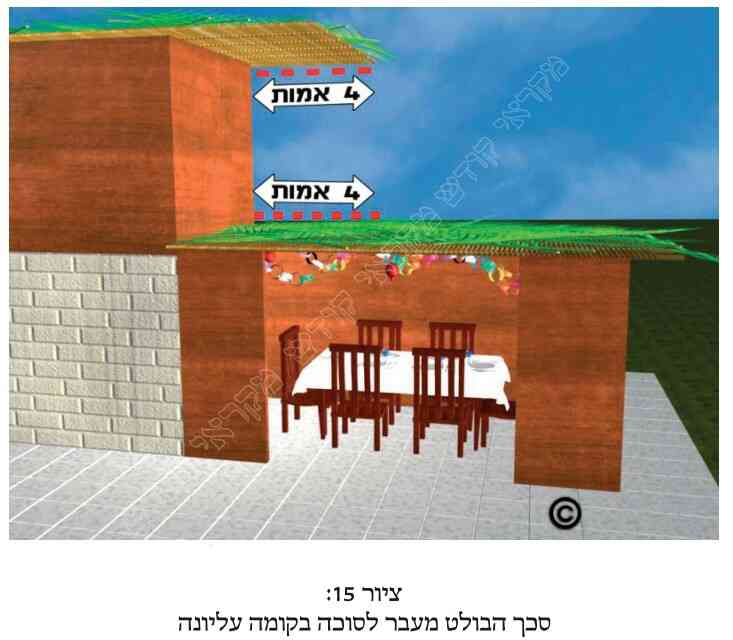
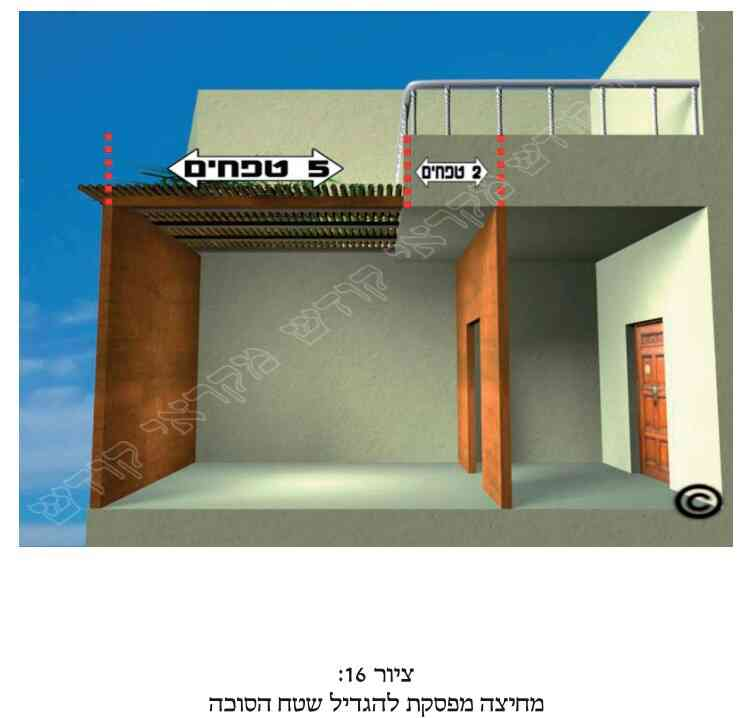
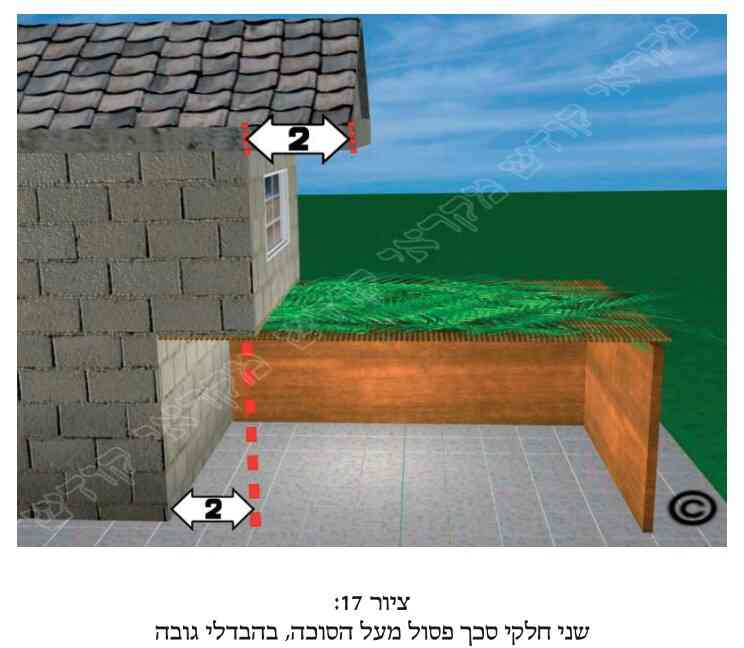
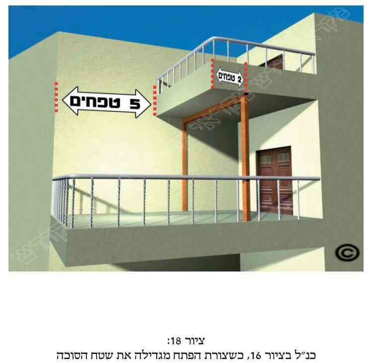
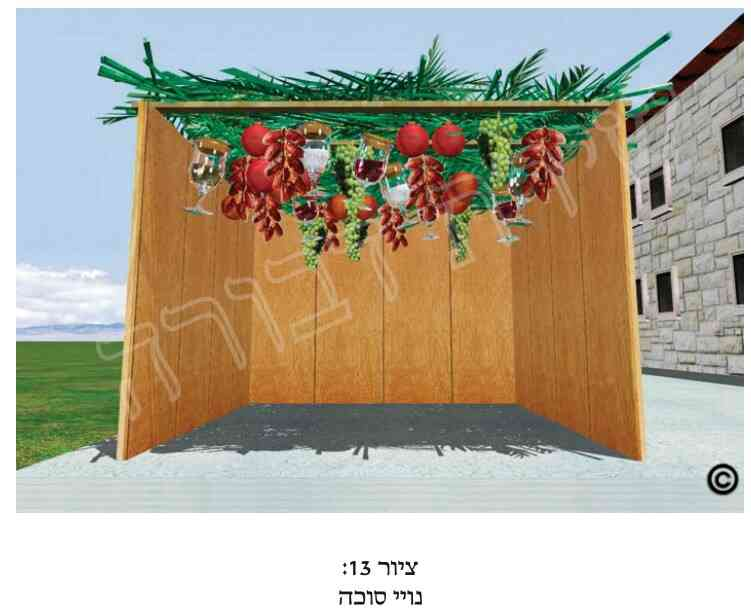

א. כפי שלמדנו בפרק הקודם (בסעיף ל"ב), הסוכה צריכה להיות תחת אויר השמים. ולכן אין יוצאים ידי חובה בסוכה שהינה תחת בית, או תחת אילן, ואפילו בסוכה שהינה תחת סוכה אחרת. ובס"ד נבאר את הדברים.
ב. כתוב בתורה (ויקרא פרק כ"ג פס' מ"ב): "בסֻכת תשבו שבעת ימים". ולמדו מכאן חכמינו ז"ל, שיש לשבת דווקא בסוכה, אך לא בסוכה שנמצאת בתוך הבית. ולכן אין לבנות סוכה תחת תקרת הבית. והרוצה להפוך את ביתו לסוכה, או לבנות את סוכתו תחת תקרת ביתו, דיניו מבוארים בפרק הקודם (בסעיף ל"ד ובמקורות שם). וראה עוד שם (בסעיפים ל"ה ואילך) דיני המשתמש בפרגולה לשם סוכתו, וכן העושה את סוכתו תחת הפרגולה. וישנם עוד מיקרים בענין זה, כמבואר בסעיפים הבאים.
ג. מותר לבנות סוכה תחת תקרת בית (הקבועה במקומה), אף שבעת הנחת הסכך עדיין התקרה עומדת במקומה, ובתנאי שלאחר מכן יסיר תקרה זו. וראה עוד בסעיפים הבאים.
ד. יש מהפוסקים שכתבו שרצוי לבנות את הסוכה באופן שיש לה גגון מעץ, והיינו כעין דלתות מעץ עם צירים בתקרתה, כך שבעת ירידת הגשם יוכלו לסגור את הדלתות הללו, ולכשיפסקו הגשמים יפתחו אותן ויוכלו לקיים את מצות ישיבת הסוכה כראוי ובשמחה. וכיום ניתן לפרוס מעל הסכך יריעות נילון או פלסטיק בעת ירידת הגשם. ואם ניתן, עדיף לפורסם תוך ארבעה טפחים (שהם שלושים ואחד ס"מ) מתחת לסכך, אך אז לא יברך את ברכת "לישב בסוכה" על ישיבתו בה (ויש הנוהגים אחרת, כמבואר במקורות). ועוד מפרטי דין זה ראה לקמן בפרקנו (סעיף כ"ה).
ה. בעת שהגגון או היריעות הנ"ל מכסים את הסכך, אין מקיימים מצות ישיבה בסוכה כשנמצא תחתיהם. ולכן העושים את הגגון הנ"ל (דלתות עם צירים) מעל הסוכה, צריכים להקפיד שכאשר הגגון פתוח, הוא לא ישאר סגור קצת, אלא יפתח לגמרי.באופן שלא יכסה אף חלק מהסוכה. וכשניתן הדבר, רצוי שבעת כניסת החג יהיה גגון זה פתוח, וכן יקפידו שיהיה פתוח בכל ימי החג, במידת האפשר.
ו. כפי שכתבנו, מותר (על פי התנאים הנזכרים בסעיף הקודם) לעשות סוכה תחת גג העשוי מדלתות הנפתחות ונסגרות על ידי צירים (או מתקפלות לתוך עצמן, כאקורדיון). יש מתירים לעשות כן ולסכך את הסוכה אף בעת שהדלתות בגג סגורות, ובתנאי שיפתח אותן לאחר מכן. ויש המחמירים בדבר, ומתירים להניח את הסכך על הסוכה רק בעת שהדלתות בגג פתוחות, כך שמניח את הסכך תחת אויר השמים. הספרדים מקילים אף לכתחילה כדעה הראשונה, ואילו האשכנזים יחמירו לכתחילה כדעה השניה. אך אשכנזי המיקל כדעה הראשונה ודאי שיש לו על מה לסמוך.
ז. לדעת האוסרים בסעיף הקודם, בדיעבד אם כבר סיכך את הסוכה כשהגגון הנ"ל היה סגור, עליו לפתוח את דלתות הגגון, ולאחר מכן לנענע את הסכך של הסוכה (כמבואר לעיל בפרק ד' סעיף מ"ט).
ח. הן לדעת האוסרים בסעיף ו', והן לדעת המתירים, לאחר שהסוכה נעשתה כראוי, מותר במשך ימי חול המועד לפתוח את דלתות הגגון ולסוגרן ללא הגבלה. ולגבי פתיחתן וסגירתן בשבת או ביום טוב, ראה לקמן (בפרק י"ב סעיף ח').
ט. למנהג האשכנזים אסור להניח את הסכך על גבי תקרה כלשהי, אף שלאחר מכן יסיר תקרה זו, ואם עשה כן הסוכה פסולה. ואם שם את הסכך גבוה מעל התקרה בגובה מסוים, ראה דינו כאן במקורות. והספרדים מחמירים בדברים אלה רק לכתחילה. ולגבי שעת הדחק, וכן בדיעבד, לספרדים, ראה כאן במקורות.
י. דיני סוכה שתחת אילן הינם רבים, הן בשל המציאויות השונות, והן בשל הדעות השונות בפוסקים. ויבוארו הדברים בס"ד בסעיפים הבאים.
יא. כפי שכתבנו לעיל (בפרק ד' סעיף ו'), ענפי האילן המחובר לקרקע הינם פסולים לסכך, וכן אסור לבנות את הסוכה תחת ענפי האילן, אף אם לסוכה יש סכך משלה, חוץ ממיקרים מסוימים, וכפי שיבואר בס"ד לקמן. ולאור זאת כתבו הפוסקים, שאם ניתן הדבר, עדיף שלא לבנות כלל את הסוכה תחת אילנות, כדי שלא להכנס לספקות.
יב. צל האילן שפוסל את הסוכה הוא רק הצל שנעשה מענפי האילן שנמצאים ממש מעל הסוכה. אך אם ענפי האילן נמצאים מצידי הסוכה ולא מעליה, אף על פי שבגללם אין אור החמה מגיע לסוכה, הרי שהסוכה כשרה.
יג. כאשר הצל שהאילן עושה מעל הסוכה מרובה מהשטח שאינו מוצל (כנ"ל בפרק ה' סעיף ג' ואילך), ללא התחשבות בצל הנעשה על ידי הסכך של הסוכה, הרי שהסוכה פסולה בין אם הסכך הכשר שלה מועט או מרובה.
יד. דין סוכה שחלקה או כולה תחת אילן שחמתו מרובה מצילתו, ראה כאן במקורות.
טו. כאשר האילן אינו מסכך על הסוכה אלא גזעו וענפיו נמצאים רק בצד הסוכה, אך בעת נשיבת הרוח מאהילים הענפים גם על הסוכה, כתבו כמה פוסקים שהסוכה כשרה, ומותר לישון ולאכול תחת מקום הענפים אף בעת שהענפים נמצאים מעל הסוכה. ומכל מקום כשניתן הדבר, ראוי לקצוץ את הענפים (כמובן ביום חול ולא בשבת או בחג), כיון שיש מהפוסקים שהסתפק בדבר. וראה עוד במקורות.
טז. במיקרים שהאילן נמצא מעל הסוכה ופוסל אותה, אין זה משנה מהו גובה האילן מעל הסוכה, האם המרחק ביניהם גדול אפילו יותר מעשרים אמה או שהוא מועט, וענפי האילן נמוכים ואפילו מונחים על סכך הסוכה, משום שבכל מקרה הסוכה פסולה. וכן אין זה משנה האם האילן היה לפני הסוכה, או שהקמת הסוכה קדמה לאילן.
יז. מי שסיכך את סוכתו על ידי ענפים המחוברים לקרקע ורק לאחר מכן תלשם מהקרקע או מהאילן, התבאר דינו לעיל (בפרק ד' סעיף ז', ובמקורות שם).
יח. עוד מדיני סוכה שתחת האילן, ראה כאן במקורות.
יט. כתוב בתורה (ויקרא פרק כ"ג פס' מ"ב): "בסֻכּת תשבו שבעת ימים". ודרשו חז"ל (לפי הכתִיב) שיש לשבת תחת סוכה אחת ולא תחת שתי סוכות (היינו שיש לה שני סככים). לכן כשישנה מציאות של סוכה תחת סוכה, הסוכה העליונה כשרה והתחתונה פסולה, ובתנאי שיש בסוכה העליונה את תנאי הכשר סוכה, כמבואר בסעיפים הבאים. ודברים אלה שייכים למשל לעושה את סוכתו תחת פרגולה, וכנ"ל (בסוף פרק ה').
כ. מה שכתבנו שהסוכה העליונה היא הסוכה הכשרה ואילו התחתונה פסולה, זאת כאשר מתקיימים התנאים הבאים:
1) בין הסכך של הסוכה העליונה לבין הסכך של התחתונה יש חלל אויר לפחות בגובה עשרה טפחים (שהם שמונים ושנים ס"מ. ויש אומרים שהם תשעים ושמונה ס"מ).
2) צריך שיהא ניתן להשתמש בסוכה העליונה, והיינו שאדם יכול לשים כרים וכסתות על רצפת הסוכה העליונה (שהיא בעצם הסכך של הסוכה התחתונה) ולישון עליהם, וכן לשבת על רצפה זו ולאכול את סעודתו. באופן זה הסוכה העליונה כשרה, אף אם השימוש בה הינו על ידי הדחק, והיינו שרצפתה מתנענעת בעת השימוש.
3) כשצילה של הסוכה העליונה מרובה מחמתה.
4) כשהסכך של הסוכה העליונה גבוה פחות מעשרים אמה (שהם תשעה מטרים וארבעים ס"מ) מעל הסכך של הסוכה התחתונה.
5) ברור שצריך שיתקיימו בסוכה העליונה שאר דיני הכשר הסוכה, וכגון שיש לה את השטח הדרוש להכשר סוכה, ושאר הדברים.
רק כאשר מתקיימים התנאים הללו הרי שהסוכה העליונה כשרה, ואז הסוכה התחתונה פסולה (חוץ ממקרים מיוחדים, כמבואר במקורות), בשל הדין של "סוכה תחת סוכה".
כא. כאשר בסוכה העליונה אין מתקיימים כל התנאים הנזכרים בסעיף הקודם, הרי שהסוכה העליונה פסולה, ואז אם בסוכה התחתונה מתקיימים כל תנאי הכשר הסוכה, הרי שהסוכה התחתונה כשרה והעליונה פסולה. ואם במקרה זה צילתן של שתי הסוכות מרובה מחמתן, והסכך של הסוכה העליונה גבוה לפחות עשרים אמה מעל הסכך של הסוכה התחתונה, שתי הסוכות פסולות.
כב. אם בכל אחת מהסוכות חמתה מרובה מצילתה (כגון סוכה שסככה מועט ונמצאת מתחת לפרגולה), הרי שהסוכה התחתונה כשרה בתנאי שבצירוף הסכך של הסוכה העליונה המצב בתחתונה שצילתה מרובה מחמתה, וכן כשסכך הסוכה העליונה הינו פחות מכ' אמה (שהם תשעה מטרים וארבעים ס"מ) מהקרקע. ואם הסוכה התחתונה חמתה מרובה מצילתה אך הסוכה העליונה צילתה מרובה מחמתה (ומתמלאים גם שאר תנאי ההכשר), הרי ששתי הסוכות כשרות.
כג. עוד מדיני סוכה הנמצאת תחת סוכה אחרת ראה כאן במקורות.
כד. שנינו במשנה: פירס עליה (על הסוכה) סדין מפני החמה, או תחתיה מפני הנְשָר (עלי סכך הנושרים), פסולה (הסוכה). ונחלקו הפוסקים בפירוש דין זה. לדעת כולם מדובר שאף ללא סדין או יריעה כלשהי צילתה של הסוכה מרובה מחמתה (היינו שהצל שבה הנעשה על ידי הסכך רב יותר מאור החמה שעובר דרך תקרתה). אלא שיש אומרים שלמרות שהסכך כפי שהוא הינו כשר, בכל אופן אסור לפרוס סדין או יריעה וכדומה מעל הסכך על מנת להגן מפני השמש, וכן אסור לפורסם תחת הסכך כדי למנוע נשירת עלים וכדומה מהסכך לתוך הסוכה. ויש דעה אחרת בענין זה, אך דעת רוב הפוסקים כדעה הראשונה. וראה עוד כאן במקורות ובסעיפים הבאים.
כה. בשעת הדחק, כשאדם אינו יכול להשאר בסוכה בשל העלים הנושרים מהסכך לתוך האוכל, או בשל הגשמים הנוטפים לסוכה, עדיף שיפרוס סדין או יריעת נילון, ברזנט וכדומה מעל הסכך או מתחתיו, כשהם בתוך ארבעה טפחים (שהם כשלושים ואחד ס"מ) הסמוכים לסכך, מאשר שיצא מהסוכה ויאכל או יישן מחוץ לסוכה. ומותר לפורסם (לפחות כשפורסם מעל הסכך) רק כשניכר שעושה כן בשל הרוח. וכשנמצא אז בסוכה לא יברך את ברכת "לישב בסוכה". ומכל מקום לכשיתאפשר הדבר, יסיר את הסדין והיריעות מהסכך. וראה עוד לעיל בפרקנו (בסעיף ד').
כו. דין פריסת סדין וכדומה בצידי הסוכה או מעליה בעת שישנה רוח העלולה לכבות את הנרות, וכן דין פריסת סדין מעל הסוכה גם לנוי וגם כדי להגן מהגשם או מהשמש, ראה כאן במקורות. וכן דין הרוצה בשעת הדחק לפרוס בשבת או ביום טוב את הסדין או את היריעה על הסכך או מתחתיו, והורדתם אז מהסכך, ראה כאן במקורות ולקמן (בפרק י"ב סעיפים ט' - י"ג).
כז. סוכה שחלקה נמצאת תחת גג (כגון שמעליה יש מרפסת, גגון, צינור וכדומה) שדינו כסכך פסול הממעט את השטח הכשר של הסוכה. לעיתים גורם הדבר שלא יהא בסוכה מספיק שטח של סכך הכשר לסוכה (שהוא לפחות שבעה טפחים על שבעה טפחים, שהם כחמישים ושבעה ס"מ. ויש אומרים שהם כששים ותשעה ס"מ). דנו הפוסקים אם במקרה זה מועיל להעמיד מחיצה באמצע הסוכה תחת הסכך הפסול ומקביל לאורכו, ועל ידי כך להקטין את שטח הסוכה, כך שהסכך הפסול יהיה ברוחב הקטן משלושה טפחים (שהם עשרים ושלושה ס"מ), ושטח זה יצטרף לשטח הסכך הכשר (אם רוחבו יותר מארבעה טפחים), כך שבסכך הכל יהיה סכך בשיעור הכשר לסוכה (לפחות שבעה טפחים על שבעה טפחים, וכנ"ל), ואז יהיה מותר אף לאכול ולישון בכל שטח זה. יש מהפוסקים הסוברים שאין דבר זה מועיל להגדיל את שטח הסוכה, ולכן אין הסוכה כשרה. אך רוב הפוסקים מקילים וסוברים שדבר זה מועיל להגדיל את שטח הסוכה, ועל ידי כך לעשותה כשרה.
כח. לדעת הפוסקים המקילים בסעיף הקודם, בין אם גובה הסכך הכשר של הסוכה שווה לגובה תחתית המרפסת שמעליו, ובין אם סכך הסוכה נמוך מגובה המרפסת שמעליו, יש לעשות את המחיצה הנ"ל עד גובה הסכך הכשר. ויש מקילים וסוברים שדי לעשות את המחיצה עד גובה עשרה טפחים (שהם שמונים ושנים ס"מ. ויש אומרים שהם תשעים ושמונה ס"מ). ובאשר לאורך המחיצה, יש מי שאומר שהיא צריכה להיות ארוכה לפחות ברוב אורך הגג המכסה את הסוכה. ואם דלת משמשת כמחיצה, ראה כאן במקורות.
כט. עוד מדיני מחיצה זו והסכך שמעליה ראה כאן במקורות.
ל. כאשר גובה הסכך של הסוכה שווה לגובה תחתית המרפסת שמעליו, לדעת פוסקים רבים מספיק לעשות "צורת הפתח" (כנ"ל בפרק ג' סעיפים י' וכ"ד) במקום המחיצה הנ"ל. אך אם תחתית המרפסת גבוהה מגובה הסכך של הסוכה, ואין סכך תחת המרפסת, יש מהפוסקים שכתבו שאין להסתפק ב"צורת הפתח", אלא יש לעשות דוקא מחיצה כנ"ל.
לא. סוכה שחלקה נמצא תחת מרפסת, גגון, מרזב וכדומה, אך לא נפסלה בשל כך, אלא נשאר לה סכך כשר בשיעור הכשר סוכה, ורוצה להגדיל את שטחה על ידי מחיצה, כנ"ל, ראה דינה כאן במקורות.
לב. מדברי אחד הפוסקים נראה שאין לעשות סוכה תחת חבלי כביסה, חוטי חשמל וכדומה, אם המרחק ביניהם הינו פחות משלושה טפחים (שהם כעשרים וארבעה ס"מ. ויש אומרים כעשרים ותשעה ס"מ). ושאר הפוסקים מתירים לעשות סוכה תחת חבלים אלה, אם כשנצרף את עובי כל החבלים הללו שמעל הסוכה הוא יהיה פחות מארבעה טפחים (שהם כשלושים ואחד ס"מ). וכן הוא הדבר במציאות, שבצירוף עובי כל החבלים אין שיעור זה, ולכן יש להקל. ולמעשה פסקו רוב ככל הפוסקים להקל כדעה השניה.
לג. אף אדם הרוצה להחמיר (כבסעיף הקודם), אינו יכול לחייב את שכנו (בעל חבלי הכביסה שמעל הסוכה) להוריד את חבלי הכביסה. ויש מהפוסקים שכתבו עיצה לפתרון בעית חבלי הכביסה שמעל הסוכה (למחמירים בכך), והוא לשים סכך גם על חבלי הכביסה (נוסף לסכך של הסוכה), באופן שהוא יהיה בין החבלים, אך לא ישימו הרבה מאוד סכך לצורך זה.
לד. כאשר הסוכה כשרה למרות חבלי הכביסה שמעליה, הריהי כשרה גם כאשר בחבלי הכביסה תלויה כביסה, ואף כשהיא עפה ברוח. אך אם עקב הרוח תסתבך הכביסה בחבלים ותאהיל על הסוכה ברוחב של ארבעה טפחים (שהם שלושים ואחד ס"מ) על ארבעה טפחים, הרי שאז הדבר פוסל את כל הסוכה או לפחות את חלקה. ולכן יש להמנע מלתלות כביסה מעל הסוכה. ויש מי שאומר שבכך יכול בעל הסוכה לחייב את שכנו להוריד את הכביסה התלויה מעל סוכתו, ושעלולה להסתבך בשל הרוח ולהאהיל על סוכתו.
לד(1).
לה. לדעת רוב הפוסקים, אם יורד שלג על הסוכה (דבר המצוי במקומות הקרים בארצות הגולה), אין הוא נחשב כתקרה על גבי הסוכה, ואינו פוסל את הסוכה. ולכן המברך אז את ברכת "לישב בסוכה" יש לו על מה לסמוך. ומכל מקום אם השלג רב, וניתן הדבר, רצוי להוריד את השלג מעל הסוכה, אך לא יעשו כן בשבת ולא ביום טוב.
לו. שנינו במשנה: "הישן תחת המיטה בסוכה, לא יצא ידי חובתו". ומכאן למדו שאין אדם מקיים את מצוות הישיבה בסוכה אלא כאשר הוא נמצא תחת הסכך, ולא תחת אוהל שבסוכה. ולגבי מה נחשב אוהל החוצץ בין האדם לסכך, ראה בסעיפים הבאים.
לז. שלושה דברים יכולים לגרום להגדרת הדבר כאוהל, האוסר את השינה והאכילה תחתיו בסוכה:
1) כשיש לו גג שרוחבו לפחות טפח (כמבואר במקורות).
2) כשיש חלל אויר בגובה של לפחות עשרה טפחים (שהם שבעים ושמונה ס"מ) בין הקרקע לבין תחתית הדבר.
3) כשלדבר יש קביעות, ואינו ארעי.
וכאשר מתקיימים לפחות שני תנאים מתוך השלושה הללו, הרי שנחשב הדבר כאוהל בתוך הסוכה, ואין לישון או לאכול תחתיו.
לח. ישנם סוגים שונים של מיטות (בעיקר עם כיסויים, כעין כִילות), שחז"ל דנו אם מותר לישון בהן בסוכה. אך כיום אין הדבר שכיח, ודינם כתוב במקורות (וראה עוד במקורות לגבי המיטות והשולחנות בימינו).
לט. כאשר ישנה מיטת קומתיים (מיטה על גבי מיטה) בסוכה, מותר לישון על המיטה העליונה. ואם המרחק בין המיטה העליונה לבין התחתונה הינו פחות מעשרה טפחים (שהם שבעים ושמונה ס"מ), נחלקו הפוסקים אם מותר לישון במיטה התחתונה (ולדעת המתירים מותר הדבר אף אם באותה עת אדם אחר ישן במיטה העליונה). ואם המרחק בין המיטות הינו גדול מהמרחק הנ"ל, לדעת כולם אין לישון במיטה התחתית.
מ. יש מהפוסקים שכתבו שבעת שיורד גשם בסוכה עדיף לשבת בה תחת מטריה מאשר להכנס לביתו (בחול המועד, ולא בשבת וביום טוב), ועדיף להרים אותה שתהיה תוך ארבעה טפחים (שהם כשלושים ואחד ס"מ) קרובה לסכך. ומכל מקום בשום אופן לא יברך את ברכת "לישב בסוכה" כשיושב תחת המטריה.
מא. אף לדעת המחמירים לעיל (בסעיף כ"ד), אם הסוכה צילתה מרובה מחמתה, מותר לפרוס סדין או יריעה תחת הסכך אם עושה כן רק לנוי ויופי הסוכה, וכן מותר לתלות תחת הסכך כלים נאים, פירות ושאר קישוטים לצורך נוי הסוכה. וכל זה מותר בתנאי שהם נמצאים בתוך ארבעה טפחים (שהם כשלושים ואחד ס"מ) סמוך לסכך. אך אם הסדין ושאר הקישוטים נמצאים במרחק של ארבעה טפחים (כנ"ל) או יותר מן הסכך, הרי שדינם כדין כל סכך פסול הפוסל את הסוכה (כנ"ל בפרק ה' סעיף י"א ואילך), ויש להזהר בכך. וראה עוד במקורות.
מב. את נרות החשמל שבסוכה אין צורך לתלות תוך ארבעה טפחים סמוך לסכך, ואדרבא, עדיף להרחיקן מהסכך כפי יכולתו, מחשש שריפה. בענין ישיבה תחת נורות אלה, ראה כאן במקורות.
מג. יש לעשות את הסוכה לשם מצוות סוכה. ואפילו אם עשאה רק לשם צל, הסוכה כשרה לכתחילה. אך אם עשה את הסוכה שלא לצל ולא לשם מצוות סוכה, אלא לכל מטרה אחרת, כגון למטרת צניעות (לעשות לעיתים בסוכה שימושים שלא יראו אותו), או כדי לדור בה כל השנה, או שעשאה לשם אוצר (לאצור ולאחסן בה דברים), וכדומה, הרי שהסוכה פסולה, וינהג כדלקמן (בסוף סעיף נ"ב).
מד. כל ההלכות הללו אמורות לגבי סיכוך הסוכה, אך כשעושה את דפנותיה או קישוטיה אינו צריך לכוון דבר, ואפילו לא לשם צל ולא לשם סוכה.
מה. לפי האמור לעיל, לפני ששמים את הסכך על הסוכה, רצוי לומר: "הריני שם סכך זה לשם מצוות סוכה". ויש אומרים נוסח ארוך יותר (כמבואר במקורות). ומכל מקום אין חובה לומר זאת בפה, אלא מספיק רק לחשוב ולכוון ששם את הסכך לשם מצוות סוכה, או לפחות ששם אותו לשם צל.
מו. סוכה שנעשתה גם לשם צל וגם לשם דירה (או לצניעות או לאוצר) הריהי פסולה. ואם שם את הסכך, וכוונתו היתה שבימי חג הסוכות הסכך ישמש לשם מצוות סוכה או לשם צל בלבד, ואילו לאחר החג הסכך ישמש לשם דירה או לצניעות או לאוצר (כגון תקרת פרגולה), דעת כמה פוסקים שהסוכה כשרה, ואחרים מחמירים בדבר ומצריכים להגביה את הסכך לפני החג לשם סוכה או לשם צל (כדלעיל בפרק ד' סעיף מ"ט).
מז. סוכה שעשאה לשם מצוות סוכה או לצל, ולאחר חג הסוכות המשיך לדור בה כל השנה, ראה דינה במקורות.
מח. סכך שהונח על הסוכה ללא כוונה כלל, וכגון שזרקו לעבר סוכה אחת, והוא נפל על סוכה אחרת, הריהו סכך פסול. וכן אם הניח חלק מהסכך באופן שהוא ישמש כמעמיד לסכך ולא שישמש כסכך, ולאחר מכן הוא זז והחל לשמש כסכך עצמו, לאור הנ"ל הריהו פסול. ויש מקילים ומכשירים במיקרים אלה. וראה עוד דוגמא כאן במקורות.
מט. הפוסקים נתנו סימן למי שמצא סוכה שכבר בנויה, כיצד ניתן לקבוע אם הסוכה עשויה לשם צל או לשם צניעות: אם הסוכה מסוככת יפה, שיש הרבה סכך על הסוכה, הרי שהיא נעשתה למטרת צל והסוכה כשרה. אך אם אין בה הרבה סכך, הרי שהיא נעשתה לשם צניעות, והסוכה פסולה. ואם הדבר ספק בידו, יש להחמיר ולראות את הסוכה כפסולה.
נ. חכמינו ז"ל נתנו כמה דוגמאות לסוכה שלא נעשתה לשם מצוות סוכה, ובכל אופן היא כשרה, בתנאי שעשאוה לשם צל. ואלו הן הדוגמאות (שראשי תיבות שלהן הוא: גנב"ך רקב"ש)
1) סוכת גויים (שדרים בה רק בימות הקיץ).
2) סוכת נשים (שדרות בה רק בימות הקיץ, כנ"ל).
3) סוכת בהמות (שעושים אותה לצורך צל לבהמות. ומדובר כשהיא נקיה מאשפה שריחה רע, וכן מצואה וכדומה).
4) סוכת כותים (היינו שומרונים שדינם כשאר הגויים, ונהגו לעשות סוכות לצל).
כל ארבע דוגמאות אלה חסרונן הוא שהעושים את הסוכה אינם חייבים במצוות סוכה, ובכל אופן הסוכה כשרה אם עשו את סוכתם לשם צל.
וארבע הדוגמאות הנוספות הן:
5) סוכת רועים (הנמצאת בשדה, ועשאוה לשבת בה בעת השרב כששומרים על הצאן).
6) סוכת קייצים (ששומרים על התאנים השטוחות בשדה ליבוש).
7) סוכת בורגנים (שהיו שומרים בימיהם על העיר).
ארבע הדוגמאות האחרונות הינן אמנם סוכות של יהודים החייבים בסוכה, אך חסרונן הוא שאינן סוכות קבועות, אלא מידי פעם מעבירים אותן ממקום למקום, ובכל אופן אם עשו את סוכתם לשם צל הריהי כשרה.
וברור הדבר, שכל אחת משמונה הסוכות הללו הינה כשרה בתנאי שמתקיימים בה כל דיני סוכה כשרה (כגון שלוש דפנות כשרות, סכך כשר, סכך תחת אויר השמים וכו').
נא. גם כאשר מצטרפים שני החסרונות של שמונה הסוכות הנ"ל (סוכות גנב"ך רקב"ש), והיינו שהסוכה נעשתה על ידי מי שאינו חייב במצוות סוכה, ועשו אותה למטרה ארעית ולא לקביעות, הרי שהסוכה כשרה אם נעשתה לשם צל.
נב. העושה את סוכתו לשם צל (כגון באחת משמונה הסוכות של גנב"ך רקב"ש), עליו לחדש בה דבר נוסף, כשם שיש לחדש דבר בסוכה ישנה (כדלקמן בפרקנו בסעיפים נ"ו ונ"ח). ואם עשה את סוכתו לשם מצוות סוכה, ראה את דינו לקמן (בסעיף ס'). אך סוכה שנעשתה למטרת צניעות, או לאוצר, או לדור בה כל השנה, לא ניתן להכשירה על ידי חידוש כלשהו בסכך שלה, אלא יש לנענעו מחדש (כנ"ל בפרק ד' סעיף מ"ט).
נג. עוד מדיני סוכות גנב"ך ורקב"ש, ראה כאן במקורות.
נד. שנינו במשנה: "סוכה ישנה... בית הלל מכשירין". והסבירו חכמינו ז"ל שסוכה ישנה פירושה שעשו אותה לפני שנכנסו שלושים הימים הסמוכים לחג הסוכות. ובמקרה זה אם עשו אותה לשם צל, הריהי כשרה, באופן המבואר לקמן. ואם עשו אותה לשם דירה, או צניעות וכדו', ראה לעיל (בסוף סעיף נ"ב).
נה. עשיית הסוכה הישנה פירושו הנחת הסכך על הסוכה. אך באשר לבניית דפנות הסוכה, אין זמן מוגבל לבנייתן, כך שאפילו עשאן זמן רב ביותר, ואפילו כמה שנים, לפני חג הסוכות, הריהן כשרות לסוכה, ואין צריך לעשות בהן דבר כדי להכשירן. וראה עוד לקמן (בסעיף נ"ח).
נו. סוכה ישנה (כנ"ל) שעשו אותה לשם צל, יש לחדש בה לפני החג דבר מסוים בסכך לשם החג. פירוש הדבר שיוסיף סכך (אפילו על גבי הסכך הקיים) בשיעור טפח על טפח (שהם בערך כשמונה ס"מ על שמונה ס"מ. ויש אומרים שהם בערך כעשרה ס"מ על עשרה ס"מ). ואם רוצה, יכול במקום זאת להוסיף לכל אורך הסוכה או לכל רוחבה סכך אפילו בשיעור צר כלשהו. וראה עוד בסעיף הבא.
נז. נחלקו הפוסקים לגבי המקרה הנ"ל (סוכה ישנה שעשאוה לשם צל), אם זו חובה לחדש בסכך דבר מסוים. דעת כמה פוסקים אשכנזים שדבר זה הינו חובה, ואם לא עשה כן הסוכה פסולה. אך דעת רוב הפוסקים האשכנזים שלכתחילה מצוה לעשות כן, אולם אם לא עשה כן ודאי שהסוכה כשרה. ואילו הספרדים יותר מחמירים בכך. יש מהם הסוברים שמצוה לכתחילה לעשות כן, אך בדיעבד אם לא עשה כן ונזכר בכך ביום טוב או בשבת (שבזמנים אלה אסור לתקן את הסוכה) הרי שהסוכה כשרה. אך יש מהספרדים הפוסקים שחובה לעשות כן, ואם לא עשה כן הרי שהסוכה פסולה אף בדיעבד (ולדעתם אם אין לו סוכה אחרת, ואינו יכול כעת לחדש דבר בסוכתו, בכל אופן יאכל וישן בסוכה זו, אך לא יברך את ברכת "לישב בסוכה").
נח. אם אין לסוכה הישנה הנ"ל לפחות שלוש דפנות כדין (כנ"ל בפרק ג' סעיף ו' ואילך), ועושה שתהיה לה דופן שלישית כדין ובכך מכשיר את הסוכה, הרי שנחשב הדבר שחידש בסוכה דבר, ואין צריך לחדש גם בסכך.
נט. סוכה שעשאוה לשם צל בתוך שלושים הימים הסמוכים לחג הסוכות (מליל י"ד אלול דאשתקד), נחשבת היא שעשו אותה לשם החג והריהי כשרה, ואין צריך לחדש בה שום חידוש, ולא להוסיף בה דבר.
ס. סוכה שעשאה רק לשם חג סוכות (והיינו שם את הסכך לשם מצוות סוכה), אף על פי שעשאה כמה שנים קודם לכן (כגון קורות תקרת פרגולה), אין צריך לחדש בה דבר, והריהי כשרה כמות שהיא. ויש מגדולי האשכנזים המחמירים וסוברים, שאם שמו את הסכך לפני חג סוכות האחרון, אזי לכתחילה עדיף שיחדש בה דבר (כדלעיל בסעיף נ"ו), אך גם לדעתם אין זו חובה.
סא. עוד מדיני סוכה ישנה ראה כאן במקורות.
סב. כיון שצריך ממש לעשות את הסכך לשם צל, לכן סכך שנעשה מאליו הריהי פסולה. לפיכך מי שלמשל היה לו גדיש (ערימה של עומרים) וחפר מצידו חלל גדול ועשהו סוכה, הריהי סוכה פסולה, כיון שהוא רק חפר בתוך הגדיש ולא עשה מעשה בגוף הסכך, ועתה הסכך נעשה מאליו, וזה אסור מדין "תעשה – ולא מן העשוי".
סג. עוד פרטי דינים בענין החוטט וחופר בגדיש לעשותו סוכה, ובאיזה אופן הסוכה אז כשרה, ראה כאן במקורות.
סד. עוד מדיני "תעשה ולא מן העשוי", כגון סוכה שנפסלה בשל דין "תעשה ולא מן העשוי", אופן הכשרה (על ידי נענוע והגבהת הסכך), ראה לעיל (בפרק ד' סעיף מ"ט). ובענין הקדמת בניית הדפנות להנחת הסכך, ראה לעיל (פרק ג' סעיף מ"א). ובענין סוכה שחלק מדפנותיה עשויות מדלתות, באופן שכשהן סגורות הסוכה כשרה (שיש לה לפחות שלוש דפנות), וכשהן פתוחות הסוכה פסולה (כי אין לה מספיק דפנות), ראה לעיל (בפרק ג' סעיפים מ"ב ומ"ג). והכשר סוכה שדפנותיה נפלו והסכך נשאר, ראה לעיל (בפרק ג' סעיפים מ"א ומ"ג). ועוד מענינים אלה ראה לעיל (בפרק ג' הערה ק"ג).
סה. למרות שאשה, וכן ילד או ילדה קטנים, ולהבדיל גם גוי, פטורים ממצות סוכה, בכל אופן מותר לאשה ולילדים לבנות את דפנות הסוכה, וכן לקשט את הסוכה הן בדפנותיה והן בקישוטים שבסכך. ולגבי הנחת הסכך על הסוכה על ידי אשה וילדים, וכן בניית הסוכה, קישוטה וסיכוכה על ידי גוי, ראה בסעיפים הבאים.
סו. מעיקר הדין מותר לאשה, וכן לילד או לילדה קטנים (שטרם הגיעו לגיל מצוות), לסכך את הסוכה (והיינו להניח את הסכך על הסוכה). ומכל מקום לדעת האשכנזים לכתחילה טוב להחמיר שרק אדם גדול (היינו גבר שכבר הגיע לגיל שלוש עשרה שנה) יסכך את הסוכה.
סז. מעיקר הדין מותר אפילו לגוי לבנות את הסוכה, לקשטה ולסככה בסכך. אך לגביו הפוסקים החמירו יותר, ולכן רצוי שהיהודי עצמו יבנה את דפנות הסוכה, ובעיקר שיסכך את הסכך. ואם בכל אופן פועלים גויים בנו את הסוכה או סיככוה, טוב ורצוי שהיהודי יחדש בה דבר (באופן המבואר בפרקנו בסעיפים נ"ו ונ"ח).
&הערות:
[1] א. עפ"י הגמ' סוכה (ד"ט, ב'), הטור, הלבוש, הט"ז, המ"ב (סי' תרכ"ו רסק"א), כה"ח (סי' תרכ"ו רסק"א) וש"א. וכנ"ל (בפרק ה' סל"ב ובהערות שם).
[2] ב. מה שכתבנו גבי סוכה תחת בית. הא דהבית לא יכול לשמש כסוכה, כ"כ רש"י בסוכה (די"ד, א' ד"ה "ורבי מאיר"), שכתב שבית עצמו פסול, דסוכה אמר רחמנא ולא ביתו של כל ימות השנה. ע"כ. הב"ד המ"ב (רס"י תרכ"ו), כה"ח (רס"י תרכ"ו) וש"פ. והא דאין לשבת בסוכה שבתוך הבית, כך דרשו חז"ל בגמ' סוכה (ד"ט, ב') עה"פ "בסכת תשבו": ולא בסוכה שתחת הסוכה. ולא בסוכה שתחת האילן, ולא בסוכה שבתוך הבית. עכ"ל הברייתא. וכן עולה מדברי המשנה בסוכה שם (ד"ט, ב'), שאמרו שהעושה סוכתו תחת האילן כאילו עשאה בתוך הבית. עכ"ל. ומ"מ צ"ע האם מ"ש שאין לעשות סוכה תחת בית, האם זה דין עצמי, וה"ה שאסרו גם סוכה תחת סוכה. והטעם בכ"ז משום דבעי סוכה תחת אויר השמים. או שאיסור עשיית סוכה תחת בית הוא בשל כך שהבית פסול מלשמש כסוכה. וה"ה סוכה תחת אילן, שג"ז בגלל שהאילן פסול מלשמש כסכך. ומה שאסרו סוכה תחת סוכה, למרות שבעצם שתיהן יכולות להיות סוכות כשרות, מ"מ לזה יש לימוד מיוחד דבעי להיות תחת סוכה אחת ולא תחת שתי סוכות (ראה כה"ח סי' תרכ"ו סק"א). ויש צדדים לכאו' לפה ולפה. ואכמ"ל.
ומה שכתבנו גבי סוכה שתחת אילן. הא דהאילן עצמו פסול, הטעם משום דמחובר הוא [מ"א. לב"ש. מ"ב (רס"י תרכ"ו) כה"ח (רס"י תרכ"ו)]. ומחובר פסול מדכתיב "באספך מגרנך ומיקבך", ממה שאתה מאסף מגורנך ומיקבך עשה לך סוכה, ולא דבר המחובר לקרקע [גמ' סוכה (די"ב א'). ב"י ושו"ע (רס"י תרכ"ט). לבוש. כה"ח (שם) וש"פ]. וכנ"ל כ"ז בפרק ה' (סל"ב). והא דסוכה תחת האילן פסולה, ג"ז נלמד מהמשנה ומהברייתא הנ"ל בסוכה (ד"ט ב').
וכן עולה מדברי הגמ' (שם) גבי העושה סוכה תחת סוכה, וכדלקמן בפרקנו (בסעי' י"ט).
[3] ג. כנ"ל בהערה הקודמת עפ"י המשנה והברייתא בסוכה (ד"ט, ב'). וראה לעיל (פ"ה הערה צ"ה).
[4] ד. בענין ההופך את ביתו לסוכה, ר' לעיל (פ"ה הערה צ"ט), עפ"י מרן (סי' תרל"א ס"ט).
ובענין הבונה את סוכתו "תחת" תקרת ביתו, ג"ז עיין לעיל בפ"ה (בפרט בהערות ק' וק"א), עפ"י מרן (סי' תרכ"ו ס"ג) והמ"ב (שם סקי"ז).
וע"ע שם (בסעיף ל"ג) בענין איסור חיבור הסכך במסמרים אל הסוכה.
ובענין המשתמש בפרגולה לשם סוכתו, עיי"ש בפרק ה' (סעי' ל"ה-מ"ה). ובענין העושה את סוכתו תחת הפרגולה (היינו שהסכך מתחת לפרגולה), עיי"ש בפרק ה' (סעי' מ"ו).
[5] ה. עיקר ד"ז הוא מהכלבו והג"א (פ"ק דסוכה). וכ"פ הרמ"א (סי' תרכ"ו ס"ב), המ"ב (סקט"ו), כה"ח (סקכ"ז) וש"פ.
וכתבו הפוס' שהנ"מ שפסקינן להיתר, היא שלכן א"צ לנענע הסכך מחדש אחר שהסירו את תקרת הבית [מ"ב (סי' תרכ"ו רסקט"ו), כה"ח (רסקכ"ז) וש"א].
טעם ההיתר, משום שבני"ד שמסיר התקרה, אין בזה איסור תולמ"ה [רמ"א (סי' תרכ"ו ס"ב)]. והטעם שאין בזה תולמ"ה, כיון שאין הפסול בסכך עצמו [כלבו. הג"א. הרמ"א (שם)]. ור' עוד טעם בהמשך הערה זו.
אע"פ שגבי העושה סוכתו תחת הגג העשוי לפתוח ולסגור, שבזה נחלקו האחרו' כדלקמן בסעי' ו' [עפי"ד הרמ"א (בסי' תרכ"ו ס"ג) והמ"ב (סקי"ח)]. ויש שכתבו שם (הב"ח, המ"א, הא"ר ועוד אחרו') שאין לסכך תחת הגג הנפתח כשהוא עדיין סגור. ואילו בני"ד התירו לסכך תחת התקרה אם אח"כ יוציאנה (כגון שיוציא הרעפים). מ"מ בני"ד לכו"ע שרי להקל בזה [מ"ב (שם סקט"ו) וכה"ח (סקכ"ז) בשם הרבה פוס', שאף הב"ח והמ"א מודים בזה. ועיי"ש בבה"ט (סק"ה) ובכה"ח (סקכ"ז) שי"א שאף בזה יחלקו הב"ח והמ"א ויחמירו, אך נראה שאין כן ד' רוה"פ]. והטעם, משום שבעושה סוכתו ומסכך תחת הגג העשוי לפתוח ולסגור, הרי שפתיחת הגג אחר הסיכוך אינה נחשבת כמעשה חשוב, והוי הסכך תולמ"ה. משא"כ כשסיכך תחת בית ואח"כ הסיר הרעפים זה מיקרי מעשה חשוב, ואף הגג נכשר בכך [שעה"צ (ס"ק י"ז וכ"ו). כה"ח (סקכ"ז) וש"א].
ובענין העושה סוכה תחת צריף ר' שעה"צ (אמצע סקי"ז) וכה"ח (אמצע סקכ"ז).
[6] ו. ג"ז כ' הרמ"א (סי' תרכ"ו ס"ב) עפ"י הכלבו והג"א.
[7] ז. כתב הריעב"ץ בסידור בית יעקב (עמ' 353, בדיני ליל א' דסוכות), וז"ל: מצוה למי שאפשר לו לעשות סוכה עם גג הנסגר בעת הגשם, וכשפוסק (הגשם) נפתח (הגג) והסכך נגוב, ויכול לקיים המצווה כראוי בזמנה. והוסיף: ואם אין לו (גג) וירד גשם בערב יו"ט קודם הלילה, והסכך מלא מים, ואם ימתין עם בני ביתו [סמוך לחצות] ימנעו משמחת יו"ט, לא ימתין. ולילה הראשונה... והחרד לדבר ה' אם מרגיש בנפשו שאם יאכל בביתו יצטער ביותר, רשאי לאכול בסוכה, או ימתין [עד קודם חצות], והכל לפי הענין. עכ"ל. וכתב מחה"ש (סי' תר"מ סק"ט) עפי"ד המ"א, שעדיף לישון או לאכול תחת הגגות הסגורים מאשר לאכול בחוץ. דתחת הגגות לכמה פוסקים יוצאים י"ח מעיקר הדין. ומ"מ כשסוגר הגגות יתכוון לשם צל. הב"ד בסה"ס (מיל' לפי"ב סק"ג), והוסיף שמדובר שהדלתות ששם על הסכך הינן מעץ שכשרות לסכך מה"ת. עכ"ד. וכ"כ בני"ד גם במט"א (סי' תרכ"ה סעי' ס"ד). הב"ד בסה"ס (מיל' לפי"ב סקכ"ד). ואנו הוספנו שעי"כ מקיים המצוה גם בשמחה, משום שהכל יבש ולא הרטיבו הגשם, וכן עי"כ לא יהא מצטער לאחר שיכלה הגשם. ור' לקמן (בפרק י"א סעי' ל"ג) אם נחשב מצטער הפטור מהסוכה בשל הטפטוף מהסכך לאחר שכלה הגשם.
ועוד כ' שם המט"א (בסעי' כ"ט) שיש מהמהדרים, שאף שיש כאלה שיש להם סוכה עם גג עם צירים, כנ"ל, מ"מ יבנו עוד סוכה קטנה בלי גג עליה, ואז כשהסוכה עם הגג סגורה ע"י הגג, והוא צריך לאכול או לשתות אכילת ארעי וטורח לו לפתוח ולסגור הגג בכל פעם, ואז ישב בסוכה הקטנה. עיי"ש. הב"ד בסה"ס (שם סקכ"ט).
[8] ח. כ"כ המ"א והמ"ב (סי' תרכ"ט סקנ"ח), שבשעה"ד כשאינו יכול לאכול בסוכה בשל הגשמים, שמוטב לפרוס סדין תחת הסכך, וזה עדיף משיאכל מחוץ לסוכה, אך מ"מ לא יברך ע"כ.
ומה שכתבנו שכשפורסם בתוך הסוכה, שצריך לפורסם תוך ד"ט הסמוכים לסכך, כ"כ הח"א, והב"ד המ"ב שם. והוסיף (בשעה"צ סקפ"ד) הטעם, דלא עדיף מלנאותה. וכ"ז בחול, אך בשבת ויו"ט יפרוס היריעה דוקא תוך ג"ט לסכך מחשש אוהל. ע"כ.
ומה שכתבנו שד"ט שיעורם כ-31 ס"מ, הוא שיעור ד"ט עצבים לגראח"נ זצ"ל [כדלקמן בנספח י"ז, בקונט' מידות האורך, ענף 9) ולא הזכרנו מידות החזו"א משום שבני"ד הוי קולא.
[9] ט. בס"ד ראיתי אנשי מעשה שכאשר היה יורד גשם במשך הלילה, היו מכסים ע"י ניילונים גדולים ויריעות את המיטות בלבד ולא את הסוכה, וכך ממשיכים לישון כשכל המיטה מכוסה. וברור שעי"כ יוצאים י"ח במצוות ישיבה בסוכה מדאו' ומדרבנן לכו"ע, דהוי כעוד כיסוי על המיטה.
אך דא עקא, צריך מאוד ליזהר שלא להחנק, ולכן להרחיק הניילון מעט מעל ראשו (וכגון שנכנס כולו תחת לשמיכה כשהיא מעט מעל גופו, כמו שישנים הרבה בני אדם, ואז גם הניילון נמצא מעל ראשו). וכן יש שנהגו. אולם אם יש חשש, ולו הקל ביותר, של חנק, הרי זו חומרא שאסור להחמיר בה. ופשוט.
[10] י. כ"כ הרמ"א (סי' תרכ"ו ססע"י ג'). וכן עולה מדברי מרן שם (באותו סעיף). והטעם, דהוי כיושב בסוכה שנבנית בתוך בית [הגר"א. מ"ב (רסקכ"א). כה"ח (סקמ"ד)]. וע"ע כה"ח (סי' תרל"ב סק"ה), ולקמן בפרקנו (בסעיף כ"ה, ובפרט בהערות ס"ב וס"ג). ומ"מ ר' לעיל (בהערה ז') מה שכתבנו בשם מחה"ש, שיש מיקרים שיוצאים בהם י"ח, עכ"פ מדאו', ע"י דלתות מסוימות ששמים מעל הסכך. עיי"ש.
[11] יא. כ"כ המט"מ, הא"ר ובית השואבה, שלעיתים הגגים משופעים ויזהר שלא לישב תחתם (הב"ד כה"ח סי' תרכ"ו סקל"ח). וכ"כ המט"א (סי' תרכ"ו סכ"ט) שצריך להזהר שכשפותחים הגגות, שיהיו פתוחים לגובה כהמשך אחד עם הדפנות, ולא יהיו מוטין קצת על הסכך, כדי שלא ישב תחתם [הב"ד המ"ב (סי' תרכ"ו סקכ"א) וכה"ח (סקמ"ד)]. בס"ד נראה שמ"מ מותר שהגג יהיה קצת מוטה, אם הינו מאפיל על שטח של פחות מד"ט, כשמדובר בסוכה גדולה, ואם עסקינן בסוכה קטנה מותר שיאהיל על שטח שהינו פחות מג"ט, וכמבואר במרן (סי' תרל"ב ס"א). אך באמת עדיף שלא יהא מוטה כלל, כדי שלא יהא חשש שישב תחת סכך פסול.
ועוד כתבו הפוס', שאף אם לא יושב ממש תחת הגג, מ"מ אם הגג הזה אינו מאונך לגמרי אלא מוטה קצת, הרי שיתכן שכל הסוכה פסולה, וכגון שגג זה מאהיל על ד"ט או יותר מהסכך, וא"כ הרי דינו כסכך פסול שפוסל בד"ט כשהוא באמצע הסוכה (כברס"י תרל"ב). ואם גג זה צמוד לאחת מג' הדפנות של הסוכה, הרי יוצא שאין לה אפי' ג' דפנות להכשר סוכה. ואף כשיש לה ד' דפנות, מ"מ אם הגגות הללו נמצאים באמצע הסוכה וחוצים אותה הרי שעלול להיווצר מצב שאין הכשר סוכה לב' הצדדים של הסוכה, וכגון שבא' משני החצאים של הסוכה אין די שטח לסוכה, או שאין בו שיעור ג' דפנות כדין. וכיוצ"ב כתבו גם הפמ"א, י"א בהגב"י, ובית השואבה [הב"ד כה"ח (סי' תרכ"ו סקל"ט)]. ורמז לכך גם המט"א המובא במ"ב (סקכ"א).
[12] יב. כ"כ המט"א (סי' תרכ"ה שם), שנכון שיהיו הגגות של הסוכות פתוחים בתחילת כניסת יו"ט. והסביר הטעם באלף למטה (שם סק"מ), כדי שתחול הקדושה הנכנסת בתחילת ליל התקדש החג גם על הסוכה המוכנת לקבל השראת הקדושה... והזמנה לקדושה מצוה היא. ע"כ. הב"ד בסה"ס (מיל' לפי"ב סקכ"ז). וע"ע בשו"ת רפ"ע (ח"א חאו"ח סס"י ל"ד) שכ' שאם נפלו הדפנות קודם החג, וחזר והעמידן (לאחר שהסכך כבר מונח במקומו), הרי שהדפנות נחשבות כנעשו בפסול, כיון שעדיין לא חלה קדושת המצוה על הסוכה. ומש"כ הפוס' להתיר דין תולמ"ה כשנעשה בכשרות ונפסל, הו"ד שנפלו לאחר כניסת החג וחלה על הסוכה קדושת המצוה. ע"כ. הב"ד בחזו"ע (דיני הסכך סוף הערה י"ח) וחלק על דבריו עפי"ד כמה אחרו'. וע"ע לעיל (בפרק ג' הערות ק"ט-ק"י).
[13] יג. ג"ז כ' המט"א (בסי' תרכ"ה שם), שאם אין היום מעונן בענין שקרוב שירד גשם, ראוי שהגגות יהיו פתוחים. ועיי"ש באלף למטה (סקמ"א). הב"ד בסה"ס (מיל' לפי"ב סקכ"ח). והיינו הטעם כדי שלא יטעה וישכח וישב לאכול או שיישן תחת הסכך כשמעליו הגגון, ואז הסוכה הריהי פסולה, וכמש"כ הרמ"א (סי' תרכ"ו ס"ג).
[14] יד. כ"כ הרמ"א בד"מ (בסי' תרכ"ו סק"א) בשם המהרי"ל (בהל' סוכה סי' י'), וכ"כ במפה (בסי' תרכ"ו ס"ג). וכן פירש המ"ב (ברסקי"ח) את ד' הרמ"א.
וטעם המקילים, דלא מיקרי תולמ"ה, הואיל ואין הפסול בסכך עצמו [מ"ב (שם) וכה"ח (סקל"ה) עפי"ד הרמ"א (שם בס"ב)]. וע"ע בסוף הערה זו.
גבי פתיחת וסגירת גגות אלה שמעל הסכך המחוברים בצירים, אי שרי לפותחן ולסוגרן בשבת ויו"ט, כ' הד"מ (שם) שהמהרי"ל אסר. אך מ"מ הד"מ עצמו התיר, וכ"כ במפה להקל, משום דאין בזה בנין וסתירה ביו"ט ולא משום תולמ"ה. ע"כ.
ומה שכתבנו שכ"ה גבי דלתות ותריסים הנפתחים ונסגרים כאקורדיון, כך כתבנו בס"ד מסברא שלנו.
ומה שכתבנו שאף לדעת המקילים שרי כ"ז בתנאי שיפתח את הגג לאחר מכן, הוא פשוט, דאל"כ כיצד ישב מתחתן. אלא שמ"מ יש לדון האם חובה לפותחן לפני החג. דלפי"ד הרמ"א הנ"ל שכ' שאין בזה משום אוהל ביו"ט ולא משום תולמ"ה, לכאו' משמע דשרי להמתין מלפותחם ממש עד לאחר כניסת החג (כגון שיורדים גשמים בימים שלפני החג, עד כניסתו). אלא שאולי יתכן לומר שמה שהתיר הרמ"א לפותחם בשויו"ט הוא דוקא אם הם פתוחים קודם כניסת החג זמן כלשהו, והוכשרה אז הסוכה, ושוב בא אח"כ וסגרם, אפי' לפני כניסת החג. ומאידך ממה שכתבנו לעיל (בהערה י"ב) בשם המט"א, משמע שאין זו חובה מעיקר הדין שהגג יהיה פתוח בעת כניסת החג. וכן עולה מדברי עוד פוס' שהבאנו שם שהקלו בכך. עיי"ש. ואף מרן והרמ"א לא כתבו שחובה לעשות כן. ולכן נראה שבאמת מעיקר הדין לדעה זו לכאו' שרי להשאירם סגורים עד שנכנס לסוכה בליל יו"ט לקיים בה מצות ישיבת סוכה. וטוב להחמיר (כד' הבא"ח ברפ"ע הנ"ל בהערה י"ב). ומ"מ כ"ז לרמ"א שמתיר להניח הסכך קודם שיפתח הגג, ומתיר עוד לפתוח הגג בשבת ויו"ט עצמם.
וכאן המקום להעיר שיש לצדד לדברי המתירים בני"ד עפי"ד המאירי בסוכה (ד"ג, ב') שכ': ואין לתמוה במיעוטין אלו לומר שהואיל וכשנעשה הסכך לא נעשה כתיקנו אף כשחזר ומיעט יש כאן תולמ"ה. שכל שהסכך נעשה כתיקנו מחמת עצמו לשם סוכה, ואח"כ עושה מעשה להכשיר פיסול הבא לו מצד אחר, אע"פ שאינו עושה מעשה בגוף הסכך, אין בו משום תולמ"ה, ע"כ. הב"ד בחזו"ע (דיני הסכך סוף הערה ט"ו). עיי"ש מש"כ עוד בשם המכתם והמאירי עצמו.
[15] טו. דעת האוסרים היא ד' הב"ח (סי' תרכ"ו), שכ' שיש להחמיר בזה ולסלק קודם הגג ורק אח"כ לסכך. וכ"פ המ"א (סק"ז), הא"ר, הלב"ש (שחלק ע"ד החמ"מ), הגר"ז (ס"ק י"ז-י"ט) ובית השואבה. וכ"נ מדברי המ"ב [(סקי"ח), שלאחר שהסביר דברי המתירים כתב: ודע, דדעת הב"ח להחמיר בזה, וכו'. ועוד, שלאחר שהב"ד האוסרים המשיך להאריך ולדון בדבריהם. וגם כה"ח (בסס"ק ל"ה) כתב שד' המ"ב להחמיר בני"ד]. ואף דעת כה"ח (שם) נראית שמחמיר בזה, ממה שהביא בסו"ד את ד' האוסרים.
והטעם להחמיר, כ' המ"א (שם) דיש בזה חשש תולמ"ה, כיון שבעת שסיכך הרי זה היה שלא כדין משום שהיה תחת גג סגור [הב"ד בשעה"צ (רסקכ"ו) וכה"ח (סקל"ה)]. ועוד כ' שם המ"א טעם להקל בני"ד, ולחלק בין ני"ד לבין סוכה שתחת גג קבוע [כברמ"א (בסעי' ב'), וכנ"ל בסעי' ג']. הובאו דבריו בשעה"צ וכה"ח (שם), ולעיל (בסוף הערה ה').
יש לכאו' להקשות, כיצד הב"ח וסיעתו (שהינם אחרו') חולקים בני"ד ע"ד המהרי"ל (שהוא ראשון), כשאין ראשון אחר שיכולים לסמוך עליו. אלא שאח"כ ראיתי שכבר הד"מ (בסי' תרכ"ו סק"א) הזכיר את ד' רבינו ברוך שלא ס"ל שבגלל שהפסול אינו בגוף הסכך יש להקל כשמבטלן שא"צ מעשה בביטולו. והיינו מחמיר בני"ד. וגם הב"ח שם הזכיר שגדול א' חלק ע"ד המהרי"ל ואסר (הב"ד הא"א בסק"ז). וא"כ אין האחרו' הנ"ל חולקים ע"ד הראשו', כי אף מהראשו' מצינו שיש מי שאוסר.
לאור הנ"ל יש בס"ד לדון מה יהא הדין אם כשסיכך לא היה מעל הסכך גג קבוע (שבזה כמעט כו"ע מתירים, משום שהורדתו נחשבת כמעשה חשוב), וכן לא היה שם גג עם צירים, אלא היתה יריעת ניילון, פלסטיק, ברזנט וכדו'. דלטעם הראשון שכ' המ"א להחמיר בגג עם צירים, שיש בסיכוך זה משום תולמ"ה שהריהו מסכך תחת גג הפסול לסכך, הרי שגם ביריעות הנ"ל יש להחמיר. אך לטעם השני שכ' המ"א להחמיר צריך לדון אי הב"ח, המ"א וסיעתם יחמירו גם ביריעות הנ"ל. שהרי היריעות הללו ג"כ עשויות לפתוח ולסגור כגג עם צירים. וגם הסרת היריעה לכאו' אינה נחשבת כמעשה חשוב. וא"כ לכאו' גם מצד זה צריך להחמיר ביריעות הללו, לד' הב"ח והמ"א.
בענין מי ששם שבכה (רשת מיטלטלת העשויה מחוטי פשתן או נחושת) ע"ג הסכך, ר' כה"ח (סי' תרכ"ו סקמ"א) ולעיל (פ"ד סעי' ל"ז).
[16] טז. בענין מה שכתבנו שהספרדים מקילים בני"ד אף לכתחי'. למרות שברור שיש דין תולמ"ה בסוכה (כבשו"ע סי' תרל"ה, ולקמן בפרקנו סעי' ס"ב, גבי חוטט בגדיש), מ"מ השאלה הינה גבי ני"ד, אי הוי פסול, ואי חשיב מעשה בהסרת הגגון. ולמעשה לענ"ד בס"ד יש להקל לספרדים, משום שמרן הן בב"י והן בשו"ע לא הזכיר ד"ז כלל. ואף גדולי האחרו' הספרדים לא פסקו להחמיר בזה, מהם הג' בעל הכנה"ג, מרן הגחיד"א, הרח"ף וש"א ספרדים [וד' מרן הבא"ח לא ברורה לי גבי ני"ד. שגבי תולמ"ה בהקדמת הדפנות לסכך, החמיר מאוד (ש"ר, האזינו ס"ב). אך מ"מ גבי ני"ד לא ראיתי שדיבר ע"כ]. ואף בדברי הגרע"י שליט"א בחזו"ע לא מצאתי שהזכיר ד"ז להחמיר. וכיון שכך, הרי שאין לנו כח לאסור ד"ז לספרדים. אמנם כיון שהרב בית השואבה החמיר בני"ד, וכ"נ שנוטה דעת הרב כה"ח (סי' תרל"ו סקל"ה), ממה שהביא בסו"ד את דברי האחרו' האוסרים, לכן טוב שאף הספרדים יחמירו בזה, אך לא מדינא. וע"ע בכה"ח (סי' תרכ"ו סקל"ו) שכ' שאם שכח והניח הסכך בעוד שהיו הגגות סגורים, ונזכר רק בליל יו"ט, שיש לסמוך על המתירים, ונראה דיכול גם לברך, "כיון דאינו אלא חומרא בעלמא". והיינו אף לדידו אינו מדינא [ור' גם לעיל (בפ"ג סעי' מ"א) גבי הקדמת הדפנות לסכך, מדין תולמ"ה, שגם בזה הספרדים מקילים יותר מהאשכנזים].
ובאשר למנהג האשכנזים. כיון שיש מהראשו' שהחמיר בזה, וכן כמה מחשובי האחרו' חלקו ע"ד הרמ"א, מהם הב"ח, המ"א, הא"ר, הגר"ז והמט"א, והחמירו בזה. ונראה שכן נוטה גם ד' מרן הח"ח במ"ב (סקי"ח), לכן כתבנו שלאשכנזים העיקר להחמיר בני"ד. אך כיון שד' המהרי"ל (שהוא מראשוני אשכנז) להקל בזה, וכ"פ הרמ"א בד"מ ובמפה, לכן כתבנו שאשכנזי המיקל כדעה הראשונה ודאי שיש לו ע"מ לסמוך.
[17] יז. מט"א (סי' תרכ"ו סכ"ט). מ"ב (סי' תרכ"ו סקי"ח. והוסיף שהוא פשוט), כה"ח (סקל"ו), סה"ס (מיל' לפי"ב סקכ"ו) וש"א. ועיי"ש במט"א שכ' שיגביה כל עץ לבדו, וכד' מרן (בסי' תרכ"ו ס"ב). וכ"כ המ"ב וכה"ח שם. ושלא כאותם פוס' מעטים שהקלו שינענע כמה ענפים יחד (ר' לעיל פ"ד סמ"ט ובהערות שם).
[18] יח. מה שכתבנו שכן הדין גבי המקילים בסעי' ו', כ"כ הרמ"א בד"מ (סי' תרכ"ו סק"א) בשם המהרי"ל. וכ"כ במפה (סי' תרכ"ו ס"ג). ומה שכתבנו שכ"ה אף לד' המחמירים בסעי' ו', כ"כ המ"א (סק"ז), וכ"כ המ"ב (סקי"ט). וכתבו הטעם, שכיון שנעשה תחילה בהכשר, והיינו לדעתם שיש לפתוח הגג קודם הסיכוך, הרי שלמרות שכשהגג סגור הסוכה פסולה, מ"מ אין זה בכלל תולמ"ה, דדמי כאילו פרס עליה סדין ונוטלה. הב"ד גם כה"ח (סקל"ה).
[19] יט. ר' לקמן (בפרק י"ב סעיף ח'). וע"ע ד"מ (סי' תרכ"ו סק"א) שהמהרי"ל אסר והרמ"א חלק עליו והתיר פתיחתן וסגירתן בשויו"ט. וכ"פ גם במפה (סי' תרכ"ו ס"ג).
ובענין אי לד' המחמירים לעיל (בסעי' ו') לא נזכר שסיכך כשהגג היה סגור, ורק לאחר כניסת החג נזכר שנהג שלא כראוי (לד' המחמירים), כבר הבאנו לעיל שכ' הרב כה"ח שיש לסמוך על המתירים, ואף יכול לברך ברכת "לישב", דאינו אלא חומרא בעלמא. ע"כ. וצ"ע אי כ"ה גם לד' המחמירים האשכנזים, כגון למרן המ"ב.
[20] כ. מ"א. גר"ז. מ"ב (סי' תרכ"ו סקי"ח). כה"ח (סקל"ז). וכתב בשעה"צ (סקכ"ט) דפסול אפי' לרמ"א שמיקל לעשות הסכך תחת הגגות העשויים לפתוח ולסגור, דהתם הסכך לא היה פסול, מ"מ בנידון זה יודה הרמ"א לאסור. עכ"ד. והיינו מפני שבני"ד הפסול הוא בסכך עצמו, ובזה גם הרמ"א (בס"ב) מודה.
והטעם לאיסור כתב הפמ"ג, מפני שלא היה שם סוכה על הסכך שעל התקרה מתחילה, כיון שלא היו כאן דפנות, ולכן לא מהני הסרת התקרה להכשיר הסוכה (הב"ד המ"ב סקי"ח). אמנם חכ"א העיר שבני"ד החסרון אינו רק בדפנות אלא הפסול הוא גם בסכך עצמו, דיש פה גם חסרון של חלל טפח. ולפי"ז גם למרן הדבר פסול. ודמי לחוטט את הגדיש שהסכך לא היצל על שום דבר, ורק אח"כ הוציאו את מה שתחתיו, ושזה אסור כבר מדינא דמתניתין, ואסור לכו"ע. והיינו שאמנם יש חסרון שאין דפנות בעת הנחת הסכך, אך יש גם חסרון שאין בכלל סכך. וא"כ אין הפסול רק מדין תולמ"ה של חסרון הדפנות, אלא מצד פסול הסכך. ולפי"ז גם לספרדים שמיקלים יותר בדין תולמ"ה יש להחמיר בני"ד.
[21] כא. כ' הפמ"ג, שאם בני"ד כשסיכך על התקרה בגובה י"ט ואח"כ הסיר התקרה, כיון שמתחילה היה שיעור סוכה על התקרה וחל שם סוכה על הסכך, ה"ז כשרה. ואילו הביכור"י מצדד דאפי' היה רק חלל טפח בין הסכך לתקרה ואח"כ הסיר התקרה, ה"ז כשרה. וראיתו מהחוטט בגדיש, דמכשרינן כשהיה חלל טפח באורך ז"ט. הביא דבריהם בשעה"צ (סי' תרכ"ו סק"ל), ולא הכריע בהא.
[22] כב. בס"ד תחילה היה נלע"ד, שכל ד"ז הינו משום דין תולמ"ה. שהרי הפמ"ג (שהביא המ"ב בסקי"ח) הסביר הטעם משום שלא היה שם סוכה על הסכך שעל התקרה מתחילה, מפני שלא היו כאן דפנות. ע"כ. והיינו שהסכך קדם לדפנות. וד"ז מצינו כבר ברמ"א (סס"י תרל"ה). וכעין זאת בשעה"צ (סי' תרכ"ו סקכ"ו). ובני"ד דמי יותר לדברי הרמ"א בסי' תרל"ה. וא"כ כל ד"ז הוא משום שהיה סכך בלא דפנות ורק אח"כ התחברו והתקשרו הדפנות לסכך.
ואם כנים אנו בדברינו, הרי שדין איסור הקדמת הדפנות לסכך לאו מילתא פשיטא היא לכו"ע. שכפי שהסקנו בס"ד לעיל (בפרק ג' סעי' מ"א), הרי שעל הספרדים להזהר בכך רק לכתחי', אך בשעה"ד רשאים הם לכתחי' להקל בכך ולהקדים את הנחת הסכך לעשיית הדפנות. וכמבואר שם בס"ד (בהערה ק"ג). עיי"ש. ומה שהרב הג' בעל כה"ח (סי' תרכ"ו סקל"ז) כתב להחמיר בני"ד, הרי הוא משום שהביא רק את דברי הפוס' האשכנזים בהא (המ"א, הגר"ז והמ"ב). אך מרן לא הזכיר דין זה להחמיר לא בכס"מ, לא בב"י ולא בשו"ע. וכיון שכן לכאו' אין ד"ז מחייב את הספרדים. ועיי"ש בפרק ג' (סעי' מ"א).
אלא שבשל דברי אותו חכם שהבאנו לעיל בהערה כ', לכאו' יש מקום להחמיר גם לספרדים בני"ד, דשמא בדין תולמ"ה בכעין זאת, גם הספרדים יחמירו. לכן בס"ד הסקנו שגם הספרדים יחמירו בזה לכתחי', אך בשעה"ד יש מקום לדידם להקל בכך. וצ"ע.
[23] כג. כמבואר בס"ד בהערה הקודמת שאף לספרדים אין זה פשוט להקל. אמנם ספרדי המיקל בני"ד בדיעבד (כגון שמתארח בשבת או ביו"ט ונודע לו שעשו כך את הסוכה), נראה בס"ד שאם אין לו סוכה אחרת, או בשעת הדחק גדולה, יתכן שיש מקום להקל. ויעשה שאלת חכם.
[24] כד. הא שדיני הסוכה שתחת האילן הם רבים, הוא משום שישנן מציאויות שונות, וכן לגבי מציאויות אלה ישנן מחלוקות ראשונים.
המציאויות השונות הן משום שלעיתים צל האילן שמעל הסוכה הוא כזה שצממ"ח, ולעיתים חממ"צ. וגם צל הסוכה עצמו (ללא צל האילן) לעיתים הוא חממ"צ ולעיתים צממ"ח. ועוד, דלעיתים ענפי האילן מושפלים למטה ונוגעים או מתערבים עם ענפי הסכך, כך שהם ניכרים או אינם ניכרים בפני עצמם (כמש"כ הרמ"א ברס"י תרכ"ו). וכן לעיתים הסכך הכשר מונח על גבי ענפי האילן המכסים את הסוכה (ג"ז ברמ"א שם). ועוד יש לדון אי האילן אינו מעל הסוכה, אך בעת הרוח ענפי האילן מאהילים על הסוכה וסוככים עליה, בעת שענפי האילן עצמם הינם סכך פסול. וכפי שבס"ד יבוארו הדברים לקמן.
ובענין מחלוקות הראשו', ר' במשנה ובגמ' בסוכה (ד"ט, ב'), בראשו' שם, בטור (רס"י תרכ"ו) בב"י ובשו"ע (רס"י תרכ"ו), שהאריכו מאוד בכך.
[25] כה. הא דענפי אילן המחובר לקרקע הינם פסולים לסכך, הוא עפ"י המשנה בסוכה (די"א, א') גבי המדלה את הגפן, דפסולה, וכדפרש"י שם, וכן מדרשת הגמ' שם (די"ב, א') מהפס' "באספך מגרנך ומיקבך", דבעי תלוש. וכ"פ מרן (בסי' תרכ"ט סעי' א' וי"ג), המ"ב (רס"י תרכ"ט) וש"פ. והוא מדאו' [עפ"י רש"י (שם). וכ"כ בה"ל (רס"י תרכ"ט ד"ה "צומח") וש"פ]. וכ"ז כנ"ל (פרק ד' סעי' ב', ה' ואילך).
והא דאסור לבנות הסוכה תחת האילן, הוא עפ"י הגמ' בסוכה (ד"ט, ב'). וכנ"ל בפרקין (הערה ב'). עיי"ש אי תליא איסור עשיית סוכה תחת אילן באיסור לסכך באילן עצמו.
[26] כו. כ"כ הביכור"י (סי' תרכ"ו סק"א), וביאר בכך דברי הרמ"א ברס"י תרכ"ו, שכ' ש"אין לעשות סוכה תחת בית או אילן". וכ' שלכן לכתחי' אין לעשות סוכה תחת בית או אילן אפי' באופנים המותרים לכל הדעות, משום שגוזרים זה מתוך זה, שלא יבואו להכשיר בכל אופן. ועיי"ש בתוספת ביכורים [הב"ד בסה"ס (מיל' לפי"ב סקי"ב)]. וכ"כ בכה"ח (סי' תרכ"ו סק"ו), דמדכתב מרן בלשון "והעושה סוכתו תחת האילן", משמע דלכתחי' אם אפשר אין לעשות הסוכה תחת האילן בכל ענין כדי שלא יכנס בספיקות. עכ"ד.
אלא דמ"מ ברור שמעיקר הדין שרי לבנות הסוכה תחת אילן אם מתקיימים כל התנאים של הכשר הסוכה (כדלקמן בסעיפים הבאים), וכגון שישפיל הענפים (מרן רס"י תרכ"ו) וכדו'. וכמש"כ המ"ב (סק"ה) וכה"ח עצמו (בסק"י). אלא שבאמת כיום נהגו שלא לעשות סוכות תחת אילנות כלל (ואמר לי חכ"א, שאם רואים סוכה תחת אילנות, יודעים שזו סוכה של מי שאינו יודע כלל הלכות. ואולי אפשר להוסיף, שיתכן שזו תהיה סוכה של ת"ח גדול שיודע היטב את כל ההלכות ובכל זאת הסיק שבאותו מקרה מותר).
[27] כז. ביכור"י. בה"ל (רס"י תרכ"ו ד"ה "תחת האילן"). כה"ח (סק"ה). וזו נ"מ בפרט כאן בארה"ק שהשמש לעולם אינה עומדת בראש כל אדם [וכמש"כ בביק"ר ע"ד מרן (רס"י תרל"א), ששיעורי צל וחמה יש למדוד כאילו היתה השמש מעל לסוכה ממש, אף דבפועל לעולם אינו כן בא"י. עכ"ל].
[28] כח. ביכור"י. בה"ל וכה"ח (שם). וטעמא דהביכור"י, לפי שצל הדפנות אינו פוסל אלא צל הסכך. והוא עפ"י הגמ' בסוכה (ד"ב, א') לענין סוכה בעשתרות קרנים (הב"ד בסה"ס פי"ב סי"ט).
בענין ענפי האילן הזזים ברוח אי פוסלים הסוכה כשמאהילים עליה, ר' מה שנכתוב בס"ד לקמן (בסעי' ט"ו).
[29] כט. גמ' בסוכה (ד"ט, ב'), אוקימתא דרבה. וכ"פ מרן (סי' תרכ"ו ס"א). ואע"ג שכ' כן בשם י"א הראשון, מ"מ גם הדעה השניה מסכימה לכך, שאם האילן צממ"ח, פסולה הסוכה בכל ענין.
ומש"כ מרן שם שפסולה בכל ענין היינו כמו שפירש שם מרן בעצמו שכ"ה אף אם הסוכה צממ"ח. וזה מה שכתבנו כאן בהלכות, שכ"ה בין אם הסכך הכשר של הסוכה מועט או מרובה.
וכתבו עוד הפוס' דהיינו אפי' אם השפיל הענפים למטה ועירבן עם סכך הסוכה, וסכך הסוכה רבה עליהם ואינו ניכר, אפ"ה פסולה. דאף שהסוכה צממ"ח, מ"מ כיון שגם האילן צממ"ח א"כ אין סכך הסוכה מועיל כלום [ב"ח. מ"ב (סי' תרכ"ו סק"ב)]. וכן מוכח מהגמ' (שעה"צ שם סק"ג. עיי"ש). וכ"ה אף אם הסכך הכשר הוא רוב כנגד האילן. וכ"ה אם האילן גבוה מהסוכה הרבה [בית מאיר. כה"ח (סק"ז), וכדלקמן (בהערות ל"ד ול"ה)].
[30] ל. עיקר ד"ז כתבו מרן (בסי' תרכ"ו ס"א).
ותחילה נביא בקיצור דין זה, ואח"כ בס"ד נפרט.
ענף 1: סוכה שתחת אילן - הצגת הבעיה ועיקר דין זה.
כאשר הצל שהאילן עושה מעל הסוכה קטן מהשטח שאינו מוצל (כנ"ל בסעיף הקודם), תלוי הדבר אם הסכך הכשר של הסוכה צילתו מרובה מחמתו (כנ"ל בפרק ה' סעיף ג' ואילך), או שחמתו מרובה מצילתו. ונחלקו הפוסקים לגבי מיקרים אלה:
יש אומרים שאף על פי שצל האילן חמתו מרובה מצילתו (היינו שהשמש מרובה על צילו של האילן במקום הסוכה), הרי שצריך שגם צל הסוכה הנעשה על ידי הסכך הכשר יהא מרובה מחמתו (מהשטח שבסוכה המואר על ידי השמש), וזאת ללא התחשבות בצל האילן, ואז הסוכה כשרה. אך אם הצל הנעשה מסכך הסוכה הכשר מועט מחמתה (היינו מהשטח המואר על ידי השמש), ורק על ידי צירוף צל האילן יהיה בסוכה מצב שצילתה מרובה מחמתה, הרי שצריך להשפיל ולהנמיך את ענפי האילן למטה, שינוחו על גבי הסכך, ואז יערבם יחד עם ענפי הסכך באופן שענפי האילן לא יהיו ניכרים בתערובת זו, ואז הסוכה כשרה, ובתנאי שענפי הסכך המקורי רבים יותר מענפי האילן שהתערבו בהם.
ויש מחמירים יותר בדבר, וסוברים שכל חלק מהסכך שבסוכה שיש מעליו מענפי האילן, הריהו סכך פסול, ולכן אפילו אם צילתה של הסוכה מרובה מחמתה ללא צירוף הצל מהאילן, והצל של האילן חמתו מרובה מצילתו, מכל מקום כל סכך שיש מעליו מענפי האילן אין מתחשבים בו. לאור זאת צריך שתהא הסוכה צילתה מרובה מחמתה רק על ידי סכך הנמצא תחת אויר השמים. ולמנהג האשכנזים ניתן אף לדעה זו להשפיל ולהנמיך את ענפי האילן על גבי הסכך ולערבם יחד, וכנ"ל (שלא יהיו ניכרים בתערובת, ושענפי הסכך המקורי יהיו רבים מענפי האילן). אך למעשה אף למנהג האשכנזים נכון להחמיר בכך, ולהשפיל את ענפי האילן רק כשצילתה של הסוכה מרובה מחמתה ללא ענפי האילן.
ועוד מקילים האשכנזים (אף לפי הדעה השניה – המחמירה), שאין צריך לערב ממש את ענפי האילן יחד עם סכך הסוכה, אלא כשסכך הסוכה מרובה מענפי האילן, מספיק אם ישפיל ויוריד את ענפי האילן על גבי הסכך הכשר של הסוכה, מבלי לערבם. אך גם בכך יש מהם המתירים זאת רק כשצילתה של הסוכה מרובה מחמתה על ידי הסכך הכשר בלבד.
ולמסקנה כתבו הפוסקים שהעיקר להלכה כדעה השניה המחמירה. ומכל מקום בשעת הדחק, כשאין לו סוכה אחרת, וגם אינו יכול לתקן את סוכתו שלו, הרי שמותר להקל ולנהוג כדעה הראשונה.
ענף 2: פירוט דעות הפוסקים בכך.
תחילה נבהיר בס"ד, שהמחלו' כפי שהיא נוגעת למעשה הינה, האם האילן שמעל הסוכה שחמתו מרובה מצילתו, האם הוא פוסל תחתיו כנגדו, או לאו. ועתה בס"ד נפרט:
כאשר הצל שהאילן עושה מעל הסוכה קטן מהשטח שאינו מוצל (כנ"ל בסעיף י"ג), תלוי הדבר אם הסכך הכשר של הסוכה צילתו מרובה מחמתו (כנ"ל בפרק ה' סעי' ג' ואילך), או שחמתו מרובה מצילתו [כפי שכתבנו, עיקר ד"ז כתבו מרן (בסי' תרכ"ו ס"א). והטעם להקל כשהאילן חממ"צ, משום שאז הצל נחשב כמו שאינו, ולא מיקרי סוכה שתחת האילן (לבוש. מ"ב סק"ג. כה"ח סק"ח)]. ונחלקו הפוסקים גבי מיקרים אלה:
יש אומרים שאף על פי שצל האילן חמתו מרובה מצילתו (היינו שהשמש מרובה על צילו של האילן במקום הסוכה), הרי שצריך שגם צל הסוכה הנעשה על ידי הסכך הכשר יהא מרובה מחמתו (מהשטח שבסוכה המואר על ידי השמש), וזאת ללא התחשבות בצל האילן, ואז הסוכה כשרה [כ"ז מרן שם (מהמילים "אבל אם האילן", עד "עם סכך הסוכה"). ומה שכתבנו דבעי' שסכך הסוכה צ"ל צממ"ח ללא התחשבות בצל האילן, הוא משום שסכך האילן הלא פסול הוא משום מחובר ואין מצטרף לסכך הכשר להכשיר הסוכה (כה"ח סק"ט). ובמקרה זה א"צ להשפיל את ענפי האילן למטה לערבם עם הסכך הכשר (מרן שם עפ"י רש"י, תוס' והטור)].
אך אם הצל הנעשה מסכך הסוכה הכשר מועט מחמתה (היינו מהשטח המואר על ידי השמש), ורק ע"י צירוף צל האילן יהיה בסוכה מצב שצילתה מרובה מחמתה [כן מבואר במרן שם, שכתב: "הסוכה צממ"ח אלא על ידי האילן". והיינו שמ"מ צריך שתהא הסוכה צממ"ח. ופשוט], הרי שצריך להשפיל את ענפי האילן למטה שינוחו על גבי הסכך [וזה אפי' לכתחי' שרי (מ"ב סק"ה עפ"י הגמ'). מרן לא פסק כרמב"ם דבעי לקצוץ. ומ"מ עדיף לקצוץ (בה"ל ס"א ד"ה "צריך". וכה"ח סקי"א). ומה שמשפיל את ענפי האילן, זאת למרות שהם סכך פסול ואינו מצטרף לסכך כשר להכשיר הסוכה (מ"ב סק"ד). ולכן לא די לחברו בסתם אלא בעי לערבו. ודבר זה שרי אף כשעושה הסוכה בחוה"מ (מ"ב סק"ה. ור' שעה"צ ה')]. ואז יערב את ענפי האילן יחד עם ענפי הסכך, באופן שענפי האילן לא יהיו ניכרים בתערובת זו [וגדר "שאינם ניכרים" היינו שלא ניכר מיהו הסכך הכשר ומיהו הפסול. אך אם הניח הסכך הפסול ע"ג הכשר זה ע"ג זה ממש, מיקרי ניכרים, ולא מהני בסכך כשר כשחממ"צ לצרפן יחד (פמ"ג בא"א. בה"ל ד"ה "ויערבם". כה"ח סקי"ב). ובעירוב זה אין בעיה של איסור אין מבטלין איסור לכתחי' (ר' מ"ב סק"ה. שעה"צ סק"ו וכה"ח סק"י)]. ואז הסוכה כשרה, ובתנאי שענפי הסכך המקורי רבים יותר מענפי האילן שהתערבו בהם [בס"ד יש לכאו' לדון מה צריך להיות רב יותר: האם "הצל" שנעשה ע"י הסכך המקורי, או "כמות" הסכך שבסכך המקורי. מצד ההשפעה על הסוכה, הרי שהצל קובע. ואילו מצד התערובת שלא יהיו ניכרים ענפי האילן, הרי שכמות הסכך קובעת. ומדברי מרן שכתב שצריך לערבם "בענין שלא יהיו ניכרים ויהא סכך רבה עליהם ומבטלן" משמע שכמות הסכך קובעת. אך מדברי ספר דמשק אליעזר (לסי' תרכ"ו ס"א) מתבאר, שאם יוסיף ענפים כשרים לגובה אויר השמים ולא לרוחב בשטח, לא נחשב כמבטל ברוב, דלצורך ביטול אינו מועיל אלא רק סכך שמועיל לסכך הסוכה ולא סכך שאינו מועיל (הב"ד בסה"ס, במיל' לפי"ב סקט"ו). והיינו עיקר חשיבות הביטול הוא ע"י סכך שמוסיף צל. ולפי כל האמור נראה בס"ד דבעי שרוב הסכך יהא מהסכך המקורי, והיינו התלוש, הן מצד כמות הסכך, שרוב הכמות יהא מהסכך המקורי, וגם שרוב הצל בסוכה יהא מהסכך המקורי. כך בס"ד נלע"ד].
ועתה נבוא בס"ד לדון בדעה השניה שהביא מרן בשו"ע:
יש מחמירים יותר בדבר, וסוברים שכל חלק מהסכך שבסוכה שיש מעליו מענפי האילן, הריהו סכך פסול [כ"ז עפ"י מרן (רס"י תרכ"ו) בשם י"א. והוא עפ"י הסבר המ"ב (סק"ו). והטעם, דכל מה שתחת האילן כמאן דליתא דמי, שאינו משמש כלום כיון שהעליון מיצל עליו. לב"ש. מ"ב (סק"ו). כה"ח (סקט"ו)]. ולכן אפילו אם צילתה של הסוכה מרובה מחמתה ללא צירוף הצל מהאילן, והצל של האילן חמתו מרובה מצילתו [כי אם צממ"ח ה"ז ודאי פסול, וכמש"כ מרן בריש הסעיף, וכנ"ל בסעי' י"ג. וכ"כ כה"ח (סקי"ד)], מכל מקום כל סכך שיש מעליו מענפי האילן, אין מתחשבים בו [כ"ז מרן בשו"ע (שם). והטעם כנ"ל, דאז האילן עושה צל, והסכך הכשר שתחתיו כמאן דליתא, והנשאר הוא חממ"צ (לב"ש. מ"ב וכה"ח שם. עיי"ש עוד בכה"ח)].
לאור זאת צריך (לדעה זו) שתהא הסוכה צילתה מרובה מחמתה רק על ידי סכך הנמצא תחת אויר השמים [מרן שם, שכ' שאם הענפים של האילן הינם תחת האוירים שבין הסכך הכשר, הסוכה כשרה, הואיל וצל הכשר הוא מרובה מחמתה. שאפי' אם ינטל האילן יש שיעור בכשר להכשיר. עכ"ד. וכן פירשוהו המ"ב (סקי"ב) וכה"ח (סק"כ). ופשוט דלדעה זו לא מהני לצרף לסכך הכשר גם את הצל מהאילן, דהוי סכך פסול (מ"ב ססק"ו). וכן שצריך שענפי האילן חמתן מרובה מצילתן (מ"ב סק"י). והטעם ר' בשעה"צ (סקי"ד). ובכלל מה שכתבנו שהסוכה תהא צממ"ח רק ע"י הסכך שתחת אויר השמים, כלולים גם דברי מור"ם ז"ל במפה, שכ' דה"ה כשהסכך הרבה, שאפי' ינטל נגד האילן, נשאר כשיעור. ע"כ. והוא מהטור. והיינו שהסכך שכנגד האילן דינו כסכך פסול, ולכן אין להכשיר אא"כ הוא פחות מד"ט בסוכה גדולה, או פחות מג"ט בקטנה (ב"ח. מ"ב סקי"א. כה"ח סקכ"א, וש"פ). וע"ע בבה"ל (ד"ה "או שהסכך") וכה"ח (סקכ"ב) מש"כ בשם הט"ז].
ענף 3: המסקנה למנהג האשכנזים.
למנהג האשכנזים ניתן אף לדעה זו (המחמירה) להשפיל ולהנמיך את ענפי האילן על גבי הסכך ולערבם יחד, וכנ"ל. והיינו שלא יהיו ניכרים בתערובת, ושענפי הסכך המקורי יהיו רבים מענפי האילן [רמ"א (סי' תרכ"ו ס"א). ובני"ד יש ב' צדדים שדנו בהם הפוס': 1) שרי אף כשניכרים ענפי האילן, אך צממ"ח (רמ"א בשם הרא"ש והר"ן. וכתבו כן בדעת הרמ"א כבר המ"א, המ"ב סק"ח, שעה"צ סק"ט וכה"ח סקי"ח). ויש חולקים (חמ"מ. הב"ד במ"ב וכה"ח שם). 2) שרי אף כשענפי האילן ניכרים, אם מונחים זה ע"ג זה ממש, מ"מ שרי כיון שהסכך הכשר מרובה מסכך האילן (פמ"ג בד' המ"א. והחמ"מ חולק גם ע"כ. ר' מ"ב סק"ח, שעה"צ ס"ק י' וי"א, וכה"ח סקי"ח)]. אך למעשה אף למנהג האשכנזים נכון להחמיר בכך, ולהשפיל את ענפי האילן רק כשצילתה של הסוכה מרובה מחמתה ללא ענפי האילן [ר' מ"ב (סק"ז). שעה"צ (סק"ח) וכה"ח (סקי"ז)].
וא"כ מקילים האשכנזים (אף לפי הדעה השניה, המחמירה), שאין צריך לערב ממש את ענפי האילן יחד עם סכך הסוכה, אלא כשסכך הסוכה מרובה מענפי האילן, מספיק אם ישפיל ויוריד את ענפי האילן מבלי לערבם עם הסכך הכשר, ומ"מ יניח את הסכך הכשר על גבי הסכך הפסול [רמ"א (שם ס"א עפ"י המרדכי). וע"ע מ"ב (סק"ט) וכה"ח (סקי"ט)]. ומ"מ יש מהאשכנזים המתירים זאת רק כשצילתה של הסוכה מרובה מחמתה על ידי הסכך הכשר בלבד [בה"ל (שם בסעי' א' ד"ה "מיקרי"). ועוד בענין סכך המונח ע"ג ענפי האילן ולהיפך ר' במ"ב (סק"ח), ובבה"ל (שם, וד"ה "ויערבם")].
בס"ד נלע"ד שיש מקום לומר, שהמחלו' בין ב' השיטות בשו"ע בני"ד, היא האם לשיטה הראשונה הפסול הוא מדין שתי סוכות. ואילו לשיטה השניה הפסול הוא מחמת צל העליון שפוסל את הסכך הכשר שתחתיו. וצ"ע אם כנים אנו בדברינו. וע"ע בסה"ס (מיל' לפי"ב סי"ג).
בס"ד עתה הגענו למסקנה:
כתבו הפוסקים, שהעיקר להלכה כדעה השניה המחמירה [עפ"י הכלל, שכשכותב מרן בשו"ע ב' דעות, הראשונה בשם "יש אומרים", והשניה בשם "ויש אומרים", הלכה כדעה השניה. וכן כתב מרן בני"ד (בסי' תרכ"ו ס"א). שכ"כ כלל זה בעל כללי הפוסקים הג"ר מלאכי הכהן זצ"ל בספרו יד מלאכי (בכללי השו"ע, סקי"ג) וש"פ. וכ"כ בני"ד הא"ר, הגר"ז, בה"ל (סי' תרכ"ו ס"א ד"ה "וי"א") וכה"ח (סקי"ג)].
ומכל מקום בשעת הדחק, כשאין לו סוכה אחרת, וגם אינו יכול לתקן את סוכתו שלו, הרי שמותר להקל במקרה זה ולנהוג כדעה הראשונה [לאשכנזים, כ"כ הבה"ל (הנ"ל) עפי"ד הא"ר והגר"ז, להקל בשעה"ד].
ענף 4: המסקנה למנהג הספרדים.
ובאשר לספרדים הענין יותר מורכב:
אף שגם הספרדים מסכימים שבכגון דא הלכה כי"א בתרא, מ"מ נחלקו הפוס' הספרדים מדוע א"כ מרן הביא את הדעה הראשונה אם אינה להלכה. ושתי שיטות בדבר. ודבר זה אמור הן כאשר מרן מביא ב' שיטות בשם סתם וי"א, והן כאשר מרן הביאן בשם י"א וי"א): יש מהפוס' הסוברים שכאשר מרן הביא שתי דעות, הרי שהדעה שאינה להלכה הינה רק לשם כבוד [כד' הרמ"ע מפאנו בתשובותיו (סי' צ"ו), הגר"ע יוסף שליט"א ביבי"א (ח"ו חיו"ד סי' ה' סק"ב) ועוד פוס', כמובא ביבי"א שם]. ויש מהפוס' הסוברים שמרן הביא הדעה השניה שלא נפסקה להלכה לשם כך שאם היא מחמירה, הרי שלכתחי' יחמירו כמותה, ואם היא מקילה הרי שיש לסמוך עליה ולהקל כמותה בשעה"ד [כד' הרב כה"ח (למשל בסי' י"ג סק"ז, ובסי' תרכ"ו סקי"ג). וכמבואר כ"ז במה שכתבנו בס"ד במקראי קודש הל' רה"ש (פי"א הערה י"ג), והזכרנו זאת גם לקמן בפרקנו (הערה ס'). וע"ע בס' עין יצחק (יוסף. ח"ג, כללים בדעת השו"ע, בסכ"ח והערה כ"ח, עמ' תל"ח-תמ"א). ומה שכתבנו בקונט' קדושת השבת (ח"ב במיל' פ"ד סוף ענף 15) ובשאר ספרינו המצויינים במקו"ד רה"ש (שם).
ולפי הדברים הללו, הרי שלמ"ד שמרן הביא את דעת הי"א הראשו' כדי שיסמכו עליה להקל בשעת הדחק (ככה"ח), א"כ גם בני"ד יש להקל כדעה הראשו' אף לספרדים. אך לרמ"ע מפאנו וסיעתו [כמובא למשל ביבי"א (ח"ו חיו"ד סי' ה' סק"ב)] הסוברים שהלכה כי"א בתרא, ואילו את דעת הי"א קמא הביאה מרן רק לכבוד, לכאו' לא יקלו בני"ד כדעה הראשו' אף בשעה"ד. וא"כ אין להקל בזה לכל הספרדים.
ובס"ד ראינו בס' עין יצחק (להרה"ג יצחק יוסף שליט"א. ח"ג. כללים בדעת השו"ע, בסכ"ח ובהערה כ"ח, עמ' תל"ח-ת"מ), שכ' גבי כעין ני"ד, שאם מרן בב"י ובתשובותיו כתב כי"א קמא, אז הלכה כי"א קמא, ובפרט בדיני ממונות. ע"כ. ואחר שבדקנו בס"ד מהי ד' מרן בב"י, ראינו שדוקא משמע דס"ל כר"ן והראבי"ה, והיינו כי"א בתרא. ואילו בחזו"ע (סוכות, ובפרט בדף ל"ג) לא התייחס לני"ד. ולכאו' לפי"ז אכן שב הדין שיש להחמיר בני"ד אף בשעה"ד.
ומ"מ חשבנו להקל בני"ד בשעה"ד לכל הספרדים, כיון שממילא אין הדבר מוסכם לכו"ע שכשמרן מביא ד' י"א וי"א שהלכה כי"א בתרא. שכ"כ כמה פוס', והב"ד הרב יד מלאכי (שם בסקי"ג), ובעין יצחק (שם עמ' תל"ח-ת"מ). אלא שמ"מ הוי דוחק, דסו"ס ד' הרמ"ע וסיעתו להחמיר בכגון ני"ד כי"א בתרא.
אלא שבס"ד לאחר חיפושים ובירורים ראינו מש"כ הגר"ע יוסף שליט"א ביבי"א (ח"ד חאו"ח סי' ט' ס"ק ז'), שהב"ד כמה פוס' דס"ל שאף כשמרן הביא בשו"ע ב' דעות כסתם וי"א, או י"א וי"א, הרי אף דקיי"ל שהלכה כסתם, ובי"א וי"א הלכה כי"א בתרא, מ"מ בשעה"ד יש להקל כדעה השניה. וסמכו ע"ד מרן הגחיד"א. וכ"פ הג' הזב"צ והג' רפ"ע. ונראה מהתם שאף הגרע"י שליט"א עצמו מסכים עמם לדינא.
נמצאנו למדים שבני"ד אף לספרדים כולם בשעה"ד יש להקל כדעה הראשו' בשו"ע (סי' תרכ"ו ס"א), והכל בא על מקומו בשלום.
ומ"מ לענין הברכה, נראה שד' המ"ב בבה"ל (שם ד"ה "וי"א") בפשטות דשרי אף לברך, מדלא גילה דעתו בהדיא שלא לברך (כמש"כ למשל בסי' תרכ"ט ססקנ"ח). אלא שהרב כה"ח כ' (שם בססקי"ג) שכיון דאיכא פלוגתא, לכן אין לברך. וכמו שכתב כבר בסי' י"ח, דאע"ג שהמחלו' היא בעשיית המצוה (ואין המחלו' בברכה עצמה), אפ"ה לד' כה"ח אין לברך. ע"כ. והנה אע"ג שהגרע"י שליט"א חולק ע"ד כה"ח בכלל זה, וס"ל שכשהספק הוא במצוה ולא בברכה לא אמרינן סב"ל (חוץ ממיקרים מסוימים. וכבר כתבנו בס"ד ע"כ בכמה דוכתי, וכגון לעיל בפ"ג הערה ק"כ), וכמש"כ הגרע"י למשל בחזו"ע (סוכות. דל"ז ע"א). מ"מ בני"ד יתכן שאף הגרע"י שליט"א יודה שאין לברך, משום שבני"ד הרי מעיקר הדין יש לנקוט כד' הי"א בתרא. ודי לנו בזאת שדחקנו עצמנו לומר שנראה מדברי הגרע"י ביבי"א ח"ד שיוצא י"ח בסוכה שכזו, מ"מ הרי שם נראה מדבריו שמשום חומר איסור ברכה לבטלה אין לברך. ויתכן דה"ה בני"ד. וצ"ע. וכעת עמד קנה במקומו.
[31] לא. בני"ד יש לדון בג' אפשרויות: 1) האם הסוכה כשרה גם כאשר ענפי האילן מאהילים על הסוכה. 2) האם הסוכה פסולה גם כאשר ענפי האילן אינם מאהילים. 3) אם יש נ"מ בכשרות הסוכה בין עת שהענפים מאהילים לבין כשאינם מאהילים.
הנה הגרצפ"פ זצ"ל דן במקו"ד שלו (ח"א סי' כ"ג), אי בכה"ג הסוכה פסולה. ודן מצד אם אילן המתנענע אין שם אוהל עליו, כמו שמצינו לענין אוהל לטומאה [ר' תוס' סוכה (די"ג, ב' ד"ה "ירקות"), ותוס' ב"ב (ד"כ, א' ד"ה "שעלו")]. ולפי"ז אפי' בעת שהענפים מאהילים אינו פוסל. או שמא יש לחלק בין טומאת אוהל לסוכה. ועוד דן מצד אי סוכה שאינה ראויה לכל שבעה (ר' למשל מ"ב סי' תרכ"ט סקל"ה), אינה סוכה, אי שייך ד"ז גם לנידוננו. ומ"מ לא הכריע בדבר [הב"ד בסה"ס (במיל' לפי"ב סקי"ד) ופסתש"ו (סי' תרכ"ו סק"ב)].
ואילו המהרש"ם בדע"ת (סי' תרכ"ו) כ' שמעיקר הדין אין הסוכה פסולה אף בעת שהענפים מאהילים על הסוכה, כי דבר שאינו אוהל אינו פוסל בסוכה, עפ"י סוכה (דכ"א, ב') והמשניות באהלות (פ"ח מ"ה) גבי ספינה השטה ע"ג המים וטלית המתנפנפת באויר, שאינה מביאה את הטומאה משום שאין דינה כאוהל. אמנם הוסיף דהוא דוקא בדבר שמתנועע שלא ברצון האדם אלא ע"י הרוח. אך דבר המתנועע ברצון האדם, אם הוא נמצא ע"ג הסוכה פוסל הוא את הסוכה [הב"ד פסתש"ו (שם)]. וכ"כ בספר סוכה כהלכתה (עמ' 75) בשם אחד מגדולי ההוראה, שמעיקר הדין הסוכה כשרה אף בעת שהענפים מאהילים עליה בשל הרוח.
בענין סוכה שיש בצידה אילן שאין ענפיו מאהילים על הסוכה אלא הם נמצאים בצד הסוכה, ורק בעת שישנה רוח מצויה הענפים נמצאים מעל הסכך, שאלתי את הגרא"י אולמן שליט"א, האם בעת שהענפים נמצאים מעל הסוכה הרי שמה שתחת הענפים נחשב כפסול לגבי הסוכה. ותחילה אמר לי הגרא"י אולמן שליט"א, דמאי שנא מכביסה שתלויה מעל הסוכה, שבשו"ת מנחת יצחק התיר זאת [ראה שו"ת מנחי"צ (ח"ח סי' ט' סק"ב) מש"כ בשם הפנים מאירות. והבנתי שהגראי"א שליט"א מתיר לישב בסוכה שמעליה תלויה כביסה, אך לא אמר כן בהדיא (ור' לקמן בפרקנו בהערות ע"ח ופ"ה, ששאלנוהו גבי סוכה תחת חבלי כביסה, אך לא תחת כביסה ממש – מ.ה.). אך אמרתי שחבלי הכביסה שמעל הסוכה גם אם זה יפסול את הסוכה, זה לא תמיד פוסל את הסוכה מדאו', משא"כ ענפי אילן שמעל הסוכה הרי הם פסולים לסכך מדין מחובר לקרקע, והרי זה פסול מדאו'. אך הגראי"א שליט"א לא קיבל חילוק זה לגבי ני"ד, ואמר שבכ"ז ענפי האילן לא פוסלים את הסוכה (ובאמת לאחר עיון ראיתי שבמנחי"צ שם דיבר אף על בגדים רחבים ד"ט]. והוסיף ואמר: מה יהיה אם מטוס או מסוק יעבור מעל הסוכה (והבנתי מדבריו שגם בזה הוא סובר שהמטוס והמסוק אינם אוסרים את הישיבה בסוכה, אף שגם בזה לא אמר זאת במפורש – מ.ה.). ואמרתי, שראשית הם עוברים ממש רגע מעל הסוכה. ועוד, שמנין שהם בדיוק מעל הסוכה, שמא הם מעליה אך רק מהצד. ואילו ענפי האילן עלולים להיות הרבה זמן מעל הסוכה, והם נמצאים בוודאות מעל הסוכה. וגם זאת לא קיבל הגראי"א שליט"א, ואמר שאין נ"מ בין מטוס שעובר לבין האילן. לאחר מכן הראיתי לגרא"י אולמן שליט"א את מה שכתוב בספר פסקי תשובות (סי' תרכ"ו סק"ב) לגבי ענפי אילן המסוככים בשעת הרוח מעל הסוכה, שכתב בשם המהרש"ם בס' דעת תורה להקל, ועיין בכך הגראי"א שליט"א. ושאלתיו האם הוא מסכים למסקנתו להקל, למרות שהגרצ"פ פראנק זצ"ל במקראי קודש הסתפק בזה ולא רצה להקל. ואמר הגרא"י אולמן שליט"א שאכן למעשה הענפים הללו שנעים ברוח ומאהילים בתנודתם מעל הסוכה, אינם פוסלים את הסוכה. עכת"ד.
[32] לב. כיון שהגרצ"פ פראנק זצ"ל הסתפק בדבר, לכן ראוי לקצוץ ענפים אלה, במידת האפשר. וכ"כ בסה"ס (במיל' לפי"ב סקי"ד) עפ"י ספר סוכה כהלכתה (עמ' 75) בשם אחד מגדולי ההוראה, שראוי לכתחי' לקוצצם, אע"פ שמעיקר הדין הסוכה כשרה, וכנ"ל.
בענין קציצת ענפי אילן (דקל או שאר האילנות) המחובר לקרקע והמאהילים על הסוכה, אם עושה כן בשנת השמיטה. ובענין קציצת ענפי אילן (דקל וכדו') לצורך סיכוך הסוכה - וגם זה בשנת השמיטה. לכאו' ד"ז תלוי במחלו' הפוס'. שהתוס' בסנהדרין (דכ"ו,א' ד"ה "לעקל") מחמירים בדבר. ולעומת זאת נראה שלד' החזו"א יש להקל (ראה חזו"א שביעית סי' י"ט סקי"ד). וכ"נ מס' דרך אמונה (שמיטה ויובל, ציון הלכה א', ס"ק רפ"ג).
ואכן שאלנו בענין זה כמה גדולים. תחילה שאלנו את הגרז"נ גודלברג שליט"א, האם מותר בשנת שמיטה לקצוץ ענפי אילן, כגון דקל לשם מטרות אלה: או לקצוץ האילן כדי שלא יאהיל במחובר על הסוכה ויפסלנה. או כדי לסכך עם ענפים אלה, אך אינו עושה כן כדי להשביח את העץ. וענה לי הגרז"נ גולדברג שליט"א, שמי שאינו בקי מה טוב לאילן ומה משביחו, מותר לו לעשות כן. אך מי שיודע מה טוב לאילן זה שונה. הרי אמרו [ראה גמ' מו"ק (י',ב') גבי קציצה מצד אחד של האילן בחול המועד, וכ"פ בשו"ע (סי' תקל"ז סי"א) – מ.ה.] שיש הבדל אם קוצץ האילן משני צדדיו או רק מצד אחד. שאם קוצצו משני צדדיו אפשר לומר שהוא מתקן את העץ. אך אם קוצצו רק מצד אחד זה מראה שקוצץ לא בשביל תיקון העץ. והחזו"א אומר יותר מכך. שאם אדם לא למד מה טוב לתיקון העץ, הרי שמסתמא אינו עושה לתיקון העץ. עכ"ד. ומ"מ לד' הגרזנ"ג אם קוצץ רק מצד אחד של העץ זה ודאי מותר, וא"כ למסקנה יצא מדברי הגרזנ"ג שליט"א, שמי שיודע מה טוב לעץ, מ"מ מותר לו לקוצצו אם קוצצו רק מצד אחד. ואם הוא אדם שאינו יודע מה טוב לעץ, מותר לו לקוצצו אף משני הצדדים וכל זה הן אם קוצץ העץ כדי שלא יאהיל מחובר מעל הסוכה, והן בשביל שצריך לענפיו לצורך סיכוך הסוכה. העיקר שלא יקצוץ כדי להשביח העץ. עכת"ד הגרז"נ גולדברג שליט"א.
וכן שאלנו גם את הגר"א נבנצל שליט"א, האם בשנת שמיטה מותר לקצוץ ענפי אילן, לא לצורך השבחת העץ אלא לצורך שימוש בענפי האילן לסכך בהם את הסוכה, או קוצצם כדי שלא יאהילו על הסוכה ויפסלוה. וענה הגר"א נבנצל שליט"א שכשאין הדבר משביח את האילן אין בכך בעיה. ומ"מ אם מפסיד הוא את הפירות על ידי כך אכן זו בעיה, משום "לאוכלה ולא להפסד". ושאלתי האם אין צריך להקפיד שיקצוץ האילן רק מצידו האחד ולא מכל צדדיו. וענה הגרא"נ, שאם הוא קוצץ הענפים כדי שלא יאהילו על הסוכה הרי ממילא הוא קוצץ רק מצד אחד של האילן. ושאלתי שמ"מ כשקוצץ הענפים לשימוש בהם כסכך הריהו יכול לקצוץ משני צידי האילן. וענה הגרא"נ שליט"א שאכן זה נכון, אז שיקצוץ רק מצד אחד של האילן, כדי שלא ישביח (נראה שכוונתו שלא יראה כמשביח). ושאלתי האם זו חובה להקפיד לקוצצם רק מצד אחד. וענה שאם יש חשש שישביח אז זו חובה להקפיד לקוצצם רק מצד אחד. עכת"ד.
ולאחר מכן שאלתי גם את הג"ר אשר וייס שליט"א, וגם הוא אמר לי שמותר בשנת השמיטה לקצוץ ענפי דקל הן לצורך סיכוך בהם והן כדי שלא יאהילו על הסוכה כשמחוברים לקרקע. וטעמו, משום שאינו קוצץ כדי להשביח העץ. ובתשובה לשאלתי הוסיף שגם א"צ לקוצצם רק מצד א' של העץ, מהטעם הנ"ל. שהרי סו"ס אינו משביח העץ . עכת"ד.
וע"ע במאמר הג"ר יעקב אריאל שליט"א בענין גיזום סכך לסוכות בשמיטה (נדפס בקונטרס אמונת עיתך, קובץ מס' 72 עמ' 23-26). וע"ע בהר צבי זרעים (סי' נ"ז, עיי"ש שדחה לענין שמיטה את צד ההיתר שקוצץ רק צד אחד של האילן, דמ"מ מידי חשד לא נפתרה הבעיה).
[33] לג. עוד כתב המהרש"ם זצ"ל בדע"ת (סי' תרכ"ו), שכיון שתלוי הדבר אי האדם ברצונו עושה שהדבר יאהיל על הסוכה, לכן כדור פורח (המונהג ע"י אדם) הנמצא מעל הסוכה, פוסל את הסוכה, וזאת אף אם הוא בגובה רב [הב"ד פסתש"ו (שם). ועיי"ש מש"כ דה"ה כשמסוק עומד מעל הסוכה. ולענ"ד בס"ד אין זה מציאותי כלל. כיון שאי אפשר לדעת אי המסוק עומד בדיוק מעל סוכה זו או מעט הצידה, שהריהו טס או עומד בגובה רב מאוד (וגם אסור לו לעבור בגובה נמוך מעל בתים). דוק ותשכח. וע"ע לעיל (בהערה ל"א) מה שכתבנו בשם הגרא"י אולמן שליט"א].
[34] לד. גבי סוכה תחת סוכה, כתב המ"א (בסי' תרכ"ו סק"ב) דלמעלה מכ' אמה לא מיקרי סכך פסול לפסול כנגדו. ע"כ. אך התם מדובר שאין פסול עצמי בסכך. ואילו גבי סוכה תחת אילן כ' הג' ישי"ע (או"ח סי' תרכ"ו סק"א), שאם האילן חממ"צ והסוכה צממ"ח, דפסולה לדעת י"א בתרא בשו"ע (היא דעת הראבי"ה), דצל פסול העליון פוסל את הסכך הכשר שתחתיו (שאין הפסול מדין ב' סככות אלא מחמת צל עליון הפוסל, וכדלעיל בהערה ל'), הרי שיש לדון שכשהאילן גבוה למעלה מכ' אמה והסוכה רחבה ד', דאין האילן מיצל על הסוכה כלל, שבאופן זה גם הראבי"ה יודה להכשיר הסוכה [הב"ד בסה"ס (מיל' לפי"ב סקי"ג)].
אלא שנראה שד' רוה"פ אינה להקל אלא להחמיר בני"ד. שכ"כ להחמיר הג' בית מאיר (ברס"י תרכ"ו). שכ' שאם האילן שמעל הסוכה צממ"ח, הרי שמש"כ מרן בשו"ע שהסוכה פסולה בכל ענין, היינו גם אם ענפי האילן גבוהים מכ' אמה מעל הסוכה. וכ"כ להחמיר גם בשו"ת חלקת יואב (סי' כ"ז). וכ"כ גם הגרצפ"פ זצ"ל במקו"ד שלו (ח"א סי' ט"ו), וכן עולה מדברי המהרש"ם בדעת תורה (סי' תרכ"ו, גבי כדור פורח הפוסל את הסוכה. אף שלא כ' בהדיא שהוא מעל כ' אמה, אך הרי כן מסתבר, שעפי"ר כדור פורח תמיד היה מגיע לגובה מעל עשרה מטרים). הב"ד בסה"ס (מיל' לפי"ב סקי"ג) ופסתש"ו (סי' תרכ"ו הערה 4). וע"ע במ"ב (סי' תרכ"ח סק"ח).
ומהו שיעור כ' אמה לני"ד אין נ"מ, דממילא פסקינן שאין נ"מ לדינא בין מעל כ' לפחות מכ' אמה. והרוצה יעיין לקמן בנספחים (בנספח י"ז, בקונטרס מידות האורך, בענפים 10, 9, בשיעורי הגרא"ח נאה והחזו"א), שלגרא"ח נאה זצ"ל הוי 9.8 מ', ולחזו"א הוי 11.8 מ' (שהם כ' אמה שוחקות).
[35] לה. שכ"כ המהרש"א, שאפי' האילן גבוה רק מעט מהסוכה, פסולה. הב"ד הבה"ל (סי' תרכ"ו ס"א ד"ה "בכל ענין"). והבית מאיר (רס"י תרכ"ו) כתב שאפי' אם חבטן והשפילן את ענפי האילן יחד עם הסכך. וכן אפי' אם האילן למעלה מהסכך עשרה טפחים, ה"ז פסולה משום שני סככים. הב"ד כה"ח (סי' תרכ"ו סק"ז).
[36] לו. אף שמרן בב"י (סי' תרכ"ו) הב"ד קצת מפרשים דאמרי שכל שהסוכה קדמה לאילן לא אמרינן שמצטרף סכך פסול בהדי סכך כשר, מ"מ בשו"ע פסק מרן (בסי' תרכ"ו ס"א, בשני מקומות) דלא שאני לן בין קדם האילן לבין קדם הסכך, שדין א' להם. וכ"כ הלבוש גבי כל הדברים הפסולים, כגון סוכה תחת סוכה [הב"ד כה"ח (סי' תרכ"ו סק"ב. וע"ע בסקט"ז)].
[37] לז. עפ"י מרן (סי' תרכ"ו ס"ב) והנו"כ.
[38] לח. גבי תחב יחור לקרקע וטרם השריש, ר' לעיל (בפרק ד' סעי' ו' והערה י"ד), עפ"י המ"ב (סי' תרכ"ו סקי"ד) וכה"ח (סקכ"ו).
ובענין ענפי האילן המאהיל על הסוכה שנתלשו במקצת, כך שהענפים אינם יכולים לחיות מהאילן, הרי אע"פ שהם פסולים לסכך, מ"מ מתבטלים הם ברוב סכך כשר [כה"ח (סי' תרכ"ו ססקי"א) בשם שה"ג בשם ריא"ז. ב"ח. שכנה"ג. עו"ש וא"ר].
[39] לט. שנינו בברייתא סוכה (ד"ט, ב'): ת"ר: "בסכת תשבו" - ולא בסוכה שתחת הסוכה. ע"כ. והסביר רב נחמן בר יצחק בגמ', דהוא משום דכתיב "בסכת" (בכתיב חסר). וכ"כ בטור (רס"י תרכ"ו), הלבוש, הט"ז, המ"ב (סי' תרכ"ו סק"א וסי' תרכ"ח סק"א), כה"ח (סי' תרכ"ו סק"א וסי' תרכ"ח סק"א) וש"פ. והסבירו, דמדכתיב חסר וא"ו היינו תחת סוכה א', ושלא יסכך עליה בשני כיסויין (מ"ב שם). וע"ע בניד"ז באנ"ת (חי"ב עמ' תנ"ד הערה 18). כדוגמא לני"ד ר' בסוף הספר בציורים,  .
[40] מ. עיקר ד"ז כתבו מרן (סי' תרכ"ח ס"א) עפ"י המשנה בסוכה (ד"ט, ב').
ומה שכתבנו שהעליונה כשרה והתחתונה פסולה, ג"ז כ' מרן (שם).
ומה שכתבנו שכ"ה בתנאי שיש בסוכה העליונה את תנאי הכשר הסוכה, הוא עפ"י מש"כ מרן (שם) דבעי י"ט בין העליונה לתחתונה. וכן עפ"י מש"כ הביכור"י דהעליונה בעי דפנות כדין זע"ז (הב"ד בשעה"צ סי' תרכ"ח סק"ה), ושכתב דבעי שהעליונה תהיה סוכה כשרה (שעה"צ שם בשמם). וכ"כ בסה"ס (פי"ב סל"ב). וע"ע לקמן בהערה מ"ז.
טעם הפסול של סוכה תחת סוכה, כ' הרמב"ן במלחמות (ריש פ' "הישן", סוכה דכ"א), דמכח ביטול קאתינן עלה, שאהל התחתון מבטל צל העליון, ומדבעי שתהא הסוכה העליונה עשרה דוקא, היינו משום דפחות מעשרה אינו חשוב אוהל בשביל זה. ע"כ [הב"ד בסה"ס (במיל' לפי"ב סקכ"א). והסביר דבריו, שהצל של העליונה נועד רק בשביל הסוכה העליונה, וכאשר גג התחתונה חוצץ בעדו, ה"ז כאילו הסכך העליון הונח שלא לשם צל בשביל היושב בתחתונה, ופסול. ע"כ. וצ"ע אם זו כוונת הרמב"ן].
[41] מא. עיקר דברים אלה הוא עפ"י המשנה בסוכה (ד"ט, ב'), והגמ' שם (ד"ט, ב' וד"י, א'). וכ"פ מרן (סי' תרכ"ח ס"א).
בענין י"ט אויר שצ"ל בין תחתית סכך העליונה לבין החלק העליון של סכך התחתונה, זאת עפי"ד הגמ' בסוכה (ד"י, א'), וכ"כ מרן (רס"י תרכ"ח), המ"ב (סק"ד), כה"ח (סק"ח) וש"פ.
והטעם, דרק אז הוי שיעור הכשר העליונה, כמש"כ מרן (סי' תרל"ג ס"ח), וממילא רק אז נחשבת התחתונה כסוכה תחת סוכה [מ"ב וכה"ח (שם)].
ומה שכתבנו ששיעור עשרה טפחים הוא כ-82 ס"מ, הוא שיעור י"ט שוחקים לגרא"ח נאה. והוא שיעור 98.2 ס"מ לחזו"א, כמבואר לקמן בנספחים (נספח י"ז, קונט' מידות האורך, ענף 10, 9).
[42] מב. עפי"ד רב דימי, כדאמרי במערבא [גמ' סוכה (ד"י, א')]. וכ"פ מרן (סי' תרכ"ח ס"א).
ומה שכתבנו כך פירוש דין זה, הוא עפ"י רש"י בסוכה (שם ד"ה "כי אתא"), המ"ב (סק"ב) וכה"ח (סק"ד).
ומה שכתבנו שכ"ה שיוכל לישב על רצפה זו ולאכול סעודתו, הוא עפי"ד מרן בב"י [(סי' תרכ"ח). הב"ד המ"ב (סק"ב) וכה"ח (סק"ד)].
ובמיקרים אלה שהסוכה התחתונה יכולה לקבל כרים וכסתות, אז נקראת התחתונה סוכה תחת סוכה, כיון שראוי לדור בעליונה [טור. לבוש. כה"ח (סק"ג)].
[43] מג. הא דכ"ה כמשתמשים בכרים וכסתות ע"י הדחק הוא עפ"י הגמ' (ד"י, א'), וכ"פ מרן (שם).
ומה שכתבנו דהיינו שרצפתה מתנענעת בעת השימוש, כ"כ הרמב"ם בפיהמ"ש, המ"ב (סק"ג) וכה"ח (סק"ו).
והטעם דאף שימוש ע"י הדחק מיקרי שימוש, משום דאז מיקרי דירת ארעי, וקיי"ל כרבנן דר"י דסוכה דירת ארעי סגי [ב"י. ט"ז. פמ"ג. כה"ח (סק"ז)].
חכ"א העיר, שבחיסרון תנאי זה ב' הסוכות כשרות. ולכן תנאי זה אינו תנאי לכשרות העליונה, אלא תנאי לפסול את התחתונה. עכ"ד. ונלע"ד בס"ד שלא כן הדבר. שהרי תנאי זה מאפשר את הדירה בעליונה, ואם אין תנאי זה אמנם ב' הסוכות מתחברות יחד, אך אם אז יהא גובה סכך העליונה יותר מכ' אמה מקרקע הסוכה התחתונה, ב' הסוכות תפסלנה. וא"כ זה תנאי המצריך את כשרות הסוכה העליונה ותו לא. וצ"ע.
[44] מד. בה"ל (סי' תרכ"ח ס"א ריש ד"ה "והני מילי") עפ"י הגמ' (ד"ט, ב'-ד"י, א'). וכ"ה שהעליונה כשרה אף כשצילתה של התחתונה מרובה מחמתה.
[45] מה. בה"ל (שם בסוף ד"ה "והני מילי") עפ"י הגמ' בסוכה (שם).
ומה שכתבנו שבני"ד מודדים כ' אמה מעל הסכך של הסוכה התחתונה, ולא מקרקע התחתונה, זאת עפי"ד הבה"ל (סי' תרכ"ח ס"א ד"ה "העליונה"), ושכ"מ מהביכור"י, וכ"כ כה"ח (סי' תרכ"ח סק"ב).
ומה שכתבנו שיעור כ' אמה שהוא 9.40 מ', הוא שיעור כ' אמה מצומצמות בשיעורי הגרא"ח נאה זצ"ל כדלקמן בנספחים [נספח י"ז, בקונט' מידות האורך (בענפים 9,10)]. ונקטינן רק כשיעורי הגראח"נ, משום דאזלינן לחומרא במידות מצומצמות כשאילולי כן הדבר מביא לקולא בדאו', כמבואר בקונט' הנ"ל (בענף 2).
[46] מו. עפ"י שעה"צ (סי' תרכ"ח סק"ה). ור' עוד בהערה הבאה.
[47] מז. ישנם מיקרים בהם הסוכה העליונה פסולה, ובכ"ז גם הסוכה התחתונה אינה כשרה:
מקרה אחד, כשהסכך של ב' הסוכות צממ"ח, אך הסכך של העליונה גבוה כ' אמה או יותר מעל סכך התחתונה, וכדלקמן (בהערה מ"ט).
וכן כאשר בסוכה העליונה אין דפנות כלל אלא רק קונדסין (עמודים) בד' פינותיה. כפי שבס"ד כתבנו לעיל (בהערה מ') בשם שעה"צ שהב"ד הביכור"י, הרי שאם אין בסוכה העליונה מס' הדפנות הדרוש להכשר סוכה, הרי דלא חשיבא כסוכה וממילא אין התחתונה נפסלת מדין סוכה שתחת סוכה. ועיי"ש בשעה"צ (סק"ה) שכ' שהפמ"ג הסתפק בכך (וכ"כ בכה"ח סק"ט). אלא שבאמת העירו כמה אחרו' ע"ד שעה"צ הללו, שהרי הפמ"ג עצמו לכאו' חזר בו (במש"ז בסי' תרל"ג סק"ב), והעלה לפסול הסוכה התחתונה אף כשלעליונה אין דפנות כלל. וציינו שהרי הדבר נוגע לפסול התחתונה מדאו' [סה"ס (מיל' לפי"ב סקט"ז) בשם חוו"ב. וכן נראה למעיין שם במש"ז].
ועוד כ' שם בסה"ס בשם ס' סוכה כהלכתה, שאף אם נכריע להקל בסוכה תחת סוכה כשלעליונה אין דפנות, מ"מ למעשה יש להחמיר. עפ"י מש"כ בשעה"צ (סי' תר"ל סק"ל) שאם עושים לסוכה דפנות ע"י גוא"ס, הוי ספק סוכה כשרה (כגון בסוכה ללא דפנות ע"ג גג). ולפי"ז יש לחוש להחמיר בדאו' כאילו בני"ד יש כאן דפנות בעליונה, ואז התחתונה תפסל. ע"כ.
[48] מח. עיקר ד"ז הוא עפ"י מרן (סי' תרכ"ח ס"א, מתיבות "אבל אם אין ביניהן") גבי גובה י"ט, ושאין התחתונה יכולה לקבל הכרים וכסתות של העליונה. והאחרו' כתבו כן גבי שאר תנאים [ר' שעה"צ (סק"ה) וכה"ח (סק"ט)]. ור' לעיל (בהערה מ"ג) שלדעת חכ"א התנאי של חוזק רצפת הסוכה העליונה אינו פוסל את העליונה.
ומה שכתבנו שאז הסוכה העליונה פסולה, כ"כ הכס"מ (פ"ה מסוכה הכ"ב), והמ"ב (סי' תרכ"ח סק"ה) וכה"ח (סק"ט).
ומה שכתבנו שהתחתונה כשרה אם מתקיימים בתחתונה כל תנאי ההכשר. הנה מרן (שם בס"א) כ' "אם היא מסוככת כהלכתה", והאחרו' פירשו שהתחתונה צממ"ח [גר"ז. מ"ב (סק"ו). כה"ח (סק"י)]. וזה הדין שנזכר בגמ', והביאו הבה"ל (שם ד"ה "והני מילי"), שהתחתונה צממ"ח ועליונה חממ"צ ונמצאת בתוך כ' אמה, שאז רק התחתונה כשרה (עיי"ש בבה"ל מחלו' רש"י ור"ת).
ועוד כתב מרן (שם), שהתחתונה כשרה אף אם העליונה למעלה מכ'. ע"כ. והטעם, משום שהסכך של העליונה בעצם אינו סכך פסול, שהוא פוסל כנגדו, אלא שהריעותא שלו היא רק שהוא מעל כ' אמה [ט"ז. מ"א. מ"ב (סק"ח)].
כתבו הפוס', שכיון שהסוכה העליונה אינה כשרה משום שאין בין הסוכות י"ט, או שהתחתונה אינה יכולה לקבל כרים וכסתות דעליונה וכדו', הרי שהתחתונה כשרה אף אם העליונה צממ"ח [ט"ז (סק"ב). מ"ב (רסק"ז). כה"ח (סקי"א) עיי"ש].
ועוד כתבו האחרו', שאם העליונה חממ"צ, אז אפי' התחתונה יכולה לקבל כו"כ של העליונה, אפ"ה התחתונה כשרה, משום דסכך של עליונה כמאן דליתא דמי [מ"א. מ"ב (ססק"ז). כה"ח (ססקי"א)].
כשהעליונה חממ"צ אך לא נעשתה לשם צל, שאז הפסול הוא מדין תולמ"ה, אין ללמוד להקל בזה בגלל שהקלו במקרה שהעליונה חממ"צ והפסול היה שהיא מעל כ' אמה. דתולמ"ה גרע טפי מפסול של כ' אמה [רע"א. שעה"צ (סק"ח)].
[49] מט. עפ"י גמ' בסוכה (ד"ט, ב'). הב"ד בה"ל (סי' תרכ"ח ס"א ד"ה "והני מילי"). וע"ע בה"ל (שם ד"ה "והעליונה").
וכתבו הפוס' שני הסברים לכך: אחד, שהרי הסכך של העליונה בעצם אינו סכך פסול מצד עצמו, אלא רק מצד גובהו, לכן יש לפסול את התחתונה מדין ב' סככות [סה"ס (פי"ב סל"ו) עפ"י המ"ב (סק"ח].
ועוד טעם, דמאחר שהעליונה עומדת למעלה מכ', הרי שהפסול שלה הינו מטעם שהיא סוכה קבועה ולא ארעית, וא"כ אדרבא סיבת הפסול שלה היא דוקא זו הגורמת שתהא לסוכה התחתונה שם של סוכה תחת סוכה, שהרי אם העליונה פוסלת כשהיא סוכת ארעי, על אחת כמה וכמה שהעליונה תפסול כשהיא סוכת קבע [סה"ס (שם) עפ"י שעה"צ (סק"ד) בשם הריטב"א. עיי"ש בשעה"צ].
[50] נ. עיקר ד"ז הוא עפ"י הגמ' בסוכה (ד"ט, ב'), וכתבו מרן (סי' תרכ"ח ססע"י א'). שכ' שם שאם התחתונה אינה מסוככת כהלכתה ומתכשרת ע"י סכך העליונה, צריך שלא יהא סכך העליונה גבוה מן הארץ למעלה מכ' אמה. ע"כ. והיינו שע"י ב' הסככים היתה התחתונה צממ"ח וכשרה [מ"ב (סק"ט)]. וכ"כ הבה"ל (שם ד"ה "והני מילי") שכשהסכך חממ"צ, אינו פוסל משום סוכה תחת סוכה.
ומה שכתבנו דמישתעי שבצירוף סכך העליונה הרי שהתחתונה צממ"ח, ג"ז כ' מרן שם. והוסיף שסכך העליונה לא יהא גבוה מהארץ כ' אמה, וכנ"ל.
כ' מרן בב"י, שד"ז קאי בכל גווני, בין שהסוכה העליונה היתה גבוהה י"ט וראויה לקבל כו"כ, ובין שאין העליונה גבוהה י"ט ואינה ראויה לקבל כו"כ (הב"ד בשעה"צ סק"ט).
ואת שיעור כ' אמה כתבנו עפ"י מידות הגראח"נ זצ"ל, כדלקמן בנספחים (נספח י"ז, בקונט' מידות האורך, בענף 9), דהוי 9.4 מ', והוא שיעור כ' אמה עצבות, דאזלינן לחומרא בני"ד ונקטינן במידות עצבות. ולכן לא הזכרנו את מידות החזו"א, דהוי קולא בדאו' (ולדידו הוי 11.3 מ').
אם ההיתר דני"ד נובע מדין חבוט רמי, הרי שצריך שיתקיימו גם תנאי חבו"ר (כגון הדיון אם מצרפים חבו"ר לדין דוע"ק, וכדו').
[51] נא. גמ' בסוכה (ד"ט, ב'). מ"ב (סי' תרכ"ח ססק"ט). בה"ל (ד"ה "והני מילי").
[52] נב. בענין סוכה הצמודה לקיר הבית, ומעליה יש סכך הבולט מדופן הבית פחות מד' אמות (כצ"ל), שלמרות שסוכה תחת סוכה דוקא העליונה כשרה, אי יש להכשיר עכ"פ את אמצעה של הסוכה התחתונה מה שהוא תחת אויר השמים מדין דוע"ק. הפת"ת (סי' תרכ"ח סק"א) הסתפק, ומהביכור"י (סס"י תרכ"ו) משמע בהדיא שמכשיר בזה. הב"ד בסה"ס (מיל' לפי"ב סקי"ח). עיי"ש מש"כ בשם ספר דבר בעיתו (לבעל פתח הבית. סי' תרכ"ח סק"א אות ט"ו).
וע"ע שם בסה"ס (סקי"ט) גבי מקרה כשהסוכה העליונה גבוהה י"ט מצומצמים, והתחתונה י"ט שוחקים, מש"כ בשם המנח"ח (מצוה שכ"ה), שכיון ששתי הסוכות פסולות מספק, העליונה פסולה משום שאין לה י"ט שוחקים, והתחתונה שמא העליונה בכ"ז כשרה וא"כ פוסלת התחתונה. ולכן הסיק שיאכל בליל יו"ט ראשון כזית בתחתונה, ואח"כ כזית שני בעליונה, ובזה יי"ח ממ"נ. עיי"ש. וע"ע בכה"ג בחידושי הגרע"א (לעירובין ד"ג, ב', ובאו"ח סי' תרל"ג), ובשעה"צ (סי' שס"ג סק"ס) בשם ס' עולת שבת.
סוכה הצמודה לקיר הבית, ומעליה בולט סכך אחר, וסכך זה שבולט מסתבר שלא הונח לשם צל ופוסל תחתיו. ר' בסה"ס (מיל' לפי"ב סקי"ז) שכ' בשם תוס' סוכה (די"ט, א' ד"ה "לבראי") שכתבו להכשיר בכה"ג. וע"ע במאירי שם, בב"ח (סי' תרל"א ד"ה קנים"), בפמ"ג (בא"א סי' תרל"א סק"ג, שלא פסק כתוס'), ובשפ"א על התוס' הנ"ל.
[53] נג. משנה בסוכה (ד"י, א'). מרן (סי' תרכ"ט סי"ט).
וכתב בתויו"ט (במשנה שם) שפירוש שפורס תחתיה מפני הנשר, דהיינו שהיה סמוך ודבוק לסכך ומונע בזה העלין שלא יוכלו ליפול [הב"ד בה"ל (סי' תרכ"ט סי"ט ד"ה "או תחתיה") וכה"ח (ס"ק ק"ט)]. ומרן (שם) כתב, עפי"ד רש"י (במשנה בסוכה ד"י, א' ד"ה "הנשר"), דהיינו שלא יהיו עלין וקיסמין נושרים על שלחנו. ע"כ.
[54] נד. מה שכתבנו שמדובר שצילתה של הסוכה מרובה מחמתה, ג"ז עולה מדברי רש"י במשנה ובגמ' (שם ד"י, א), וכ"כ האחרו' שזו דעת מרן בדעה קמא שהביא שם [מ"ב (סי' תרכ"ט ס"ק נ"א וססקנ"ג). בה"ל (שם ד"ה "וי"א"), ובשעה"צ (שם סקע"ד). כה"ח (ס"ק ק"ג וסס"ק ק"ו)]. והיינו שהיתה הסוכה צממ"ח ופירס סדין להגן שלא תכנס החמה כלל, ומפני הנשר היינו שלא יהיו עלין נושרין על שולחנו (מ"ב סקנ"א).
ור' בט"ז (סי' תרכ"ט סקכ"ב) שכ' ג' חלוקות בענינים אלה: 1) אם לא הגיע עדיין החמה לסוכה אלא קרוב לה, דבזה לכו"ע אסור. 2) הגיעה החמה לגוף האדם דרך נקבי הסכך, דלכו"ע שרי דנראה לכל שעושה בשביל החמה. 3) כי פליגי ב' הדעות בשו"ע ביש הוכחה קצת, דנכנסה חמה קצת לסוכה ולא לגוף האדם, דלדעה קמא (רש"י) פסול ולי"א בשו"ע (ד' ר"ת) כשר. הב"ד הבה"ל (בריש הסעיף ד"ה "פירס") וכה"ח (ס"ק ק"ג) וכתבו שהאחרו' חלקו ע"ד הט"ז.
ומה שכתבנו פירוש צממ"ח, הוא עפ"י הנ"ל (בפרק ה' סעי' ב' ואילך).
[55] נה. כדעה זו המחמירה כתבו כמה ראשו', מהם הר"ח, הר"י אבן גיאת, רש"י בסוכה (במשנה ובגמ' ד"י, א'), הרמב"ם (בפ"ה מסוכה), העיטור, רבינו מנוח, הר"ן, הריטב"א, הגהות הסמ"ק, וכ"מ מהריב"ב, שכולם נקטו כשיטה שהביא מרן ברישא (בסי' תרכ"ט סי"ט), וכ"נ מדבריו (בסי' תרכ"ז ס"ד בתיבות ואם אינו לנוי").
והטעם כ' רש"י (שם ד"ה "ל"ש אלא"), דשויה (את הסדין) סכך להגין הלכך מפסיל משום מקבל טומאה. עכ"ל [ועיי"ש (בד"ה "אבל לנאותה") שדחה הטעם לפסול משום שני סככים].
עפי"ד הפוס' מבואר שלא שנא בין סדין הרחוק ד"ט מעל הסכך או בתוך ד"ט, ה"ז פסולה [ר' מ"ב (סי' תרכ"ז סקי"ד) וכה"ח (סקי"ט). ואף שדיברו גבי סדין ש"תחת" הסכך, מ"מ עולה מדבריהם דה"ה מעל הסכך. וע"ע רש"י סוכה (ד"י, א' ד"ה "אבל לנאותה"). וכן מסתבר בפרט לשיטת רש"י, שרואה זאת לגמרי כסכך פסול]. אמנם יש להזכיר מש"כ הריא"ז, שאם פירס על הסוכה סדין באופן ארעי לפי שעה, אינו פוסל עד שיהיה גבוה עשרה ויהיה לו גג [הב"ד בשה"ג (פ"ק דסוכה), כנה"ג, כה"ח (סי' תרכ"ט ס"ק ק"ה)].
לדעה זו אסור לפרוס הסדין אף "כשניכר" שמכוון כדי להגן מהחמה או מהעלים שנושרים (מ"ב סי' תרכ"ט סקנ"ח). ובשעת האכילה אפי' לייבש הבגד אסור לפורסו [מ"ב (סי' תרכ"ט סקנ"ט). וה"ה בשעת שינה. ופשוט]. ואין להקל לפרוס סדין לייבש תחת הסכך אפי' בתוך ד"ט אלא רק כשאינו אוכל וישן [בה"ל (שם סוד"ה "או שהוא")].
הא דאסור לדעה זו לפרוס הסדין על הסכך ומתחתיו, הוא משום שפוסל הסוכה מדאו' [בה"ל (שם ד"ה "או שהוא") בדעת רש"י].
[56] נו. עיקר ד"ז מבואר בהערה הקודמת. עיי"ש דעת הפוס' שמחמירים התם, ה"ה שמחמירים הכא. ושכ"פ גם מרן (בסי' תרכ"ז ס"ד ובסי' תרכ"ט סי"ט).
והטעם שפסולה, דאינו יושב בסוכה, דאוהל מפסיק ביניהם. שהרי הוא מסכך ומגן על עצמו בדבר המק"ט [רש"י. מ"ב (סי' תרכ"ט סקנ"ב). כה"ח (ס"ק ק"ד). ור' בתוס' (ד"י, א' סוד"ה "פירס") ובשעה"צ (שם סקע"ה)].
וכתבנו שהעלים נושרים לתוך הסוכה, אף שרש"י פירש (שם) שהעלים והקיסמין נושרין על שלחנו, וכ"כ מרן (בסי' תרכ"ט שם). אך נראה דה"ה כשנושרין על ראשו, דג"כ הוי צער שבשבילו יפרוס הסדין, ולטעמא דרש"י אף כשנושרין לתוך שאר הסוכה הדין כן. כך בס"ד נראה פשוט.
גם בני"ד מדובר שהאוסרים אוסרים אף כשהסוכה ללא הסדין צממ"ח [רש"י. מ"ב (סקנ"א). כה"ח (ס"ק ק"ג) וש"פ]. וכמו שכתבנו בהערה נ"ד. ור' בהערה הקודמת, שאסור הדבר אף "כשניכר" שמכוון כדי להגן מהחמה והעלים. ושלדעה זו הוי פסול מדאו'.
והא דאסור לפרוס הסדין הוא אפי' בתוך ד"ט סמוך לסכך [מרן סי' תרכ"ז ס"ד). וכ"מ מדבריו בסי' תרכ"ט (סי"ט, מדהתיר כן רק בפרס לנוי)]. וכתבו הפוס' דאפי' בתוך טפח אחד סמוך לסכך, אסור [מ"ב (סי' תרכ"ז סקי"ד) וכה"ח (סקי"ט) בשם הרמב"ן במלחמות, הרמזים (היינו קיצור פסקי הרא"ש, שכתב בנו בעל הטורים, כמודפס בש"ס אחר דברי הרא"ש). והפמ"ג].
[57] נז. ישנם שכתבו להקל יותר בני"ד, וזו דעת הגאונים [כמובא בתוס' סוכה (ד"י, א' ד"ה "פירס"), וכ"כ בשמם הרא"ש, ומרן בב"י], וכ"פ ר"ת (בתוס' בסוכה שם) וכ"פ הרמב"ן, וכ"פ הרא"ש עצמו, רבינו ירוחם, המרדכי, האגודה, האו"ז והסמ"ג [הב"ד בה"ל (סי' תרכ"ט סי"ט ד"ה "וי"א")]. וכ"כ בשו"ע (סי' תרכ"ט סי"ט) בשם י"א, וז"ל: י"א שסוכה שהיא מסוככת כהלכתה, וירא שמא ייבש הסכך או ישרו העלין ותהיה חמתה מרובה מצילתה, ופירס עליה סדין שלא תתייבש, או תחתיה שלא יישרו העלין, כיון שהסדין גורם שעל ידו צילתה מרובה מחמתה, פסולה. אבל אם לא כיון בפריסת הסדין אלא להגין מפני החמה והעלין, או לנאותה, כשרה, ובלבד שיהא בתוך ד' לסכך. ומיהו לכתחילה לא יעשה אא"כ הוא ניכר לכל שמכוין כדי להגן, או שהוא שרוי במים, שאז ניכר לכל שאינו שוטחו שם אלא לייבש. עכ"ל.
והיינו שלדעה זו אם הסוכה כשרה ללא הסדין (ואין לחוש שאחרי נשירת העלים הסוכה תפסל משום חממ"צ. מ"ב סקנ"ו), אז שרי לשים הסדין להגן מפני החמה ומפני העלין ואפי' לישב תחתיו, לאכול ולישון תחתיו, דבטיל הסדין לגבי הסוכה [לבוש. ב"ח. מ"א. מ"ב (סי' תרכ"ט ס"ק נ"ה ונ"ח), שעה"צ (סקפ"א) וכה"ח (ס"ק קי"א). ועיי"ש בשעה"צ (סקע"ח)]. וכן מותר לישב לאכול ולישון תחת הסדין כשהבגד שטוח ליבוש [ראה בה"ל (סס"י תרכ"ט סוד"ה "או שהוא") ומ"ב (סקנ"ט) בהסבר מרן]. ומדובר שהסדין פרוס סמוך ודבוק לסכך כך שהוא מונע את עלי הסכך מליפול [תויו"ט (במשנה שם). בה"ל (סי' תרכ"ט ד"ה "או תחתיה"). כה"ח (סי' תרכ"ט ס"ק ק"ט)]. ואמנם קצת קשה לי, דמזה משמע שהעלים כלל לא ינשרו אלא ימשיכו לשמש כסכך. ולכאו' זה לא פשט מרן שכתב שזה כדי שלא ינשור על שולחנו. ודוחק לומר שלא ינשור על שולחנו ואז הסכך יפסל. והסביר חכ"א שכ"ז הוא אליבא די"א בתרא. אך מש"כ מרן בהסבר דברי הדעה הראשונה באמת הכוונה שהסוכה לא תפסל ע"י הנשר, אלא שהקיסמים רק מפריעים לו בנשירתם.
ופה המקום לכ' בס"ד את הנ"מ בין ב' השיטות. דלכו"ע אם הסדין עשוי לנאותה, ה"ז כשרה. ואם הסדין עשוי כדי שעל ידו הסוכה תשאר כשרה כגון שפרסוהו ע"ג הסכך כדי שהסכך לא יתייבש, או תחת הסכך כדי שהעלים ינשרו עליו ותשאר צממ"ח, בזה לכו"ע פסולה בשל הסדין. רק נחלקו כשהסדין פרוס ע"ג הסכך או תחתיו כדי להגן מפני החמה או שהעלים נושרים למאכלו (ואף שצממ"ח מ"מ הוא רוצה שיהא לו יותר צל), שבזה לדעה קמא פסול, ולדעה בתרא כשר (בתנאים כדלקמן).
ומ"מ אף לד' המקילים מותר הדבר בכמה תנאים:
1) שהסדין פרוס תוך ד"ט סמוך לסכך [מרן סי' תרכ"ט סי"ט בדעת הי"א). וכ"כ הבה"ל (שם ד"ה "ובלבד") שכ"ד הטור והשו"ע הן בדין לנאותה והן בדין להגן מהחמה והעלין. ועיי"ש בבה"ל מש"כ בשם הגרע"א זצ"ל]. 2) כשאין חשש מפני מראית עין [מרן (שם), שכ' דלא יעשה כן אא"כ הוא ניכר לכל שמכוון כדי להגן או שהוא שרוי במים שאז ניכר לכל שאינו שוטחו שם אלא לייבש. ע"כ. והוא עפ"י הגמ', דלא לימרו קמסככי בדבר המק"ט (שעה"צ סקע"ט). וזה אפי' שלא בשעת אכילה אסור, שיאמרו שאף בשעת אכילה מניחו שם (מ"א. מ"ב סקנ"ז). והיינו כשניכר שכוונתו להגן או לייבש, שרי ואין בזה חשש מראית עין. וע"ע בכה"ח (ס"ק קי"ב וקי"ג). וע"ע בבה"ל (ד"ה "אלא") שאף כשהסדין תחת הסכך חיישינן למראית עין. ולרוקח אין לחוש אז למראית עין]. 3) שללא הסדין תהיה הסוכה צממ"ח, ואין חשש שללא הסדין יהא נשר כזה שתהא חמתה מרובה [ב"י. מ"ב (סקנ"ו). כה"ח (ס"ק ק"י)].
טעמא דר"ת, שמאחר וכבר הקדים הסוכה לעשותה כהלכה אין לפוסלה במה שאח"כ פרס עליה סדין, אף שהסדין צילתו מרובה מחמתו [בה"ל (סי' תרכ"ט סי"ט ריש ד"ה "וי"א") בשם בית מאיר וש"א].
ומה שמחמירים בסוכה תחת בית ואילן יותר מסדין שמעל הסוכה או מתחתיה, כ' המהרש"א בסוכה (דף י') שתלוי מי קדם למי. דהעושה סוכתו תחת בית ואילן, בסתמא הם קדמו לסוכה, ולכן הם גורמים את הצל ופוסלים הסוכה. משא"כ לענין סדין, הסוכה קדמה לסדין ונמצא שהצל התחיל בהכשר ואין בכח הסדין לפסול הסוכה. ואחי המהרש"א (הב"ד המהרש"א שם) תירץ שהאילן והבית גבוהים מהסוכה י"ט לפיכך פסול מדין ב' סככות, משא"כ בסדין המונח על הסוכה ללא חלל י"ט אין בו פסול ב' סככות. והפנ"י (בסוכה ד"ט, ב') תירץ שיש נ"מ בין חומר יציב ונוקשה כאילן ובית שאין מטבעם להתבטל לסכך, לבין חומר גמיש ורך שמטבעו בטל לסכך [הב"ד בסה"ס (מיל' לפי"ב סקכ"א)].
[58] נח. כפי שבס"ד ראינו לעיל כד' ר"ת פסקו עוד שמונה ראשו' [תשו' המיוחסת לרמב"ן (והיא תשו' הרשב"א. וראה ע"כ בסמוך), האו"ז, הסמ"ג, הרא"ש, רבינו ירוחם, המרדכי, והאגודה. הב"ד בה"ל (סי' תרכ"ט סי"ט ד"ה "וי"א"). וכ"פ הטור (שכ"כ הב"י וכה"ח סי' תרכ"ט ס"ק ק"ג)]. נמצאנו למדים שישנם תשעה ראשו' דס"ל כר"ת. וכ"פ הא"ר (הב"ד הבה"ל שם).
אלא שמ"מ נראה שד' רוה"פ הינה כדעת רש"י המחמיר בני"ד (כדעה קמא בשו"ע). שנוסף לרש"י כתבו כן הרבה ראשו' (יותר מעשרה): ר"ח, ר"י אבן גיאת, רש"י עצמו, הרמב"ם, העיטור, רבינו מנוח, הר"ן, הריטב"א, הגהות הסמ"ק, וכ"מ מהריב"ב [הב"ד הבה"ל (סי' תרכ"ט סי"ט ד"ה "וי"א")]. וכ' הגר"א שכן דעת הרשב"א בתשובה [הב"ד כה"ח (שם ס"ק ק"ח). ולכאו' זה סותר את מש"כ הבה"ל הנ"ל בשם הרשב"א שדעתו כר"ת. וצ"ע]. ובערוה"ש כ' שכ"ד רבינו פרץ (הב"ד כה"ח שם).
ובאשר לדעת מרן. הנה מדברי מרן (בסי' תרכ"ז ס"ד) נראה שדעתו להחמיר כרש"י, מדסתם לחומרא. ואת"ל ששם לא פירט (והיינו שלא הזכיר שיש ב' שיטות בהא), ניזיל לדבריו בסי' תרכ"ט. ושם כתבו כמה אחרו' שאף שמרן הביא את שתי הדעות, מ"מ דעתו כדעת רש"י שהביא כלישנא קמא. שכ"כ הגר"א (הב"ד בבה"ל שם ד"ה "וי"א"), וכ"כ ערה"ש (טייב, הב"ד כה"ח שם). וכן עולה מהכלל של סתם וי"א שהלכה כסתם, שמרן בני"ד פסק כרש"י (שהביאו בסתם, ואת ר"ת כדעת י"א), וכמש"כ כבר בערה"ש הנ"ל.
וכ"פ כמה אחרו' לדינא כרש"י. שכ"נ ד' המ"א (אף שהיקל בשעה"ד כר"ת). וכ"פ כבר הב"ח, הכנה"ג בשיוריו, הגר"א, הבית מאיר, מחצית השקל, והרב בית השואבה [הב"ד המ"ב (סי' תרכ"ט סקנ"ח) וכה"ח (סי' תרכ"ט ס"ק ק"ח וקי"ד)].
ובאשר לד' מרן המ"ב. הנה בבה"ל (סי' תרכ"ט סי"ט ד"ה "וי"א") כ' דהעיקר כד' רש"י. ועיי"ש שכ' שאע"פ שהא"ר הב"ד כמה ראשו' כד' ר"ת (והבה"ל הוסיף עליהם עוד ראשו'), מ"מ כ' בבה"ל שלא מפני זה ננקוט למעשה להקל כא"ר, דיש הרבה והרבה ראשו' נגדם שעומדים בשיטת רש"י [וקצת היה לי קשה ע"כ. שהרי מרן הח"ח מצא שיש שמונה ראשו' בשיטת ר"ת, עם ר"ת בעצמו. ואילו בשיטת רש"י מצא עשרה ראשו'. ומסתמא שאם בדורנו יחפשו עוד (כגון במחשב או בשאר אמצעים מודרניים שאני הקטן לא יודע להשתמש בהם) הרי שימצאו עוד דעות בראשו' המצדדים כרש"י, ועוד ראשו' המצדדים כר"ת. ויתכן שיהיו יותר ראשו' הסוברים כר"ת. ולכאו' קשה לקבוע הלכה כשיש הרבה מאוד ראשו' המצדדים לפה ולפה. ובפרט ששנים משלושת עמודי ההוראה נחלקו בזה (הרמב"ם כרש"י והרא"ש כר"ת). ולכן נלע"ד שמצד דעת הראשו' לפי מספר הראשו' שהביא בבה"ל יש לראות זאת כקרוב לספק שקול. וראה עוד מה שנכתוב בס"ד בסמוך]. וכ"כ בבה"ל (שם סוד"ה "אלא אם כן") שמעיקר הדין הלכה כדעה ראשונה בשו"ע. וכ"כ במ"ב (שם סקנ"ח) שיש להחמיר למעשה כדעת רש"י, ושכ"כ הב"ח וש"א. ועו"ש (בסקנ"ט), שהאחרו' הסכימו להחמיר כדעה הראשונה בשו"ע, והיינו כד' רש"י. ע"כ.
גם ד' הרב כה"ח הינה להחמיר כרש"י. שכ"כ בכמה דוכתי (סי' תרכ"ט ס"ק ק"ג, ק"ח וקי"ד. וסי' תר"מ סקל"ט).
נמצאנו למדים שבני"ד זו מחלו' גדולה בראשו', ואף שזו מחלוקת כמעט שקולה, מ"מ נראה שד' מרן הינה כד' רש"י (הן מצד הכלל דסתם וי"א, והן מצד מה שפירשו האחרו' את דבריו), וכן דעת הרוב המכריע של האחרו', מהם מרן הח"ח. לכן בס"ד נראה שהעיקר להלכה כד' רש"י וסיעתו, וכדעה קמא בשו"ע.
[59] נט. בענין פריסת בגד רטוב לייבש ע"ג הסכך או תחתיו תוך ד"ט, ר' מש"כ מרן (סי' תרכ"ט ססע"י י"ט), שלדעה בתרא (ד' ר"ת הנ"ל) שרי לשוטחו, כי בזה ניכר שאינו לסיכוך. וע"ע ע"כ בב"י בשם הר"ן, במ"א (ס"ק כ"ד וכ"ה), במחה"ש שם, במ"ב (סקנ"ט), בבה"ל (סי' תרכ"ז ס"ד ד"ה "ואם", שהביא זאת כמחלו', ובסס"י תרכ"ט סוד"ה "או שהוא"), כה"ח (סי' תרכ"ט ס"ק קי"ג ורס"ק קי"ד), וסה"ס (פי"ב סמ"ז). וד"ז אינו שכיח. ומ"מ הסיק המ"ב (סקנ"ט) ובבה"ל (סס"י תרכ"ט) שאם הבגד פרוס שלא בשעת אכילה (ולא בשעת שינה), שרי לפורסו ליבוש, כשהוא תוך ד"ט לסכך. אך בשעת אכילה (או שינה) אסור (והיינו כדעה קמא בשו"ע).
[60] ס. עיקר ד"ז כתבו המ"א (סי' תרכ"ט ס"ק כ"ה) גבי גשמים הנוטפים מהסכך. ע"כ. וכ"כ בשמו המ"ב (סי' תרכ"ט סקנ"ח), בבה"ל (סי' תרכ"ט סוד"ה "וי"א"), וכה"ח (סי' תרכ"ט ס"ק קי"ד וסי' תר"מ סקל"ט). ור' במחה"ש (סי' תר"מ סק"ט) שהסביר את דברי המ"א, דהוא משום שלד' כמה פוס' יוצאים מן הדין. והוסיף שבעת הסגירה יתכוון שעושה כן לשם צל (ולא לשם דירה, צניעות או אוצר). עכ"ד. הב"ד בסה"ס (מיל' פי"ב סק"ג) וכ' דמחה"ש מיירי בכיסוי של דלתות מעץ שכשרות לסכך מה"ת.
ומה שכתבנו שכ"ה גבי מציאות שהעלים נושרין לתוך המאכל. כ"כ המ"ב (סי' תרכ"ט סקנ"ח). וע"ע במ"ב (סי' תר"מ סקכ"ה).
ואילו גבי מציאות שהרוח עלולה לכבות את הנרות אי שרי לפרוס הסדין בצידי הסוכה או אף מעליה, ר' לקמן בסמוך (בסעיף כ"ו).
ובס"ד יש לכאו' לדון אי מה שכתבו הפוס' הנ"ל הוא גם אליבא דמרן (בסי' תרכ"ט סי"ט). שאמנם רוב האחרו' פסקו להחמיר כדעה קמא בשו"ע, ואפ"ה בני"ד גבי שעה"ד כתבו הרבה אחרו' להקל כדעה השניה בשו"ע, למרות שבאמת הם מסכימים שהדעה הראשו' היא העיקר [ר' מחה"ש ע"ד המ"א (בסי' תרכ"ט סקכ"ה) שכתב להסביר את דברי המ"א שהיקל בשעה"ד לכסות הסכך, דמ"מ לא יברך מצד סב"ל, כי הדעה הראשו' בשו"ע היא העיקר. והיינו אף שמודים שהיא העיקר, אפ"ה בני"ד ינהג כדעה השניה ורק לא יברך]. אלא שצ"ע אי גם לדעת מרן יש לנהוג בשעה"ד כדעת הי"א, דשמא חיישינן שיבוא להקל בזה אף שלא בשעה"ד. ושמא יש לתלות ד"ז במחלו' האחרו' אי מרן (במקרה של סתם וי"א, או י"א וי"א), הביא את הדעה השניה, שלא נפסקה להלכה, רק לשם כבוד (כד' הרמ"ע מפאנו זצ"ל, הגר"ע יוסף שליט"א, ועוד פוס'), או שהביאה כדי שאם היא מחמירה אז לכתחי' יחמירו כמותה, ואם היא מקילה אז שבשעה"ד שרי להקל כמותה (כד' כה"ח). וכמבואר כ"ז בס"ד לעיל בפרקנו (בהערה ל'), ובקונטרס מקראי קודש הל' רה"ש (פרק י"א הערהי"ג).
והנה לאחר חיפוש מחיפוש חזינו ראינו מש"כ הגרע"י שליט"א ביבי"א (ח"ד או"ח סי' ט' ס"ק ז' וח') לדון בכעין ני"ד, והב"ד הש"ך ביו"ד (מובא לאחר סי' רמ"ב, בקיצור הנהגת הוראות איסור והיתר, סק"ה), שאם מרן וש"פ מביאים סברא אחת בסתם וכ' אח"כ שיש מי שאומר להתיר, אזי למרות שהעיקר כסתם, מ"מ בשעה"ד אם הוא איסור דרבנן יש לסמוך אדברי הי"א להתיר (עיי"ש ביבי"א שכ' דמסתברא דה"ה כשמרן כותב י"א וי"א, שניתן לסמוך על י"א קמא. ומ"מ הש"ך לא דיבר גם על מקרה זה). ולכאו' ה"ה בני"ד גבי סוכה שיורדים הגשמים דרך הסכך, שיהיה מותר לפרוס הסדין מעל הסכך או מתחתיו (תוך ד"ט) כדעת הי"א בשו"ע. אלא שכיון שלרש"י הוי פסול דאו' [כנ"ל (בהערה נ"ה) עפ"י בה"ל (סי' תרכ"ט שם ד"ה "או שהוא")], לכאו' אין להקל עפי"ד הש"ך הללו שדן להקל רק בדרבנן, וכתב בהדיא שאין הדין כן בדברים דאו'. ולפי"ז לדעת רש"י לא מהני פריסת הסדין, ולכן יצא מהסוכה. ואילו לד' ר"ת הוי חומרא, שכיון דשרי לישב בה ע"י סדין, לכן לא יצא מהסוכה. ולכאו' הדבר נוגע בפרט לאכילת כזית הפת בלילה הראשון, שישב בסוכה ע"י סדין כנ"ל (באופן שאינו פוסל הסוכה), ויאכל הכזית הראשון בסוכה. ומאידך לאומרים שמצטער אינו פטור בלילה הראשון מאכילת הכזית, הרי עדיף שישב לאכול בסוכה ללא סדין, כך שאוכל בסוכה ללא מחיצה את הפת.
אלא שעדיין לכאו' יש לדון להקל בני"ד עפי"ד מרן הגחיד"א זצ"ל במחב"ר (יו"ד סי' ט' סק"ב) שכשמרן כתב בסתם לאסור, ואח"כ כתב שיש מכשירין, היינו לסמוך על ההיתר בהפמ"ר, וכדמוכח בפר"ח. וכן הסיק שם הגרע"י שליט"א "שדעת מרן מיהא להתיר בשעה"ד כדעת הי"א (נגד הסתם שאוסר)". עכ"ל. ועיי"ש ביבי"א שהאריך לדון בזה.
ולפי"ז גם בני"ד אף לגרע"י (שס"ל שכשמרן מביא את הדעה השניה שאינה עיקרית הוא לשם כבוד בעלמא), מ"מ מצאנו שאף הגרע"י מודה שבשעה"ד ניתן להקל כדעה שאינה עיקרית. ולפי"ז נוסף לאשכנזים, גם לכל הספרדים ניתן להקל בני"ד. וע"ע מה שכתבנו בס"ד בקונט' קדושת השבת (במיל' פ"ד ענף 15. ובמיל' פ"ו ענף 4). ודי בזה [וע"ע גבי פסיקה לספרדים כי"א במרן, או כדעת הרמ"א, ביבי"א (ח"י עמ' של"ד)].
ומידי דברי בני"ד נזכיר את מה שכתבנו במקו"א, ששאלתי את הגר"מ אליהו שליט"א לגבי שעת הדחק גדולה, וכדוגמא הזכרתי מציאות של שבת חתן, וישנם אורחים רבים, אך התעוררה באוכל בעיה הלכתית שאיסורה מדאורייתא, כגון לגבי תבשיל החמין (הצ'ולנט) של האורחים. המותר במקרה כזה להקל ולסמוך על דברי ראשון אחד, אף שדבריו לא נפסקו להלכה, ולהתיר לכל האורחים לאכול מהתבשיל. וענה הגרמ"א שליט"א שמותר, אך לסמוך רק ע"ד ראשון, ולא על אחרון. ושאלתי אם האיסור הינו מדרבנן, המותר אז להקל ולסמוך על דברי אחרון אחד, אף שלא התקבלו דבריו להלכה. וענה לי הגרמ"א שליט"א שמותר הדבר בשעת הדחק גדולה כזו. עכת"ד. ומ"מ יש לזכור שבדוגמא הנ"ל מדובר על איסור הנאה ממלאכת שבת, שמדינא דגמ' אינו אלא איסור דרבנן, אף אם עושה האיסור עשה איסור דאו'. וכמו שדרשו חז"ל : היא קודש ואין מעשיה קודש.
ונשוב לני"ד. בענין ישיבה תחת הסכך שמעליו או מתחתיו יש כיסוי נגד גשם, נזכיר את דברי הרמ"א (בסי' תרכ"ו ססע"י ג') בענין ישיבה תחת גג כשיורד גשם. וכתב שם הרמ"א שיזהר שלא ישב תחת הגגות המכסים הסכך כשהם סגורים, שאז הסוכה פסולה. עכת"ד. וכ' ע"כ בפסתש"ו (סי' תרכ"ו סק"ז) שדברי הרמ"א אמורים גבי שלא יברך אז ברכת "לישב", אך רבים מגדולי האחרו' כתבו שאדרבה, נכון וראוי לישב בסוכה בעת הגשם ולא להכנס לביתו. אלא שבאמת הם דנו דוקא מצד פסול דרבנן של נסרים הרחבים מד"ט. עיי"ש. אך בני"ד אם פורס על הסוכה נילון, ברזנט וכדו', יש לכאו' לדון ולחלק בין התם להכא, דתלוי אי הפסול הינו מדאו' או מדרבנן.
ואגב מה שכתבנו בני"ד, שמכסים את הסוכה ע"י סדינים (כבשו"ע בסי' תרכ"ט) או בשאר דברים, וזאת מפני הגשם (כדברי המ"א), יש להעיר: הרמ"א כתב (בסי' תרל"ט ס"ז) שכל הפטור מהסוכה (ומדובר שם גבי ירידת גשמים) ואינו יוצא מהסוכה אינו מקבל עליו שכר ואינו אלא הדיוט. עכ"ד. ומאידך כתב הרמ"א (בסס"י תרכ"ו) דמותר לעשות הגגות מעל הסכך בעת ירידת הגשמים. ומדכתב שיזהר שלא לישב תחתיהם (והיינו שלא לברך אז ברכת "לישב"), משמע שגם בעת הגשם יושב בסוכה, אלא שיכסנה. ואין לומר שמש"כ הרמ"א בסי' תרכ"ו הוא גבי אותם חסידים ואנשי מעשה שהיו ממשיכים לישב ולאכול בסוכה אף בעת ירידת הגשמים [ר' למשל בפסתש"ו (סי' תרל"ט ססקי"ז, ובפרט בהערות 62, 61)]. ושמא י"ל בס"ד שמש"כ הרמ"א בסי' תרכ"ו הו"ד גבי גשמים שאינם חזקים מאוד, שאינם גורמים רוב צער. ואילו בסי' תרל"ט דיבר הרמ"א על גשמים הגורמים רוב צער (ר' בה"ל סי' תרל"ט ס"ז ד"ה "וכל הפטור"). ועוי"ל שמש"כ הרמ"א בסי' תרכ"ו מישתעי שיכסה הסוכה ע"י הגגות אך לאו דוקא שישאר בסוכה, אלא יכסנה רק כדי שלא תרטב הסוכה בתוכה וכך יוכל לשוב אליה מיד בתום הגשם. וממילא מש"כ בסי' תרל"ט דבריו קיימים, שבעת הגשם לא ישאר בסוכה (אך זה דוחק להסביר כך את דבריו בסי' תרכ"ו). ועוי"ל בפשטות שאם יש לו גג, יכסה הסוכה ע"י הגג וישאר בה, וזה עדיף טפי מאשר שיצא, כיון שיש דעות בפוס' שלישב תחת הסכך המכוסה בגג העשוי מעץ יוצא י"ח מדאו' ופסול רק מדרבנן (ור' לעיל בריש הערה זו בשם מחה"ש וסה"ס). וא"כ בזה יש מקום לומר דלא חשיב "פטור" שיהא נקרא הדיוט אם מקיים מצוות הישיבה בסוכה. ומ"מ אם אין לו גג, או שאינו רוצה להשאר בסוכה גם כשיש לו גג, ודאי אינו חייב לכסות הסכך ע"י הגג אלא רשאי לילך לביתו. ואכמ"ל.
ונשוב בס"ד לני"ד. מה שכתבנו שיפרוס הסדין והיריעה תחת הסכך, כ"כ המ"ב (סי' תרכ"ט סקנ"ח). ומה שכתבנו שיפרוס אותם מעל הסכך, כ"כ המ"ב (סי' תר"מ סקכ"ה) ובשעה"צ (שם סקל"ו). ולמעשה זה עפי"ד המשנה, הגמ' ומרן בשו"ע, שפירס "עליה" סדין מפני החמה, ו"תחתיה" מפני הנשר.
וכשפורס הסדין תחת הסכך, יש לפורסו תוך ד' טפחים לסכך, וכנ"ל (בהערה נ"ז), עפי"ד מרן (בסי' תרכ"ט סי"ט). ולפי מש"כ בבה"ל (סי' תרכ"ט שם ד"ה "ובלבד") היינו גם גבי הפורסו מעל הסכך (דקאי גם על פורסו מעל הסכך כדי "להגן" מפני החמה). עיי"ש מש"כ בשם הגרע"א. וע"ע שם בשעה"צ (סקפ"ד, גבי שבת).
כאשר מהסכך נושרים עלים הפוסלים, ר' מ"ב (סי' תרכ"ו סקל"ט). וע"ע בכעין ני"ד לעיל (בהערות ח' וט').
[61] סא. ומה שכתבנו דבעי שיהא ניכר שפורסם רק כדי להגן מפני הרוח. הנה מרן בב"י (סס"י תרכ"ט ד"ה "כתב הרוקח") הב"ד הרוקח וז"ל: אם חמה בסוכה ומזיקו, יפרוס סדין סביב הסוכה להגן מפני החמה והרוח, אפילו בשבת מותר לנטותו סביב. אבל לפרוס סדין תחת הסוכה ביום טוב אסור, דהוי אהל, ולמעלה על הסוכה אפילו בחול אסור, כדאמר רב אשי למנימין עבדיה. ותו תנן: פירס עליה סדין מפני החמה או תחתיה מפני הנשר, או שפירס על גבי הקינוף, פסולה. ומוקי רב חסדא: ולנאותה מותר. עכ"ל. ונראה מדבריו שבחול אוסר בעל הרוקח לפרוס הסדין מתחת לסכך בשל דעת רש"י. ומעל הסכך אסור בשל ד' רש"י וגם משום מראית עין. וביו"ט אסור הדבר תחת הסכך גם משום אוהל. לאור זאת כתבו הפוס', שאע"פ שלדעת הרוקח אסור תמיד לפרוס הסדין, בעיקר בשל דעת רש"י, מ"מ בשעה"ד כשפוסקים כדעה השניה בשו"ע בסס"י תרכ"ט, הרי שמותר בחול לפרוס הסדין תחת הסכך, כי אז אין מראית עין. ואכן כתב המ"ב (סי' תר"מ ססקכ"ה) ובשעה"צ (שם סקל"ח), שעפי"ד הרוקח משמע שכשמסכך למעלה שרי לפרוס הסדין רק כשניכר שמכוון להגן מהרוח, ואילו כשפורסו למטה מהסכך, לדעת הרוקח א"צ לחוש לרואים וא"צ שיהא ניכר כנ"ל. והוסיף שלד' הטור והשו"ע בין כשפורסו למעלה מהסכך ובין למטה יש להזהר שיהא ניכר. ולמעשה כיון שכל דין זה שיהא ניכר הוא רק לכתחי' (ואינו לעיכובא), לכן בני"ד דעסקינן בשעה"ד די לעשות שיהא ניכר שהוא להגן, רק כשפורסו מעל הסכך. אך כשפורסו למטה מהסכך א"צ לעשות שיהא ניכר שהוא רק להגן. עכת"ד. וע"ע כה"ח (סי' תר"מ ס"ק מ' ומ"א).
[62] סב. הא דלא יברך כשנוהג בשעה"ד כדעה השניה בשו"ע (כר"ת, והיינו כי"א בתרא בסי' תרכ"ט סי"ט), כ"כ המ"א (סי' תרכ"ט סקכ"ה), מטעם סב"ל. והיינו משום שדעה קמא בשו"ע היא הדעה העיקרית [מחה"ש, כה"ח (ס"ק קי"ד)]. וכ"כ למעשה (שלא יברך "לישב" בני"ד) גם המ"ב (סי' תרכ"ט ססקנ"ח וסי' תר"מ סקכ"ה), וכה"ח (סי' תרכ"ט ס"ק קי"ד וסי' תר"מ סקל"ט). אמנם יש להעיר שיתכן שלד' הגר"ע יוסף שליט"א יברך אף בני"ד, דהא הוא ס"ל דלא אמרינן סב"ל כשהספק במצוה ולא בברכה (כגון בני"ד, שהספק הוא אם מקיים מצות סוכה בכה"ג. ואין הספק בברכה עצמה, כגון אי יש לברך "בורא נפשות רבות"), וכמש"כ במקומות רבים בספריו, והיינו כשיטת הרדב"ז בזה. אלא שכבר כתבנו בס"ד במקו"א שד' הגר"ש משאש זצ"ל לנהוג כרדב"ז ללא יוצא מהכלל, ואילו ד' הגרע"י שליט"א שבמיקרים מיוחדים כן אמרינן בכה"ג סב"ל. ומ"מ גם גבי ברכת "לישב" מצינו במקומות רבים שהרב כה"ח ס"ל שאין לברך משום סב"ל, ואילו הגרע"י שליט"א דעתו שיש לברך משום שהספק הינו במצוה ולא בברכה. ולכן יתכן שבני"ד יסבור הגרע"י שליט"א שיש לברך. אך אח"כ מצאנו שהגרע"י שליט"א כתב בחזו"ע (דיני נוי סוכה סי"ג) שבני"ד הסוכה פסולה. ע"כ. ומשמע דס"ל גם הוא שלא יברך ע"כ. ומ"מ האשכנזים אינם נוהגים בדר"כ לעשות חילוקים אלה [ובכלל נראה לענ"ד בס"ד שהאחרונים הספרדים נהגו יותר מהאשכנזים לעסוק בכללי הפסיקה ולחלק חילוקים וחילוקי חילוקים. וכמו שהספרדים נהגו לעסוק בקבלה יותר מהאשכנזים. ואף שגם האשכנזים כמובן נהגו לעסוק בקבלה, כגון הבעש"ט ותלמידיו, וכן הגר"א ותלמידיו. ומי לנו גדול מרבינו האריז"ל שהיה אשכנזי והקים עולה של תורת הסוד במאות השנים האחרונות. מ"מ פוק חזי כמה מפרשני ס' עץ חיים, שמונה שערים ושאר ספרי מהרח"ו היו ספרדים וכמה אשכנזים. ואין להאריך בכך. ונראה שה"ה גבי כללי הפסיקה. שאמנם גם האחרונים האשכנזים קבעו כללי פסיקה (כרבינו הש"ך, הפמ"ג וכו'), מ"מ נראה שהאחרונים הספרדים נוטים יותר לעסוק בכללים. כך בס"ד נלע"ד. ויתכן שאני טועה].
[63] סג. והיינו כדי שלא ישכח וישב תחת הסדין או היריעה כשהם תחת לסכך, ובפרט כשהם מעל הסכך, באופן שהם פוסלים הסוכה (אף רק לדעה קמא בסי' תרכ"ט סי"ט). ולאו דוקא משום חשש ברכה לבטלה (אם יברך ברכת "לישב בסוכה", והיא פסולה), אלא גם משום החשש שהוא אוכל וישן בסוכה שהיא פסולה לדעת כמה פוס'. וכבר כתבנו בס"ד בכמה דוכתי עפי"ד הגר"א בס' אבן שלמה (פרק ה' סעי' ט'), שביטול מ"ע הינו מרובה יותר מעבירה על ל"ת [שביטול מ"ע הינה כל רגע ורגע, ואילו כשעובר על ל"ת הריהו עובר עבירה רק באותו רגע שעושה העבירה, וכגון שמברך הברכה וכדו'. ולכאו' יש לעיין ע"כ מההיא גמ' במנחות (דמ"א, א') גבי רב קטינא, דמבואר שאין מענישים על ביטול עשה אלא רק בעידנא דריתחא. הלא"ה לא. והרי העובר על לאו ודאי נענש. ובס"ד יש לחלק שבמנחות מישתעי שרק לא הכניס עצמו למציאות שחייב במצוה, ולכן לא נענש אביטול המצוה אלא בזמן דאיכא ריתחא. משא"כ בסוכה לכאו' חייב בה בכל רגע ורגע. ומאידך אם מצד תשבו כעין תדורו, לכאו' אינו חייב לשהות בה בכל רגע ורגע כמו שאינו חייב בשאר ימות השנה לשהות דוקא בביתו, אלא הוי כהרגלו בשאר ימות השנה. ומ"מ כבר עסקו בכך האחרו' אי גבי סוכה חייב ממש לישב בה בכל רגע ורגע. וע"ע גמ' קידושין (דל"ט, ב') גבי אי אדם אינו עושה מ"ע, האם נענש ע"כ או שרק אינו מקבל שכר. ואכמ"ל].
ומ"מ בענין כעין ני"ד ר' ברמ"א (סי' תרכ"ו ססע"י ג', שיזהר שלא לישב תחת הגג של הסוכה כשהוא סגור), שעה"צ (סי' תר"מ סקל"ב), ופסתש"ו [(סי' תרכ"ו רסק"ז). ומה שכ' שהבעיה הינה דוקא מצד הברכה ולא מצד עצם הישיבה בסוכה, הוא משום דהתם מישתעי כשיורדים הגשמים וממילא פטור מהסוכה. משא"כ בני"ד דעסקינן כשפסקו הגשמים והרוח שלכן צריך להזדרז ולסלק הסדין והיריעה. ופשוט].
[64] סד. עיקר דין פריסת סדין סביב הסוכה או מעליה בעת שישנה רוח העלולה לכבות הנרות, כתבו הרמ"א (סי' תר"מ ס"ד) בשם האו"ז. וכעין זאת כ' גם מרן בב"י (סס"י תרכ"ט) בשם הרוקח (סי' רי"ט, אך גבי חמה ומזיקתו, שיפרוס סדין סביב הסוכה להגן מהחמה והרוח אבל לא מלמעלה, וכנ"ל בהערה ס"א).
ואכן כ' הרמ"א (שם) וז"ל: אם בא רוח לכבות הנרות בסוכה, מותר לפרוש סדין או בגד מן הצד אבל לא תחת הסכך. עכ"ל. אלא שכבר כ' המ"א (סי' תר"מ סק"ח), שמ"מ אם נראה לכל שמכוון להגן, שרי לשים הסדין אף למעלה, דיש לסמוך על המתירים בסס"י תרכ"ט, ומשום איסור אוהל בשויו"ט נמי ליכא, כיון שאין חלל בינו לסוכה. עכ"ד. והסביר הלב"ש, דר"ל שדוקא תחת הסכך אסר הרוקח, משום אוהל, כיון דיש חלל תחת הסדין משא"כ כשהסדין מעל הסכך אין בזה אוהל, כמבואר בסי' שט"ו. ע"כ. וא"כ יש בני"ד ב' בעיות: 1) מצד סדין הפרוס על הסכך או תחתיו ופוסל הסוכה מדין סכך פסול. 2) מצד איסור אוהל בשויו"ט.
ולמעשה כ' המ"ב [(סי' תרכ"ט ססקנ"ח) ובשעה"צ (שם ס"ק פ"ג ופ"ד) שכיון שזו שעה"ד כשהרוח מכבה הנרות, לכן מוטב לפרוס סדין תחת הסכך בתוך ד"ט, משיאכל מחוץ לסוכה. ומ"מ לא יברך אז ברכת "לישב" כשיושב בסוכה. וכ"ז עפי"ד המ"א והח"א. והניף ידו שנית במ"ב (סי' תר"מ סקכ"ה), והוסיף שמ"מ מפני חשש הרואים שיאמרו שמסכך סוכתו בסדין, הרי שמותר הדבר רק כשניכר לכל שמכוון בזה רק להגן מפני הרוח. ע"כ (עיי"ש בשעה"צ סקל"ח). וכדברי המ"ב כ' גם הרב כה"ח (סי' תרכ"ט ס"ק קי"ד וסי' תר"מ ס"ק ל"ט. ועיי"ש גם בס"ק מ' ומ"א).
בס"ד יש להעיר, שכל ד"ז אמור גבי רוח המכבה הנרות וגורמת לחושך גמור בסוכה (כבזמנם). אלא שכיום שכל הסוכות מוארות ע"י תאורת חשמל לכאו' אין ד"ז שייך. ולכאו' מסתבר שאין מדובר בחשש שהרוח תכבה את נרות שבת או נרות יו"ט, דהרי הפוס' דיברו בהדיא גם גבי כיבוי הנרות בחול [ר' למשל שעה"צ (סי' תרכ"ט סקפ"ד) וכה"ח (סי' תר"מ סק"מ)]. וגבי מקום הנחת נרות שבת ויו"ט איננו דנים כאן אלא בס"ד בפרקים הבאים. ואם כבר הדליק את נרות השבת ויו"ט בסוכה ואח"כ החלה לנשוב הרוח ויש חשש שתכבה אותם, נלע"ד בס"ד שאין לכסות כלל הסכך בסדינים ויריעות ע"מ שהרוח לא תכבה אותם, דמה שעשה כבר עשה, ואת המצוה קיים בעצם הדלקתם באופן שידלקו במשך השבת (לאחר השקיעה או צה"כ) ונהנה מאורם. ואכמ"ל בזה.
אלא דמישתעי ברוח שעלולה לכבות את הנרות שמאירים לו בסוכה. וכיום שזה לכאו' לא שייך כיון שאור החשמל מאיר לנו, יש להעיר כמה דברים: 1) מרן הח"ח סיים את כתיבת כל המ"ב בחודש חשון שנת תרס"ז. ומסתבר שאת כתיבת חלק זה של המועדים כתבו בסוף כתיבת חלקי המ"ב, והיינו לאחר שנת תר"ס (שהרי כתיבת כל ספר המ"ב ארכה לו כעשרים שנה). וכיון שהתשובות הראשונות הנזכרות בשותי"ם בעניני חשמל, נכתבו בערך כבר בשנת תר"מ [ר' למשל שו"ת בית יצחק (ח"ב במיל' סי' ל"א)], מסתבר שבראדין כבר היה חשמל בזמן כתיבת הלכות אלה של חשש כיבוי הנרות ע"י הרוח. ועוד, דידוע [עפ"י המבואר בספר מאיר עיני ישראל (ח"ד עמ' 267). הבאנו דבריו בקונט' קדושת השבת (ח"א הערה ט"ז ענף 4), עיי"ש] שמרן הח"ח נשאל מהי דעתו גבי הדלקת וכיבוי חשמל בשויו"ט, ואלו איסורים כרוכים בזה. והוא זצ"ל לא רצה לענות ע"כ אלא הפנה את השואלים שישאלו את המהרש"ם וש"פ. וא"כ בזמנו כבר דנו בזה, והוא ידע ממציאות החשמל (אך זאת יש לדחות, שאולי זה היה אחר כתיבת ס' המ"ב). ומ"מ לאור מה שכתבנו עפ"י שו"ת בית יצחק יש להעיר שבכ"ז מרן הח"ח כתב הלכות אלה ממש כמו שכתבן הג' המ"א וש"א, אף שבזמנם היה באמת מקום להקל בדיני פריסת הסדין כדי שהרוח לא תכבה הנרות, אך כל דברים אלה הינם על דרך "מסתבר", ואין להקשות כן. ועוד, שיתכן שבזמן מרן הח"ח כבר היתה תאורה בבתים ע"י נורות החשמל, אך היה קשה להעביר החשמל לסוכה, או שלא לכולם היה חשמל בבתים [וכמו שמצינו שבעל ערוה"ש כתב תשובה בעניני חשמל (כמובא בספר החשמל בהלכה, ח"ב. וכן במה שכתבנו בס"ד בקונט' קדושת השבת), אי לדונו כאיסור דאו' או דרבנן, גבי שויו"ט, אך הוסיף שכתב כל זאת עפ"י מה שהסבירו לו, כיון שבמקומו עדיין אין תאורת חשמל. ומ"מ למעשה מרן הח"ח לא דן גבי תאורת החשמל בסוכה, ולא השמיט דין רוח העלולה לכבות הנר.
2) הרמ"א (שם בסי' תר"מ) כ' עפ"י תה"ד, שמי שכבו לו הנרות בסוכה בשבת ויש לו נר בביתו, מותר לצאת מן הסוכה כדי לאכול במקום נר, וא"צ לילך לסוכת חבירו שיש שם נר, אם יש טורח גדול בדבר. עכ"ל. והוסיף בתה"ד הטעם, משום שצער הוא לו לאכול בלא נר (בשו"ת סי' צ"ג ובפסקים סי' קנ"ח). הב"ד הלבוש וכה"ח (סי' תר"מ סקל"ד). אמנם יש להעיר, שאף אם נאמר כיום שכבה לו החשמל בסוכה והוי צער לו, מ"מ בס"ד נלע"ד שאם יש לו עדיין אור מתאורת הרחוב אין כל כך צער בזה, ולא ברירא לן שבשל כך יהיה מותר לו לאכול בביתו. ואף שחשוב לראות את האוכל שאוכלים, וגם לראות שהוא טוב לו לאותו אדם (שלכן אמרו בגמ' שעיוור אינו שבע. ולכן גם בנ"י התרעמו על המן. שלמרות שטעמו היה כצפיחית בדבש, וכל הטעמים היו בו, מ"מ כיון שלא ראו לפניהם אוכל טעים כפי שהיו רגילים לראות בעיניהם, לכן התרעמו. ואכ"מ), וטעם יותר חשוב להכנס לביתו הוא לראות שבאוכל אין חרקים ושאר מרעין בישין שנפלו אליו, שנוגע הדבר לאיסורי דאו'. מ"מ צ"ע אי במציאות כזו יהיה מותר לו להכנס ולאכול בביתו. ונראה שתלוי הדבר בכל מציאות לגופה, דשמא יש זקן שממילא קשה לו לראות. ושמא יכול האדם לאכול בפתח הסוכה מבפנים וליהנות מהאור שבחוץ, וכדומה.
3) עוד יש להעיר, שלעיתים עלול לרדת גשם לא חזק, כך שהוא מצד אחד עלול לכבות את הנרות, ומצד שני אינו חזק כ"כ שפוסל תבשיל של פול (כמבואר בסי' תרל"ט ס"ה. ונראה שבמציאות יתכן הדבר, משום שבטיפות מעטות לעיתים נכבה הנר). ומ"מ במציאות שלנו כיום, שאין אוכלים לאור נרות אלא לאור חשמל, נראה שג"כ יש להזהר מגשם הנכנס לסוכה, בשל החשש שטיפות הגשם תגרומנה לקצר ויהיה חושך בסוכה.
ובענין דין הפורס סדין ניילון וכדו' המצויירים וזאת לשתי מטרות: כדי לנאות את הסוכה וגם כדי להגן מפני הגשם או מפני החמה, בס' מקור חיים (סס"י תרכ"ט) כ' הגאון בעל החוות יאיר שהסוכה פסולה כדאמרינן בב"מ (ד"ל, א') גבי שטחה לצורכו ולצורכה. הב"ד בחזו"ע (סוכות, דין נוי סוכה בסי"ג והערה י"ג) וחלק ע"ד וכתב דהסוכה כשרה. עיי"ש.
[65] סה. כפי שכתבנו לעיל (בסעיף כ"ה) עפי"ד הפוס', שבשעה"ד, כגון שבאה רוח ועלולה לכבות את הנרות, ולא יועיל הדבר אם יפרוס הסדין רק מהצד, כי אז הרוח תכבה הנרות (ששימשו לתאורת הסוכה, ובלעדיהם יש חושך בסוכה), הרי שיש לסמוך על הדעה השניה בשו"ע (סי' תרכ"ט סי"ט) שמתירה לתלות סדין כדי להגן על הנרות, הרי שאין לאסור זאת אלא אם ירחיק הסדין מהסכך ד' טפחים, דאז הסדין אינו בטל לגבי הסכך.
וכן במקום הדחק מותר לפרוס הסדין (וה"ה הניילון, כנ"ל) מעל הסכך כדי להגן, וזאת אף בשבת וביו"ט [אלא שכפי שכתבנו לעיל (בהערה ס"א), בשל חשש הרואים שיאמרו שמסכך סוכתו בסדין, אין להקל לפורסם למעלה אא"כ ניכר לכל שמכוון בזה רק להגן מפני הרוח (ולא לשם סכך). וע"ע בשעה"צ (סי' תר"מ סקל"ח).
אמנם גבי שבת ויו"ט, כשצריך לפרוס הסדין (וכן הדין גבי כיסוי ניילון הנקנה יחד עם "סכך לנצח" וכדו') מעל הסכך או מתחתיו, ראה מה שכתבנו בס"ד לקמן (בפרק י"ב סעיפים ט' - י"ג).
וראה עוד בענינים אלה בב"י (סס"י תרכ"ט ד"ה "כתב הרוקח") וכו'.
ראה בב"י (סס"י תרכ"ט ד"ה "כתב הרוקח"), בשו"ת עטרת חכמים (לבעל הברוך טעם. סי' ו'), במ"ב (סי' תר"מ סקכ"ה), בשעה"צ (סי' תרכ"ט סקפ"ד וסי' תר"מ סקל"ה), בכה"ח (סי' תר"מ ס"ק ל"ט-מ"א), בסה"ס (פי"ב סעי' מ"ה ופי"ז ס"ז), ובפסתש"ו (סי' תרכ"ו סק"ו). ובס"ד יש להוסיף שעליו להזהר גם מאיסור קשירה של הסכך אל שלד הסוכה ואל דפנותיה.
ופה המקום איתי להביא בס"ד את מה ששמעתי באזני מפי אחד מגדולי הדור זצ"ל. שבשבת אחת שחלה בחג הסוכות היו רוחות חזקות מאוד, ומהרבה סוכות עף הסכך כך שהן נשארו ללא סכך כלל ונפסלו. ודן אותו גדול הדור זצ"ל להתיר אף ליהודי להחזיר את הסכך בשבת עפי"ד הגאון ברוך טעם בשו"ת עטרת חכמים (סי' ו'). ואמר אז שזה שלא כד' הג' פמ"ג. ופלפלנו ע"כ עם אותו גאון והקשנו עליו, אך הוא דחה את כל הקושיות. והיה נראה שעוד לפני ששאלו אותו הוא כבר בדק והעמיק בדברי הפוס' ע"כ. וכנ"ל (בפ"ה סוף הערה כ"ה).
אמנם אחר פטירת אותו גאון זצ"ל, בעת כתיבת קונטרס זה בס"ד, בדקנו את הכתוב בשו"ת עטרת חכמים הנ"ל וראינו שלא התיר שם לעשות זאת ע"י ישראל אלא ע"י גוי בלבד. וחשבנו שמה שיש מקום אולי לדון להתיר הוא משום שהחזרת הסכך כרוכה רק באיסורי דרבנן (כמוקצה, עושה בנין ארעי וכדו'), ואם עושה כן בשינוי חשיב שבות שניה. ולפי"ז הוי שבות דשבות לצורך מצוה, דאע"ג דהוי ע"י ישראל, הרי כבר פסקו כמה פוס' דשבות דשבות שרי אף ע"י ישראל. שכ"כ הגר"ש קלוגר (בשו"ת האלף לך שלמה, סי' קמ"ו), המהר"ם מבריסק (בשו"ת ח"ב סי' ס"ד-ס"ו), ויבלחטו"א הגר"ע יוסף שליט"א ביבי"א (ח"א סי' ל"א ססק"ה), בלוי"ח (סי' ל"ה) ובהליכות עולם, וכן עוד כמה פוס', וכמו שכתבנו בס"ד בקונטרס קדושת השבת (ח"א הערות י"ד וכ"ג. וח"ב הערה מ"ח ענף 3. ובמילואים שם פ"ו ענף 5 ופ"ח ענף 44). וכן כאן בקונטרס הל' סוכות בכמה דוכתי. אך כעת אותו גדול זצ"ל אינו עמנו ואינני יכול לשואלו על כך ונשאר הדבר סתום ולא מובן. ואכמ"ל.
עוד בענינים אלה ראה לקמן (בפרק י"ב הערה כ').
[66] סו. ענין זה הזכרנו בס"ד לעיל (בפרק ה' סעי' כ'). ועיי"ש (בסעי' י"ט) גבי מקרה כבני"ד, אך שם עסקנו במקרה שיש סכך כשר ברוחב ז"ט. ואילו בני"ד עסקינן שבגלל הסכך הפסול אין שיעור לסכך הכשר. ראה בסוף הספר בציורים,  .
ומה שכתבנו דבעי יותר מד"ט סכך כשר שאין מעליו סכך פסול, זאת משום שרק סכך פסול פחות מג"ט מצטרף לסכך כשר כדי להשלים את שיעור הסוכה לשיעור ז' טפחים (כמש"כ מרן סי' תרל"ב ס"א), לכן צריך שיהא לפחות ד"ט סכך כשר, ואז הסכך הפסול שרוחבו פחות מג"ט יצטרף אליו להשלים לשיעור הסוכה.
ומה שכתבנו ששיעור סוכה של ז"ט הוא כ-57 ס"מ, הוא שיעור ז"ט שוחקים לשיטת הגרא"ח נאה. ולחזו"א הוי כ-69 ס"מ. וכמבואר כ"ז בס"ד לקמן בנספחים [נספח י"ז. בקונט' מידות האורך (ענפים 10, 9)].
ומה שכתבנו ששיעור ג"ט סכך פסול הוא כ-23 ס"מ, ה"ז שיעור ג"ט עצבים לשיטת הגרא"ח נאה. אך שיעורי החזו"א בני"ד (שהוא 28.3 ס"מ) הינם קולא ולכן לא הזכרנום בהלכות.
ומ"מ למעשה, לשיטת הגראח"נ צריך שיהיו לפחות 34 ס"מ סכך כשר [היינו צריך שיהיה בסה"כ סכך בשיעור 57 ס"מ שהם ז"ט שוחקים לגראח"נ, ומזה נוריד 23 ס"מ סכך פסול שהם ג"ט עצבים. והכל לחומרא. ובאמת שלכאו' זו מחלוקת אי בטפחים אזלינן לחומרא לכאן ולכאן. שלד' המנח"ח (מצוה שכ"ה) בטפחים לעולם משערינן בעצבים ודחוקים, והספק אינו אלא באמות. ואילו לגרע"א בחידושיו (בעירובין ד"ג, ב'. ובשו"ע או"ח סי' תרל"ג) אזלינן גם בטפחים להחמיר הן בעצבים והן בשוחקים. וכ"נ דעת העולת שבת והמ"ב (סי' שס"ג שעה"צ סק"ס). הב"ד בסה"ס (במיל' לפי"ב סקי"ט)]. ואילו לשיטת החזו"א צריכים לפחות 46 ס"מ סכך כשר [כי צריך שיהיה בסה"כ סכך בשיעור 69 ס"מ, שהם ז"ט שוחקים לחזו"א. ומזה נוריד 23 ס"מ סכך פסול שהם ג"ט עצבים לגראח"נ (כי החזו"א כתב שכאשר שיעוריו מביאים לידי קולא בדאו' יש לילך אחר השיעורים הקטנים, והיינו כגראח"נ). ולגראח"נ שיעור ג"ט עצבים הוי 23 ס"מ, וכנ"ל]. וכ"ז עפ"י המבואר לקמן בקונטרס מידות האורך שבנספחים (נספח י"ז. בעיקר בענפים 9,10).
[67] סז. בעיקר דין סכך פסול פחות מג"ט שהוא בתוך הסוכה, והשאר חוץ לסוכה, אם מצטרפים ביחד לפסול הסוכה, דן הריטב"א בסוכה (די"ד, ב') והסתפק בזה. והפמ"ג (בא"א סי' תרל"ב סק"א) הסתפק אי עכ"פ שרי להקל בספיקו של הריטב"א כשהפסול הוא פסול מדרבנן, כגון נסר. והמאירי והיד אפרים (בגליון השו"ע רס"י תרל"ב) הביאו את דברי הריטב"א. הב"ד בסה"ס (במיל' לפ"ט סקמ"ב).
לעומת זאת הבית מאיר (סי' תרל"ב) בדעת בעל המאור כתב להחמיר בזה, וכן החזו"א (או"ח סי' קמ"ד סק"ד) ג"כ החמיר בזה (הב"ד בסה"ס שם).
כ"ז בסתמא לענין צירוף הפסול שבתוך הסוכה ומחוצה לה.
ובאשר לני"ד, שישנה סוכה שחלקה תחת מרפסת, ומרפסת זו (שהיא סכך פסול) ממעטת את שיעור הסוכה לכדי פחות משיעור זע"ז ופוסלתה. סכך הסוכה הינו באותו גובה של תחתית המרפסת שמעל, ורוצים עתה לעשות מחיצה תחת אמצע המרפסת, ומקביל לאורכה, כך שחלק מהסכך הפסול (היינו גג המרפסת) בשיעור פחות מג"ט, יצטרף לסכך הכשר ועי"כ יהיה לסוכה שיעור של זע"ז טפחים.
דעת האוסרים בני"ד היא ד' הרב תוספת ביכורים (על הביכור"י סי' תרל"ב סק"ג), שדחה את ד' הביכור"י שהיקל בזה [הב"ד בסה"ס (מיל' לפ"ט סק"מ)].
גם מו"ר זקני, הגאון רבי משה איררה זצ"ל (שהיה אב"ד מקודש בעיר ת"א יע"א) כתב לאסור בני"ד [הובאו דבריו בספרו כתבי מהר"ם איררה (בחלק הפסקים. או"ח סי' כ"ג)]. וטעמו, שמש"כ מרן בסי' תרל"ב ס"א, הוא דוקא כשלא נשאר ממשות מהגג ג"ט אלא פחות מכך, ומשו"ה בטלה חשיבותו ומצטרף הוא עצמו להיות סכך כשר. אך בני"ד ששיעור הפסול חשוב לעצמו, מהיכא תיתי שבשביל זה שהעמיד שם מחיצה יפסיד חשיבותו. והוכיח כן מד' המ"א בסי' תרל"ב סק"א, שכ' שאם הניח נסר רחב ד"ט אפומא דמטללתא, אע"פ שלא הכניס לסוכה אלא ג"ט, פסולה. והטעם, דהו"ל פסל היוצא מהסוכה הנידון כסוכה. עכת"ד המ"א (וכ"ה בגמ' סוכה די"ד סע"ב, וברש"י שם ד"ה "אפומא"). והסביר מור זקני זצ"ל, דא"כ כיון שמכשרינן הפסל וחשבינן ליה כסוכה עצמה, ה"ה לענין הפסול חשבינן כאילו אותו החלק שמחוץ לסוכה כאילו הוא בפנים. ולמ"א כ"ה אף בסוכה גדולה, ואף לד' המאור יש לאסור בסוכה קטנה. עכת"ד מו"ר זקני זצ"ל. אמנם אני הקטן, בהורמנותיה דמרן מלכא, אחר המחילה, יש לי להעיר הערה קטנה, והיא שהמ"ב (בסי' תרל"ב סק"ז) ובשעה"צ (סקי"א) כתב, שהמ"א רק הסתפק בזה לאסור. ולכן המ"ב כתב רק ש"אפשר" שהפסל מצטרף לסכך הפסול ואוסר. ומ"מ סברתיה דמו"ז זצ"ל לא נדחית בשל כך. ועוד לכאו' אפשר לחלק בין נידון הפסל לני"ד, דבני"ד מדובר שיש מחיצה המפסקת בין חלקי הסכך הפסול, ואילו בההוא דפסל אין כלל מחיצה, כבגמ' וברש"י שם. ומ"מ לא באתי להשיב אחר הארי.
וע"ע לקמן בס"ד בהערה ס"ח, בדעת המ"ב.
[68] סח. מדברי הפמ"ג (בא"א סי' תרל"ב סק"א) נראה שמיקל בני"ד, וס"ל שהמחיצה מפסקת והסוכה כשרה. וכ"כ הביכור"י (סי' תרל"ב סק"ג) בשם הק"נ, ושכן דעתו הוא עצמו. וטעמו, דהא בכל מקום נחשב זה לעצמו כמחיצה, ולא ידע טעם לספק. ע"כ. וכ"כ בשו"ת אמרי יושר (ח"א סי' ע"א), ובשו"ת דברי יששכר (סס"י מ"ה), ובשו"ת חלקת יעקב (ח"ב סי' ט"ו), וכ"ד החזו"א (או"ח סי' קמ"ד סק"ד), שו"ת מנחי"צ (ח"ו סי' ס' סק"י). וכ"כ בשו"ת שבט"ה (ח"י סי' צ"ט). הב"ד בחזו"ע (די"ב סעי' ה' ובהערה ז') ופסק כמותם להקל, וכן הב"ד בסה"ס (בפ"ט הערה 89, ובמיל' לפ"ט ס"ק מ' ומ"ד. וע"ע בססקמ"ה). וכן יש להוסיף שאותם שכתבו להקל בני"ד אף כשבמקום מחיצה תחת הגג יש רק צוה"פ, כ"ש שיקלו בני"ד כשיש מחיצה גמורה.
ובאשר לד' המ"ב בני"ד. הנה בסה"ס (במיל' לפ"ט סק"מ) כתב שעפי"ד המ"ב (סי' תרל"ב סק"ז) ושעה"צ (סקי"א) משמע שיש להסתפק אי מהני בני"ד לשים המחיצה ולמדוד פחות מג"ט מהגג לסכך. ובסה"ס (שם סקמ"ב) כתב שלד' המ"ב יש להכשיר בני"ד. ובסוף הקשה ע"כ ונשאר בצ"ע. עכת"ד. ואני בקטנותי הבנתי בס"ד מהמ"ב (בסי' תרל"ב סק"ז) שהמ"ב לא רצה להקל בני"ד, אף שלא אסר בהדיא אלא בדרך "אפשר". עיי"ש, וכ"נ ממה שהחזו"א (סי' קמ"ד סק"ב ד"ה "ולענין") תמה ע"ד המ"ב, שהחזו"א הבין שהמ"ב אסר לישון תחת נסר ד"ט שרק ג"ט בתוך הסוכה. עיי"ש. ומ"מ יש להעיר, בענין מה שרצה בסה"ס הנ"ל ללמוד מדברי המ"ב הללו גבי ני"ד. דלכאו' לא דמי. כי במ"ב שם דן גבי מציאות של סכך פסול שיש בו ג"ט, ואילו בני"ד עסקינן דוקא כשיש בו פחות מג"ט. ועוד, דבני"ד עסקינן להכשיר הסוכה או לפוסלה. ואילו המ"ב דיבר גבי ישיבה תחת נסר זה. אך גבי נסר פחות מג"ט ולפסול כל הסוכה, בזה המ"ב לא דיבר. וצ"ע.
וע"ע גבי ני"ד בשו"ת תרשיש שהם (או"ח סס"י כ"א), בשו"ת התעוררות תשובה (ח"ב סי' ל"ו), בשו"ת דובב מישרים (ח"ג סי' כ"ד), בשו"ת דברי שלום (קרויז. סי' קכ"ז) ובשו"ת קנין תורה (ח"א סי' קכ"ב). ציינם בחזו"ע (שם).
עד כאן עסקנו כשהגג (של המרפסת וכדו') שהינו מעל הסוכה, הינו בגובה שווה לגובה סכך הסוכה. אך אם גג זה הינו גבוה יותר מגובה הסכך של הסוכה (כך שהסכך אינו המשך אחד לגג). גם בזה דנו הפוס'. ואכן בשו"ת מנחי"צ (ח"ו סי' ס' סק"כ) כתב להקל בזה (ולא הכריע שם גבי גובה המחיצה, אי בעי עד גובה הסכך או שדי עד גובה י"ט). וכ"נ מדברי הגרע"י שליט"א בחזו"ע (סוכות. די"ב ס"ה ובהערה ז') שג"כ מה שהיקל מישתעי אף כשהסכך גובהו נמוך מגובה הגג (מדכתב שדי שגובה המחיצה יהיה עד הסכך וא"צ שיהיה עד גובה הגג). וכן עולה ממש"כ שם בשם שו"ת אמרי יושר (שם. ועפ"י הדיוק הנ"ל).
[69] סט. גם בני"ד דנו הפוס' הן גבי מציאות שגובה הסכך כגובה הגג, והן כשהסכך נמוך מעט מגובה הגג (היינו שהמרפסת שמעל הסוכה ופוסלת חלק מהסוכה, תחתית מרפסת זו גבוהה יותר מגובה הסכך של הסוכה בחלקה הכשר).
לגבי מציאות שגובה הסכך שווה לגובה תחתית המרפסת שמעל הסוכה, הרי שלד' הביכור"י (סי' תרל"ב סק"ג) יש לעשות המחיצה עד גובה הסכך [הב"ד בסה"ס (במיל' לפ"ט סקמ"ג)]. וכ"ד האמרי יושר (ח"א סי' ע"א). הב"ד בחזו"ע (סוכה. די"ב סעי' ה' ובהערה ז'). ופסק כמותו. וע"ע בשו"ת חלקת יעקב (ח"ב סי' ט"ו).
וגבי מציאות שתחתית המרפסת שמעל הסוכה הינה גבוהה מגובה סכך הסוכה: בשו"ת אמרי יושר (ח"א סי' ע"א) כ' דבעי מחיצה עד גובה הסכך [הב"ד בסה"ס (במיל' שם. וע"ע שם בססקמ"ד)]. וכ"מ מהחזו"ע (שם. אך דיבר כשגובה הסכך כגובה תחתית המרפסת).
[70] ע. החזו"א (או"ח סי' קמ"ד סק"ד, בסיכום הדינים העולים) פסק שדי במיקרים אלה במחיצה שגובהה י"ט, ותו לא מידי [הב"ד בסה"ס (במיל' לפ"ט סקמ"ג, ובפ"ט הערה 89)].
נמצאנו למדים שד"ז תלוי במחלו' האחרו'.
בשו"ת מנחי"צ (ח"ו סי' ס' סק"י) הזכיר את ב' הדעות בני"ד, הן את מ"ד דבעי מחיצה עד הסכך, והן שדי בי"ט. וע"ע בשו"ת חלקת יעקב (ח"ב סי' ט"ו) שכתב שא"צ שהמחיצה תגיע עד לגובה הגג שמעל הסוכה [הב"ד בפסתש"ו (סי' תרל"ב הערה 47)]. וע"ע במקראי קודש לגרצפ"פ זצ"ל (סוכות. ח"א סי' י"ב).
ובענין שיעור י"ט בני"ד. מה שכתבנו שהוא 81.7 ס"מ, זה שיעור י"ט שוחקים (דאזלינן בני"ד לחומרא דהוי שוחקים) לשיטת הגרא"ח נאה זצ"ל, והיא עפ"י מה שכתבנו בס"ד לקמן בנספחים (נספח י"ז, בקונטרס מידות האורך, ענף 9). ומה שכתבנו שהשיעור הינו 98.2 ס"מ, הוא שיעור י"ט שוחקים לשיטת החזו"א זצ"ל, כבנספחים (שם, ענף 10).
[71] עא. בפסתש"ו (סי' תרל"ב הערה 46) כ' שא"צ שהמחיצה תהיה לכל אורך הסוכה, אלא די שהעומד בה מרובה על הפרוץ. וסמך על דבריו (שם בסק"ה, ובפרט בהערה 25). אך לא הביא מקור לדבריו. וצ"ע אי הוי לכו"ע.
[72] עב. כתב בפסתש"ו (סי' תרל"ב שם) דאע"ג שדי שהמחיצה תהיה ברוב אורך הגג המכסה את הסוכה, מ"מ מותר לעשות שם דלת שיש לה משקוף ומזוזות כדי להכנס ולצאת, וכשרה הסוכה אף כשהדלת פתוחה, למרות שכשהדלת פתוחה הפרוץ מרובה על העומד. וטעמו, משום דמצרפינן דעת הפוס' דס"ל דבצוה"פ סגי (כדלקמן בהערה ע"ד). וכן בצירוף ד' הפוס' שדלת הוי מחיצה אף בשעה שהיא פתוחה, משום שעשויה לכך. עכת"ד עפ"י דבריו (שם בסק"ה). וגם בזה צ"ע אי הוי לכו"ע.
[73] עג. בס"ד נביא עוד כמה ענינים שכתבו הפוס' בני"ד:
1) בענין איזו דופן של הסוכה עסקינן שהיא עומדת תחת המרפסת הפוסלת חלק מהסוכה, ועי"כ מקטינה את שטח הסכך הפסול. האם מדובר שחוץ ממחיצה זו יש לסוכה עוד ג' דפנות, או שמחיצה זו הינה א' מג' הדפנות ההכרחיות של הסוכה. הנה בחזו"ע (די"ב סעי' ה') כתב שמחיצה זו הינה הדופן הרביעית של הסוכה. עיי"ש. אמנם מדברי הפוס' האחרים נראה שלאו דוקא, אלא דשרי שדופן זו תהיה א' מג' הדפנות של הסוכה, ובפרט שלא כתבו דבעי דופן רביעית. וצ"ע לדינא.
2) כאשר גובה הסכך נמוך מגובה תחתית המרפסת שמעל הסוכה, דנו הפוס' אי בעי להמשיך הסכך גם תחת המרפסת, עד מקום המחיצה שתחת הגג, ור' בשו"ת קנין תורה (ח"ה סי' ס"ו) שנכון שיסכך עד מחיצת הדופן שעשה. והיינו טעמו כדי שהצירוף של סכך פסול דפחות מג"ט יהא בקו ישר לסכך הכשר. הב"ד בפסתש"ו (סי' תרל"ב הערה 49), וכ' שא"צ דוקא בסכך כשר אלא ה"ה במכסה כלשהו, שהרי המקום הזה נמצא ממילא תחת גג. עכת"ד.
3) כאשר סוכה קטנה מוקפת משני צדדים או יותר במרפסת למעלה. כ' בפסתש"ו (סי' תרל"ב הערה 50) שלחזו"א שרי לעשות סוכה אף במקום שנכנסת בה מכל הצדדים בליטת גג ממרפסת וכדו', אם יש בה לכל הפחות דע"ד טפחים סכך כשר, שאז אפשר לצרף מכל צדדיה סכך פסול ששיעורו בכל צד פחות מג"ט, ועי"כ להשלים שיעור זע"ז [ראה חזו"א (סי' קמ"ד סק"ד)]. ואילו למ"א ולמ"ב אין הסוכה כשרה באופן זה, כיון שאם מצרפים כל הסכך הפסול יחד, יש ג' טפחים, שזה שיעור הפוסל בסכך פסול. עכת"ד הפסתש"ו. בס"ד נראה דשמא כוונת החזו"א שיש בה לפחות ד"ט ומעט יותר על ד"ט ומעט יותר, שאז אין כלל סכך פסול בשיעור ג"ט שלמים על ג"ט שלמים.
4) כאשר יש שני גגות (שכל אחד מהם רוחבו פחות משיעור ד"ט שהוא שיעור סכך פסול), והגגות אחד מעל השני, והגג העליון מתחיל ממקום שנגמר הגג התחתון (היינו בצורת מדרגות הפוכות. שהקומה השניה בולטת החוצה, והקומה השלישית שוב בולטת החוצה), והסכך הינו בגובה הגג התחתון וממשיך אותו, כך שיש מעליו רק גג אחד. ראה בסוף הספר בציורים,  . הסכך הכשר של הסוכה (שאין מעליו גג כלשהו) שיעורו אפילו יותר מזע"ז טפחים. דן בזה בסה"ס (מיל' לפ"ט סקל"ט), האם מצרפים את רוחב ב' הגגות, ואז יוצא שיש סכך פסול יותר מד"ט שאין לישב תחתיו. וכתב שדבר זה מצוי במרפסת, שחלק מהמרפסת יש לה תקרה קבועה שהסכך ממשיך ממנה כלפי חוץ. ומהכותל שמעל הסוכה בולט גגון שאין ברוחבו ד"ט. המותר לשבת תחת הגגון ולקיים בכך מצוות סוכה [אמנם אני כשלעצמי לא זכיתי להבין את שאלתו. הרי כיוון שהסכך הפסול יוצא כשהוא בצידי הסוכה ולא באמצעה, יוצא שמדובר בדין דופן עקומה. והרי שיעור הפסול של דופן עקומה הוא בד' אמות ולא ד"ט. וצ"ע]. ועוד דן שם גבי מקרה זה, אך בסכך הכשר אין שיעור זע"ז (ואם הסכך הפסול העליון שיעורו פחות מג"ט, אך יחד עם הגג התחתון שיעורו יותר מג"ט, כך שהוא אינו מצטרף להכשיר את הסוכה). דן בשני מיקרים אלה בסה"ס (שם) ונשאר בצ"ע. ולדעה השניה בשו"ע (בסי' תרכ"ו ס"א) שסכך פסול פוסל סכך כשר שכנגדו, הרי שהסכך שתחת הגגון הינו פסול. עיי"ש.
[74] עד. בעיקר דין צוה"פ שמועילה מדאו' כדין מחיצה ממש ר' בתוס' עירובין (ד"ו, א' ד"ה "רב". ודכ"ב, א' ד"ה "והאר"י"). וע"ע במ"א (סי' שנ"ח ססק"ה), בט"ז (סי' ת"ה סק"ג), ולעיל (בפרק ג' סעי' י', כ"ד ועוד). ראה בסוף הספר בציורים,  .
ובאשר לני"ד. דעת המתירים בני"ד היא ד' הגרצ"פ פראנק זצ"ל במקו"ד שלו (סוכה. ח"א סי' י"ב). וכ"כ להקל בס' חידושים וביאורים (סוכה סי' ג' סק"ה) שיש לחלק סכך פסול ע"י צוה"פ. וכ"כ בס' תיקון עירובין (עמ' קל"ח) בשם הגר"י ראטה. הב"ד בסה"ס (במיל' לפ"ט סקמ"ה). וכ"כ בפסתש"ו (סי' תרל"ב הערה 48) בשם י"א.
ומאידך כ' בסה"ס (שם) בשם א' מגדולי הפוס' שדעתו להחמיר בני"ד, ושאין להקל ע"י צוה"פ אלא במחיצה גמורה. ועוד הביא שם בסה"ס בשם הגרח"פ שיינברג שליט"א [במאמר שכתב בקובץ יד הרש"ז (עמ' קצ"ט)] שדן בזה ולא הכריע להלכה.
מ"מ נמצאנו למדים שמתוך הפוס' שמתירים להעמיד מחיצה תחת הסכך הפסול ע"מ להכשיר הסוכה הקטנה הנ"ל (כנ"ל בסעי' כ"ז), ישנם המתירים לעשות מחיצה זו אף בלא מחיצה גמורה אלא אף ע"י צוה"פ בלבד. וע"ע בסה"ס (מיל' לפ"ט סקנ"ג, אי צוה"פ חולקת הסוכה להכשירה).
[75] עה. בקובץ התורני שערי ציון (ירושלים. אלול תשמ"ח) האריך לדון בזה הגר"ש גלבר שליט"א, והסיק שבני"ד יש לסלק תורת פי תקרה מקצה המרפסת ע"י שיעשה את הסכך בגובה שווה לתקרה, באופן שאין ניכר פי תקרה בסוכה, וזה מועיל בתנאי שהסוכה לכל ז' ימי החג. הב"ד בסה"ס (מיל' לפ"ט סקמ"ו). והוסיף, שאם מחלק את הסכך הפסול ע"י דופן של עומד מרובה על הפרוץ, שפיר דמי. וכ"כ בפסתש"ו (סי' תרל"ב הערה 49) בשם סה"ס, שנכון להחמיר ולעשות דופן ולא צוה"פ. ע"כ. וצ"ע אי לכו"ע פוסל הסוכה בדיעבד (לדעת המקילים להכשיר הסוכה ע"י דופן ממשית. דלדעת המחמירים שלא לעשות כן אף ע"י דופן ממשית, מסתבר שלא יתירו ע"י צוה"פ). ומ"מ נראה שאם הסכך ממשיך גם תחת למרפסת עד קיר הבית המשמש כדופן הסוכה, א"צ לכ"ז, דאין בכך בעיה של פי תקרה.
[76] עו. בענין סוכה גדולה (שיש בה לפחות זע"ז טפחים סכך כשר), וחוץ מהסכך הכשר יש מעליה גם סכך פסול (כגון מרפסת, גגון וכדו'). בס"ד דננו ע"כ לעיל (בפרק ה' הערה ס"ו).
וכאשר לסוכה יש שיעור של זע"ז טפחים ויותר, אך רצונו להגדיל את שטח הסוכה עי"כ שישים מחיצה תחת הסכך הפסול (הגג שממעל והצמוד לדופן הסוכה) כדי ששטח ברוחב פחות מד"ט סכך פסול יצטרף לחלק המסוכך בסכך כשר (כנ"ל בסעיפים כ"ז-כ"ט). את דעת המתירים בני"ד כתב בפסתש"ו (סי' תרל"ב ססק"ט) עפ"י המ"ב (סי' תרל"ב ססק"ט), ולכן התיר כשהסכך הפסול המצטרף לכשר הוא פחות מג"ט (והיינו שישים המחיצה קרובה לשפת הגג העליון תוך פחות מג"ט). ואילו בשם החזו"א (או"ח סי' קמ"ד סק"ד) כתב דשרי להוסיף לסוכה סכך פסול שרוחבו פחות מארבעה טפחים (כדברי השו"ע בסי' תרל"ב שסכך פסול מצטרף לכשר אם שיעור הפסול הינו פחות מד"ט). עכת"ד. וכ"נ מדברי החזו"ע (סוכות די"ב סעי' ה'). ועוד נראה שהפוס' שהתירו לעשות מחיצה זו בסוכה קטנה ועי"כ להכשיר הסוכה, נראה שכ"ש שיתירו בני"ד. וכ"נ מדברי הביכור"י (סי' תרל"ב סק"ג) עפי"ד הק"נ, ושכן גם ד' הביכור"י עצמו. וא"כ גם הג' פמ"ג (בא"א סי' תרל"ב סק"א) דעתו להקל בני"ד. ומאידך דעת מו"ז הג"ר משה איררה זצ"ל בספרו כתבי מהר"ם איררה (בחלק הפסקים סי' כ"ג) לאסור בני"ד עפי"ד המ"א (סי' תרל"ב סק"א), וטעמו שכיון שבסכך הפסול יש ממשות של ג"ט ויותר, מהיכא תיתי שבשביל שהעמיד שם מחיצה יפסיד חשיבותו. עיי"ש. עכת"ד. וכנ"ל בהערה ס"ז. ויתכן שגם הג' תוספת ביכורים (בסי' תרל"ב סק"ג) שאסר וחלק ע"ד הביכור"י, יאסור גם בני"ד (ואין ספר זה מצוי תח"י).
ומ"מ נראה שד' רוה"פ להתיר בני"ד, והמחמיר היכא דאפשר, תע"ב.
ואם ביותר מצד אחד מדפנות הסוכה יש גג (שהוא סכך פסול) ובמרכז יש סכך כשר בשיעור הכשר לסוכה (לפחות זע"ז טפחים), כ' בפסתש"ו (סי' תרל"ב הערה 50) שבזה לא רק החזו"א (בסי' קמ"ד שם) מתיר, אלא אף המ"א מתיר לצרף סכך פסול לסכך הכשר כדי להגדיל את שטח הסוכה, גם אם יש סכך פסול מד' צדדיה, כל שאין בכל צד בנפרד ג"ט סכך פסול. עכת"ד. אמנם לפי מש"כ מו"ז הגר"מ איררה זצ"ל בספרו כתבי מהר"מ איררה הנ"ל, נראה בס"ד פשוט שיאסור בני"ד, דהא בצד א' אסר, וכ"ש ביותר צדדים. וכתב כן אף בדעת המ"א. ונראה שהמיקל יש לו על מי לסמוך. ואכמ"ל.
[77] עז. כתב הטור (בסי' תרכ"ו), שהעושה סוכה למטה בבית תחת הגג שהסירו הרעפים, אע"פ שנשארו עדיין העצים הדקים שהרעפים מונחים עליהם, כשרה הסוכה. ע"כ. וכ' ע"כ הב"ח, דהיינו דוקא כשיש בין העצים הללו מרחק ג' טפחים או יותר, אבל אם אין ביניהם אלא פחות מג' טפחים, אז הם כלבודים, ונעשו כולם כדף אחד. עכ"ד [ואף שנחלקו התנאים מהו שיעור לבוד, כמבואר בבריתא בעירובין (ד"ט, א') ובעוד דוכתי, דלחכמים הוי גט ולרשב"ג הוי ד"ט, מ"מ נפסק להלכה דהוי ג"ט]. והמ"ב (בסי' תרכ"ו סקי"ז) ובשעה"צ (סקכ"ג) הב"ד הביכור"י שחשש לד' הב"ח בזה, והסכים עמו לעשות כן לכתחי' (לצאת ידי כל הספקות). והיינו דאמרינן לבוד גם להחמיר [הב"ד לעיל (בפ"ה הערות קכ"ד-קכ"ה)].
עפ"י דבריהם דן המנחי"צ (ח"ח סי' נ"ו) גבי סוכה שמעל לסכך ישנם חבלי כביסה, חוטי חשמל וכדו', שאם בין חבל לחבל או בין חוט לחוט יש פחות משיעור לבוד, לפי דעת הב"ח מצטרפים הם כאילו כל האויר הינו סכך פסול.
וכאן המקום איתי להעיר הערה חשובה. שבסה"ס (מיל' לפ"י סק"י) ובפסתש"ו (סי' תרכ"ו הערה 30) כתבו שהמנחי"צ מחמיר גבי חבלי כביסה שאין לבנות סוכה תחתם בשל דברי הב"ח. והוסיפו, שיותר מכך החמיר במנחי"צ שם, דלא די במרחק של ג"ט בין חבל לחבל, אלא בעי ד"ט בין א' לשני, לחשוש לד' הט"ז (סי' תרכ"ו סק"ג) דבעי ד"ט בין ענפי האילן, ואל"כ נחשב כאילו כל האויר מלא בענפי האילן. עכת"ד. ולא זכיתי כלל להבין מדוע כתבו כך. שהרואה יראה שהרב מנחי"צ כלל לא פסק כב"ח. והן בהצגת השאלה והן בסוף התשובה, הוא הדגיש שרק לב"ח צריך להחמיר גבי חוטי הכביסה. שהרי כתב שם בסו"ד: וכ"ז רק לחומרא למאן דחושש בזה לשיטת הב"ח. עכ"ל. אך הוא עצמו לא פסק כלל להחמיר ולאסור כב"ח. וגם גבי חומרת הט"ז דבעי שיעור ד"ט לא כתב המנחי"צ שם לפסוק כט"ז אלא רק כתב בסוף התשובה: וגם יש לדון מטעם דברי הטו"ז שם בסי' תרכ"ו. עכ"ל. אך אין ללמוד מכאן שהוא פסק כן להלכה להחמיר כט"ז. ולא זכיתי להבין את דברי שני הספרים הנ"ל (סה"ס ובעיקר פסתש"ו, שכתבו כאילו המנחי"צ פוסק לדינא להחמיר גבי חוטי כביסה). וע"ע במנחי"צ שם (בסי' נ"ו) מש"כ גבי מקרה דומה.
לדעת המחמירים כאן אין נ"מ מהו גובה חבלי הכביסה וחוטי החשמל, אלא בכל גובה שהוא הם פוסלים את הסוכה שתחתם [כדלעיל בפרקנו (סעיף ט"ז). ור' מ"א (סי' תרכ"ח סק"ב, שהיקל בזה שמעל כ' אמה אין סכך פסול פוסל), ובה"ל (סי' תרכ"ו ד"ה "בכל ענין")].
והנ"מ למחמירים בני"ד (היינו החוששים בזה לשיטת הב"ח), שאם חוטי הכביסה שממעל לסוכה נחשבים כמחוברים יחד לסכך פסול רחב, הרי שאם הם מאהילים על הסוכה בשטח של לפחות ד"ט על ד"ט, הרי שלפי המבואר בשו"ע (סי' תרל"ב ס"א) אין לשבת בסוכה תחת מקום זה. ואם השטח הזה של חיבור החבלים רוחבו לפחות ד"ט והוא הולך על פני כל אורך או רוחב הסוכה, הריהו מחלק את הסוכה לשנים, ואז אם בכל חלק מהסוכה יש בו לפחות זע"ז טפחים ולפחות ג' דפנות כשיעור, אזי כל חלק כזה מהסוכה הינו כשר. אך אם רק בחלק א' מהסוכה יש שיעור זע"ז וכן ג' דפנות, הרי שרק חלק זה כשר. ואם אף זה אינו, ואין אף חלק כשר, הרי שכל הסוכה פסולה. וכמבואר כ"ז בשו"ע (סי' תרל"ב ס"א) ובנו"כ שם, וכנ"ל (בפרק ה' סעי' י"ב ואילך). ועיי"ש גבי דין זה כשהסוכה קטנה. וע"ע בשו"ת להורות נתן (ח"ט סי' י"ד) ובפסתש"ו (סי' תרכ"ו הערה 32).
והיינו לד' המנחי"צ רק מי שחושש לד' הב"ח, יחמיר שלא לעשות סוכה תחת חבלי כביסה, כשהמרחק ביניהם הינו פחות מג"ט. והרוצה להחמיר גם כט"ז, יחמיר בכך אף כשהמרחק ביניהם הוא יותר מג"ט ופחות מד"ט.
אלא שבאמת בשל דברי הב"ח והמנחי"צ נגענו בנושא עקרוני, והוא האם הא דקיי"ל דשיעור לבוד שהינו ג"ט, האם אמרינן זאת רק לקולא, או דאמרינן אף לבוד לחומרא. הנה הא דאמרינן לבוד לקולא, לכאו' ד"ז מוסכם לכו"ע, שהריהו נזכר בגמ' בסוכה (דט"ז, ב') גבי מחצלת בת ד"ט ושני משהויין, וכן מחצלת בת ז"ט ומשהו, שבשל דין לבוד נחשבות כדפנות בנות י"ט ומכשירות הסוכה. אך גבי לבוד לחומרא נחלקו הפוס', ונביא בס"ד קצת מאוד מדברי הפוס' בענין זה.
דעת המקילים וסוברים דלא אמרינן לבוד להחמיר היא ד' התוס' בסוכה (די"ז, א' ד"ה "אילו"). וכ"ד הטור בשם אביו הרא"ש, והב"ד המ"א (סי' תרל"ב סק"ה) והמ"ב (בסי' תרל"ב סק"ז) ופסקו כמותו. אמנם יש להעיר שהתוס', הטור, המ"א והמ"ב הנ"ל כתבו כן רק מצד הא דלא אמרינן ששטח האויר של הלבוד נחשב כסתום להחמיר, ולכן אם יש סכך פסול משני צידי הלבוד, וסה"כ הסכך הפסול רוחבו הינו פחות מד"ט, ל"א לבוד שהאויר שביניהם נחשב כסתום. אך לא הכריעו גבי מקרה שסה"כ הסכך הפסול יש בו ד"ט, שהרי בזה הסתפקו התוס', הטור, ומרן (בסי' תרל"ב סעי' ד'). וא"כ לא ברור להם שיש להקל לגמרי בדין לבוד, והיינו שלא ברור שתמיד לא אמרינן לבוד להחמיר.
עוד יש להוסיף, שהמ"א (סי' תרל"ה שם) כתב ע"ד הטור, שפירושו שמצד א' חשבינן שהם סמוכים זל"ז, מ"מ לא שיהא כמפורד וסתום בסכך פסול. עכת"ד (הב"ד בשעה"צ סי' תרל"ב סקט"ז). ור' מש"כ ע"כ הביכור"י (סי' תרל"ב). הב"ד בסה"ס (מיל' לפ"ז סקכ"ב). וע"ע במ"א (סי' תק"ב סק"ט) שחלק ע"ד הב"ח שהחמיר גבי הקורות של הגג שפינו הרעפים ממנו.
גם הט"ז (בסי' תרכ"ו) חלק ע"ד הב"ח וכ' דל"א לבוד להחמיר, וסמך ע"ד התוס' הנ"ל. וכן הפמ"ג (בא"א רס"י שט"ו) כ' דלבוד לקולא אמרינן, ולהחמיר לא אמרינן (הב"ד בחזו"ע דמ"ז, ב'). וכ"ד שו"ת בית יהודה [(עייאש. סי' י"ז). הב"ד כה"ח (סי' תרכ"ו סקמ"ב), כמש"כ לעיל (בפרק ה' הערה קכ"ד ס"ק 4)]. וכ"ד הרב מאורי אור (חלק בן נון, דקס"ו). הב"ד בחזו"ע (דס"ט הערה ל"ד), ופסק גם הוא להקל. וכן דעת הגר"מ אליהו שליט"א, שיש להתיר בנית סוכה תחת חבלי כביסה, משום דלא אמרינן לבוד להחמיר בסוכה, וכדלקמן בהערה הבאה.
עוד יש להעיר, שאף שהמ"ב הנ"ל (בסס"י תרל"ב) פסק דל"א לבוד להחמיר, והיינו שלא כב"ח, מ"מ במ"ב (סי' תרכ"ו סקי"ז) ובשעה"צ (שם סקכ"ג) החמיר וחשש לדברי הב"ח משום חשש לבוד (ונראה שהוא רק כחומרא ולאו מדינא).
לעומת הפוס' המקילים, ישנם מהפוסקים שהחמירו וס"ל דאמרינן לבוד גם להחמיר שכן מצינו כבר בקדמונים. שכ"כ הרשב"א בעירובין (דט"ז, ב'). כפי שהזכרנו לעיל בריש הערה זו, הרי שד' הב"ח (בסי' תרכ"ו) להחמיר גבי קורות הגג שהסירו ממנו הרעפים. וכ"נ מד' המ"א (סי' תק"ב סק"ט. וע"ע בדבריו בסי' תרל"ב סק"ה. וי"ל). והחכ"צ (סי' נ"ט). וכ"כ להחמיר בשו"ת בית יהודה [(עייאש. ח"א במנהגים, דק"ז סקס"ב). הב"ד כה"ח (סי' תרכ"ו סקמ"ב), בחזו"ע (סוכות. דמ"ז, ב') ולעיל (בפרק ה' הערות קכ"ב וקכ"ד)] בשם רבו, מהר"ש צרור זצ"ל (גבי סוכה תחת שבכה מברזל. אך מהר"י עייאש זצ"ל עצמו ס"ל להקל בזה, וכנ"ל).
כפי שכתבנו לעיל, אף התוס', הטור, המ"א והמ"ב (בסי' תרל"ב) שכתבו שלא אמרינן לבוד להחמיר, ה"ז דוקא כשמשני צידי הלבוד יש סכך פסול פחות מד"ט. אך אם בסכך הפסול משני צידי הלבוד יש בסה"כ שיעור ד"ט או יותר, בזה הסתפקו הפוס' הנ"ל, וכן הסתפק בזה מרן (בסי' תרל"ב ס"ד). והיינו דלא ברירא להו שלגמרי ל"א לבוד להחמיר. והמ"ב גם (בסי' תרכ"ו סקי"ז) חשש לדעת הב"ח.
נמצאנו למדים שד"ז שנוי במחלו' אי אמרינן לבוד גם להחמיר. ונראה שד' רוה"פ להקל בזה. וע"ע במ"א (סי' תק"ב סק"ט, מש"כ בשם הב"י גבי בניית שולחן ביו"ט כשיש לשולחן דפנות), ובמחה"ש (על המ"א הזה), בשו"ת חכ"צ (סי' נ"ט), בפמ"ג (סי' שס"ג במש"ז סק"א), בק"נ בסוכה (פ"ק סס"י ל"ג ס"ק ת'), בשו"ת רפ"ע (ח"ד סי' כ"א), ובשו"ת קנין תורה (ח"ג סי' צ"ב).
וחכ"א העיר שלכו"ע עקרונית אמרינן לבוד להחמיר. ורק ישנם מיקרים שלגביהם נחלקו הפוס' אי גם בהם אמרינן לבוד להחמיר. והוכיח כן מההיא סוגיא דסוכה (די"ח, א') "מ"ט דמ"ד אין לבוד באמצע" מוכח שלבוד הוא גם להחמיר, והיה צ"ל שמביא את הטומאה לכלים שתחתיו, לולי הא של"א לבוד באמצע, או שהלכות טומאה הלכתא גמירי להו. ועוד, שרה"י העשויה ע"י לבוד המוציא אליה מרה"ר חייב. ואם נכונים הדברים כל הצד של"א לבוד להחמיר אי"ז לכל ענין, אלא רק שלא נחשב כסתום ומלא בסכך פסול. והצד דל"א לבוד לצרף ב' חלקי הסכך הוא משום שאולי האויר המפסיק מונע את החשיבות מב' חלקי הסכך הפסול. ולפי"ז לכל מקרה סיבה פרטית, ואין כלל בדבר של"א לבוד להחמיר. וצ"ע בדבר. עכת"ד.
וכיון דאתינן להכא, נזכיר עוד שנחלקו הפוס', דאף את"ל דאמרינן לבוד להחמיר, הרי שיתכן שכשיש דבר ממשי בין שני הסככים הפסולים וכדו', לא אמרינן גם בזה לבוד להחמיר. שד' הפמ"ג שכשבלבוד יש דבר ממשי לא אמרינן לבוד להחמיר. הב"ד המ"ב בשעה"צ (סי' תרל"ב סקי"ב). וכ"כ המ"ב (בסי' תרכ"ו סס"ק י"ז). ועיי"ש בשעה"צ (סקכ"ה). ועוד קדם לכך להקל בשו"ת חכ"צ [(סי' נ"ט). הב"ד כה"ח (סי' תרל"ב סקכ"ט)]. וטעמו, דל"א לבוד אלא באויר ולא בדבר שיש בו ממש. ול"א הלל"מ לבוד אלא לבטל האויר שביניהם. ע"כ. וכ"כ להקל בקובץ מבית לוי (ח"ב עמ' כ"ד). הב"ד בפסתש"ו (סי' תרכ"ו הערה 35), ופסק כמותו.
לעומת זאת דעת הגאון בית השואבה (בדיני הסכך סקכ"ט) להחמיר בני"ד. שלאחר שדן בארוכה בני"ד והב"ד החולקים, הסיק שלענין דינא יש להחמיר גם בסכך כשר פחות מג"ט שמפריד בין ב' טפחים סכך פסול מצד א' לבין ב"ט סכך פסול מהצד השני. ע"כ (הב"ד כה"ח סי' תרל"ב סקכ"ט). ובחזו"ע (סוכות דמ"ז, ב' בהערה כ"א) הב"ד שו"ת בית יהודה (עייאש. ח"א במנהגים דק"ז סקס"ב) שכ' בשם הרב מגן דוד, שכיון שיש סכך ע"ג הקורות שבגג, ה"ז פסול, דאמרינן לבוד להחמיר בכה"ג. עכ"ד. ור' לעיל מה שכתבנו בשם הג' בית יהודה הנ"ל (שרבו החמיר גבי ב' סככים פסולים כשאויר לבוד ביניהם).
ונראה שכיון שממילא לד' רוב הפוס' לא אמרינן לבוד להחמיר, הרי שאם בלבוד יש דבר ממשי, הרי שזה חזי לאיצטרופי להקל (וכגון בני"ד, שיש סכך תחת האויר שבין חוטי הכביסה). כך בס"ד נלע"ד.
ומה שכתבנו ששיעור ג"ט לני"ד הוא 24.5 ס"מ, הוא ג"ט שוחקים (היינו לחומרא) עפ"י שיעורי הגרא"ח נאה זצ"ל וכיון שבני"ד שיעורי החזו"א הינם לחומרא, לכן אנו מזכירים אותם בהלכות, והיינו ג"ט שוחקים לחזו"א שהם 29.5 ס"מ (וזאת מבלי להכנס לדיון אי בני"ד הפסול הינו מדאו' או מדרבנן, דא"צ לכך).
יש להעיר, שבס"ד בדקנו את המציאות של סוכה תחת חבלי כביסה לאור האמור לעיל (פ"ה הערה קכ"ה, בפרט בענף 2) גבי סוכה תחת פרגולה (מעץ או מברזל), ונראה שחוץ מהבעיות שדננו בסעיף זה, אין עוד דברים שיש לחשוש להם, חוץ כמובן משאר דיני כשרות הסוכה (שתהא צממ"ח וכדו').
[78] עח. ראשון המקילים בני"ד הוא הגרצ"פ פראנק זצ"ל בספרו מקראי קודש (סוכות. סי' כ"ד עמ' ק"ו. וע"ע שם סי' י"ב עמ' מ"ט). וטעמו דאין אומרים לבוד להחמיר. והסביר דיש תרי סוגי לבוד: 1) לבוד של מילוי וסתימה, והיינו דלא מהני קירבה בלבד של שני הקצוות אלא יש למלא את האויר להיות סתום. שבזה ל"א לבוד להחמיר. 2) בלבוד לענין קירוב הקצוות משני הצדדים, בזה שפיר דנים לבוד להחמיר (ר' בהערה הקודמת שדנו כמה פוס' לחלק חילוק זה בלבוד). וכ' הגרצפ"פ זצ"ל שלמעשה אין להחמיר בני"ד, לפי שמבואר בפוס' דאף אם נחוש בקורות הגג לומר לבוד להחמיר, זה דוקא שאם נצרף רוחב כל הקורות יהא ביחד רוחבם ד"ט ויותר, משא"כ בחבלי הכביסה שאם נצרפם לא יהיה רוחבם ד"ט ולכן אין להחמיר. עכת"ד (ועי' בהררי קודש שם). הב"ד בסה"ס (מיל' לפי"ב סק"ח). וכ"כ להקל בשו"ת אבן ישראל (ח"ז סי' ס"ה עמ' ק"נ). וכ"כ בשו"ת מנח"ש (ח"א סי' צ"א סקי"ט). והוסיף שיש להכשיר הסוכה עפי"ד הריטב"א בעירובין (די"ט, ב'), שבדבר שעומד להיות פתוח לעולם, ונעשה לכך, אין אומרים בו לבוד. ולפי"ז ה"ה בני"ד. ובפרט שדברי הביכור"י (שהחמיר כב"ח בענין הלעטיש) הם חומרא. עכת"ד. וכ"כ להקל בחזו"ע (סוכות. דיני הסכך סל"ד עמ' ס"ט-ע"א). עיי"ש שהב"ד כל הפוס' הללו, מערכה לקראת מערכה, והסיק שאין לפסול הסוכה מטעם לבוד, והב"ד כמה פוס' דל"א לבוד להחמיר, ואע"ג שהביכור"י חשש לדעת הב"ח, וכן כתב המ"ב (בסי' תרכ"ו סקי"ז), מ"מ דברי הביכור"י הם חומרא, וצירף גם את דברי הגרשז"א זצ"ל במנח"ש הנ"ל. והוסיף שכ"כ גם הגר"י פלקסר בקובץ נועם (חלק כ' עמ' ק'). וכ"כ בשו"ת קנין תורה (ח"ג סי' צ"ב) ובקובץ מבית לוי (ח"ב עמ' כ"ד) בשם הגר"ש ווזנר שליט"א. ומ"מ בחזו"ע שם לא הזכיר את התנאי שבסה"כ עובי החוטים לא יהא ד"ט (ושמא משום שבמציאות אין לחשוש לכך שעובי כל חבלי הכביסה שמעל הסוכה יהא ד"ט). עכת"ד הגרע"י שליט"א בחזו"ע שם.
בס"ד יש להוסיף לכך שהגר"מ אליהו שליט"א הורה לי (לפני הרבה שנים) דשרי לבנות סוכה תחת חבלי כביסה, משום דלא אמרינן לבוד להחמיר בסוכה, ולא הצריך להניח סכך כשר בין חבלי הכביסה. וכפי שזכור לי, גם לא הגביל את ההיתר דוקא כשבצירוף כל רוחב החבלים יהא השיעור פחות מד"ט. ומשמע שאף אם נצרף את רוחב כל החבלים יהא השיעור ד"ט או יותר, לדעתו זה מותר. עכת"ד. ולכאו' יש לעיין כיצד מתאימים הדברים לדברי מרן (בסי' תרל"ב ס"ב) דלגבי קירוב ב' סככים פסולים יש ספק אי מחמירים מצד לבוד, והאחרו' החמירו בדבר (עיי"ש מ"ב סקי"ט). ושמא יש לחלק בס"ד בין צירוף של כמה חוטים, שצריך להזיז את כולם, דהיינו כמה גופים, לבין מה שדן בשו"ע, שמקרב רק שני גופים זל"ז. וצ"ע. ושאלתי ע"כ גם את הגר"ח קנייבסקי (בחודש טבת תשנ"ג) גבי בנית סוכה תחת חוטי כביסה, אם המרחק בין החוטים פחות מג"ט, האם רשאי לברך בה ברכת "לישב בסוכה" משום דאמרינן לבוד רק לקולא ולא לחומרא, או שהסוכה פסולה. וענה לי הגרח"ק שליט"א: במ"ב משמע דמעיקר הדין כשרה. עכ"ל. ונראה שכוונתו למ"ב (בסי' תרכ"ו סקי"ז, ובשעה"צ סקכ"ג. או למ"ב בסי' תרל"ב סק"כ). הב"ד בס"ד במקראי קודש (הל' חנוכה, נספח ה' תשו' ד') ובנספחים שבסוף ספר זה.
וכן שאלתי את הגרא"י אולמן שליט"א גבי מה שדנו הפוס' לעשות סוכה תחת חבלי כביסה. הוספתי שהבנתי בעבר מהגראי"א שליט"א שהוא מתיר לעשות סוכה תחת חבלי כביסה, האם זה נכון. וענה הגרא"י אולמן שליט"א שהוא אכן מתיר זאת, אך הוא אומר שלכתחילה ישימו ענפים בין חוטי הכביסה. ושאלתי האם דוקא בין חבלי הכביסה, או שדי להניח סכך מעליהם. וענה הגראי"א שהוא אומר שישימו סכך ביניהם. ולשאלתי כיצד ניתן לשים סכך ביניהם, הרי הסכך יפול. אלא אולי כוונתו שישימו עליהם, למרות שזו מחלוקת [ר' פסתש"ו (סי' תרכ"ו רסק"ט), ומה שבס"ד כתבנו לעיל (בפרק ה')]. וענה הגראי"א שאפשר לשים הסכך בין חבלי הכביסה, והראני ע"י אצבעותיו שמעל כל חבל שמים ענפי אילנות באופן שהענף תקוע באמצעו על החבל (כמו אדם שעומד על הקרקע ובין רגליו למטה עובר החבל), כך שהענפים חוצצים בין החבלים ונמצא שיש סכך בין הענפים. ושאלתי האם דוקא כך צריך לשים הסכך, או שניתן גם להניחו על גבי חבלי הכביסה. וענה הגראי"א שניתן להניח הסכך אף על גבי חבלי הכביסה. ושאלתי, האם הסוכה כשרה אם היא עומדת מתחת לחבלי הכביסה אף כשאין כלל סכך עליהם, או שאז אמרינן לבוד להחמיר. וענה הגרא"י אולמן שליט"א שגם אז הסוכה כשרה (ולא חילק בין אם מצטרף רוחב החבלים לשיעור ד"ט אם לאו). ובתשובה לשאלתי אמר שאף ניתן לברך על הישיבה בסוכה זו את ברכת "לישב בסוכה". עכת"ד. אך לא שאלתי האם בגלל של"א לבוד להחמיר או בגלל סיבה אחרת.
ומה שכתבנו ששיעור ד"ט בני"ד הוא 31 ס"מ, זאת משום ששיעור ד"ט עצבים לגרא"ח נאה זצ"ל הוי 31.3 ס"מ. שהרי החומרא בני"ד היא בטפחים עצבים (ולחזו"א הוי 37.7 ס"מ).
ומה שכתבנו שאכן כך הוא במציאות, משום שעינינו רואות שאף אם נצרף עובי של חבלי כביסה רבים, הרי רוחבם לא יגיע לשיעור ד"ט הנ"ל.
[79] עט. כפי שראינו בהערות הקודמות, הרי שהמתירים הם רבים [הלא המה הגרצ"פ פראנק זצ"ל, הגרי"י פישר זצ"ל באבן ישראל, הגרשז"א זצ"ל במנח"ש, הגרע"י שליט"א בחזו"ע, הגר"י פלקסר בקובץ נועם, שו"ת קנין תורה, קובץ מבית לוי (הגר"ש ווזנר שליט"א). ושכ"ד הגר"מ אליהו שליט"א, הגר"ח קנייבסקי שליט"א והגרא"י אולמן שליט"א (חבר הבד"ץ של הע"ח פעיה"ק)]. ואילו האוסרים הם מעטים (שו"ת מנחי"צ לדעת החוששים לסברת הב"ח. אך הוא עצמו לא ס"ל הכי לדינא).
ואגב הסתפקתי אי בני"ד לדעת האוסרים הסוכה פסולה מדאו'. דאי הפסול מדאו', שמא יש לחשוש אף לדעת יחיד (המנחי"צ בדעת הב"ח). ומ"מ נראה שכל האחרו' הנ"ל לא חששו לכך.
וע"ע בענין זה בשו"ת כנף רננה (סי' ס"ה) ושו"ת עמק תשובה (או"ח סי' צ"ו).
[80] פ. כ"כ בסה"ס (במיל' לפי"ב סק"ט) בשם א' מפוסקי דורנו. וטעמו משום דלרוה"פ הסוכה כשרה, ואמרינן לבוד להחמיר רק אם כשנצרף רוחב כל החבלים יגיע רוחבם לשיעור ד"ט. עכ"ד. ובס"ד נראה שדבריו נכונים.
[81] פא. שכ"כ בפסתש"ו (סי' תרכ"ו סק"ח ובהערה 35 שם) בשם קובץ מבית לוי (ח"ב עמ' כ"ד), שיניח סכך כשר באוירים שבין חבלי הכביסה, ואז לכו"ע לא אמרינן לבוד להחמיר. וטעמו עפ"י המ"ב (סי' תרכ"ו ססקי"ז) גבי הלעטיש (הקורות שהרעפים עומדים עליהם בגג), שאם שם סכך כשר ביניהם אין רוחבם מצטרף לשיעור ד"ט כסכך פסול לפסול הסוכה. והוסיף בפסתש"ו שם, שבאמת א"צ לשים הסכך ממש בין חבלי הכביסה, אלא מהני לשומו אף על גבי החבלים. ועוד הוסיף, שנראה לעשות שהסכך הכשר (ששם בין החבלים או עליהם) יהיה באופן שצילתו ממ"ח, דאל"ה אין עליו שם סכך כלל וכמאן דליתא דמיא, וזאת עפי"ד המ"ב (בסי' תרכ"ח סק"ז) בשם המ"א. עכת"ד הפסתש"ו שם. וראה לעיל (בסוף הערה ע"ח) שאף הגרא"י אולמן שליט"א (חבר הבד"ץ של העד"ח פעיה"ק) אמר לנו שכן יש לעשות לכתחילה, ולהניח ענפים בין חבלי הכביסה. ע"כ. ואכן דבריהם נכונים עפי"ד כמה פוס' דס"ל דל"א לבוד להחמיר כשיש סכך כשר באוירים שבין הסורגים או חבלי הכביסה (כנ"ל בהערה ע"ז).
אמנם אני כשלעצמי קשה לי על דברי הפסתש"ו הנ"ל:
1) על מש"כ שאם שם סכך כשר באוירים שבין החבלים "אז לכו"ע לא אמרינן לבוד להחמיר". קשה ע"כ, שהרי לעיל (בהערה ע"ז) הבאנו דברי הרב בית השואבה שגם בכה"ג אמרינן לבוד להחמיר, ולא מהני ד"ז. ועו"ש הבאנו דברי הג' המפו' מהר"י עייאש בשו"ת בית יהודה בשם הרב מגן דוד, שגם הוא סובר דמחמירינן ואמרינן לבוד להחמיר אף בכה"ג. וא"כ עיצה זו לא מהני לכו"ע, שהרי עדיין הדבר שנוי במחלו'.
2) על מש"כ בפסתש"ו שיכול לשים הסכך הכשר על גבי חבלי הכביסה, וא"צ להניחו דוקא ביניהם. וחיליה דידיה ממש"כ הוא עצמו (בסי' תרכ"ו סק"ט ובהערה 38) בשם שו"ת עמק התשובה שגם בכה"ג מהני ול"א לבוד להחמיר. עיי"ש. אלא שכבר כתבנו לעיל (בפרק ה') שיש מהפוס' דס"ל שיש להניח הסכך ממש בין הלעטיש (קורות הגג) או חבלי הכביסה, ולא מהני להניחו עליהם [עפי"ד המ"ב (סי' תרכ"ו סוף סקי"ז. ואמנם עיי"ש שבאמצע סקי"ז כתב דמהני לשים הסכך הכשר "על גבי" הסכך הפסול. וכ"כ בשעה"צ סקכ"ה). ועיי"ש שכ"כ עוד פוס' שיש להניח הסכך הכשר דוקא בין הסכך הפסול ע"מ שלא יהיה לבוד להחמיר]. נמצאנו למדים שגם ד"ז שנוי במחלו', ולכן אף מבין המקילים והסוברים שאם שם סכך כשר ע"ג הסכך הפסול מהני שלא יחשב כלבוד להחמיר, מ"מ גם מביניהם יש הסוברים דבעי להניח הכשר דוקא בין הסכך הפסול, ותו לא מידי.
3) ועוד קשה לי הקטן ע"ד הפסתש"ו הנ"ל, ממש"כ מדנפשיה דבעי שהסכך הכשר ששם ע"ג חבלי הכביסה יהא "צממ"ח, דאל"ה אין עליו שם סכך כלל, וכמאן דליתא דמיא". אך לא הבנתי מדוע בכלל צריך שהסכך המונח ע"ג החבלים יהא סכך כשר. וכי בדיני סכך כשר עסקינן. הרי צריך רק לבטל את דין הלבוד. ובזה לכאו' די לשים ענף כלשהו לכל אורך האוירים שבין החבלים ע"מ לבטל הלבוד. אך מדוע צריך שיהא שם סכך בשיעור צממ"ח. האם באופן שחממ"צ לא יבטל הסכך שבאוירים הללו את דין הלבוד. לא זכיתי להבין.
4) ויותר מזה קשה לענ"ד: אם שם על גבי החבלים סכך בשיעור שהוא צממ"ח הרי זו ריעותא, שהרי הופך הוא את הסוכה התחתונה (שזו סוכתו שיושב ואוכל וישן בה) לסוכה פסולה מדין סוכה תחת סוכה (אא"כ הסוכה התחתונה תפסל משום שהסכך שלה אינו מספיק חזק בכדי לקבל כרים וכסתות של העליונה. ואם אכן אינו חזק דיו, הרי שבכלל א"צ לסכך את הסוכה התחתונה). ומה שהביא ראיה לדבריו מהמ"ב בסי' תרכ"ח סק"ז, היא הנותנת שדבריו לכאו' אינם נכונים. שהרי מש"כ המ"ב שם בשם המ"א שאם העליונה חממ"צ אז אפי' התחתונה יכולה לקבל כרים וכסתות של העליונה, שאז התחתונה כשרה כיון שהסכך של העליונה כמאן דליתא, הרי כ"ז הוא משום שיש בעליונה ריעותא, וכמש"כ השו"ע (שעליו הולכים דברי המ"ב), וכגון שאין בין הסכך העליון לתחתון י"ט, וכמבואר שם בהדיא. נמצאנו בס"ד למדים שבני"ד איפכא מסתברא – שרצוננו הוא שבעליונה (היינו בין חבלי הכביסה) יהא רק סכך מועט באופן שחממ"צ, דאל"ה הרי שסוכתו העיקרית, זו התחתונה, תהיה פסולה מדין סוכה תחת סוכה. כל זה היה קשה לי הקטן ע"ד הרה"ג בעהמח"ס החשוב פסתש"ו.
לאור כ"ז נלע"ד שאכן יותר טוב לשים ענפי סכך למעלה, אך עדיף לשים אותם באופן שאמר הגרא"י אולמן שליט"א, והיינו כשהם תקועים בין חבלי הכביסה, ויזהר שלא ישים הרבה ענפים כדי שלא יווצר מצב שהסכך על החבלים צממ"ח, דאז לכאו' הסוכה התחתונה (שהיא הסוכה העיקרית, שבה הוא אוכל וישן), תהיה פסולה. אלא ישים מעט ענפים חלקם בחבל זה ובהמשך ישים ענפים על החבל הסמוך לו, או שישים לכל אורך חבל א' ואח"כ רק לאורך החבל השלישי, העיקר שיהא סכך כשר לאורך כל האוירים שבין החבלים, וגם שלא יהא מצב שצממ"ח בסכך העליון.
ומ"מ אף אם לא שם שום סכך כשר בין החבלים, הרי שלד' רוה"פ הסוכה התחתונה כשרה, וכמו שהסקנו בס"ד לעיל בהערה ע"ט.
[82] פב. עפ"י המבואר לעיל (בפ"ד סעי' כ"ד ובהערה ס"ט) אין לסכך את הסוכה באופן ששמים נסרים שרוחבם ד"ט או יותר, אף אם מעמידם על צידם באופן שהחלק שמסכך את הסוכה הינו קטן מד"ט. וזאת עפ"י הכתוב בגמ' סוכה (די"ד, ב') ובשו"ע (סי' תרכ"ט סי"ח). עפי"ז כ' בשו"ת פנים מאירות (ח"א סי' ס"א) לאסור פתיחת גג מעל הסכך, שהוא כעין דלת, וכשהוא פתוח ועומד על צידו הוא דומה לנסרים הנ"ל. ועפי"ז היו שחשבו [ר' בחזו"ע סוכות (ד"ע ע"ב) בדברי השואל] לפסול גם את הסוכה שתחת הכביסה (ולא מדובר על חבלי הכביסה כנ"ל בסעיפים הקודמים, אלא על הכביסה עצמה), שהרי שלמרות שהכביסה עומדת במאונך ואינה שוכבת, מ"מ הרי לעיתים רוחבה הינו ד"ט או יותר, ולכן יש לאסור לעשות סוכה תחת הכביסה, כדין הנסרים הנ"ל וכדין הגג הנפתח הנ"ל. הב"ד בשע"ת (סי' תרכ"ו), בחזו"ע (סוכות. דיני הסכך הערה ל"ד) בסה"ס (מיל' לפי"ב סקי"א) ובפסתש"ו (סי' תרכ"ו סק"ח).
אלא שכתבו הפוס' כמה צדדים להקל בני"ד.
1) בשו"ת פמ"א עצמו חזר בו מהאיסור, וכ' בקונטרס אחרון (סי' כ') שלפי המסקנה אין הסוכה נפסלת בשביל נסר א', כיון שכל הטעם הוא משום גזירת תקרה, ובנסר א' על צידו ליכא למיגזר, לכן יש להתיר.
2) הרבה פוס' השיגו ע"ד הפמ"א, וכתבו להתיר את פתיחת הגג הנ"ל. שכ"כ לחם הפנים על הקיצוש"ע (סי' קל"ד סק"ב) לחלוק ע"ד הפמ"א, ושוב ראה שהפמ"א חזר בו. וכן בשו"ת מהרי"א הלוי דחה ד' הפמ"א, וכן הביכור"י (סי' תרכ"ו סק"י). ובשו"ת זכר יהוסף הב"ד הפמ"א לאחר שחזר בו. וכן בערוה"ש (סי' תרכ"ו סכ"ו) דחה דברי הפמ"א וכ' שהמנהג להקל. וכ"כ הג' המהרש"ם בדע"ת (סס"י תרכ"ו).
אף בשו"ת מנחי"צ (ח"ח סי' ט' סק"ב) דחה דברי הפמ"א, ודן גבי ני"ד, האם שרי לעשות הסוכה תחת הכביסה התלויה בחבלים, והעלה להתיר בני"ד. וטעמו, הן משום שהג' הפמ"א חזר בו, וכנ"ל. והן משום הסברא שנסר בן ד"ט כשהוא עומד אינו פוסל אלא בהצטרפות כמה נסרים כאלה שיגיעו לשיעור פסול הסוכה. עיי"ש שהאריך בכך [וכאן המקום להעיר, שאמנם הג' המנחי"צ זצ"ל כתב להקל בני"ד לבנות הסוכה תחת חבלי הכביסה (ורק הסיק שהמחמיר תע"ב). ואמנם באותו חלק (ח"ח סי' נ"ו) כתב שלדעת הב"ח אין לבנות הסוכה מתחת לחבלי הכביסה כשהמרחק ביניהם פחות מג"ט. אך באמת המעיין בתשובה שם יראה שד' המנחי"צ שא"צ להחמיר בזה, אלא כתב כן רק לחוששים לד' הב"ח (וכמש"כ שם בהדיא בסוף התשובה). ושלא כמו שכתבו כמה רבנים, שהבינו מדבריו שלדעתו אכן יש לחשוש לד' הב"ח (ר' פסתש"ו סי' תרכ"ו סוף הערה 32. ובסה"ס במיל' לפי"ב סק"י, ג"כ לכאו' לא דקדק ודייק בד' המנחי"צ, אך לא כתב כן בצורה מוחלטת). ולא זכיתי להבין את שני הרבנים החשובים הללו. ובפרט יש להעיר, שלא יתכן שבאותו כרך של המנחי"צ הוא יתיר (בסי' ט') לבנות סוכה תחת כביסה התלויה על חבלים, ואילו אח"כ (בסי' נ"ו) יאסור לבנות סוכה תחת חבלי כביסה ללא הכביסה. ואין לתרץ שמה שהתיר הסוכה תחת הכביסה עצמה, שמדובר שם שיש מרחק של יותר מג"ט בין חבל לחבל. דזה אינו. דאי הכי הוי ליה לפירושי הכי. ואכמ"ל].
גם בספר סוכת שלם (בהשמטות לסי' כ' סקכ"ח) כתב לדון גבי ני"ד מטעם אחר, והוא עפ"י המבואר בגמ' סוכה (דכ"א, ב') דדבר שאינו אוהל לענין טומאה אינו פוסל את הסוכה. ומבואר במס' אהלות (פ"ח) דטלית המתנפנפת ע"י הרוח, אינה בגדר אוהל להבאת הטומאה. ולפי"ז ה"ה גבי סוכה. עכ"ד. הב"ד בסה"ס (מיל' לפי"ב סקי"א).
גם הגר"ע יוסף שליט"א בחזו"ע (סוכות. דיני הסכך, סעיף ל"ד) הסיק בני"ד להיתרא, וכ' שאפי' אם תלו כביסה על החבלים אין בכך כלום והסוכה כשרה. עכ"ל. עיי"ש שהב"ד רוב הפוס' הנזכרים לעיל, וכן הזכיר את דברי הפמ"א שחזר בו גבי גג הסוכה. והוסיף, שמה שיש לאסור נסר בן ד"ט העומד, הוא דוקא כשישנם הרבה נסרים כאלה המצטרפים לשיעור סכך פסול של ד"ט, וכנ"ל. ודקדק כן מדברי הגמ' ורש"י בסוכה גבי נסר בן ד"ט העומד.
בס"ד יש להעיר כמה הערות:
1) לד' הב"ח לכאו' ברור שיש לאסור בני"ד לבנות הסוכה תחת הכביסה, אם יש בין חבל לחבל פחות מג"ט. דכ"ש מהחבלים ללא כביסה (וכמש"כ בדעת הב"ח, המנחי"צ הנ"ל גבי חבלים ללא כביסה). וצ"ע אי הב"ח יקל גבי ני"ד כשיש בין חבל לחבל יותר מג"ט, או שיחשוש שהכביסה תנוד מעט ברוח ואז ישאר פחות מג"ט אויר, שלזה הוא חושש יותר מש"פ.
2) נראה שכאשר הכביסה תלויה, לא יעשו אינשי את העיצה הנזכרת בסעיף הקודם, לשים ענפים בין חבלי הכביסה, דהרי הכביסה תתלכלך שוב.
[83] פג. שכן עולה מדברי סה"ס (במיל' לפי"ב סקי"א) בשם ספר סוכת שלם, וכנ"ל בהערה הקודמת עפ"י המשנה באהלות. וה"ה לני"ד, שאוהל שמתנדנד ברוח אינו אוהל לפסול הסוכה. וכ"כ לדינא בפסתש"ו (סי' תרכ"ו ססק"ח) מהטעם הנ"ל. וכן עולה מדברי המהרש"ם בדע"ת [(סי' תרכ"ו. הב"ד בפסתש"ו (סי' תרכ"ו הערה 5)] גבי ענפי אילן הנעים ברוח ובשל כך מאהילים על הסוכה. ואף שחילק שם בין אם האוהל נעשה ברצון האדם (כבלון פורח שנמצא מעל הסוכה), או שלא נעשה ברצונו (כענפי אילן, מפרש של ספינה המתנפנף ברוח, וכדו'), הרי שגם בני"ד בס"ד נראה שיש להקל, דהא הרוח היא זו שמעיפה את הכביסה שבחבל ואין זה נעשה ברצון האדם דוקא. ואף שניח"ל בכך, כי עי"כ הכביסה מתייבשת יותר מהר, מ"מ עצם נפנוף הכביסה ע"י הרוח אינו נעשה ע"י רצון האדם, ולכן יש להקל בני"ד. כך בס"ד נלע"ד. ור' עוד לעיל בפרקנו (בסעיף ט"ו) גבי אילנות המאהילים על הסוכה.
[84] פד. מה שכתבנו לגבי מציאות שהכביסה מסתבכת בחבלים, כ"כ בפסתש"ו (סי' תרכ"ו ססק"ח) בשם קובץ מבית לוי (פסקי הגר"ש ווזנר שליט"א. ח"ב עמ' כ"ד).
ואת שיעור ד"ט כתבנו עפ"י הגרא"ח נאה, ששיעור ד"ט עצבים לדידו הוי 31.3 ס"מ, וכדלקמן בקונטרס מידות האורך שבנספחים (נספח י"ז ענף 9). ולחזו"א הוי 37.7 ס"מ, עפ"י הקונטרס הנ"ל (שם, ענף 10).
וכתבנו שהשיעור הינו שטח של לפחות ד"ט על ד"ט, עפי"ד הטור (סי' תרל"ב), פסתש"ו (סי' תרל"ב הערה 10, וססק"ח) וכנ"ל בפרקים הקודמים.
ומה שכתבנו שלעיתים הדבר פוסל את כל הסוכה ולעיתים רק את חלקה, זאת משום שתלוי הדבר אם נשאר לסוכה השטח הדרוש להכשרה (מצד שטח הסכך הכשר) ומצד מס' דפנותיה, וכנ"ל בהערות הקודמות (כמפורט גם בפסתש"ו סי' תרכ"ו הערה 32).
מה שכתבנו שיש להמנע מלתלות הכביסה מעל הסוכה, כתב בפסתש"ו (סי' תרכ"ו ססק"ח) בשם קובץ מבית לוי הנ"ל, שיש להמנע מלתלות כביסה ממעל לסוכה כשרוח מצויה, ויש כמה חבלים אחד ליד השני. ע"כ. ויש לדון אי בכה"ג שרואה שיש רוח חזקה ושכנו שמעליו רוצה לתלות הרבה כביסה, אי יכול לכופו שלא לתלותה. ואכן שאלתי את הגרא"י אולמן שליט"א בענין מש"כ בס' פסתש"ו (סי' תרכ"ו ססק"ח ובהערה 37) בשם הגר"ש ווזנר שליט"א שאם הסוכה נמצאת תחת חבלי כביסה, ועקב הרוח מסתבכת הכביסה בחבלים ותהיה פרוסה ברוחב ד"ט, ה"ז פוסל הסוכה. והוסיף שלכן יש להמנע מלתלות הכביסה ממעל לסוכה כשיש רוח מצויה וישנם כמה חבלים אחד ליד השני. עכ"ד. לאור זאת, האם אדם (ראובן) יכול לחייב את שכנו (שמעון) שלא לתלות כביסה בחבלים שמעל סוכתו (של ראובן). וזאת למרות שכתב שם בפסתש"ו (בהערה 34), שאף הרוצה להחמיר אינו יכול לחייב את שכנו להוריד את "חבלי" הכביסה שמעל סוכתו. וענה לי הגרא"י אולמן שליט"א, שבאמת לדעתו בעלמא צריך לכתחילה לשים סכך בין חבלי הכביסה. ובדיעבד זה לא פוסל את הסוכה, וכמו שאמר לי כבר בעבר. אך זה מדובר כשיש רק חבלים ללא כביסה. ומש"כ עוד בפסתש"ו שהכביסה אכן פוסלת באופן הנ"ל, זה נכון. ולכן מש"כ שם שאין אדם יכול לחייב את שכנו, זה מדובר להוריד את חבלי הכביסה. אך לגבי הכביסה עצמה זה שונה, והוא יכול לחייב את שכנו להוריד את הכביסה שמעל הסוכה, בגלל החשש שהכביסה תסתבך ברוח ותאהיל מעל הסכך. ושאלתי, האם זה מדין מזיק, והסכים הגראי"א לכך. ושאלתי האם אפשר לומר שכל זה מדובר דוקא בכביסה גדולה, כגון סדינים שעלולים להסתבך בחבלים. אך אם הכביסה שתלויה מעל הינה רק מכנסים קצרות של ילדים בני שלוש, הרי החשש שכביסה זו תסתבך בחבלים הוא רחוק, ובזה כבר אינו יכול לחייב את שכנו להוריד את הכביסה שמעל סוכתו. והבנתי מהגרא"י אולמן שבזה כבר אינו יכול כל כך לחייב את שכנו להוריד הכביסה, אך לא זכור לי שאמר זאת במפורש. עכת"ד.
וכעבור זמן שאלתי שוב את הגרא"י אולמן שליט"א, האם כשהשכן למעלה תולה בחבלי הכביסה שלו כביסה של ילדים קטנים, ואין חשש שהכביסה תסתבך בחבלי הכביסה, האם גם אז השכן בעל הסוכה שתחת חבלי הכביסה, יכול למחות ולחייב את השכן שלמעלה שיוריד את הכביסה. וענה הגרא"י אולמן שבזה אינו יכול לחייבו. ושאלתי, א"כ אנו נותנים את דברינו לשיעורים. שהשכן התחתון יאמר על כביסה מסוימת, כגון חולצות של ילדים בני ארבע עשרה, שהיא עלולה להסתבך בחבלים ולהאהיל על סוכתו ולפסול אותה, ואילו השכן העליון יאמר שבכביסה כזו אין חשש כזה. וענה הגראי"א שבמיקרים כאלה השכנים צריכים להסתדר ביניהם, ולא יקרה דבר אם השכן העליון לא יתלה שבוע כביסה בחבלי הכביסה שלו. עכת"ד.
[85] פה. שאלה נפוצה בדורנו הינה שישנם רבים המתקינים רשת פלסטיק גדולה מאוד מעל מגרשי חניה שבחצרות הבתים המשותפים. אך דא עקא, שדוקא במגרשי החניה הללו בונים הדיירים את סוכותיהם. רשתות אלה מיועדות למנוע חדירת ציפורים ויונים לאיזור שתחתיהן, כדי שהציפורים והיונים לא ילכלכו את הכביסה התלויה במרפסות או את שאר החפצים הנמצאים במרפסות, ולשם כך הרשתות תלויות מעל הקומות העליונות.
לאור זאת נשאלה השאלה האם רשתות אלה פוסלות את הסוכה, כיוון שחורי הרשת הינם קטנים יחסית (כ2.5 ס"מ), ואם נאמר שיש דין לבוד אף לחומרא יוצא שהסוכות בנויות מתחת סכך פסול וגם הן פסולות.
אחר עיון בסוגיה דידן, עפ"י מה שכתוב בס"ד לעיל בפרקנו (בהערות ע"ז ואילך) נראה שאם מתקיימים התנאים הבאים הרי שיש להקל בני"ד. והתנאים הינם: 1) צריך שהסוכה תהיה חמתה ממ"צ אף ללא הצל שנעשה בשל הרשת הנ"ל. 2) אם נצרף את עובי החוטים של רשת זו שהינם מעל "רוחב הסוכה" (ודוקא מעל רוחב הסוכה, שאז ישנם יותר חוטים), ויווצר מצב שצירוף עובי כל החוטים הללו יגיע לרוחב של ד' טפחים, הרי שלכאו' יש לחשב כאילו סכך פסול ברוחב ד"ט ויותר נמצא מעל הסוכה, עם כל הדינים הכרוכים בכך (וכנ"ל בהערות ע"ח וע"ט).
אך רצוני להדגיש שמעולם לא ראיתי רשת זו. וקיי"ל כדברי מרנא ורבנא הגר"א זיע"א בהסבירו את דברי הגמ' בסנהדרין (ד"ז,ב') שאמרו שם שתי מימרות דומות, אך בכל זאת גם שונות, גבי הדרכה לדיין ולפוסק מתי לפסוק ומתי להמנע מלפסוק. שאמרו שם בגמ' (בשם רבי יאשיה, או בשם רב נחמן בר יצחק), עפי"ד הפסוקים, שאם ברור לך הדבר (היינו הדין) כבוקר (שהוא מאיר. רש"י) אמרהו, ואם לאו אל תאמרהו. ועוד אמרו שם (בשם רבי חייא בר אבא בשם רבי יונתן), שאם ברור לך הדבר כאחותך שהיא אסורה לך אומרהו, ואם לאו אל תאמרהו. ופירש רבינו הגר"א מדוע נצרכה הגמ' לשתי המימרות הללו, דר"ל לך שאין לדון ולפסוק אם המציאות לא ברורה לך כבוקר שהוא מאיר. ולאחר מכן צריך שתהא ברורה לך גם ההלכה היטב היטב, כמו שברור לך שאחותך אסורה לך. ורק אם מתקיימים שני תנאים אלה יכול אתה לדון ולהורות. עכת"ד.
ולפי"ז אני הקטן, שלא ראיתי מעודי רשת זו, לכן לבי מגמגם אי יכול אני לפסוק בכך [וזכורים דברי הגאון בעל ערוה"ש שפסק (בקובץ בית ועד לחכמים שיצא לאור בניו יורק לפני יותר ממאה שנה) דשרי להדליק תאורת חשמל ביו"ט. אך הדגיש שאופן זה של תאורה לא הגיע למקומו ולא ראהו מימיו, וכותב את תשובתו רק עפ"י מה שהסבירו לו. ואכן למעשה רוב ככל פוסקי דורו והדורות הבאים אסרו זאת. וכבר יצא חוצץ להיתר זה הגרש"ז אוירבך זצ"ל, וכתב שהפוס' שהקלו בדבר לא הכירו את טיב החשמל ואופן פעולתו. וכמש"כ בשו"ת שלו מנחת שלמה. הב"ד בס"ד בקונט' קדושת השבת. ואכמ"ל. וא"כ צריך הפוסק להכיר היטב את המציאות].
וא"כ למעשה, אם אכן כפי שהסבירו לי, רשת זו עובי חוטיה הינו כאחד מילימטר. והמרחק בין חוט לחוט הינו כ2.5 ס"מ, הרי שכדי להגיע לעובי של סכך פסול הפוסל את הסוכה, והיינו 31 ס"מ (ד"ט במידות עצבות לשיטת הגרא"ח נאה, והיינו לחומרא בני"ד), צריך לצרף 310 חוטים כאלה העומדים זה ליד זה. וא"כ צריך שתהא הרשת ברוחב של בערך 7.75 מטר (2.6 ס"מ כפול 310 חוטים). וא"כ כשאורך הסוכה הינו לפחות בשיעור של 7.75 מטר, אז יש לאסור הסוכה מדין סכך פסול שמעליה [כמבואר בשו"ע (סימן תרל"ב סעי' ד'). ובמ"ב (בסי' תרל"ב שם)].
אלא שיש להדגיש שכל זה הינו רק באופן תיאורטי, והיינו דוגמא בלבד כיוון שבאמת נתון הדבר לשינויים בהתאם למציאות של כל רשת ורשת כזו, מהו העובי המדויק של החוטים, ומהו שיעור החלל שבין החוטים. ואנו כתבנו רק כדוגמא כיצד לחשב את המציאות של חוטי הרשת, אם מגיע עוביים לשיעור ד"ט של סכך פסול. וכעת עמד קנה במקומו.
וא"כ כל ההיתר הזה הינו רק בשלושה תנאים:
1) הסוכה ללא הרשת תהא צילתה מרובה מחמתה.
2) ששיעור עובי כל חוטי הרשת שתחת הסוכה, אם נצרפם ונעמידם זה ליד זה, לא יגיע לד"ט, והיינו ל31 ס"מ.
3) כל זה הוא עפ"י רוה"פ. אך לב"ח בכל אופן אסור הדבר (דס"ל דדין לבוד הינו גם לחומרא).
לאחר כל זאת נוסיף בס"ד עוד הערה הקשורה לני"ד.
כיוון שהרשת דני"ד הינה רשת מיוחדת, וכפי שכתבנו למסקנה תלוי הדבר במציאות גבי צפיפותה של רשת זו, הרי שיש לדון גבי רשת כזו שהינה צפופה במיוחד והחורים קטנים מאוד, אע"פ שהיא עשויה מחוטי נילון שקופים (כדי שיהיה אור בחצר). דאם נדון רשת זו כקיר גמור, הרי שניתן להניחה גם כדופן של הסוכה, וזאת אפי' רק עד גובה י"ט, ומעליה יהא חלל עד הסכך, והסוכה תהא כשרה מדין גוא"ס בלבד (ולא חשיב כצירוף של כמה לבודים – חורי הרשת, עם דין גוא"ס, שבזה לדעתנו העניה הסוכה פסולה, דלא מהני לצרף תרי הלכתות אלה). אך מאידך אם נשים רשת זו מעל הסכך (ולא כדופן) הרי שיוצא שהסוכה פסולה דהא יש מעליה סכך פסול.
ואילו אם נדון רשת צפופה כזו לא כקיר גמור אלא כדין דבר לבוד, הרי שיש להקל ולבנות מתחתיה סוכה, והסוכה לד' רוה"פ תהיה כשרה בתנאים הנ"ל (ששיעור צירוף עובי חוטי הרשת לא יגיע לד"ט, ועוד תנאי כנ"ל), אך מאידך אם נשתמש בה כדופן לסוכה נכנסנו לבעיה שלדעתנו העניה אין לצרף היתר כמה לבודים עם היתר גוא"ס, וזה יועיל כדופן רק אם יגיע בגובהו עד הסכך (ואולי נכנסנו לעוד בעיות אחרות בגלל דחשיב רק כלבוד ולא כדופן מושלמת).
ואכן שמעתי שרב עיר מסוים אסר לבנות סוכות במגרשי החניה במקום שהרשתות הנ"ל תלויות, דלדעתו צפיפות הרשתות הללו גדולה כ"כ, שהן מאוד מעובות, וחשובות כדפנות ממש ולא כלבוד. והסביר דהא דל"א לבוד לחומרא זה מדובר על מרחק גדול בין החוטים, אך לא על רשת צפופה כזו שיש בה חורים ברוחב של 2.5 ס"מ. עכת"ד. אמנם לענ"ד ק"ק סברא זו, מנין לן לחלק לענין לבוד בין רשת צפופה לשאינה צפופה. דלא ידועה לי לא מחז"ל ולא מהרוא"ח הגדרה לגבי דבר שיש לו חללים קטנים, מתי דבר נחשב כדופן מושלמת ומתי הוא נחשב כלבוד [ואף באנצי' התלמודית (ערך לבוד) לא מצאתי כן].
אלא בס"ד י"ל שכל שיש לו חורים הניכרים אין דינו כדופן גמורה אלא דינו כלבוד, עם כל צדדי החומרות והקולות השייכים ללבוד. וה' יצילנו משגיאות.
[86] פו. דעת המתירים בני"ד היא ד' הגיוו"ר (או"ח כלל ד' סי' ז'), שכתב שבמקומות הקרים, שבחג יורד שלג הרבה על סכך הסוכה ומתעבה ונעשה כעין תקרה, כשרה עכ"ל. הב"ד הבה"ט (סי' תרכ"ו סק"א). וכ"כ השע"ת (סי' תרכ"ו סק"א), הרח"ף במל"ח (סי' כ"א) והביכור"י (סי' תרכ"ו סק"ז). הב"ד סה"ס (במיל' לפי"ב סקכ"ב), פסתש"ו (סי' תרכ"ו סק"ג) וש"פ.
טעם המתירים, דהא שלג אינו חוצץ בפני הטומאה, לכן לא חשיב מידי להיות כתקרה ע"ג הסוכה. וראיה לזה מהמשנה באהלות (פ"ח מ"ה), דשלג וברד אינם מביאים הטומאה ולא חוצצים מפניה, לפי שאינו דבר המתקיים, כיוון שהוא נימוח בשמש. וכן הוא ברש"י בב"ב (ד"כ, א'). ועוד כתבו (הביכור"י) טעם נוסף, דאף בלא הטעם דאהל המת יש להכשיר בשלג, משום דסכך שסופו להיות כלה מאליו נחשב כאויר. שהרי מטעם זה אמרינן (בסוכה די"ג, ב') דירקות שמנו חכמים פוסלים משום אויר. הב"ד בסה"ס (שם).
דעת האוסרים הינה דעת הרב תוספת ביכורים שהשיג ע"ד הביכור"י (שם), וכ' דלפי"ז אילן שאינו חוצץ בפני הטומאה, כגון שאינו יכול לקבל מעזיבה בינונית (ר' רמב"ם הל' טומאת מת פי"ג) וכדו', האם אינו פוסל הסוכה. ולכן כ' שאין לומדים גדר סכך בסוכה מדין אהל המת (אך עיי"ש בביכור"י, שדחה דברי הרב המשיג, וכ' שגם בלא טעם דאהל המת יש להכשיר, מהטעם הנ"ל, שזה דבר שסופו להיות כלה מאליו ונחשב כאויר).
גם הג' בעל ערוה"ש (בסי' תרכ"ט ס"ב) כ' שאין להקל בזה, ודחה בדבריו את ב' טענות המתירים. בענין הטעם ששלג אינו חוצץ בפני הטומאה, ולכן אינו נחשב כתקרה, כ' בערוה"ש דהא גם זרעים וירקות המחוברין לקרקע תנן התם דג"כ אינם חוצצים, ובסוכה ודאי פסלי [אך לי הקטן נראה בס"ד שיש להשיב על קושיית רבינו הגדול בעל ערוה"ש (שהוא אחד ממעט אחרונים, ואולי היחיד שבהם, שכתבו ספר הלכה מסודר על כל ד' חלקי השו"ע, מתחילה ועד כלה, כולל הל' נדרים שיצא לאור לאחרונה, וכולל הלכות הנוהגות רק לעת"ל, בספרו ערוה"ש העתיד). דשמא י"ל דשאני זרעים וירקות שלהם יש דין מיוחד, שמיעט אותם הכתוב כיון שהם מחוברים לקרקע, וכנ"ל (בפרק ד' סעיפים ב' וה'). ושמא יש לחלק בין אם הדבר פסול מצד עצמו לשמש כסכך, וזה מה שמיעט אותו הכתוב, לבין לפסול את הסכך שמתחתיו, שבזה בעל ערוה"ש חלק ע"ד המתירים. וצ"ע]. ובענין הא דשלג אינו חוצץ כיון שאינו מתקיים, כ' בערוה"ש שמ"מ לשעתו ודאי מבטל הסכך. ולכן הסיק שם שבעת שהשלג רבה על הסכך, לא יברך ברכת "לישב בסוכה". עכת"ד. הב"ד גם בפסתש"ו (סי' תרכ"ו סק"ג), וכיון שסיים בדברי ערוה"ש משמע קצת שמחמיר כמותו.
יש לציין שמרן הח"ח לא הזכיר כלל ד"ז במ"ב (אף שהבה"ט הזכירו), ובסה"ס (שם) הביא מחלו' זו מבלי להכריע בדבר.
ומ"מ נראה שד' רוב האחרו' להקל בני"ד. שנוסף לגיוו"ר כתבו להקל גם הבה"ט, השע"ת, הרח"ף במל"ח, הביכור"י (כנ"ל), וכן פסקו גם הג' יד אהרן בהגה"ט, ובס' בית השואבה וכה"ח (סי' תרכ"ו סק"ד). וכן הסיק הגר"ע יוסף שליט"א בחזו"ע (דיני הסכך סעי' י"ט).
ואף הגרא"י אולמן שליט"א (חבר הבד"ץ של העדה החרדית, פעיה"ק ירושת"ו) דעתו להקל בני"ד. ששאלתי את הגרא"י אולמן שליט"א לגבי סוכה שירד שלג על גבי הסכך, האם הסוכה נפסלה בשל כך. וראה הגרא"י אולמן את מש"כ ע"כ בס' פסקי תשובות (סי' תרכ"ו סק"ג). ולאחר העיון אמר לי הגראי"א שבשל דברי ערוך השלחן (סי' תרכ"ט ס"ב) שיורידו את השלג מעל הסוכה, אם הצטבר שם שלג רב, אך הוסיף שאם זה בשבת (או ביו"ט) אז אין צריך להוריד את השלג (ואכן כך היה נראה לי מדבריו, שלדעתו אף כשיש שלג רב מעל הסכך אין זה מדינא שצריך להורידו - מ.ה.). ושאלתיו, האם כשאדם נמצא בשבת בסוכתו ויש מעל הסכך הרבה שלג, כיון שלדעתו אין לפנותו בשבת, אך אותו אדם בכל זאת יושב בסוכה, האם רשאי אז לברך את ברכת "לישב בסוכה", או שבגלל ספק לא יברך. וענה לי הגרא"י אולמן שאף כשיש שלג רב מעל הסכך יברך במקרה זה את ברכת "לישב בסוכה". עכת"ד.
[87] פז. שכ"כ בחזו"ע (דיני הסכך סעי' י"ט) שכן משמע מדברי הגיוו"ר הנ"ל, שיכול לברך ע"כ. וכ"נ ד' שאר הפוס' הנ"ל שהקלו, מדלא חילקו וכתבו שלא יברך ע"כ. וכן הורה לי הגרא"י אולמן שליט"א (כנ"ל בהערה הקודמת). וכן נראית אף דעת הרב כה"ח (סי' תרכ"ו סק"ד), מדלא חילק כנ"ל. ואע"ג שד' הג' כה"ח בכמה וכמה דוכתי לומר סב"ל כשיש ב' פוס' שאומרים לא לברך. ובני"ד הרי יש ב' פוס' דס"ל הכי, הלא המה הרב תוספת ביכורים והרב בעל ערוה"ש (כנ"ל בהערה הקודמת). מ"מ כה"ח בני"ד לא כתב שלא לברך (ושמא לא ראה את ב' הפוס' הללו, מדלא הזכירם. ואם היה רואה אותם יתכן והיה פוסק שמ"מ לא יברכו ע"כ. ראה עוד בהמשך). ועוד צד להתיר לברך בני"ד, משום שהספק הינו במצוה ולא בברכה. ואמנם הרב כה"ח ועוד פוס' ס"ל דגם כשהספק במצוה ולא בברכה אמרינן סב"ל (ר' למשל סי' י"ג סק"ז), מ"מ כאן הרב כה"ח לא סייג דבריו שלא יברכו ע"כ. ומ"מ למרות שרוה"פ פסקו להקל, אנו לא כתבנו שרשאים בשופי לברך ע"כ, אלא שהמברך יש לו ע"מ לסמוך, שכן בלשון זו נקט בחזו"ע (דיני הסכך סעי' י"ט), והיינו לחוש לד' המחמירים. וע"ע לעיל (פ"ג סעי' מ"ה בהערה ק"כ) בענין ברכה על סוכה שיש ספק על כשרותה.
[88] פח. שכן הורה לי הגרא"י אולמן שליט"א, כדלעיל (בהערה פ"ו). והיינו לחוש לד' המחמירים, ובפרט שכ"פ להחמיר בערוה"ש (וזאת אע"ג שעפי"ר הג' בעל ערוה"ש הינו מיקל).
[89] פט. הנה בני"ד יש לדון בס"ד מכמה צדדים: 1) שהשלג הינו אולי מוקצה מחמת נולד. 2) כשמפנה השלג בשויו"ט אולי נוגע הדבר לדין סותר (שלא ע"מ לבנות) שסותר את מעטה השלג. 3) מצד בונה, או מכב"פ או מתקן מנא, שעי"כ מכשיר את הסוכה. 4) כשמוריד השלג עלול עי"כ להזיז קצת את ענפי הסכך (ולפחות את העלים שבענפים), והוי טלטול מוקצה.
בענין הראשון, אי השלג מוקצה. ר' במ"ב (סי' של"ח סק"ז) דאין על המטר היורד שם מוקצה או נולד (עפ"י הזכור לאברהם). וכ"כ כה"ח (סי' ש"י ססקנ"ב). ולפי"ז גם שלג שירד בשויו"ט אינו מוקצה משום נולד. וכ"ש אם ירד לפני שויו"ט. ואכן כבר מרן הגרצ"פ פראנק זצ"ל כ' בשו"ת הר צבי (בקונט' ל"ט מלאכות, במלאכת סותר) שגם שלג היורד בשבת אין בו משום מוקצה ונולד. וע"ע בשו"ת הר"צ (או"ח סי' קצ"ז). וראה בפמ"ג (בפתיחה הכוללת, דיני מוקצה סקכ"ט) שכתב דמטר היורד בשויו"ט אסור לטלטלו משום נולד. ומאידך יש מי שהביא ראיות מהראשו' שגשם ושלג אינם מוקצה משום נולד (שו"ת באר משה). הב"ד בפסתש"ו (סי' של"ח סקי"ג). וע"ע בשש"כ (פט"ז סמ"ד) שג"כ כ' שהשלג עצמו אינו מוקצה אף כשירד בשבת. ע"כ. וא"כ לרוה"פ שלג אף כשיורד בשויו"ט אינו מוקצה.
ובענין השני, כשמפנה השלג מסכך הסוכה, אי יש בזה איסור סותר. הנה כתבו כמה פוס' דשרי בשבת לפנות שלג מהמדרגות וכדו' אף כשהתקשה ונעשה קרח ואין בזה משום בונה וסותר [פסתש"ו (סי' של"ח הערה 49) בשם שו"ת משנה הלכות (ח"ד סי' מ"ה) ועוד]. ובשו"ת הר צבי (טל הרים מלאכת סותר) כ' שאין לאסור משום גבשושית ונטלה. וע"ע במ"ב (סי' ש"כ סקל"ו) ובשש"כ (פט"ו סל"ו). וא"כ מצד זה אין לאסור בני"ד להוריד השלג מהסכך. וע"ע מה שכתבנו בס"ד בקונט' קדושת השבת (ח"א הערה ט"ז ענף 6) הרבה צדדים להקל באיסור סותר שלא יהא איסורו מדאו', מהם כמה צדדים ששייכים גם לני"ד. וכגון דלא חשיב סותר ע"מ לבנות (וזאת אולי יש לדחות, דהסתירה עצמה פה היא הבנין של הסוכה), וכן משום שהבנין השני שיבנה אח"כ לא יהא עדיף מהבנין הראשון. וכן דהוי בנין לשעה, וכן בנין ארעי בלבד (כדלקמן בסמוך).
ובענין השלישי, אי ע"י פינוי השלג מהסכך הריהו גורם להכשיר את הסוכה (על צד שהשלג נחשב כסכך פסול על הסכך הכשר, ויש לו שיעור של סכך פסול), ואז הריהו עובר על איסור מכב"פ או מתקן מנא. בס"ד נראה שלפוס' דס"ל שמעיקר הדין אין השלג פוסל הסכך, ורק מהיות טוב יש לסלקו, הרי שאין בסילוקו משום הכשר הסוכה. ורק לפוס' שהשלג שעל הסכך הוי לעיכובא יש לדון לאסור בני"ד, כמו שיש לאסור בשויו"ט לחבר לסוכה בת ג' דפנות את הדופן השלישית שנפלה.
ומ"מ אף לפוס' שהשלג הוי לעיכובא, לכאו' דמי לברזנט ששמו אותו ע"ג הסכך בעת הגשם, ולאחר שנגמר הגשם לכאו' מותר להסירו ולקיים מצות ישיבה בסוכה (ובפרט בלילה הראשון דאכילת כזית הינה מדאו'). והשלג והברזנט דומים למכסה שעל הסוכה שניתן להסירו. והוסיף חכ"א, שאף אם השלג נחשב כדבר יותר קבוע ממכסה, יתכן שיש לדמותו ללכלוך שע"ג הכתב שדנו הפוס' בהסרתו בשבת. וי"ל עוד. ומ"מ יתכן שכיון שאינו מתקן אלא רק לענין הכשרות יהא האיסור רק מדרבנן. ומה עוד שמסיר רק דבר ארעי שהוא גם דבר שאינו מתקיים (ר' בקדושת השבת ח"א הערה ט"ז ענף 6. שיש נ"מ בין בנין לשעה ובין בנין שאינו מתקיים. דבנין שאינו מתקיים זה מצד יכולת הדבר עצמו להתקיים. ובנין לשעה זה מצד הרגילות של בני האדם להורסו ולבנותו שוב. והיינו מצד רצון האדם. וה"ה בני"ד. ששלג זה אינו מתקיים מצד עצמו, כי בעת שיחם השמש, הרי נמס. וגם אין רגילות ב"נ להשאירו על הסוכה אלא מפנים אותו. וצ"ע אי דמי ממש לני"ד). ומ"מ כל אלה הינם רק צדדים להקל בני"ד.
ומ"מ אי שייך בני"ד איסור בונה, אזי יש לדון להקל ולא לחייבו מצד מכב"פ, כיון שכבר התחיב על איסור בונה. והיינו שאין מתחייבים על איסור מכב"פ כשכבר התחייב על איסור מלאכה אחרת בשבת [וכמש"כ במרכה"מ (פ"י משבת הי"ד). הב"ד בקדושת השבת (ח"ב במיל' פ"ה ענף 9). ושכ"כ גם החזו"א (סי' נ"א סקי"ד) ואבן האזל (פ"י משבת). עיי"ש בקדוש"ה שד"ז שנוי במחלו'. ואכמ"ל].
ובענין הרביעי, אי ע"י פינוי השלג מזיז חלק מהסכך יש לדון בזה מכמה צדדים: אי חשוב טלטול מן הצד (מרן סי' שי"א ס"ח). ותלוי אי ודאי יזיז הסכך (והוי פס"ר). וא"כ אולי הוי פס"ר באיסור דרבנן [מוקצה. ובענין פס"ר בדרבנן ר' בקדוש"ה (ח"א הערה כ"ו ענף 5, וח"ב במיל' פ"ה ענף 4. ובנספח ו' תשו' ג' וד'). ויתכן שכל דין טלטול מן הצד מהותו היא שהוא פס"ר. ומאידך יתכן שבני"ד אין ודאות שהסכך יזוז, ואם אין ודאות שהסכך יזוז לכאו' יש מקום להקל, דשמא נחשב כדבר שאינו מתכוון. ועוד, דספק אי יעשה איסור דרבנן (אף שבאמת טלטול מן הצד שרי אף כשודאי יזיז המוקצה, אלא שאינו מזיזו בידים. ושמא בני"ד עוד עדיף טפי). אך כיוון ששלג זה דבר כבד (שהריהו שובר לעיתים ענפי האילנות כשהוא עליהם) לכן מסתבר שבהזזתו הצידה יזוזו גם ענפי הסכך, ואפי' שיש מחצלת של סכך לנצח ועליה השלג, מסתבר שגם מחצלת זו תזוז וא"כ הוי פס"ר ומ"מ יש לדון דהוי רק טלטול במקצת. ושמא יש עוד להקל משום שזה טלטול מן הצד לצורך מקומו, שהריהו לכאו' צריך את מקום השלג – שיהיה אויר מעל הסכך ולא משהו אחר (וצ"ע אי בטלטול מן הצד יש להקל מצד שצריך למקומו). ומ"מ אם יטלטל השלג בטלטול בגופו לכאו' קיל טפי (מרן סי' שי"א ס"ח). ויש להאריך בכ"ז, ואכ"מ.
ומ"מ כתבנו שיש להמנע מלפנות השלג בשבת ויו"ט, משום שממילא לד' רוה"פ אין השלג פוסל הסוכה, ומדוע לבוא בקו"ע לידי נדנוד איסור. ובפרט שכרוך הדבר בטורח רב, ושבת למנוחה ניתנה. וכמש"כ הרמב"ם בטעם איסור מוקצה. ולרמב"ן יש אף עשה דשבתון. ושכן גם הורה לי הגרא"י אולמן שליט"א, וכנ"ל (בהערה פ"ו). ואע"ג שמאידך הריהו בא לידי נדנוד איסור של ביטול מ"ע דישיבה בסוכה כל רגע ורגע, שאוכל וישן בסוכה פסולה (לד' האוסרים), וכבר כתב רבינו הגר"א באבן שלמה (פ"ה ס"ט) שביטול מ"ע מרובה מעבירה על ל"ת. ובני"ד אף מברך בקו"ע ברכות לבטלה [שלספרדים הוי איסור דאו', ולרוב האשכנזים הוי איסור דרבנן, וכמו שכתבנו בס"ד במקו"ד הל' ליל הסדר (פ"ה הערה ל"א, פ"ו הערה כ"א, פ"ז הערות צ"ז וק"ח ופ"ח הערה מ"ו) ובשאר הקונטרסים שכתבנו בס"ד]. מ"מ כן הדעת קצת נוטה, כיון שד' רוה"פ שאין הסוכה פסולה בשל השלג (אף שבפרקים דלעיל, כתבנו בשם החזו"ע שכאשר מעיקר הדין לרוה"פ הסוכה כשרה, מ"מ מותר בשבת ויו"ט לעשות מעשה שיש בו צד איסור מתקן ע"מ להכשירה לכו"ע. וזאת כיון שסומכים ע"כ שממילא הסוכה כבר כשרה). ולכן במקרה זה ילך לסוכת אחרים בשויו"ט, אם אצלם כבר אין שלג על הסוכה [שפינוהו מע"ש ועיו"ט. ואם פינוהו בשויו"ט, ר' בקדוש"ה (ח"ב במיל' לפ"ד ענפים 14 ואילך) גבי איסור הנאה ממלאכת שויו"ט. ואכמ"ל]. ואם אין לו סוכה אחרת לאכול ולישון בה בשויו"ט בס"ד נלע"ד שימנע מלפנות השלג, ויסמוך על הסוברים שבלא"ה הסוכה כשרה. וצויי"מ.
[90] צ. משנה ריש פ"ב בסוכה (ד"כ, ב'). ומה שנקטה המשנה דין שינה, משום דעיקר ישיבת הסוכה היא אכילה, שתיה ושינה [רש"י (במשנה שם). מ"ב (סי' תרכ"ז סק"ב), כה"ח (סק"ב) וש"פ]. ומ"מ נקטו שינה בכל מקום משום שבזה איסור אפי' ארעי, משא"כ באכילה [בה"ל (סי' תרל"ב ס"ב ד"ה "ואין ישנים") בשם האחרו']. וראה בכה"ח (סק"ב) עוד טעם לני"ד.
[91] צא. עיקר ד"ז כתבו הטור (סי' תרכ"ז), דכי היכי דבעינן שתהא הסוכה תחת אויר השמים ולא יהא סכך אחר עליה, ה"נ בעינן שיהא הוא באויר הסוכה ולא יהא סכך אחר חוצץ בינו לסוכה. וכ"כ הרמ"א (סי' תרכ"ז רסע"י א'), שצריך לישב באויר הסוכה.
והטעם שאין יוצא י"ח תחת אוהל שבסוכה, משום שצריך לישב באויר הסוכה. ולכן הישן תחת המיטה לא יצא, דאינו ישן בצל הסוכה אלא בצל אוהל [רש"י ור"ן בשם הרז"ה, הב"ד במ"ב (רס"י תרכ"ז) ושעה"צ (סק"א)]. ויש שכתבו הטעם משום דדמי לסוכה תחת סוכה [הרי"ף והרא"ש. הב"ד בשעה"צ (שם)]. וכתבו הפוס' שלטעם הראשון הפסול הינו מדרבנן, ובאשר לטעם השני נחלקו האחרו' אי הפסול הינו מדאו' (הב"ח) או רק מדרבנן (הפמ"ג. שכ' שאפשר שגם לרי"ף ולרא"ש הוא מדרבנן). הב"ד בשעה"צ (שם). וכה"ח (סק"א). עיי"ש. והנ"מ בין הטעמים, שמי שאינו יכול לישון כי אם תחת המיטה או הכילה, או שישן בבית, דעדיף לישון תחת המיטה או הכילה, שיש מ"ד שעכ"פ יוצא י"ח מדאו', מאשר לישן בבית שבזה לכו"ע אינו יי"ח אף מדאו' (כה"ח שם). וע"ע לקמן (בהערה צ"ג) עוד נ"מ.
[92] צב. עפ"י מרן (סי' תרכ"ז) והנו"כ.
[93] צג. מרן (סי' תרכ"ז ס"ב) גבי הישן תחת הכילה. וטעם הטפח, משום שעי"כ נקרא בשם אוהל, ונמצא אוהל מפסיק בינו לסכך (מ"ב סי' תרכ"ז אמצע סק"ו).
מהו שיעור טפח ר' לקמן בנספחים (נספח , בקונטרס מידות האורך, ענפים 9,10). ובני"ד לכאו' בעינן לילך לחומרא, בטפח מצומצם. והיינו לגרא"ח נאה זצ"ל הוי 7.8 ס"מ [ולחזו"א הוי 9.4 ס"מ, כמבואר בקונט' הנ"ל (ענף 10). אך כיון שיוצא דהוי קולא, ספק אי יש להקל בזה. ועפ"י מה שכתבנו בקונט' הנ"ל (בענפים 2,3), הרי שתלוי הדבר, אי הפסול הינו מדאו', הרי ששיעור החזו"א הוי קולא בדאו' ולא מקילינן כולי האי. אך אי הפסול בני"ד הינו מדרבנן, יש מקום להקל ולילך אף בתר שיעורי החזו"א, וכמבואר בקונטרס הנ"ל שם].
כ' הב"ח בשם האגודה, שכאשר מדובר במציאות של כילה (שראשה מחודד למעלה כאוהל, ואינו שטוח), אם תוך ג"ט תחת הקצה העליון של הכילה יש אויר ברוחב טפח (היינו שבכלונסאות שבקצות הכילה יורדים פחות מג"ט ואז התרחבה הכילה ברוחב טפח), הרי שאסור לישון תחת כילה זו, משום שטפח זה נחשב כלבוד ומפסיק בין האדם הישן תחתיו לבין הסכך. וזאת אע"ג שבאמת הקצה העליון של הכילה הינו ממש מחודד. עכת"ד. הביאו דבריו ופסקו כמותו גם המ"א (סי' תרכ"ז סק"א), הגר"ז, המ"ב (ריש סק"ו) וכה"ח (סק"ח).
אמנם יש שחלקו על דברי האגודה הנ"ל גבי ני"ד [חמ"מ. הב"ד בשעה"צ (סק"ז)]. ובאמת גם מפשט דברי מרן נראה שלא כאגודה, מדכתב מרן "שאין לה גג רחב טפח" ותו לא מידי. והיינו שדוקא בגגה בעינן טפח ע"מ לפסול, ולא אמרינן בזה לבוד להחמיר. וצא וראה במש"כ מרן (בסי' שט"ו ס"ח) שפסק שם כד' הרי"ף והרמב"ם, שלענין איסור אוהל בשבת אף כשהטפח אינו בקצה העליון של האוהל אלא רק תוך ג"ט מהקצה העליון, גם בזה חשיב איסור אוהל (עכ"פ מדרבנן). ועיי"ש במ"ב (סקל"ה) שנחלקו האחרו' אי גם לרש"י ולרא"ש חשיב בזה כאוהל לשבת או דשרי לכתחי'. ומ"מ כיוון שמרן כתב כן רק בהלכות שבת ולא הזכיר ד"ז גם בני"ד גבי סוכה, לכאו' יש מקום לומר שבסוכה לא רצה להחמיר בזה ולומר לבוד להחמיר. ומאידך יש מקום לומר שסוגיא בדוכתא עדיפא, וכיון שעיקר דיני אוהל הינם בהל' שבת (בסי' שט"ו), הרי ששם גילה מרן דעתו דחשיב אוהל, וא"כ גם בני"ד הדין כן, וסמך מרן על מש"כ בהל' שבת, וצ"ע. ומ"מ הדעת נוטה יותר להקל בני"ד [ומ"מ אי אכן מקילינן בני"ד, הרי שיוצא לנו מזה שלד' מרן לא אמרינן לבוד להחמיר, ולפחות לא תמיד אמרינן הכי (אם כי יש מקום לחלק ולומר שאף למ"ד דאמרינן לבוד לחומרא, מ"מ יקל בני"ד כיון דסו"ס יש אוהל מחודד למעלה מעל המיטה, והוי אוהל גרוע למרות שלמעשה יש אוהל בגובה לבוד). וזה דבר גדול אם אכן מכל מקום נוכיח מכאן שמרן ס"ל דא"א לבוד לחומרא. ונ"מ להרבה דברים, וכגון סוכה תחת חבלי כביסה, וכדלקמן בפרקנו (בסעי' ל"ב ואילך). ובס"ד שמנו לבנו, שהב"ח הוא זה שהב"ד האגודה להחמיר בני"ד מצד לבוד, והב"ח הוא זה שגם מחמיר גבי לבוד בקורות הרעפים של הבית שהסוכה תחתיו (כבשו"ע סי' תרכ"ו ס"ג. והב"ד הב"ח במ"ב סקי"ז ושעה"צ סקכ"ג). ואכמ"ל].
עוד כתבו הב"ח והמ"א בשם האגודה, שאף כשאין גג ברוחב טפח, מותר לישון תחת כילה כזו רק כשיריעות הכילה מגיעות לארץ. אך אם היריעות משתלשלות מראש הכילה אך אינן מגיעות לארץ אלא רחוקות מהארץ לפחות מרחק טפח, אסור לישון תחת כילה זו משום שחלל אויר זה נחשב כדופן, ואז יריעות הכילה נחשבות כבר כגג הכילה ולא כדפנות. ויש אומרים שלד' המ"א לעולם אין חלל האויר נחשב כדופן אלא רק כשיש שם דופן ממשית של יריעה וכדו' [ר' מ"ב (ססק"ו), שעה"צ (סק"ח) וכה"ח (סק"ט)].
[94] צד. עיקר ד"ז כתבו מרן (בסי' תרכ"ז סעי' א' וב') גבי מיטה וכילה. והטעם, דכשיש גובה י"ט תחת המיטה (או דבר אחר המאהיל) חשיב כאוהל ומפסיק בין האדם לסכך [מ"ב (ס"ק ג' וה') וש"פ].
ומודדים שיעור י"ט מהקרקע [מ"ב (סי' תרכ"ז סק"ג וססק"ה). שעה"צ (סק"ו) וש"פ]. ואין מודדים מהמיטה עד לסכך, אלא גם הגובה שתחת המיטה הריהו נמנה לחשבון י"ט [מ"ב (ססק"ה)]. וכשמודדים את י' הטפחים שתחת המיטה (כגון שאין כילה), מודדים שיעור י"ט עד תחתית המיטה, והיינו דבעי חלל י"ט בשביל לפסול [מ"ב (ס"ק ג' וה'). שעה"צ (סק"ג)]. ואם יש י"ט, פסול אף כשרגלי המיטה צרות [מ"ב (סק"ג) ושעה"צ (סק"ד)].
[95] צה. כ"כ הפוס' בטעם איסור השינה תחת הקינופות שכתב מרן (סי' תרכ"ז ס"ג) עפ"י המשנה בסוכה (ד"י, א'). שכ"כ מרן בב"י (סי' תרכ"ז) בשם הר"ן, הט"ז (סק"ג), מ"ב (ס"ק ז' וח') וכה"ח (סקי"א).
[96] צו. כתבו הפוס' דגבי מיטה וכילה בעינן תרתי להחשיבן כאוהל בפנ"ע ע"מ לפסול הישיבה תחתן (היינו שהיושב תחתן אינו יי"ח): גג טפח וגבוהים י"ט. ואע"ג שגבי מיטה לא הזכיר מרן (בסי' תרכ"ז ס"א) ענין רוחב טפח, משום דודאי כל מיטה יש לה רוחב טפח, והיא גג למי ששוכב תחתיה [מרן בב"י (סי' תרכ"ז) בשם הר"ן. ט"ז (ס"ק ב' וג'). מ"ב (ס"ק ז' וח') וכה"ח (ס"ק ג' וי"א)].
קינופות [שפירושן ר' במרן (סי' תרכ"ז ס"ג) ולקמן בהערה הבאה] יש להם ב' ריעותות:
יש להן גג טפח, והן קבועות, והן פוסלות אע"ג שאינן גבוהות י"ט [מרן בב"י בשם הר"ן. ט"ז, מ"ב וכה"ח (שם)].
נקליטין [שפירושן ר' במרן (שם ססעי' ג') ולקמן בהערה הבאה], אף דלא קביעי כ"כ כקינופות, מ"מ קביעי יותר מכילה, לכן מיתסרא לפחות מדרבנן בחדא לריעותא, דהיינו כשגבוהים י"ט, וזאת אע"ג שאין להם גג (וכ"ז לדעה ראשו' בשו"ע. דלדעה השניה לא מיתסרא כלל כיון דאין לה גג טפח). וגם זה כתב מרן בב"י בשם הר"ן, וכ"כ הט"ז, המ"ב וכה"ח (שם). וכ"כ בסה"ס (פי"ג סק"ח).
עוד יש להוסיף, שכתבו הפוס' שאם העמיד בסוכה ארבעה עמודים בגובה י"ט, ופרס עליהם סדין, נחשב הדבר כאוהל, ולכן הישן או האוכל תחתיו אינו מקיים בזה מצות סוכה, ואסור לאכול ולישון שם [רמב"ם (פ"ה מסוכה הכ"ג). שעה"צ (סי' תרכ"ז סק"ד)]. ויש לעיין אי פרס סדין זה לנוי תוך ד"ט מהסכך, דיתכן שבטל.
[97] צז. כפי שכתבנו בהערה הקודמת, דנו חז"ל והפוס' גבי ד' סוגי מיטות: מיטה (רגילה), כילה, קינופות ונקליטין.
מיטה: עיקר דינה כתב מרן (סי' תרכ"ז ס"א) עפ"י המשנה בסוכה (ד"כ, ב'). והיינו מיטה רגילה בעלת ד' רגלים, ויש תחתיה אויר בגובה י"ט [מרן (סי' תרכ"ז ס"א)]. דינה: הישן תחתיה לא יי"ח [מרן (שם)]. והטעם, דחשיבא כאוהל ומפסיקה בין הישן תחתיה לבין הסכך [מ"ב (ס"ק ג' וח') וש"פ].
כילה: עיקר דינה כתב מרן (בסי' תרכ"ז ס"ב).
הגדרתה: סדינים הפרוסים סביב המיטה על ארבעה עמודים, והמיטה באמצע הכילה [מ"ב (סק"ד),שעה"צ (סקי"א), כה"ח (סק"ו) וסה"ס (פי"ג ס"ג)]. והסבירו אחרו' שהכונה שהכילה הינה כאוהל בעל ב' דפנות משני צידי המיטה, ודפנות אלכסוניות אלה נפגשות למעלה כחוד שאין לו טפח [ר' במ"ב הוצ' עוז והדר (בציורים בסוה"ס, סי' תרכ"ז ציורים ג'-ז'). וכן אמר לי חכ"א]. והנ"מ בין כילה לנקליטין, שבנקליטין חוד האוהל נעשה ע"י עמודים שיוצאים מאמצע המיטה, ואילו בכילה חוד האוהל נעשה ע"י עמודים אלכסוניים היוצאים מהקרקע.
דינה: אם גובה הסדינים מקרקע הסוכה (היינו הקצה העליון שלהם) הינו גבוה לפחות י"ט, וגגה רחב לפחות טפח, הישן במיטה זו לא יצא י"ח. אך אם גובה הכילה פחות מי"ט, או שאין לה גג רחב טפח, יצא י"ח [מרן (שם)].
והטעם, שאם אינו גבוה י"ט או שאין בגגה רוחב טפח, לא חשיב אוהל בפנ"ע (מ"ב סק"ה).
וע"ע פרטי דינים גבי כילה במ"ב (ס"ק ו', ז') ולעיל (בהערות צ"ג וצ"ד), בעיקר במה שהוסיף המ"א להרחיב את גדר הטפח שבגג הכילה.
קינופות: עיקר ד"ז כתבו מרן (בסי' תרכ"ז ס"ג) עפ"י המשנה בסוכה (ד"י, א').
הגדרתן: ארבעה עמודים עומדים שיוצאים מארבע פינות המיטה, ופורס עליהם סדין [מרן (שם). מ"ב (ס"ק ז' וח')].
הדין: הישן במיטה זו לא יצא יי"ח סוכה (ולכן אסור לישון במיטה), אף אם גובה העמודים מעל המיטה אינו גבוה י"ט [מרן (שם). מ"ב (ס"ק ז' בתחילתו ואמצעו, וסק"ח)].
הנ"מ בין הקינוף לבין דין הפורס סדין על המיטה, ר' בבה"ל (סי' תרכ"ז ס"א ד"ה "ולישן"). והנ"מ בין קינוף לכילה ר' בשעה"צ (סקי"א).
נקליטין: עיקר ד"ז כתבו מרן (סי' תרכ"ז ס"ג) עפ"י המשנה בסוכה (ד"י, א').
הגדרתן: עמוד א' עומד ויוצא מאמצע המיטה בראשה, ועמוד שני יוצא ועומד כנגדו באמצע המיטה במרגלותיה, ונותן קנה ארוך מראש עמוד אחד לראש העמוד השני [מרן (שם). מ"ב (סק"ז)]. וראה ציור בסה"ס (פי"ג ס"ז).
הדין: כתב מרן (שם) מותר לפרוס סדין ע"ג הקנה הארוך שנמשך מעמוד אחד לשני, ולישון תחתיו, משום דאין לה גג טפח למעלה. והוא שלא יהיו גבוהים י"ט [מהקרקע. אע"פ שאין י"ט מהמיטה לקנה העליון (מ"א. בה"ט סק"ב)]. ויש מכשירין אפי' בגבוהים י"ט. עכת"ד מרן. וכתבו האחרו' שהלכה כדעה הראשו', והיינו שרק כשאין גבוהים י"ט, שרי [ביכור"י. גר"ז. בה"ל (שם ד"ה "ויש מכשירים"). כה"ח (סקי"ד). וע"ע הסבר במ"ב (ססק"ז)].
[98] צח. עפי"ד מרן (סי' תרכ"ז ס"א) שהישן תחת המיטה בסוכה, אם היא גבוהה י"ט לא יצא, כתב הג' בא"ח (ש"א פר' "האזינו" סעי' א') שצריך להזהר שלא לישון תחת השולחן שגבוה י"ט. ע"כ. הב"ד כה"ח (סק"ד).
אמנם בסה"ס (במיל' לפי"ג סק"א) כתב, שבמציאות הרגילה כיום, אין גובה של י' טפחים (שהם לחומרא 80 ס"מ, עפ"י שיטת הגרא"ח נאה זצ"ל) תחת המיטות והשולחנות. לכן בשעת הצורך שרי לישון תחת המיטה או השולחן. עכת"ד.
ויש להעיר ע"ד מש"כ דשיעור י"ט הוי 80 ס"מ, דלכאו' יש לילך בתר י"ט עצבים, שלגראח"נ הוי 78 ס"מ, וכדלקמן בנספחים (בנספח , בקונט' מידת האורך, בענף 9).
ובפסתש"ו (סי' תרכ"ז סק"א) הב"ד סה"ס הנ"ל, ודקדק מדבריו שהתיר זאת רק "בשעת הצורך", ותמה עליו, שהרי מסתימת כל הפוס' מותר הדבר לכתחי' כשאין המיטה והשולחן גבוהים י"ט. ויישב דבריו, דאפשר שאכן לכתחי' נכון לישון דוקא תחת הסכך עצמו. חדא משום שעפ"י הירו' המובא בערוה"ש (סי' תרכ"ז ס"א) אין לישן תחת השולחן והמיטה אפי' אינם גבוהים י"ט, ולכן למרות שלראשו' ולאחרו' הלכה כבבלי להתיר, מ"מ נכון לכתחילה לחוש לירו'. ועוד, עפי"ד הרמ"א ברס"י תרכ"ז שצריך לישב באויר הסוכה, שמא בא להורות שיש להקפיד ע"כ גם במקום שיש היתר לישב שלא תחת אויר הסוכה, כמו שדייקו מפרשי השו"ע על דברי הרמ"א בריש סי' תרכ"ו (כצ"ל). עכת"ד.
ויש להעיר, דשמא שני תרוצי הפסתש"ו חדא הם. דשמא הרמ"א כתב כן עפי"ד הירו'. אך כתב כן בלשון "צריך", להורות שאינו דין גמור אלא רק לכתחי'. ודוחק. וע"ע בדברי מרן (בסי' תרכ"ז ס"ג) שמשמע שהמותר מותר לכתחי'.
[99] צט. הא דשרי לישון על המיטה העליונה לכאו' הוא פשוט, דמדוע לאסור. ואף פוס' לא דן בני"ד גבי המיטה העליונה, דמשמע להו דפשיטא דשרי. ורק דנו גבי המיטה התחתונה, וכדלקמן בהערות הבאות.
[100] ק. כפי שכתבנו בס"ד בסעיפים הקודמים אין לישון ולאכול תחת מיטה ושאר דברים המאהילים וחוצצים בין האדם לסכך. מתוך זה דנו הפוס' גבי מיטת קומותיים, והיינו מיטה המותקנת ע"ג מיטה אחרת, האם מותר לישון בסוכה במיטה התחתונה, או שאסור כיון שהמיטה העליונה חוצצת בין האדם לבין הסכך.
אם המרחק בין ב' המיטות הינו לפחות י' טפחים (שלגרא"ח נאה כחומרא הם 78 ס"מ) הרי שלפי"ד מרן (בסי' תרכ"ז ס"א) גבי הישן תחת המיטה הגבוהה לפחות י"ט, שלא יי"ח, ה"ה נמי בני"ד אי המיטה העליונה גבוהה לפחות י"ט, שאז אסור לישון בתחתונה. ובפרט דנו הפוס' אי מודדים את גובה י"ט של העליונה מהמיטה התחתונה, או מהארץ.
ועוד דנו הפוס' שיש צד נוסף לאסור, דאף את"ל שאין לעליונה גובה י"ט, מ"מ כבר מצינו גבי קינופות (במרן סי' תרכ"ז ססע"י ג'), שלמרות שאינן גבוהים י"ט מ"מ אסור לישון תחתן בשל ב' טעמים: שהן קבועות בחוזק, וגם עשויים לישון תחתיהן (מ"ב שם סק"ח. וזה לאפוקי ממיטה, שאם אינה גבוהה י"ט שרי לישון תחתיה כיון שעשויה לישון על גבה ולא תחתיה. ור' ע"כ לקמן בסמוך).
לאור הטעם הראשון הנ"ל יש מהפוס' שאסרו לישון בסוכה במיטה התחתית של מיטות הקומותיים. שכ"כ בס' סוכה כהלכתה (עמ' 77 בהערה) בשם אחד מגדולי ההוראה, שאת שיעור י"ט מודדים מהארץ, ולכן יש לאסור בסוכה במיטה התחתונה [הב"ד בסה"ס (במיל' לפי"ג סק"ב). ובפסתש"ו (סי' תרכ"ז בהערה 7) תמה ע"כ, שהרי רגלי המיטה העליונה קבועים ע"ג המיטה התחתונה, ולפי האמור בשעה"צ (סקי"א) אין לאסור מצד זה. דמה שהחמירו בכילה דמודדין י"ט מארעא, משום דהתם אין העצים קבועים במיטה. אלא שבהמשך דבריו הביא מכתב מהגרשז"א זצ"ל שהסתפק אם להתיר לישון במיטה התחתית, דשמא יש למדוד הי"ט מהקרקע, אע"פ שבין מיטה למיטה יש פחות מי"ט, נמצאנו למדים שיש שלא רצו להתיר מטעם דהמיטה העליונה גבוהה י"ט מהקרקע.
ועוד מצינו שיש מי שאסר בני"ד אע"פ שאין חלל י"ט תחת המיטה העליונה, וזאת משום שהמיטה העליונה עשויה ומונחת באופן שישנים תחתיה, וגם קבועה שם בחוזק. ולפי"ד המ"ב הנ"ל (בסק"ח) גבי קינופות, אף כשאין חלל י"ט יש לאסור בכה"ג. שכ"כ בשו"ת קנין תורה (ח"ה סי' א'). הב"ד בפסתש"ו (סי' תרכ"ז סק"ג).
אלא שלמרות הטענות הנ"ל, יש מהפוס' שהתירו בני"ד לישון במיטה התחתונה תחת המיטה העליונה. שבשו"ת קנין תורה (שם) הביא בסוף הספר (בהערות הגרש"ב וולדנברג שליט"א) לדחות את הטעם לאסור, וכ' שיש לחלק בין התם להכא, דהרי המיטה העליונה אינה עשויה לישון תחתיה אלא על גבה, ורק בשל חוסר מקום מניחים מיטה ע"ג מיטה. ולא דמי לכילה הפרוסה ע"ג המיטה שהיא עשויה רק כדי להאהיל על הישן תחתיה. וכמו שאם יכניסו מיטה לסוכה בכוונה שישנו גם תחתיה, שלא ישתנה הדין לאסור. אלא ודאי כיון שעצם המיטה העליונה לא נעשתה כדי שישנו תחתיה, אף שלמעשה ישנים תחתיה, אין בכך כלום. ולכן הסיק שאם בין המיטה העליונה לתחתונה אין גובה של י"ט, מותר לישון במיטה התחתונה. עכת"ד (הב"ד פסתש"ו שם הערה 7).
גם הגאון הגדול הגר"ש ווזנר שליט"א בשו"ת שבט"ה (ח"ז סי' ל"ו) העלה להתיר ולישון במיטה התחתונה של מיטת הקומותיים, כאשר אין בין המיטות גובה של י"ט [הב"ד בסה"ס ובפסתש"ו (שם)].
נמצאנו למדים שהמיקל בנידון זה יש לו על מה לסמוך. אמנם לא כתבנו משפט זה בהלכות, דמיסתפינן להקל בזה בשופי, דהא י"א דבפסול דאו' עסקינן, כמבואר בשעה"צ (סי' תרכ"ז סק"א), שכ"כ הב"ח בד' הרי"ף והרא"ש גבי הישן תחת המיטה. ולכאו' ה"ה גבי ני"ד.
ובענין שיעור גובה י"ט שבין המיטות. יש לנקוט בני"ד שיעור י"ט עצבים, לחומרא. ולכן כתבנו שלד' הגרא"ח נאה זצ"ל הוי 78 ס"מ, עפ"י המבואר לקמן בנספחים (נספח י"ז בקונט' מידות האורך, ענף 9) וכיון שי"א דבדאו' עסקינן, לכן נראה (עפ"י המבואר לקמן בקונט' מידות האורך, בענפים 2,3) שאין להקל כאן בשיעורי החזו"א (שלדידו שיעור י"ט עצבים הוי 94.2 ס"מ, כמבואר בקונט' הנ"ל בענף 10).
[101] קא. שו"ת שבט"ה (ח"ח סי' קמ"ג). וכ' שמש"כ הערול"נ בסוכה (דכ"א, ב') שאדם חשיב הפסק כאוהל, אינו להלכה, ומשו"ה לא הביאו בספרו ביכור"י. וכן בש"פ לא הזכירו להחמיר בהא. וכן מבואר להקל במשנה באהלות (פ"ו מ"א). הב"ד בפסתש"ו (שם הערה 8).
[102] קב. עפ"י המבואר לעיל (בהערה ק'), הן בד' האוסרים והן המתירים. שבזה לכו"ע אסור.
[103] קג. לפי"ד מרן (בסי' תרכ"ז ס"ב) גבי כילה, שהישן תחתיה לא יצא י"ח אם היא גבוהה י"ט, ויש לה רוחב טפח, לכאו' ה"ה גבי היושב בסוכה תחת מטריה, שלא יצא י"ח. אלא שכתבו כמה פוס' לכאו' להקל בזה, דכיון שהמטריה אינה קבועה אלא מחזיקים אותה ביד, לכן בעת ירידת גשמים או שהחמה קופחת, הרי שעדיף לישב תחת מטריה מאשר לצאת מהסוכה. שכ"כ בס' פתחא זוטא (דיני סוכה. סי' תרכ"ז סק"א. ובסס"י תרכ"ט). וכ"כ בשערים המצוינים בהלכה (סי' קל"ה סק"ה) ובס' נפש חיה (לגר"ר מרגליות זצ"ל. סי' תרכ"ט). הב"ד בפסתש"ו (סי' תרכ"ז סק"ב). וכ"כ בסה"ס [בפסקים והערות מהגרש"ז אוירבך זצ"ל (סק"ט), בסוף הספר], ששמע מהגרשז"א זצ"ל גבי ישיבה בסוכה תחת מטריה, שאין המטריה נחשבת כאוהל החוצץ אע"ג שגבוהה י"ט, אלא חשיב כיושב בסוכה תחת הסכך. עכת"ד. ועוד הוסיף שם בסה"ס (במיל' לפי"ג סק"ד) ששמע שגם הגרי"ז מבריסק זצ"ל היה נוהג לשבת בסוכה תחת מטריה בעת ירידת גשמים. ע"כ. הזכיר זאת גם בחזו"ע (דיני נוי סוכה סוף הערה י"ב עמ' פ"ו) בשם ס' שלמי מועד (עמ' קי"ב).
אמנם אני כשלעצמי לא זכיתי להבין מדוע התירו זאת הפוס' הנ"ל (וספריהם אמתח"י). דהא קיי"ל שג' דברים עלולים להחשב כאוהל בתוך הסוכה: 1) גג ברוחב טפח. 2) חלל בגובה י"ט. 3) דבר קבוע ואינו ארעי. וכנ"ל (בסעי' ל"ז). והרי אפי' כשמתקיימים רק ב' תנאים חשיב כאוהל לפסול הישיבה תחתיו. והרי בני"ד, למרות שלא מתקיים התנאי השלישי (שהרי המטריה אינה קבועה אלא ארעית), מ"מ רוחב המטריה הינו יותר מטפח, והיא גם פרוסה בגובה י"ט ויותר. לכן לא זכיתי להבין כיצד יוצאים בזה י"ח מצות סוכה. ולכל היותר זה עדיף מאשר להכנס לבית, שהרי י"א שכל פסול זה אינו אלא מדרבנן (כבשעה"צ סי' תרכ"ז סק"א), וישיבה בבית אינה חשובה כישיבה בסוכה כלל. ואח"כ ראיתי שאכן בפסתש"ו (שם סק"ב) כתב כן, ש"עדיף" לישב בסוכה תחת מטריה מאשר בבית, וגם מדברי החזו"ע (סוכות דפ"ו שם) נראה שיש להחמיר בזה, ואין יוצא בזה י"ח.
וא"כ בס"ד נראה שלא ברור שמעיקה"ד אכן יוצאים י"ח בישיבה בסוכה כשיושב תחת מטריה, אך כיון שיש צד להקל בזה, לכן "עדיף" (ורק "עדיף") לנהוג כן כשיורד גשם ולישב תחתיה (ובפרט כשהיא קרובה ד"ט לסכך). וחכ"א דשמא יש להקל בני"ד ולומר שכיון שהוא מחזיק את המטריה בידו הוי ארעי גמור ובזה לא חוצץ מהסכך, כמו כובע, אף שיש תחתיו י"ט דאינו חוצץ. ולא דמי לכילה שהיא קבועה בארץ. עכת"ד אותו חכם. אך בס"ד לא נלע"ד כן. דשאני כובע שהוא חלק מלבוש האדם וודאי שאין דינו כאוהל חיצוני לאדם שחוצץ בינו לסכך.
[104] קד. בענין איסור פתיחת מטריה בשויו"ט, וסגירתה, וכן שימוש בה אף שכבר היתה פתוחה מערב שויו"ט, ר' בה"ל (סי' שט"ו ס"ח ד"ה "טפח"), בשש"כ (ח"א פכ"ד סעי' ט"ו ובהערות כ"א ונ"ד) ובמקורות שהביא שם, ומה שכתבנו בס"ד בקונט' קדושת השבת (ח"א בהקדמה, ענף ד'. ושם בהערה ט"ז ענף 5). וכ"כ גבי מטריה בסוכה, בסה"ס (במיל' לפי"ג סק"ד), ובפסתש"ו (סי' תרכ"ז סק"ב) ואף ששמעתי פעם כשחכ"א התלונן בפני הגר"מ אליהו שליט"א שאיסור נשיאת מטריה בשבת מרחיקה חוזרים בתשובה מלבוא בשבת לביהכ"נ בימות הגשמים, נראה שהגר"מ אליהו שליט"א לא הסכים עמו להקל בזה בשופו"א. ור' מש"כ החזו"א (סי' נ"ב סק"ו), דאסור משום עובדין דחול וגורם פירצה בחומת השבת, וזה חמור מאיסור פרטי דיחיד. עכת"ד. וקיצרנו (כתבנו זאת בחוה"מ).
[105] קה. עפ"י הח"א והמ"ב (סי' תרכ"ט ססקנ"ח), שבזמן הגשם או הרוח הקרובה לכבות הנרות, שעדיף לפרוס סדין תחת הסכך בתוך ד"ט מאשר שיאכל מחוך לסוכה. הב"ד בפסתש"ו (סי' תרכ"ז הערה 3). ור' בשעה"צ (סי תרכ"ט ס"ק פ"ד) שבשויו"ט יפרוס הסדין תוך ג"ט מהסכך, אך בני"ד אין זה שייך, דממילא אין משתמשים אז במטריה.
ומה שכתבנו ששיעור ד"ט הוי 31.3 ס"מ, הוא שיעור ד"ט עצבים לגרא"ח נאה, כדלקמן בקונט' מידות האורך בנספחים (נספח י"ז ענף 9). ואזלינן לחומרא. ולכן לא נקטינן בשיעורי החזו"א דהוי קולא (שהם 37.7 ס"מ).
[106] קו. עפ"י המ"ב (סי' תרכ"ט ססקנ"ח). וכ"כ גבי ני"ד בפתחא זוטא (דיני סוכה סי' תרכ"ז סק"א, וסס"י תרכ"ט). הב"ד בסה"ס (במיל' לפי"ג סק"ד) ופסתש"ו (שם ססק"ב). וכן עולה ממה שכתבנו בס"ד לעיל (מסוף הערה ק"ג).
[107] קז. עיקר ד"ז הוא עפ"י הגמ' סוכה (ד"י, ב'). וכ"פ הרי"ף, הרמב"ם והרא"ש, וכ"פ מרן בשו"ע (סי' תרכ"ז ס"ד וסי' תרכ"ט סי"ט) והנו"כ.
ויש להעיר שבגמ' (שם) לא כתבו בהדיא אם הסדין הפרוס לנוי פרוס תחת הסכך או מעליו. מ"מ ממה שאמרו שם שהמחלוקת הינה גבי נוי המופלג מהסכך ד"ט משמע דהו"ד גבי סדין תחת הסכך. וכ"כ שם רש"י (בד"ה "נויי סוכה") דמישתעי ב"סדינין הפרוסים תחת סכך לנוי". וכן מרן, אע"ג שבסי' תרכ"ט לא פירש זאת, מ"מ בסי' תרכ"ז (שם) כ' בהדיא שזה דוקא תחת הסכך. ואמנם יש להעיר שלכאו' יש מקום לשים סדין לנוי גם מעל הסכך, וכגון סדין העשוי מבד זוהר, כך שמבעד לענפי הסכך יראו ניצנוצי אורות. ועוד, דיתכן שפורס סדין מעל חלק מהסכך כדי שהסרח העודף של הסדין יפול מצידי הסוכה מבחוץ כדי לנאותה (אך בזה יש לעיין, דשמא י"ל שמה שמעל הסכך אינו לנוי אלא רק מה שנסרח מבחוץ. ועוי"ל, דשמא נוי סוכה חשיב רק מה שעשוי לתוכה ונראה ליושבים בה).
והטעם להקל כשפורס הסדין לנוי, משום דהוי צורך הסוכה ובטל לגבה [ב"י בשם המרדכי. מ"ב (סי' תרכ"ט סקנ"ג). כה"ח (ס"ק ק"ו)]. וכיון שהסדין תוך ד"ט לסכך הריהו בטל לגבי הסכך ומותר אפי' לישב תחתיו (מ"ב סי' תרכ"ז סק"י), וע"ע בשעה"צ (סי' תרכ"ט סקע"ו).
ומה שכתבנו דהו"ד אם הסוכה צממ"ח, כ"כ הרא"ש, וכן מוכח בברייתא דקתני סיככה כהלכתה ועיטרה וכו' [הב"ד המ"ב (סי' תרכ"ט סקנ"ג) ובשעה"צ (סקע"ז) וכה"ח (ס"ק ק"ו)].
ומה שכתבנו שיפרוס סדין או יריעה. אמנם במשנה (בד"י, א') הזכירו רק סדין (לענין חמה או נשר). ובגמ' גבי נויי סוכה לא כתבו אף סדין, ורש"י (שם בע"ב ד"ה "נויי סוכה") הזכיר רק הסדינין הפרוסין תחת הסכך, אך נראה בס"ד פשוט דה"ה שאר יריעה (וגם לא ראיתי מי שחילק בין סדין ושאר דברים הפסולים לסכך מדאו' או רק מדרבנן). ואגב, מזה יוצא לכאו' דשרי לשים פח וכדו' שיש בו ציורים, אם שם אותו לנוי תחת הסכך. אך כמובן אם שם הפח הזה גם לשם הגנה מהגשם, ה"ז סוכה פסולה, דמה שהתירו הוא דוקא לנוי, ולא בצירוף מטרות אחרות.
[108] קח. עיקר ד"ז הוא מברייתא סוכה (ד"י, א'): סיככה כהלכתה ועיטרה בקרמין ובסדינין המצוירין, ותלה בה אגוזין, שקדים, אפרסקין ורימונים וכו'. וכ"פ הרמב"ם (פ"ה מסוכה הי"ז, ופ"ו הט"ז), וכ"פ מרן (סי' תרל"ח ס"ב) והמ"ב (סי' תרכ"ז סק"ט). ראה בסוף הספר כאן בציורים,  .
ואמנם בברייתא הנ"ל לא אמרו בהדיא שתלויים בסכך, אך כך הסבירו בגמ' (שם בע"ב) שאין הכוונה שתלויים דוקא בצידי הסוכה בדפנותיה, אלא הכוונה שפרוסים למעלה בסכך לנוי (עפ"י רש"י שם ד"ה "אין ממעטין"). וכ"כ בגמ' בביצה (ד"ל, ב'), במ"ב (סי' תרל"ח סק"י), כה"ח (סי' תרל"ח סקכ"ו) וש"פ.
וכ"פ דין זה של ההיתר לתלותן בסכך, גם במ"ב (סי' תרכ"ז סק"ט. ור' שעה"צ סקי"א) וכה"ח (שם סקט"ו).
ומה שכתבנו שכ"ה גבי אוכלים וכלים. בברייתא הנ"ל שנו גבי אגוזים, שקדים וכדו'. ומה שאמרו בברייתא גבי יינות ושמנים, הרי פשוט הוא שהם נתונים בכלים. וכן פרש"י (שם ד"ה "יינות"), שנותנים היינות והשמנים בכוסות של זכוכית לנוי. ע"כ.
וכל זה אף שאוכלים פסולים מלשמש כסכך [כמש"כ מרן (סי' תרכ"ט ס"ט), וכדלעיל (בפרק ד' סעי' י"ג)].
[109] קט. עיקר ד"ז איתא בגמ' סוכה (ד"י, ב'), שהמחלו' בין ר"נ לבין רב חסדא ורבה בר רב הונא היתה גבי נויי סוכה המופלגין ממנה ארבעה. וכ"כ בדרשות מהרי"ל. וכ"פ מרן (סי' תרכ"ז ס"ד וסי' תרכ"ט סי"ט) והרמ"א (סי' תרכ"ז שם).
והטעם, דדוקא בתוך ד"ט בטלים הנויין לסכך [לבוש, גר"ז, מ"ב (סי' תרכ"ז סק"י וסי' תרכ"ט סקנ"ד) וכה"ח (סי' תרכ"ז ס"ק ט"ז, י"ז וכ', וסי' תרכ"ט סקנ"ז)]. ובדרשות מהרי"ל (הל' סוכה) כתוב שמהרי"ל היה נזהר שלא לתלות שום נוי סוכה רק בפחות מד"ט לסכך. והטעם, שיש לחוש שמא יעשה נוי הרבה עד שיהא שֵם סכך על אותו מקצת וישב תחתיו [הב"ד הט"ז וכה"ח (סי' תרכ"ז סק"כ)]. ור' עוד ע"כ לקמן (בפ"ח הערה ק"ז ס"ק 1).
בענין אי די שחלק מהנוי יהא תוך ד"ט, אף שחלק ממנו יורד למטה מד"ט (כך שקצה הנוי הינו רחוק יותר מד"ט מהסכך), או דבעי שכל הנוי יהא בתוך ד"ט לסכך. אמנם לא ראיתי בפוס' שכתבו בהדיא גבי נידון זה, אך מהטעמים שכתבו ע"כ בס"ד נראה דבעי שכל הנוי יהא בתוך ד' הטפחים הסמוכים לסכך. דהא באמת נויין אלה הינם פסולים לסכך, וכנ"ל. ואם חלק מהנוי (כגון החלק התחתון מאשכול הענבים או החלק התחתון של הרימון) אינו בתוך ד' הטפחים הסמוכים לסכך, הרי שחלק זה אינו בטל לסכך אלא חשיב באנפי נפשיה ונמצא שאינו יושב בצל הסוכה אלא בצל הנוי [עפ"י הלבוש, הגר"ז, המ"ב (סי' תרכ"ז וסי' תרכ"ט שם) וכה"ח (סי' תרכ"ז ותרכ"ט שם)]. והיינו שהוא יושב תחת חלקו התחתון של הנוי (הכלי או הפרי) שהוא סכך פסול. ואף שיש מקום לדחות ולדחוק ולומר שכיון שחלקו העליון של הנוי הינו בתוך ד"ט מהסכך הרי שכל הנוי בטל לסכך, מ"מ נלע"ד שאין זה כך. ומ"מ דיון זה הינו נ"מ גדולה להרבה מיקרים ששמים קישוטים גדולים מנייר, קרטון וכדו' שהם רחבים ד"ט על ד"ט ומשתלשלים מעבר לד"ט הסמוכים לסכך. וה' יצילנו משגיאות.
אלא שכעבור זמן ראיתי שדן בזה בסה"ס (במיל' לפי"ד סק"ג) שכתב בשם א' מגדולי הפוס', שאכן הפוס' לא דנו בזה, ויש בזה צדדים להיתר ולאיסור, לכן מספק יש להזהר ולהחמיר בזה. עכת"ד. וכן בס' הליכות שלמה (מועדים. תשרי. פרק ז' סכ"א) כתב שהגרש"ז אוירבך זצ"ל הסתפק בכך. ובפסתש"ו (סי' תרכ"ז סק"ד) כ' בשם קובץ מבית לוי (פסקי הגר"ש ווזנר שליט"א. ח"ב עמ' כ"ד) להתיר בזה. ולפי"ז יש לאסור רק בקישוטים שתלויים ע"י חוט וכדו' או מחוברים לדפנות, אך הקישוט עצמו נמצא במרחק של יותר מד"ט מהסכך. ומאידך הביא שם בפסתש"ו בשם ספר סוכה כהלכתה, שחכמי ירושלים הקפידו שכל נוי הסוכה יהיה בתוך ד"ט מהסכך. וכ' בפסתש"ו שנראה שאם הנוי סוכה מורכב מרצועות ואין צממ"ח, אין להחמיר כשאין בין כולו דע"ד טפחים, מהא דשעה"צ (סקכ"א). והוסיף, שהיו שהקפידו שלא לתלות כלל נוי סוכה תחת הסכך (הגרי"י קנייבסקי זצ"ל), ויש שכן נהגו לתלות נוי סוכה תחת הסכך, ורק נזהרו לתלותו כדין (חזו"א). עכת"ד.
ואגב זאת, שאלנו את הג"ר אשר וייס שליט"א בענין קישוטי הסוכה (שגודלם יותר מד' על ד' טפחים). האם צריך שהם לא ירדו יותר מד' טפחים מגובה הסכך (והיינו אם חלקם העליון מתחיל תוך פחות מד' טפחים לסכך אך הם ממשיכים לרדת מחוץ לד"ט מהסכך, האם דינם אז כסכך פסול – מ.ה.). וענה הגר"א וייס שליט"א ש"רצוי שקישוטים אלה יגמרו תוך ד' טפחים". והוסיף "שלכתחילה צריך להחמיר". אך מ"מ הוא אינו כ"כ מקפיד על כך משום שהקישוטים אינם רחבים בגודל ד' על ד"ט. ואפילו כשרוחבם ד"ט על ד"ט ישנה סברא שכיוון שזה עשוי כך לנוי הרי זה לא פוסל. ומ"מ "לכתחילה ראוי להחמיר". ובכלל הקישוטים הגדולים אצלו בסוכה בדרך כלל הם מעל השולחן, כך שאף אחד לא יושב תחתיהם. עכת"ד.
ומה שכתבנו שד"ט לענין ני"ד הם 31.3 ס"מ, היינו שיעור ד"ט עצבים לשיטת הגרא"ח נאה. אך כיון שעסקינן לכאו' בפסול דאו', ושיעורי החזו"א הכא הינם קולא, וכיון שיוצא שזו קולא בדאו', לכן נקטינן רק כשיעורי הגראח"נ זצ"ל, וכמו שכתבנו בס"ד בקונטרס מידות האורך, לקמן בנספחים (נספח י"ז, בענפים 3, 2). ואת השיעורים לפי הגראח"נ זצ"ל כתבנו עפ"י הכתוב בקונט' הנ"ל (שם בענף 9). ומ"מ לא ברירא לן שעסקינן באיסור דאו', דהא אי פסקינן שכל הדיון בדין נויי הסוכה הוא מצד סוכה תחת סוכה אזי נכנסנו למחלו' אי הוי מדאו' או רק מדרבנן. ור' שעה"צ (סי' תרכ"ז סק"א) מש"כ גבי לישון תחת המיטה. ומ"מ לד' החזו"א ד"ט עצבים הוי 37.7 ס"מ. כמבואר בס"ד בקונט' מידות האורך, לקמן בנספחים (נספח י"ז ענף 10).
בס"ד יש להעיר, שכל מה שכתבנו בהערות האחרונות העוסקות בדין נוי סוכה (היינו מהערה ק"ז עד כאן), הוא לפי הבנת הפוס' שנוי סוכה הוא בעצם סכך פסול, ויוצא שכשיושב תחת הנוי הרי אינו יושב בצל הסוכה (כרש"י וסיעתו), ואם הוא רחוק מהסכך יותר מד"ט הפסול הוא מצד סכך פסול, ולכן תלינו זאת במרחק של ד"ט מהסכך (וכן שרוחב הנוי הפוסל הו"ד ברוחב של סכך פסול הפוסל). ולענ"ד נראה בס"ד שזו גם דעת מרן. אך יש שיטת ראשו' רבים הסוברים שהפסול הוא מדין סוכה תחת סוכה (שכ"ד הרי"ץ גיאת, בעל המאור, הראבי"ה ועוד ראשו'). וממילא הפסול תלוי אי המרחק הוא עשרה טפחים מהסכך. ראה ע"כ באורך בבירור הלכה (של מכון הלכה ברורה שע"י ישיבת "מרכז הרב") למס' סוכה (ד"י, ב', בדין נויין המופלגין מגג הסוכה). וקיצרנו.
ומ"מ עלינו לדעת, שכל שהנוי הינו תוך ד"ט מהסכך הרי שאינו פוסל הסוכה כלל, בין אם אורכו ורוחבו הינו יותר מד"ט, ואפי' בגודל של סדין, וכן הדין בין אם הנויין חממ"צ או להיפך. וכ"ז משום שממילא תוך ד"ט הנויין בטלים לסכך. וראה בהערה הבאה.
[110] קי. הא דנוי פוסל הסוכה אם הוא רחוק ד"ט או יותר מהסכך, כך מתבאר מהגמ' בסוכה (ד"י, ב'), וכ"כ מרן (בסי' תרכ"ז ס"ד ובסי' תרכ"ט סי"ט), וכ"כ הרמ"א (בסי' תרכ"ז שם).
והטעם, משום שכשהנוי רחוק ד"ט או יותר אינו בטל לגבי הסכך והוי כאוהל בפנ"ע [לבוש. מ"ב (סי' תרכ"ז סק"י וי"א, וסי' תרכ"ט סקנ"ד). כה"ח (סי' תרכ"ז סקט"ז, י"ז וכ', וסי' תרכ"ט ס"ק ק"ז).
ומה שכתבנו שדין הנוי בני"ד כדין סכך פסול. אמנם מרן כ' שם רק שהסוכה פסולה, מבלי לנקוט מהו שיעור וגודל הנוי הפוסל. אך האחרו' [גר"ז. מ"ב (סי' תרכ"ז סקי"ב וט"ו). כה"ח (סי' תרכ"ז סקי"ז)] כתבו שדין הנוי כדין סכך פסול ולכן שיעורו גע"ג טפחים (בסוכה קטנה), או דע"ד (בסוכה גדולה), כמבואר בשו"ע (סי' תרל"ב ס"א), וכדלקמן בסמוך.
כפי שראינו בסוף ההערה הקודמת הרי שבני"ד עסקינן בפסול הנויין משום סכך פסול (היינו כשאין את התנאים המתירים), ועפי"ז כתבו הפוס' שהסוכה נפסלת בדיעבד רק כשמתקיימים כמה תנאים:
1) שהנוי הוא לא בתוך ד"ט מתחת לסכך, או שהוא מעל הסכך (גם בתוך ד"ט), כנ"ל עפ"י הגמ' בסוכה, מרן בשו"ע וש"פ.
2) כשהנוי (שדינו כסכך פסול) אורכו ורוחבו (ולא גובהו) הינם לפחות ד"ט על ד"ט, כדין כל סכך פסול (בסי' תרל"ב ס"א) הפוסל לעיתים את כל הסוכה, רק אז מעיקר הדין אסור לשים נוי שכזה. שכ"כ המ"ב (סי' תרכ"ז סקי"ב) וכה"ח (סקי"ז) גבי סדין העשוי לנוי, וכ"כ המ"ב (סי' תרכ"ז סקט"ו) וכה"ח (סקכ"א) גבי שאר נויין הפוסלים מעיקר הדין ברוחב ד"ט על ד"ט. אמנם לפי המתבאר בשו"ע (סי' תרל"ב ס"א), הרי שבסוכה קטנה (היינו שגודלה ז"ט על ז"ט של סכך כשר), סכך פסול פוסל אף בשיעור ג"ט על ג"ט, בין באמצע הסוכה ובין מן הצד. וכ"כ גבי ני"ד כה"ח (סי' תרכ"ז סקי"ז). אלא שגבי נידון זה כבר כתבו הפוס', שיש להזהר לכתחי' מלשים הנוי, אף כשאורכו ורוחבו הינם פחות מד"ט. ואף שמדינא מותר הדבר, מ"מ יש לחוש שמא יעשה נוי הרבה עד שיהיה שם של סכך על אותו מקצת וישב תחתיו [כך נזהר המהרי"ל. הב"ד הט"ז וכה"ח (סי' תרכ"ז סק"כ). וכ"כ המ"א, המ"ב (סי' תרכ"ז סקט"ו) כה"ח (שם סקכ"א) וש"א, שיש להזהר בזה לכתחילה, אף בנוי שאינו רחב ד"ט, אם הוא נמצא רחוק ד"ט או יותר מהסכך]. והוסיפו הפוס', שלפי"ז אין לתלות פירות או כלים ושאר דברים שפסולים לסכך, וזאת אף לנוי, כל שהם תוך ד"ט לסכך [פמ"ג בביאור דברי הרמ"א הנ"ל. מ"ב (שם סקט"ו) וכה"ח (שם)].
[111]
קיא.
ומאידך נראה שיש להחמיר בזה, משום שד' יותר ראשו' להחמיר בזה, ובפרט שכ"נ ד' הרמב"ם. ועוד, דלכאו' הוי מחלו' בדאו' (כי מדובר בהנחת סכך פסול – הנוי, תחת הסכך הכשר). אך יתכן שזה אינו מדאו' (דהא אינו מתכוון להניח הנוי לשם סכך, להגן מהחמה או מהנשר, אלא רק לנוי, שזה שרי לכתחי' תוך ד"ט. אך בגלל שמניחו רחוק ד"ט מהסכך הרי שאינו בטל לסכך אלא פוסל הסוכה. ולכן צ"ע אי הוא פוסל מדאו'). ומ"מ אם פסולו מדאו' הרי נראה בס"ד שיש להחמיר בזה (עכ"פ מצד ריבוי הראשו' האוסרים, ובפרט שנראה שהרמב"ם מחמיר בהא). וצ"ע למעשה. וראה בשעה"צ (סי' תרכ"ז סקכ"א) שכתב שבודאי נכון לתפוש כדעת המחמירים. ומ"מ נראה שבמציאות רוב הקישוטים והנויין הוי צממ"ח, כגון פירות, כלים יפים וכדו'. אמנם שרשראות מנייר יתכן שחממ"צ (ולפי"ז תצא חומרא גדולה, ששרשראות אלה דינן כסכך פסול, ואולי גם החללים שבהם נחשבים כסכך פסול. וצ"ע).
בס"ד יש להבין מהי כוונת הפוס' בני"ד שיהא צממ"ח. האם הכוונה לכל קישוט וקישוט ולכל נוי ונוי, שבזה צריך שכ"א ואחד יהא חממ"צ ואז אינם פוסלים הסוכה. או שאף כשכל נוי ונוי צממ"ח, מ"מ כיון שבסה"כ בצירוף כל הנויין עדיין אין הם מכסים את רוב שטח הסוכה, ה"ז כשרה, למרות שאם היינו מסתכלים על כל נוי בפנ"ע היינו פוסלים את הסוכה. ובס"ד תחילה חשבנו שהכלל הוא שמעיקר הדין הסוכה נפסלת רק כאשר רובה מסוככת ע"י הנויין ואז אמרינן שהנויין צממ"ח. אך אם רק נויין מעטים בסוכה, אע"פ שכ"א צממ"ח, אין זה פוסל הסוכה. כך זה מעיקר הדין. אך עפ"י מש"כ הפוס' [המ"א, הט"ז, המ"ב (סי' תרכ"ז סקט"ו) וש"א] שמ"מ יש להזהר אף בנוי שאינו רחב ד"ט שמא יעשה נויין הרבה עד שיהא בהם שיעור הפוסל הסוכה, הרי שה"ה בני"ד – יש להחמיר ולהזהר אף בנוי א' כשצלתו מרובה מחמתו, שמא יעשה הרבה כמותו ואז תפסל הסוכה, ורק אם כל נוי ונוי חמתו מרובה מצילתו, בזה מקילינן לשיטה זו.
אמנם אח"כ חשבנו בס"ד שיש לדון בזה מצד אחר, והוא דכיון שדין הנויין הללו הוא כסכך פסול (ולכן אין להניחם תחת הסכך כשרוחבם דע"ד טפחים), הרי שדינם ככל דיני סכך פסול המבואר בשו"ע (סי' תרל"ב). ולכן אם הנויין גורמים למציאות שאין לסוכה ג' דפנות כדין, הרי שהם פוסלים הסוכה. ואם יש לסוכה ג' דפנות כדין, מ"מ אם בסכך הפסול יש דע"ד טפחים, הרי שאסור לישב תחתיו. וכן בסוכה קטנה אם יש בו גע"ג טפחים, הרי שהסוכה פסולה (שהרי סוכה קטנה נפסלת בגע"ג טפחים).
ונראה בס"ד לענ"ד ששני הדברים נכונים. שהכלל הראשון שכתבנו מוכח גם מדברי הא"ר (סי' תרכ"ז סק"ז), שכ' בשם המט"מ, שאותה העטרה שעושין לנוי, אם חממ"צ, ליכא למיחש, דלא מצי פסיל, דלא מיתקרי סכך אא"כ צממ"ח. והוסיף הג' הא"ר שם, דצ"ל שמ"מ יש ליזהר שמא יתלה הרבה עד שיהא צילתו מרובה. ע"כ. והיינו שמעיקה"ד שרי שכל נוי ונוי בפנ"ע יהא צממ"ח, ורק בגלל החשש שמא ירבה נויין מחמירים בזה. ומ"מ גם ללא חומרא זאת, אם יש רק מעט נויין, וצילתם מרובה, הרי הסוכה פסולה מעיקה"ד אף אם הם מעטים אך הם גורמים שאין לסוכה ג' דפנות כדין. כך בס"ד נלע"ד.
ועפי"ז מתיישבים גם דברי שעה"צ (סי' תרכ"ז סקכ"א) שדן גבי כל מנורה ומנורה אי צממ"ח והיקל בזה גבי מנורות. כי באמת מעיקה"ד הסוכה נפסלת רק אם ע"י הרבה מנורות נוצר מצב של צממ"ח. ולכאו' היינו צריכים להחמיר אף בכל מנורה אפי' אם אין בה דע"ד והצל של עצמה מרובה מחמתה. אך כיון שבמנורות לא מחמרינן כמהרי"ל, וזאת מחשש שריפה, לכן אף כשיש מנורה א' או כמה מנורות, וכל אחת מהן צממ"ח, אפ"ה כשרה הסוכה. וצויי"מ.
ולמסקנה: אם במנורה יש שטח של דע"ד טפחים, וצממ"ח, מדינא אין לשבת תחתיה, כדין כל סכך פסול (כבשו"ע סי' תרל"ב ס"א), וע"כ כ' בשעה"צ שם שהמנורה דוקא מעל השולחן, כך שלא ישבו תחתיה. והיינו שכשיש במנורה דע"ד אין הצורך להניחה סמוך לסכך רק משום חומרת המהרי"ל, אלא זה מדינא שאסור לישב תחתיה. ומה שהמהרי"ל החמיר זה אף בנויין שהינם פחות מדע"ד, שאפ"ה יניחם סמוך לסכך שמא יצטרפו לשיעור וישב תחתם. ורק במנורות לא החמירו כחומרת המהרי"ל לקרבן לסכך, וזאת מחשש שריפה.
[112]
קיב.
וכאן המקום איתי להעיר בס"ד כמה דברים:
1) מדברי שעה"צ הנ"ל עולה שהמנורות הן חממ"צ, ולכן יש לסמוך על המקילים שכשהנוי חממ"צ אין להחמיר. וכן ראינו שכתבו ב"משנת שעה"צ" (הערות על שעה"צ, הוצ' עוז והדר, סס"י תרכ"ז סקי"ז). אלא שק"ק לי הדבר מבחינת המציאות, שהרי לכאו' כל מנורה ומנורה הינה צממ"ח, ואינה כשרשראות מנייר שאולי חממ"צ. וצ"ע.
2) מרן המ"ב כתב את דבריו גבי מנורות של נרות. והן במ"ב (סקט"ו) והן בשעה"צ כתב שמניחים המנורות כנגד (היינו מעל) השולחן, ולכן לא חשש כ"כ שמא ישבו תחתם. אמנם יש להעיר, שכיום שהמנורות הן של חשמל, הרי יש מקום לומר שעדיף לתלותן שלא כנגד השולחן ממש, דחיישינן שמא יפלו מהן זבובונים, יתושים ושאר מעופפים (שהריהם מתקרבים לחום הנורה ואז הם מתים ונופלים). ויש בכך חשש שיפלו למאכל ובלא משים לב יכשלו באכילת איסור (ואין לזלזל בכך, כיון שהדבר אינו נדיר). ולכן בעת בניית הסוכה יש להשתדל לשים את נורות החשמל שלא מעל השולחן ממש אלא מעט מצידו, כדי להמנע מהחשש הנ"ל, ומאידך לא לשים אותן רחוקות מהשולחן, הן כדי שיוכלו לראות באור קרוב וחזק את המאכל, והן כדי שהאוכלים לא יעשו צל בגופם על המאכל ויצטערו בכך. ומה שמרן הח"ח לא חשש לכך הוא משום שבמנורות של נרות הריהן קעורות כלפי מעלה כדי לקבל את השמן של הנר, ולכן החרקים המעופפים נופלים לתוכה ולא מחוצה לה. או שהיו להם מנורות נפט ("לוקס"), אך באירופה הקרה לא היו שכיחים יתושים וכדו' בימי חג הסוכות, דהרי דנו הפוס' האשכנזים גבי שלג היורד על הסוכה. וקור כזה ודאי אינו מצוי בארה"ק ובשאר ארצות המזרח וארצות אגן הים התיכון. ומ"מ במנורות חשמל הריהן בדר"כ קמורות כלפי מטה כדי להחזיר את אור הנורה או הפלורוצנט, ובזה חיישינן לנ"ל.
ולאור כ"ז יוצא שאם אכן מרחיקים את מנורות החשמל מהשולחן אזי עדיף שלא תהיינה ממש מעל ראשי המסובים, הן מהחשש הנ"ל (שהחרקים לא יפלו על ראשו), והן מהחשש שהמנורה תהיה ברוחב ד"ט ויותר, ומשתלשלת למטה מד"ט. ומ"מ גם במנורות חשמל הסמוכות לסכך יש חשש שריפה.
[113]
קיג.
וכיון דאתינן לדין סכנה, נזכיר בס"ד עוד קצת מעניני סכנה הקשורים לסוכה:
1) אין לבנות הסוכה במקום מסוכן. הן מסוכן מבחינה בטיחותית (כגון שבונה אותה על המדרכה ברחוב סמוך לשפת הכביש, ובפרט אם בונה אותה בפינת המדרכה. ופשוט), וכן במקום המסוכן מבחינה בטחונית (וכזכור היטב המצב שהיו פצמרי"ם נוחתים בישובי גוש קטיף, ת"ו, והיה מסוכן לישון ולשהות בסוכות. ודנו אז בזה מצד שלוחי מצוה - ליושבים שם, שאינם ניזוקים, ומצד מקום דשכיחא היזקא, שבזה ל"א שלוחי מצוה אינם ניזוקים).
2) אין להדליק נרות בסוכה במקום שיש חשש לשריפה, וה"ה להביא לסוכה תנור (מפאת הקור שבסוכה) העלול לגרום לשריפה.
3) יש לבנות הסוכה באופן שהדפנות מחוברות היטב, וכן יש להניח את ענפי הסכך באופן שלא יפלו על ראשי עם קודש.
ובענין ישיבה תחת נורות אלה, ר' בסוף ההערה הקודמת שאם רוחבן ד"ט דהיינו 31 ס"מ (או בסוכה קטנה הוי ג"ט), אין לישון או לאכול תחתיהן (עפ"י מרן סי' תרל"ב ס"א).
[114]
קיד.
[115]
קטו.
אע"ג דכשעשאה לשם צל כשרה אף לכתחי', מ"מ בס"ד נראה שכשעשאה לשם סוכה עדיפא טפי מכשעשאה לשם צל. שכ"כ כה"ח (סי' תרכ"ו סקכ"ה), שהמ"א כ' גבי קצץ האילן, דבעי להגביה כל ענף לבדו ולהניחו לשם צל. והלב"ש כ' שא"צ שיניחו לשם סוכה אלא רק שתהא עשויה לצל. וע"כ כ' כה"ח שם שאמנם די שעשויה לצל, אבל מ"מ מצוה מן המובחר לעשותו גם לשם סוכה. ושכן עולה מדברי הלבוש שהביא כה"ח שם [וע"ע לעיל (פ"ג הערה קל"א)]. וכ"מ מדברי המ"ב (סי' תרל"ו סק"ג), וכ"מ מדברי הפוס' שהעושה לצל בעי שיחדש בה דבר [מ"ב (סי' תרל"ו סק"ד), כה"ח (סי' תרל"ה סק"ג) וש"פ]. ולגבי עושה לשם סוכה לא ראיתי שכתוב שיחדש בה דבר (וכדלקמן בפרקנו סעי' נ"ט). וכ"נ מדברי שו"ת חלקת יואב (סי' כ"ח) שכתב שאם עשאה לשם חג א"צ שיתכוון לשם צל, כשאומר לגוי לעשות לשם סוכת החג [הב"ד בחזו"ע (דנ"ז, א' הערה כ"ו) ובסה"ס (במיל' לפי"א סק"ב)]. וע"ע בביק"ר (סי' תרכ"ו בהערות למ"ב סקי"ד).
[116]
קטז.
ומה שכתבנו דכשעשאה לצניעות, פסולה, כ"כ רש"י (ד"ח, ב' ד"ה "אמר רב חסדא"). הב"ד במ"ב (סי' תרל"ה סק"א) וכה"ח (סק"ב). והסביר המ"ב, דהיינו להשתמש בה לפעמים שלא יראו אותו.
[117]
קיז.
ומה שכתבנו דהו"ד כשדר בה כל השנה, כ"כ המ"ב (סק"א) ובבה"ל (שם ס"א ד"ה "כגון סוכת") עפ"י מש"כ רש"י גבי סוכת נכרים, שעשויים לדור בה בימות החמה. הא כשדר בה כל השנה, פסולה.
[118]
קיח.
[119]
קיט.
[120] קכ. עפ"י כה"ח (סי' תרכ"ה סקי"א) וסה"ס (במיל' לפי"א סק"א). ור' במועדים וזמנים (ח"ח, הוספות לח"א סי' פ') הטעם מדוע ראוי לומר זאת בפה (כמו שאומרים לפני הטלת הציצית "לשם מצוות ציצית").
[121]
קכא.
ובענין כוונות הסיכוך עד"ה, עיי"ש בכה"ח (סי' תרכ"ה ס"ק א' וי"א, וסי' תרכ"ט סק"א), ולעיל (בריש פ"ד).
[122]
קכב.
בענין מי שכיוון לשם סוכה אך לא התכוון בהדיא גם לשם צל. בשו"ת חלקת יואב (סי' כ"ח) כ' שהעושה לשם מצוה א"צ לכוון בהדיא גם לשם צל, דכוונתו לצאת ידי חובת המצוה כתיקונה שהיא הנחת סכך לשם צל. וסמך ע"ד רש"י בסוכה (ד"ב, ב' ד"ה "לימות המשיח"). וכ"כ הנצי"ב בס' מרומי שדה על הגמ' בסוכה (ד"ח, ב'). וכ"כ במועו"ז (ח"ח, בהוספות לח"א סי' פ'). הב"ד בסה"ס (במיל' לפי"א סק"ב), ופסתש"ו (סי' תרל"ה הערה 1). וכ' בסה"ס שם שבשו"ת אבן ישראל (ח"ז סי' ס"ד) כ' שהדבר תלוי במחלו' הפוס'.
[123]
קכג.
[124]
קכד.
[125]
קכה.
ומאידך יש שהקלו יותר בזה. שבשו"ת אב"נ (או"ח סי' תע"ד) הסתפק בזה (וכ' שאם בכל השנה מכסים את הסכך בתקרה קבועה בנסרים ובמעזיבה, ובלא זאת אין דרים שם, הרי שאין חשש). וכ"כ להקל בני"ד החזו"א (או"ח סי' ק"נ סק"ו). הב"ד בסה"ס (במיל' לפי"א סק"ג), ובפסתש"ו (סי' תרל"ו סק"ב). וע"ע בשו"ת מחזה אברהם (או"ח סי' קמ"א), ובסה"ס (במיל' שם סקי"ד, ובהערות הגרשז"א זצ"ל, סק"ו).
דין נענוע הסכך להכשרתו מחדש ואופן נענועו, ראה לעיל (בפרק ד' סעי' מ"ט).
[126]
קכו.
ובענין נענוע הסכך וגדרו, ר' לעיל (בפ"ד סעי' מ"ט). ובענין סוכה שעבר עליה החג, אף שלא דר בה לאחר החג, אי בעי עכ"פ חידוש, ר' לקמן (בסעי' ס').
[127]
קכז.
[128]
קכח.
[129]
קכט.
[130] קל. כתבו הפוס' דמנין ידעינן בכל הני סוכות (גנב"ך ורקב"ש) שנעשו לצל ולא לצניעות בעלמא: דאם אנו רואים שמסוככת יפה, שאין עושין כן בשביל צניעות, מוכחא מילתא שעשייתה הראשונה לצל היתה [רש"י. או"ז. רי"ו. לבוש. מ"ב (סי' תרל"ה ססק"א)].
ולכאו' יש לשאול מנין שנעשתה לצל, שמא נעשתה לדירה (ולא לצניעות). ור' לעיל (בפרק ה' סוף הערה ק"ח) בענין הגדרת צל או דירה, ומ"מ אין זה עונה על השאלה כיצד ידע אדם אם הסוכה שמצא הינה סוכה שעשו אותה לצל או לדירה.
[131]
קלא.
[132]
קלב.
בענין גדר סוכה שנעשתה לצל (ולא לדירה), ר' לעיל (פ"ה סוף הערה ק"ח). וכיצד ידע אם נעשתה לצל ולא לצניעות, ר' בסעיף הקודם. ובבה"ל (סי' תרל"ה ד"ה "כגון סוכת") כ' דדוקא כשדר בה כל השנה הוא דנקרא לשם דירה.
דנו הפוס' אי סוכת גנב"ך רקב"ש הינה כשרה לכתחי' או רק בדיעבד. שבשו"ת חלקת יואב (מהדו"ת או"ח סי' ד') כתב שכשרה היא לכתחי'. ואילו בשו"ת בנין שלמה (סי' מ"ג) כ' שכשרה היא רק בדיעבד ולא לכתחי', ולכן אם יש לו פנאי יעשה סוכה בעצמו ולא ע"י גנב"ך רקב"ש. הב"ד בסה"ס (במיל' לפי"א סק"ה).
[133]
קלג.
[134]
קלד.
ומה שכתבנו שדרים בה רק בימות הקיץ, כך פרש"י (שם ד"ה "סוכת גויים"). הב"ד כה"ח (סק"ז) וכ' דמשמע דדוקא העשויה לדור בה רק בימות החמה מיקרי עשויה לצל. אבל אם עשויה לכל השנה מיקרי עשויה לדירה ופסולה. ע"כ.
[135]
קלה.
[136]
קלו.
[137]
קלז.
כיון דאתינן להכי, גבי העושה סוכתו במקום שהיתה סוכה לבהמות, יש לציין בס"ד את מה שכתבנו לקמן (בפרק ז' הערה ע"ג) בענין העושה סוכה במקום שיש ריח רע (שיש לו עיקר). אם אותו אדם רגיל לריח הרע הנודף מהבהמות.
ובענין מושבים, קיבוצים ושאר מקומות שריח התרנגולים מהלול וריח הפרות מהרפת מתפשט בכל הסביבה. ואם סוכתו (או ביתו) נמצאים באזור כזה, ורוצה ללמוד תורה, לקרוא ק"ש, להתפלל ולברך. ראה מה שכתבנו בס"ד לקמן (בפרק ז' הערה ע"ב).
[138]
קלח.
וכאן עמי המקום לספר את אשר עיני ראו ולא זר, מתעלוליהם של השומרונים, הלא הם צאצאיהם של אותם שומרונים רשעים שהצרו לאבותינו בזמן בנין ביהמ"ק השני, שניסו שנתיים לעכב את בנין ביהמ"ק השני, וכן ניסו להרוג את נחמיה, כמבואר בפדר"א (פל"ז ד"ה "ובא אל הבית"), ובילקו"ש (מלכים ב' רמז רל"ד ד"ה "מה נשתנה").
בהיותי ילד קטן לקחוני לראות "סוכה של שומרונים". ואתה קורא יקר, מה הינך חושב שזו סוכה של שומרונים? סוכה בתוך בית!!! סוכה שטרחו הרבה לקשטה, אך היא בתוך בית! הנבלים הללו לא יכולים לעשות סוכה בחוץ, אלא כדי להראות את ביקורתם נגד חז"ל, התנאים והאמוראים הקדושים שקיבלו דור דור ממשה רבינו ע"ה, שקיבל בסיני מהקדוש ברוך הוא, שסוכה צריכה להיות תחת אויר השמים, ואחרת היא פסולה. השומרונים הללו, החכמים בעיניהם, צריכים לבנות סוכה דוקא בתוך בית. וכי מה איכפת להם לבנותה בחוץ, ככל עם ישראל. אלא לאו – הם צריכים להדגיש את הבנתם העקומה במקראות, ולזלזל ח"ו בחז"ל. אוי להם ואבוי להם.
ולפי זה ברור הדבר כביעתא בכותחא, שכל מה שאמרו התנאים והאמוראים בברייתא ובגמ' בסוכה (ד"ח, ב') שסוכת כותים כשרה, הרי זה דוקא כשעשאוה לפי כל כללי ההלכה (כגון ג' דפנות, סכך שצממ"ח, דפנות שלימות כדין וכדו'). וזה פשוט. שהרי אף ישראל כשר שעשה סוכה שאינה כשרה לפי כל כללי ההלכה, הרי שסוכתו פסולה. וכ"ש השומרונים ושאר גויים. ומה שחז"ל נקטו סוכת כותים, הוא רק להראות שסתם סוכתם הינה לצל, ותו לא מידי. אך אם עושים הם סוכה בתוך הבית, ודאי שאין זו סוכה שנעשתה לצל. ואכמ"ל. וע"ע לקמן (בהערה קמ"ד).
ולכן אם רוצה לישב בסוכת שומרונים שעשאוה בתוך בית, ישבור להם את תקרתם וינהג כדלעיל (בפרק ה' סעי' ל"ד ובפרקנו בסעי' ג' ואילך) גבי העושה סוכה בתוך בית. ואז ממילא לא תשאר להם תקרה, וירגישו את ההרגשה של דירת ארעי כל השנה, ובשנה הבאה כבר יבנו את סוכתם תחת כיפת השמים. ואולי התנהגותם זו - לישב בסוכה שתחת הבית, שסוכה זו פסולה מדאו', זו תחילת התגשמות דברי הגמ' במס' ע"ז (ד"ג,א') שלעת"ל הגויים מזלזלים במצוות הסוכה, בועטים בה ועוזבים אותה. כי כנראה במיוחד מצוה זו אינה שייכת לגויים, ובכללם השומרונים.
[139]
קלט.
[140] קמ. עיקר ד"ז הינו מהברייתא הנ"ל בסוכה (ד"ח, ב') וכ"פ מרן (סי' תרל"ה ס"א).
ומה שכתבנו ההסבר מהי סוכת רועים, הוא עפ"י רש"י בסוכה (ד"ח, ב'), מ"ב (שם סק"ג), כה"ח (סק"י) וש"פ.
[141]
קמא.
[142]
קמב.
[143]
קמג.
[144]
קמד.
מה שכתבנו שאלה סוכות של יהודים, כ"כ רש"י בסוכה (שם ד"ה "בורגנין"), המ"ב (סק"ה) וכה"ח (סק"י).
ומה שכתבנו שמדובר שהם חייבים בסוכה, כך אמרה הגמ' שם, וכ"כ המ"ב (סק"ב) וכה"ח (סק"ה).
ומה שכתבנו שלא עשו את סוכתם לשם מצוות סוכה, כ"כ רש"י (שם ד"ה "בורגנין", שלא עשו אותה לשם חג), וכה"ח (סק"י).
ומה שכתבנו שאינן קבועות, אלא שמידי פעם מעבירין אותן ממקום למקום, כך איתא בגמ' (שם), וכן פרש"י (שם ד"ה סוכת "רקב"ש") ושעה"צ (סי' תרל"ה סק"ו). וכגון סוכת רועים וקייצים (שם).
וכתב רש"י (בד"ה "סוכה מכל מקום"), דהאי תנא ששנא סוכות רקב"ש, הני עדיפי מגנב"ך משום דישראלים נינהו וחייבים בסוכה וראויה סוכתם להכשיר יותר מסוכת גנב"ך שאינם חייבים בסוכה. ע"כ.
ומ"מ גם בני"ד אין הכרח שכל סוכות אלה נעשו לצל, אלא הן כשרות דוקא כשעשאום לצל [מאמ"ר, בה"ל (סי' תרל"ה ד"ה "כגון"), כה"ח (סק"ד)]. והסבר כיצד הן נחשבות לצל, ר' לעיל (פרק ה' הערה ק"ח).
[145]
קמה.
[146]
קמו.
[147]
קמז.
ומה שכתבנו שכ"ה לכל סוכה שעשאה לצל, כ"כ המ"ב (סי' תרל"ו ס"ק ז' וי'), כה"ח (סי' תרל"ו סק"ז וססקט"ז. וכ"מ מדבריו בסי' תרל"ה סק"ג) וש"פ.
נחלקו הפוס' אי סוכת גנב"ך ורקב"ש אפי' תוך ל' יום דינה כקודם ל' דבעי חידוש. שהט"ז כ' שדינה כקודם ל' (ובעי חידוש). וכ"כ הא"ר, המאמ"ר ובית השואבה. ואילו הרדב"ז (ח"ה תשו' ש"א נ"ז) כ' שאם היא תוך ל' א"צ לחדש בה דבר [הב"ד כה"ח (סי' תרל"ו סק"ז)]. ונראה שד' רוה"פ להחמיר, וכן יש לנקוט לדינא. ומ"מ בשעה"ד אפשר לסמוך ע"ד הרדב"ז ולהקל [דהרדב"ז גברא רבה ומגדולי הפוסקים. אמנם שמעתי שיש המערערים על אמינות חלק מהכתוב בשו"ת הרדב"ז. ראה קובץ מעלין בקודש (יו"ל ע"י כולל קדשים בכרמי צור. חלק ה'. מאמר הגר"א נבנצל שליט"א בשם הגרש"ז אוירבך זצ"ל). ואכמ"ל]. ומ"מ בס"ד יש להעיר שמצד הסברא לכאו' יש להחמיר. דהא הטעם שמקילים בסוכה תוך ל' הוא משום דכיון ששואלין בהלכות החג ל' יום קודם החג, מסתמא לשם החג נעשית, וכדפרש"י בסוכה (ד"ט,א' ד"ה "בית שמאי"). והב"ד המ"ב (דס"י תרל"ו סק"ב). ולפי"ז מה שייך להקל בעשויה אפי' תוך ל', אם עשאוה גויים (גנב"ך) שאינם חייבים כלל במצוהזו.
[148]
קמח.
ומה שכתבנו שכ"ה גם גבי סוכה לאוצר או לדירה, כ"כ הב"ח, הבה"ל (סי' תרל"ה ד"ה "כגון סוכת"), כה"ח (סי' תרל"ה סק"ג) וש"א. וגם בזה הטעם דהוי סוכה פסולה מדאו' (ב"ח וש"פ. הב"ד כה"ח שם. עיי"ש). וכבר כתבנו לעיל שבעשויה לדירה הוי דוקא כשעשויה לדירה לכל השנה (כה"ח סי' תרל"ה סק"ז).
ומה שכתבנו דבעי לנענע את כל הסכך, כ"כ כה"ח (סי' תרל"ו סק"ח). וכן מתבאר מדברי כל הפוס' שפסלו סוכה זו, דבעי להכשירה מחדש, שהרי זה סכך פסול כי לא נעשה לסוכה ולא לצל.
[149]
קמט.
[150] קנ. משנה סוכה (ד"ט, א'). ועוד בענינים אלה ר' לעיל (פרק ה' הערה ק"ג ענף 4 בבעיה השישית. וכן בהערות ק"ח וק"י).
[151]
קנא.
ואם עשאה לשם חג אך עשאה לפני חג סוכות האחרון, ר' לקמן (בסעיף ס') עפ"י מרן (שם) והמ"ב (סק"ז).
[152]
קנב.
[153]
קנג.
[154]
קנד.
[155]
קנה.
[156]
קנו.
באשר לעיקר דין סוכה העשויה לצל, שנעשתה קודם ל' יום. כתבו הפוס':
כל סוכה, אף שעשויה לצל (ומשתמש בה לצל), מ"מ כיון שלא עשו אותה לשם סוכה, צריך לחדש בה דבר [לבוש. מ"ב (סי' תרל"ו סק"י). כה"ח (סי' תרל"ו סקט"ז)]. והיינו להוסיף בסכך עוד סכך כשר בגודל של לפחות טפח על טפח (עפ"י מרן סי' תרל"ו ס"א), או שיוסיף משהו בדפנות, אם לא היו עדיין כשרות, כדי שעתה תהיינה כשרות (שעה"צ סי' תרל"ו סק"ז).
אמנם לא זכיתי כ"כ להבין דין זה, שה"ז דבר מאוד שכיח ונזכר רבות במשנה, בגמ' ובראשו', שסוכה שנעשתה לשם צל הריהי כשרה. וכיצד אף אחד לא הזכיר ד"ז שמ"מ צריך לחדש בה, וכן שצריך לחדש בכל סוכות גנב"ך ורקב"ש [שבהם כתבו לעשות כן רק האחרו'. ואמנם אחרונים מאוד חשובים, כט"ז, הפרישה, המ"ב (סי' תרל"ו סק"ד), כה"ח (סי' תרל"ו סק"ז), חזו"ע (דיני הסכך סעי' ל') ועוד אחרו', דבעי חידוש]. ואף שגם גבי סוכת גנב"ך ורקב"ש זה חידוש, מ"מ התם יש טפי סברא לומר שיחדש, משום שחלקם אינם בני חיוב, וחלקם לא קביעי, וכמו שאמרו בגמ'. אך גבי סוכה שעשאה ישראל לשם צל, לא זכיתי להבין מדוע שיחדש בה דבר. וחיפשתי באחרו' ולא מצאתי שהעירו ע"ד הלבוש הללו, מלבד מה שיש שפסקו כמותו. ונראה בס"ד שזו כוונת הפוס': שכיון שבירו' הנ"ל הזכירו דין חידוש סוכה ישנה, הרי שדנו הפוס' גבי איזו סוכה נאמר ד"ז: דלגבי סוכה העשויה לדירה, לצניעות ולאוצר הרי שכתבו הפוס' שאין מועיל חידוש (כנ"ל בפרקנו בסעיף נ"ב). ואם הסוכה עשויה לשם מצות סוכה, הרי א"צ חידוש כלל (כדלקמן בפרקנו סעי' ס'). וא"כ מה שדיברו בירו' ובפוס' (כמרן בסי' תרל"ו ס"א) מדובר בעשאה לצל ולפני ל' יום מהחג. ואם עשאה לצל אך תוך ל' יום הסמוכים לחג, ר' לקמן בסעי' נ"ט (שא"צ חידוש, דסתמא לשם סוכה נעשתה). ולאור כ"ז מתיישבים דברי הלבוש.
לכן נראה שכיון שהמ"ב (סי' תרל"ו שם) פסק להחמיר, שאף שעשאה לצל צריך לחדש בה דבר, לכן נלע"ד בס"ד שהאשכנזים צריכים להחמיר בזה. אך כיון שכל ענין החידוש בכה"ג ממילא למ"ב הינו רק לכתחי' ולמצוה בעלמא, וכמש"כ המ"ב בעצמו (סי' תרל"ו סק"ד), הרי שגם בני"ד מסתבר בס"ד שאינו לעיכובא. ואע"ג שהמ"ב גבי ני"ד (בסק"י) כתב ש"צריך" לחדש בסוכה היכא שעשאה רק לצל ולא לסוכה, מ"מ נראה שסמך על דבריו דלעיל באותו סימן, ואכן דעתו שמצוה לעשות כן, אך ודאי שאין זה לעיכובא.
וגבי הספרדים. כה"ח (סי' תרל"ו סקט"ז) הב"ד הלבוש, והישווה דין זה לדין החידוש בסכך שבסוכת גנב"ך ורקב"ש. וכיון שלדעתו בענין החידוש בסוכה ישנה יש להחמיר, ואם לא חידש בה ואינו יכול לתקן זאת (כגון בשבת או ביו"ט) לא יברך על ישיבתו בה, לכאו' כ"ה גם גבי כשעשאה לצל. שהרי בסק"ז הישווה דין חידוש הסכך של סוכה ישנה לדין החידוש בסוכת גנב"ך רקב"ש. ובסקט"ז הישווה דין עשאה לצל לדין סוכת גנב"ך ורקב"ש. ולפי"ז לכאו' הוא מחמיר בעשאה לצל, ויתכן שלדעתו ג"ז הוי לעיכובא. ומ"מ ברור שלדעתו לכתחי' בעשאה לצל צריך חידוש, כלבוש. וכ"כ בחזו"ע (דיני הסכך. דס"ב סעי' ל') גבי עיקר דין חידוש, שצריך חידוש בסוכה ישנה ובסוכת גנב"ך. עכ"ד. והיינו בעשאה קודם ל' יום.
מה שכתבנו שיחדש לפני החג, כ"כ המ"ב (סי' תרל"ו סק"א). ומסתבר בס"ד שאם לא חידש בה דבר קודם החג, יחדש בה בחוה"מ. ולגבי החג עצמו אי כשרה עכ"פ בדיעבד, ר' לקמן (בסעי' נ"ז).
ולגבי לעשות בסוכה חידוש בשבת ויו"ט עצמם. ר' לקמן (בהערה קס"ב) בשם חזו"ע (דיני הסכך סעי' ל') שמבואר בדבריו שאין לעשות בסוכה חידוש כלל בשויו"ט. וראה בפסתש"ו (סי' תרל"ו הערה 3) שכתב דאפשר שיש להתיר לנענע מעט הסכך ע"י מרפקו וכדו', והיינו כלאחר יד. עכת"ד. אמנם לא כתב להתיר כן בסכינא חריפא, דבאמת יש לדון בזה גם להחמיר. שהרי לא פשיטא לן שדי בנענוע בני"ד. דהרי הפוס' כתבו שיש "להניח" סכך על הסוכה (כלשון מרן המ"ב), וא"כ הוי ב' קולות: דסגי בנענוע, ודשרי לנענע במרפק בשויו"ט. ועוד יש לדון להחמיר בני"ד, דמי יימא לן דבעי להקל בדיני שויו"ט בשביל דבר שפוס' רבים, רוא"ח, התירוהו מעיקה"ד ופסקו שזו רק מצוה בעלמא ואינו מעכב (כדלקמן בסעי' נ"ז). ואדרבא, אם אכן קיי"ל שללא החידוש בה הסוכה פסולה, הרי לכאו' שייך בזה איסור מכב"פ או מתקן מנא. ויש להאריך בזה, וכבר דננו בס"ד על מיקרים דומים בקונטרס זה (כגון בהערה פ"ט). ומה שהלב חושק הזמן עושק.
ומה שכתבנו שיחדש בה דבר "בסכך". הנה מרן כ' בב"י (סי' תרל"ו) בשם הרא"ש, שלד' בה"ג (הל' סוכה ריש פ"א) דין חידוש יש לקיים ע"י הכנסת כסא או שלחן לסוכה. ואילו לד' בעה"ע (ריש הל' סוכה) חידוש בגופה בעינן. עכ"ד. וכ"כ הטור (סי' תרל"ו) "שיחדש בה דבר בגופה לשם חג". וכ"פ מרן בשו"ע (סי' תרל"ו). וכ"כ הגר"ז, הפמ"ג, הח"א, המ"ב (סק"ה) וש"א.
[157]
קנז.
ומה שכתבנו שיניח סכך ע"ג הסוכה. הנה בירו' ובראשו' הנ"ל לא פירשו אופן חידוש הסכך. ואילו המ"ב (בסק"ה) כתב "שיניח" בה מעט סכך בשיעור טפח על טפח. ואילו בפסתש"ו (סי' תרל"ו רסק"א) כ' דה"ה שיכול להגביה מעט סכך ולחזור ולהניחו לשם מצוה, ודי בכך. וכתב כן עפי"ד המ"ב בסק"ח. אלא שמ"מ גבי ני"ד כ' המ"ב (בסק"ה) דוקא בלשון הנחה. אך הוסיף בפסתש"ו שכ"כ בערוה"ש (סי' תרל"ו ס"ב), ואכן שם כתב דסגי בנענוע. וכ"כ הגר"מ אליהו שליט"א בהל' חגים (פרק נ' סמ"ו). ונראה שטעמם דהא נענוע חשיב בעלמא כהנחת הסכך (כמש"כ מרן בסי' תרכ"ו ס"ב). ור' לעיל (פ"ד סעי' מ"ט) גבי אופן הנענוע. ומ"מ ע"ע שם בפסתש"ו (בהערה 1) שדן בשם האחרו' אי די בהגבהת הגג שמעל הסכך (כשיש גג), ואי לא סגי בהגבהת הגג, האם די להגביה הסכך כשהגג עדיין מונח על גבי הסכך, או שיש קודם להגביה הגג ורק אח"כ לנענע. וקיצרנו.
ומה שכתבנו שיוסיף הסכך ע"ג הסכך הקיים. ברור שאם אין די סכך מעובה, עדיף שיניח את הסכך הנוסף בחללים. אך מסתימת הפוס' משמע שאף אם אין חללים, די להניח את תוספת הסכך ע"ג הסכך הקיים. ומש"כ בסה"ס (פי"א הערה 31) שישים בסכך קנה במקום קנה אחר, ומשמע דבעי דוקא להחליף הסכך, לא כתב מקור לדבריו. ובאמת שיש אולי מקום להקל בזה כשאין לו סכך אחר, שיוציא חלק מהסכך ושוב יניחנו. אך בעלמא אם יש לו סכך נוסף, אין להניחו במקום סכך אחר, אלא יש להוסיפו לסכך הקיים. כך בס"ד נלע"ד. דאל"כ לא חשיב "חידוש". וכ"ז דוקא אם סברינן דבעי ממש הנחת הסכך ולא סגי בנענוע. דאי די בנענוע הרי שינענע כדין ודיו.
ומה שכתבנו שישים סכך נוסף בשיעור טפח על טפח. כ"כ מרן (שם). ואם שם באורך יותר מטפח, האם די שברוחב ישים פחות מטפח כל עוד הוי טפח מרובע, נחלקו הפוס' בכך. ר' שעה"צ (סק"ח) וכה"ח (סק"י), שהפמ"ג בא"א והמ"ב מחמירים, ואילו הא"ר מצדד להקל. ועוד בענין שיעור זה ר' כה"ח (ס"ק ט' וי') וחזו"ע (סוכות. דיני הסכך ריש הערה ל').
[158]
קנח.
[159]
קנט.
[160] קס. הנה ני"ד שנוי במחלו' גדולה בראשו' ובאחרו', ודנו בזה כבר הגאונים. וג' דעות בדבר: 1) י"א שסוכה שנעשתה לצל (ולא לצניעות, לאוצר או לדירה, ומאידך גם לא לשם החג) והינה סוכה ישנה, דהיינו שנעשתה לפחות שלושים יום לפני חג הסוכות או קודם לכן, הרי שצריך לחדש בה דבר (כנ"ל בסעיפים הקודמים, ובפרט בסעי' נ"ו), ואם לא חידש בה דבר הוי לעיכובא והריהי פסולה. 2) י"א שלכתחי' יש לחדש בה דבר, אך אי"ז מעכב אלא זו מצוה בעלמא, ולכן בדיעבד הריהי כשרה. 3) וי"א שאף לכתחי' א"צ לחדש דבר בסוכה זו, וודאי שאינו לעיכובא.
דעת הסוברים שיש לחדש דבר בסוכה ישנה שנעשתה לצל (ולא להנ"ל), היא דעת הירו' (פ"ק דסוכה ה"ב, וכנ"ל). ועפי"ז כ' רב יהודאי גאון שהוא לעיכובא, ואם לא חידש בה הריהי פסולה. הב"ד בשב"ל (סי' של"ז). וכ"כ בספר התניא בשם רב נטרונאי גאון. וכ"כ בספר פרדס הגדול (סס"י קפ"ח) ובמחזור ויטרי (סס"י ש"ס), וכ"כ מרן בב"י (סי' תרל"ו) שמשמע מדברי התוס', הרא"ש והעיטור.
לעומת זאת, ד' כמה ראשו' שאמנם לכתחי' בעי לחדש בה דבר, אך הוי רק למצוה בעלמא ואינו לעיכובא. שכ"ד המאירי והר"ן (בסוכה ד"ט, א'. והב"ד גם בב"י), וכ"כ בחזו"ע (דס"ג) שזו ד' הריטב"א (ריש מס' סוכה) ורבינו ירוחם (נתיב ח' ח"א). ואף שב"ל, לאחר שהב"ד רב יהודאי גאון שאסורה בדיעבד, כתב בסו"ד שלדעתו בדיעבד אם לא חידש בה דבר הסוכה כשרה. וכ"כ המאירי (שם) בשם ספר המכתם.
ומאידך כתבו כמה פוס', שלד' הרי"ף והרמב"ם שהשמיטו דין זה של חידוש בסוכה, ס"ל שאף לכתחי' א"צ לחדש כלל בסוכה ישנה. שכ"כ הרדב"ז (ח"ה סי' ב' אלפים ונ"ז) שהרי"ף והרמב"ם וש"פ שהשמיטו דברי הירו' ס"ל שכיון שלא נזכר ד"ז בבבלי הוי מתני' כפשטה שהסוכה כשרה אף לכתחי' וא"צ לחדש בה דבר (ומ"מ הוסיף הרדב"ז דמינקט לחומרא שעדיף לעשות הסוכה תוך ל' יום, שאז סתמה לשם חג, ובסוכה ישנה יחדש בה דבר). וכ"כ המראה פנים על הירו' (פ"ק דסוכה ה"ב) שהרי"ף והרמב"ם לא הזכירו ד"ז משום דס"ל שלבבלי א"צ לחדש דבר, וא"כ לדידן א"צ לחדש. וכ"כ הג' החת"ס בחידושיו לסוכה (סוכה דל"א, א') בד' הרי"ף והרמב"ם. וכ"כ בדעתם גם הגאון רבי חיים בן עטר בס' ראשון לציון (סוכה ד"ט, ב'), וכ"כ בשו"ת בנין שלמה (סי' מ"ג), בשו"ת חלקת יואב (מהדו"ת סי' ד'), בשו"ת תורת רפאל (סי' קי"ג דקס"ט, ב') והשפת אמת (סוכה ד"ט,א').
דעת מרן נראית להחמיר בזה. הן ממש"כ בב"י שד' כולם (התוס', הרא"ש ובעה"ע) הינה דהוי לעיכובא. וכ"נ דבריו בשו"ע (סי' תרל"ו) שכתב ש"סוכה ישנה... כשרה, ובלבד שיחדש בה דבר עתה". והיינו לעיכובא. וכן הבין ממנו המ"א (סק"א).
גם האחרו' נחלקו גבי ני"ד. ד' הסוברים דיש לחדש לכתחי' אך אינו לעיכובא, היא דעת הט"ז (סי' תרל"ו סק"ג), המ"א (סק"א), וכ"נ ד' הברכ"י. וכ"פ הנה"ש, הח"א (כלל קמ"ו סל"ט), הביכור"י (ובספרו ערול"נ). וכ"פ המ"ב (סי' תרל"ו סק"ד) ובשעה"צ (סק"ד). וכ"פ בערוה"ש (סי' תרל"ו ס"ב. וטעמו, דלא נזכר ד"ז בגמ'. ועוד, דבגנב"ך ורקב"ש לא הזכירו זאת). וכ"פ הגרע"י שליט"א בחזו"ע (דיני הסכך סעי' ל' דס"ב ובהערה שם), והרבב"א (ח"ד סי' קנ"ג סקי"א).
וד' הסוברים דיש לחדש לכתחי' ואף הוי לעיכובא, היא דעת הא"ר (שכ"נ דעתו, מדחלק על המ"א שהעיר ע"ד מרן בב"י). וכ"פ הבגדי ישע, בית השואבה (שכ' שיש לחוש לד' הגאונים הנ"ל שכתבו להחמיר ולכן יש להחמיר). וכ"פ כה"ח (סי' תרל"ו סק"ו), והסיק דמשום סב"ל לא יברך על סוכה שלא חידש בה דבר. וכן הסיק למעשה בפסתש"ו (סי' תרל"ו סק"א) בשל דברי המחמירים, כמסקנת כה"ח, ושלכן לא יברך, דסב"ל.
הביאו דברים אלה כה"ח (סי' תרל"ו סק"ו) וחזו"ע (סוכות. דיני הסכך סעי' ל' ובהערה ל'). וע"ע ביחו"ד (ח"ו סי' מ"א) ובסה"ס (במיל' לפי"א סקי"א).
לאור כ"ז הגענו בס"ד לפרט את מקורות הדין שבהלכות כאן.
דעת הפוס' האשכנזים דהוי חובה ולעיכובא, זו ד' ס' פרדס הגדול ומחזור ויטרי (שניהם מבית מדרשו של רש"י הקדוש). וכ"כ בב"י בשם התוס', הרא"ש ובעה"ע. וכ"נ גם דעת הטור (בסי' תרל"ו). וכ"ד כמה אחרו', מהם הא"ר, הבגדי ישע (הג"ר ישעיהו וינר זצ"ל), והפסתש"ו, וכנ"ל. וכ"נ כבר ד' הרמ"א במפה, מדלא העיר דבר ע"ד מרן בשו"ע, וכבר כתבנו לעיל שד' מרן לאסור אף בדיעבד [ואגב יש להעיר, שמש"כ הרמ"א בד"מ שרי"ו מיקל, ולכאו' נראה שכן גם ד' הרמ"א עצמו, אך באמת אין הדבר כן. שבד"מ הארוך כ' ע"ד רבינו הטור, שמשמע דהוי לעיכובא. ואח"כ הב"ד מרן בב"י שכ' שי"א דמעכב, והר"ן כ' שאינו מעכב, ורק הוסיף שגם ד' רי"ו שאינו מעכב. ותו לא מידי. וא"כ נראה בס"ד שד' הרמ"א עצמו שלא להקל אלא להחמיר, וכמו שלא העיר דבר ע"ד מרן בשו"ע].
[161]
קסא.
[162]
קסב.
ואף כמה אחרו' ספרדים ס"ל שדין החידוש אינו לעיכובא, שכ"כ מרן הגחיד"א זצ"ל בברכ"י, וכ"כ הנה"ש, והגר"ע יוסף שליט"א בחזו"ע (סוכות. דיני הסכך סעי' ל' ובהערה ל'). וכ' הגרע"י שליט"א שם דהכי מסתברא, דאם איתא שצריך לחדש בה דבר לעיכובא אמאי סגי בחידוש טפח, או בכלשהו על פני כולה, דמדוע לא יצטרך לנענע את כל הסכך. ושכן העיר בזה הרב שפת אמת (בסוכה ד"ט, א'). ועוד, דהרי הרי"ף והרמב"ם לא ס"ל כגאונים שפסלו אף בדיעבד, והלכה כבתראי. ועפי"ז כ' בחזו"ע דבדיעבד, אם לא חידש בה דבר, רשאי לברך ברכת "לישב בסוכה" בישיבתו בה, ושלא ככה"ח (כבהערה הבאה).
נמצאנו למדים שד' רוא"ח ספרדים רבים היא שאף שלכתחי' בעי חידוש, מ"מ אין זה לעיכובא.
ומה שכתבנו שבשבת ויו"ט לא יתקן הסוכה ולא יחדש בה דבר, כ"כ בחזו"ע (שם בהלכות ובמקורות), שאם נזכר בכך ביו"ט אין זה מעכב כלל (ורשאי לברך עליה ברכת "לישב"). וע"ע לעיל (בהערה קנ"ו) מש"כ בשם הפסתש"ו (בהערה 3) ומה שכתבנו בס"ד על דבריו.
[163]
קסג.
וכ"כ גם כמה אחרו' ספרדים, מהם הג' בית השואבה, וכה"ח (סי' תרל"ו סק"ו), וכנ"ל (בהערה ק"ס).
ולמעשה נראה שאף שלכאו' זו מחלו' שקולה בין הפוס' הספרדים, מ"מ כיון שנראה שד' מרן להחמיר בזה, לכן על הספרדים להחמיר בכך. ויש מקום לומר שלמעשה אם לא חידש בה דבר לא יברך ברכת "לישב", אא"כ נבוא לחלק שהספק פה הינו במצוה ולא בברכה. וזו מחלו' ידועה בין הרב כה"ח שבהרבה מקומות (כגון בסי' תרכ"ו סקי"ג) לא ס"ל לחלק חילוק זה, ולכן פוסק דאמרינן אף בהא סב"ל, לבין הגרע"י שליט"א (ועוד פוס') דס"ל שיש לחלק חילוק זה, ולכן אם הספק במצוה ולא בברכה כן מברכים. ומי אני שאבוא להכריע בין הרים גבוהים. ומ"מ בס"ד הדעת נוטה שלפי"ד מרן לא יברך ברכת "לישב" אם לא חידש בה דבר. ומ"מ כיון שמרן בני"ד לא גילה דעתו בהדיא לענין הברכה, לכן המברך יש לו ע"מ לסמוך.
ומ"מ כתבנו שלד' המחמירים (כה"ח) אם אין לו סוכה אחרת, אפ"ה יאכל וישן בסוכה זו, אף שיעשה כן בלא ברכה, דמ"מ הכי עדיף טפי, שהרי לרי"ף ולרמב"ם א"צ חידוש כלל, ולהרבה פוס' אחרים (כנ"ל) אינו לעיכובא, ולכן ממ"נ אינו מפסיד דבר בישיבתו בה אלא רק יוכל להרוויח שיש פוס' שסוברים שמקיים המצוה גם בכך.
[164]
קסד.
[165]
קסה.
1) כיצד יתיישב לדעת מרן טעם זה דשואלין קודם חג סוכות ל' יום, הרי מרן כתב בב"י (סי' תכ"ט) באחד התירוצים שם, שבסוכות אע"ג דאיכא מצוות סוכה ולולב, מ"מ א"צ ללמוד בהם כל כך דינים, דאפי' סוכת גנב"ך ורקב"ש כשרה, ובדפנות סגי בשתים כהלכתן ושלישית אפי' טפח, ולולבים ואתרוגים רובם כשרים, ועוד שאין טרחת סוכה ולולב מרובה, ודיין להתעסק בהם ערב החג, ומשו"ה לא בעי לשאול ולדרוש בהלכותיו כל כך זמן קודם החג, ורק דיני פסח בעי לשאול ולדרוש קודם החג ל' יום. עכת"ד. וא"כ מרן הביא ב' טעמים שבסוכות א"צ לשאול ולדרוש דוקא ל' יום קודם אלא סגי במעט ימים (וכ"כ המ"ב סי' תכ"ט סק"א, עיי"ש ג' שיטות מתי דורשין ל' יום קודם החג בהלכותיו). ולפי"ז לא לומדים הל' סוכה ל' יום קודם, ומדוע סתם סוכה שעשאה ל' יום קודם סוכות סתמא נעשתה לשם חג. וע"ע בב"י (רס"י תכ"ט שם) שלתירוץ האחרון אף גבי פסח בדורותינו, שאין לנו קורבנות, באמת א"צ ללמוד קודם לחג ל' יום את הלכותיו.
2) ועוד קשה לנו, הרי למעשה אין לומדים הל' סוכות ל' יום קודם לחג. שהרי קודם רה"ש לומדים הל' רה"ש (כגון הל' תקיעות, ואשה שנהגה לשמוע תקיעות ועתה היא מטופלת בקטנים, הצריכה והמועיל לה לעשות התרת נדרים. ומתי עושין הסימנים בסעודה, קודם נט"י או לאחריה. דיני התפילה וטעויות בה. והמותר לאכול לפני התקיעות, וכמה וכו'). ולפני יוה"כ לומדים הל' יוה"כ (דיני יולדות, מעוברות ומניקות. דין ה' עינויים. דין קטנים בעינויים אלה וכו'). ובפרט שבשבת תשובה דורשים מעניני התשובה (כמש"כ המ"ב רס"י תכ"ט). וא"כ לא מצינו שלומדים את הלכות סוכות ל' יום קודם החג, אלא לפחות עד יוה"כ לומדים הלכות אחרות. ולפי"ז קשה מדוע העושה סתם סוכה ל' יום קודם סוכות מסתמא עשאה לשם מצוות סוכה.
3) הרי ישנה מחלו' ראשו' מה פירוש שואלין ודורשין ל' יום קודם החג בהלכותיו. י"א שהכוונה אמנם ללמוד את הלכותיו, אך י"א שהכוונה רק גבי הקדמת תלמיד השואל מענין החג, דהוי כשואל כענין [ר' ב"י (רס"י תכ"ט), בה"ל (רס"י תכ"ט ד"ה "שואלין") וכה"ח (רס"י תכ"ט)]. ולפי"ז מאן דגורס "שואלין ודורשין", ומפרש דקאי על ב' תלמידים, מאי מהני זה לני"ד, דאין כל אדם לומד הל' סוכה ל' יום קודם לחג.
ובס"ד נלע"ד שפירוש דברי רש"י ושאר הפרשנים והפוס' שהסבירו הטעם להקל בסתם סוכה שנעשית ל' יום קודם לחג שמסתמא נעשתה לשם החג, דמשום שמשמים מתחילה ההארה של החג כבר ל' יום קודם החג, ומוסיפה לזה גם ההתעסקות עם מצוות הסוכה וד' מינים, שהת"ח כבר לומדים את הלכות אלה, שאם יבוא אדם וישאל לא יגמגמו אלא יאמרו לו איזו סוכה לקנות (כגון סוכה לנצח שדפנותיה עשויות מבדים העפים ברוח דלעיתים הינה פסולה), היכן להעמיד הסוכה, וכדו', לכן הארה זו נוגעת בס"ד לכל יהודי ויהודי באשר הוא, וממילא אם בונה הוא סוכה ומסככה כראוי, מסתמא לשם חג עשאה, כי מהשמים מכניסים לו מחשבה שזה לשם מצות סוכה (זה אמנם תירוץ מחשבתי, אך נראה בס"ד שזה אמיתי ומסביר את רש"י. וחוץ מזה, מותר גם בספר הלכה לכתוב קצת דברים מחשבתיים). ולאחר שכתבנו זאת, ראינו בס"ד שבחזו"ע (דיני הסכך, הערה כ"ט) הב"ד כמה פוס' שדנו בחלק מהשאלות הנ"ל. עיי"ש.
ובענין מתי מתחילים ל' יום קודם החג. הנה מבואר בבכורות (דנ"ח,א') דבפורים עצמו (יום י"ד אדר) דורשים מהל' הפסח, שאז מתחילים ל' יום קודם הפסח: ט"ז ימים דאדר (שהרי יש בו רק כ"ט יום), וי"ד ימים דניסן. הב"ד גמרא זו הב"ח (רס"י תכ"ט) והמ"ב (סי' תכ"ט סק"ב) גבי פסח. ולפי"ז י"ל בס"ד גבי ני"ד שדין סוכה שעשאה קודם לחג ל' יום מתחיל בליל י"ד אלול שקודם סוכות (שאז יש ט"ז יום מאלול וי"ד מתשרי, שהרי אלול לעולם חסר, כאדר, וכנ"ל מהגמ' בבכורות). וראיתי שא' האחרו' בני זמננו כתב שכ"ה גבי ט"ו אלול. ונראה שלא דק. ואת"ל שהגמ' שם דיברה גבי זמן שביהמ"ק היה קיים והיו מקריבים הפסח ביום י"ד, ולפי"ז בזמננו שלצערנו אין קה"פ קרב בי"ד, יש למנות ל' יום רק מט"ו באדר. לכאו' אין הדבר כן, שהרי הב"ח והמ"ב כתבו דין ל' יום קודם הפסח מיום י"ד אדר, שאף שהם היו לאחר חורבן הבית. וא"כ החשבון שבס"ד כתבנו הוא נכון, ול' יום אלה מתחילים גבי פסח מליל י"ד אדר, וגבי סוכות מליל י"ד אלול.
ממש"כ המ"ב (סי' תרל"ו סק"ב) עפי"ד מרן שרק אם עשאה יותר מל' קודם החג בעי חידוש בגוף הסוכה, משמע שמסכים שאם עשאה תוך ל' א"צ לחדש. וזאת למרות שבסק"ז כתב שסוכה העומדת משנה לשנה צריכה חידוש אע"פ שנעשתה לשם סוכה. מ"מ בני"ד אף למ"ב וסיעתו (כדלקמן בס"ד בהערה קס"ז) א"צ חידוש, כיון שלא עבר החג וממילא לא בטלה עשייתה לשם חג.
ועוד בענין ל' יום קודם לחג, ר' לעיל (בהערה קט"ו).
בענין סוכת גנב"ך ורקב"ש העשויה בתוך ל' ר' לעיל (בפרקנו בהערה קמ"ז).
[166]
קסו.
ואמנם הפוס' הללו לא נקטו ד"ז גבי עשאה "כמה שנים" קודם לכן, אלא כתבו "מתחילת השנה", אך זו כוונת המשנה והפוס', דזיל בתר טעמא, שכיון שעשאה לשם חג מה איכפת לן מתי עשאה.
וגבי דעת ערוה"ש ר' לקמן (בהערה קס"ז).
כתב הב"ח שאף אם עשה הסוכה לשם חג, מ"מ אם עשאה קודם ל' יום הסמוכים לחג, יש להחמיר ולעשות חידוש. והא"ר חלק עליו, ומאידך הגחיד"א בברכ"י כתב לקיים דברי הב"ח [הב"ד כה"ח (סי' תרל"ו סקי"ג) וש"א].
כתב בשו"ת בנין שלמה (סי' מ"ג), שאף סוכה שעשאוה תוך ל' קודם החג, אם לא עשאה בעצמו אלא קיבלה מוכנה מחבירו, יחדש בה דבר כדי לקיים מצוות סוכה בעצמו [הב"ד פסתש"ו (סי' תרל"ו הערה 5)].
[167]
קסז.
ואע"ג שכמעט איננו זזים מדברי מרן הח"ח ימין ושמאל, עכ"פ למנהג האשכנזים, מ"מ הפעם לא זכיתי להבין את דברי רבינו הגדול, ונתחיל ממקורות דבריו:
כתב הח"א (כלל קמ"ו סל"ט): סוכה העומדת משנה לשנה, כשרה, כיון שנעשתה פעם א' לצל. ומ"מ כיון שעבר החג הרי בטלה העשיה. ואע"ג דמדינא אינו צריך שיעשה לשם סוכה... מכל מקום מצוה מן המובחר שיחדש דבר מה בסכך לשם סוכה... והוא הדין בסוכות הנזכרים בסימן הקודם (כנראה שהכוונה לסוכות גנב"ך רקב"ש הנזכרות בשו"ע בסי' תרל"ה. ועתה הרי מישתעינן בסי' תרל"ו), מצוה לחדש בה דבר. ואם עשאה לשם חג, אפילו מתחילת השנה, כשרה ואינו צריך חידוש. עכ"ל.
הנה את דברי הח"א ניתן לכאו' לפרש בב' אופנים: אופן ראשון, שכל הרישא של דבריו מישתעי בעשאה לצל. ולכן אם עבר החג בטלה העשיה. ולכן גם כתב בסוף דבריו: ואם עשאה לשם חג, אפי' מתחילת השנה, כשרה וא"צ חידוש. והיינו שאם עשאה לצל בטלה העשיה, ואם לשם חג לעולם לא בטלה העשיה ולא קדושתה. כך הבנתי בהתחלה, ולכן היה קשה לי כיצד למד במ"ב שאף כשעשאה לשם חג בטלה העשיה.
אלא שחכ"א הסביר אחרת את דברי הח"א: סוכה העומדת משנה לשנה, כשרה, כיון שנעשה פ"א לצל. ומ"מ (כשעשאה לשם החג) כיון שעבר החג הרי בטלה העשיה (מה שעשאה לשם חג), וחזר לה דין עשויה לצל ולא לחג, ולכן מצוה שיחדש בה דבר. שהרי אם מדובר שעשאה רק לצל אין מה להתבטל, ומש"כ בסוף דברי הח"א: ואם עשאה לשם חג, אפי' מתחילת השנה כשרה ואינו צריך חידוש, לפי"ז הכוונה מתחילת השנה שעברה, אך לאחר סוכות דאשתקד. ולכן א"צ חידוש, כיון שלא היה חג שיבטל את עשייתה לשם חג.
הנה לפי הבנתי קשים דברי רבינו המ"ב, כיצד למד דבריו מהח"א. אך לפי הסבר אותו חכם אכן מובן כיצד למד המ"ב את הדין מהח"א שכשעשאה אשתקד לשם חג, ועבר סוכות דאשתקד, בטלה קדושתה ובעי חידוש.
ובאמת גם הג' ערוה"ש (רס"י תרל"ו) הבין כמ"ב, שדברי הח"א מוסבים על סוכה שעשאה לשם חג, שאכן לשנה הבאה צריך לחדש בה דבר (אלא שחלק ע"ד הח"א וכתב שדבריו תמוהים).
נמצאנו למדים שהבנתי הראשונה בדברי הח"א אינה נכונה.
ומ"מ עדיין קצת קשים לי דברי רבינו במ"ב:
1) המ"ב (סק"ז שם) כתב לחזק את דבריו שמשעבר החג בטלה העשיה, מהמ"א בסי' תרל"ח סק"ב. אך ק"ק לי ע"כ. שהרי המ"א שם כ' ד"ז דוקא לקולא, שמשעבר החג בטלה קדושת הסוכה ואין איסור הנאה מעצי הסוכה, וצריך מעשה אחר בכדי שתחול קדושתה. ומנין לנו שכלל זה שקבע המ"א שייך גם לחומרא כבני"ד.
2) גם הח"א שהוא מקור הדין למ"ב, לא כתב לימוד זה מהדין שדיבר עליו המ"א.
3) המ"ב עצמו בסי' תרל"ח סק"ט אמנם הביא את דברי המ"א, אך הוסיף שיש מהאחרו' שמפקפקים ע"ד, וסיים שם ש"טוב להחמיר", ומשמע שלא פסק את דברי המ"א לדינא.
4) עוד נוסיף בס"ד לציין, שיש מהאחרו' שחלקו ע"ד הח"א והמ"ב בני"ד. נוסף לג' בעל ערוה"ש הנ"ל, גם הגר"ש קלוגר זצ"ל בספר החיים כתב גבי ני"ד שא"צ לחדש הסוכה אף כשעומדת משנה לשנה, כיון שבתחילת עשייתה נעשתה לשם חג (ואדרבא, הוכיח כן מדברי המ"א בסי' תרל"ח סק"ב). הב"ד בחזו"ע (סוכות. דין נוי סוכה הערה ז' דע"ח). וכ"כ בספר פתחא זוטא (סי' תרל"ו סק"א). הב"ד בפסתש"ו (סי' תרל"ו הערה 4), וכתב למסקנה שאף שודאי יש לחשוש לשיטת המ"א והמ"ב, מ"מ בדיעבד שלא חידש בה, אפשר להקל כדברי המ"ב בסק"ד שכל ענין החידוש אינו לעיכובא. עכת"ד. ומשמע שמיקל אף מדינא, הן בשל כך שיש חולקים ע"ד המ"ב, והן בשל כך שאף למ"ב אינו מדינא (וכדלקמן בס"ד בהערה הבאה).
לאור כל הנ"ל כתבנו ד"ז רק לחלק מהאשכנזים. ואע"ג שעפי"ר איננו זזים מדברי מרן המ"ב לגבי האשכנזים, מ"מ הכא כיון שישנם כמה פוסקים אשכנזים גדולים שחלקו ע"כ, וגם בגלל שהמ"ב עצמו בסי' תרל"ח לא פסק את דברי המ"א לדינא, וגם בגלל שהמ"ב עצמו גבי סוכה ישנה כתב כן רק למצוה בעלמא, לכן לא כתבנו זאת מעיקר הדין לאשכנזים.
יש להעיר, שכתבנו את דעת המחמירים רק לאשכנזים וזאת למרות שהג' בעל כה"ח (בסי' תרל"ו ס"ק ד' וי"ב) העתיק את דברי המ"ב הנ"ל, מ"מ כיון שכתב חומרא זו רק בשם הח"א והמ"ב, ולא הזכיר אף פוסק ספרדי כגחיד"א וכדו', לכן לא כתבנו זאת כלל לספרדים [וזאת למרות דברי כה"ח בסי' תרל"ז (סק"ה)]. ובפרט שכבר כתבנו בס"ד בכמה דוכתי [ר' למשל מקראי קודש הל' רה"ש (נספח ט' ענף 9. ונספח י"א ענף 4) בשם הגר"ע יוסף שליט"א, שיש לראות את דברי הרב כה"ח רק כמלקט, ולא כפוסק]. וכן משום שבני"ד בחזו"ע לא פסק כח"א והמ"ב. וודאי וודאי שכשמרן כתב במפורש שלא כדברי הח"א והמ"ב (דאל"כ היה לו לפרש את דברי המשנה והגמ' דכ"ז מישתעי מתחילת השנה "לאחר חג הסוכות"). ואע"ג שלכאו' דיוק זה אפשר לדייק כבר מהמשנה והגמ'. וא"כ אינו דיוק, שהרי הח"א הבין כך שזו כוונת המשנה והגמ'. אלא שמ"מ כיון שמרן כתב את שולחנו הטהור וידע דהוי ספר הלכתא לכל בית ישראל [שלא כמשנה שמקצרת, ואף הגמ' לא תמיד מפרטת את כל פרטי הדינים (כגון פרטי דין חידוש בסוכה ישנה)], לכן נראה בס"ד שכיון שמרן לא פירש זאת בשו"ע וגם האחרו' הספרדים לא נקטו את דברי הח"א להלכה בני"ד, לכן אין להחמיר בזה לספרדים. ואע"ג שכמה פוסקים ספרדים פסקו את דברי המ"א בסי' תרל"ח הנ"ל [מהם הגחיד"א בברכ"י (סי' תרל"ח סק"ג) והרב בית השואבה. הב"ד בחזו"ע (דיני נוי סוכה הערה ז', עמ' ע"ח). ועיי"ש שיש מהספרדים שחלקו ע"ד המ"א], מ"מ כפי שכתבנו קודם לכן, דבריהם אמורים כדי להקל וליהנות מהסוכה, ולא להחמיר כבני"ד.
ועוד בענינים אלה ראה בחזו"ע (סוכות עמ' ע"ח ד"ה "מי"). ובפרט מש"כ בשם מהר"י מולכו עפי"ד הברכ"י (סי' תרל"ח סק"ג), ולקמן (בפרק ח', דיני קדושת הסוכה, הערות כ"ח-ל').
ולסיום נביא בס"ד את מה שדננו גבי ני"ד עם הגרא"י אולמן שליט"א (חבר הבד"ץ של העדה החרדית פעיה"ק).
שאלתי את הגרא"י אולמן שליט"א גבי דברי המ"ב (בסי' תרל"ו סק"ז), שאף סוכה שעשו אותה לשם חג, שהשו"ע (שם ס"א) כ' שאפי' עשאה מתחילת השנה כשרה בלא חידוש, מ"מ כ' המ"ב בשם הח"א שאם עבר חג סוכות הרי שבטלה עשייתה והריהי כעשאוה לשם צל ובעי חידוש. ולאחר שהגראי"א עיין בדברי המ"ב הללו, שאלתי, שלכאו' זה לא הפשט בשו"ע, והמ"ב סמך ע"ד המ"א בסי' תרל"ח סק"ב, שהחג מבטל את קדושת הסוכה. אך באמת המ"א אמר זאת לקולא, שאחר החג בטלה קדושתה ומותר להשתמש למשל בדפנות בדברים שאסור להשתמש בהם במשך החג עצמו. ובצירוף מה שהג' בעל ערוה"ש חלק ע"ד המ"ב, האם אפשר להקל בני"ד ללא צורך לחדש הסוכה. ועוד הוספתי להזכיר מש"כ המ"ב עצמו שם (בסק"ד) שכל זה הוא לכתחילה ולמצוה בעלמא. ואמר הגרא"י שכיון שמדובר בבעל ערוה"ש שהיה פוסק גדול, שהרי לא רבים הפוס' שכתבו ספרי הלכה כסדר על כל הארבעה טורים, לכן אע"פ שהמשנה ברורה התקבל בעם ישראל, מ"מ כיון שמדובר בענין דרבנן, ובפרט שהמ"ב עצמו פסק שכ"ז מדובר על לכתחילה ולמצוה בעלמא, לכן "יש מקום להקל" בכך. אך הוסיף שמ"מ צריך לראות מהם הטעמים שכתב ערוה"ש להקל.
ואגב זאת שאלתי את הגרא"י אולמן שליט"א מה הכלל בזה, כשיש מחלוקות בין מרן בעל המ"ב לבין הג' בעל ערוה"ש. שמצד א' הרי המ"ב התקבל אצל האשכנזים, ויצאו ויוצאים הרי ספרים של המ"ב עם הערות של שאר ספרים אחרים, כגון הערות אבן ישראל, חזו"א וכו'. ומאידך יש אומרים שערוה"ש היה גדול מאוד בתורה, וגם שהוא היקל יותר כי היה רב קהילה (באמת גם מרן הח"ח היה רבה של ראדין, אך כעבור זמן הוא ביקש לפרוש מכך). וענה הגרא"י אולמן שליט"א שדבר זה תלוי בכל מקרה לגופו. בפשטות יש לילך כמו המ"ב, אך תלוי אם מדובר בדבר שהוא דאו' או דרבנן, ומה הנימוקים שמביא ערוה"ש כשיוצא שחולק על המ"ב. כך שלמעשה כל מקום שיש לדון בכך "זה תלוי בראות עיני הדיין". ושב והדגיש הגראי"א את גדלותו של בעל ערוה"ש, שחיבר ספר הלכה על כל חלקי השו"ע. והוסיף שספרו גם בחלק חושן משפט הינו חשוב והתקבל מאוד. ושאלתי, אך גם שו"ע הגר"ז נכתב על כל ד' חלקי השו"ע. וענה הגראי"א שמ"מ הוא לא כתב על כל הסימנים, ובפרט לא על אבן העזר. ואילו מה שהיה חסר עד עתה בערוה"ש, והיינו הל' נדרים, עתה יצא לאור גם הלכות נדרים. ומ"מ גבי השאלה כמי לפסוק, כמ"ב או כערוה"ש, הרי "שזה תלוי בראות עיני הדיין".
ואכן עייננו בדברי ערוה"ש (בסי' תרל"ו ססע"י א') וראינו שמתייחס לטענת המ"ב. ושאף שמקור דברי המ"ב הינם בדברי החיי אדם, מ"מ כ' בעל ערוה"ש שדברי הח"א אינם מובנים. ושאלתי, שא"כ לכאו' ערוה"ש ראה את מקור הדין של המ"ב להחמיר, ובכל זאת היקל. אך הגראי"א אמר שכיון שהחיי אדם הינו קדמון יותר מערוה"ש, הרי שאין זה פשוט שבעל ערוה"ש יכול לחלוק עליו. ובפרט בני"ד שבערוה"ש לא כתב נימוקים מדוע לחלוק על החיי אדם. וזה כמו שהחיי אדם לא יכול לחלוק על השלחן ערוך. ויצא מדברי הגרא"י אולמן שאכן צריך להחמיר בני"ד כמ"ב, כיון שמקור דבריו הינם בח"א, ובעל ערוה"ש לא הביא נימוקים מדוע לא להחמיר.
ושוב עייננו גם בדברי החיי אדם בני"ד (בכלל קמ"ו סעי' ל"ט). ושאלתי, שהנה גם הח"א כתב דבריו בלי נימוק. ויוצא שהחיי אדם לכאו' חולק על השלחן ערוך בדין זה. והרי לפי האמור לעיל, אין הח"א יכול לחלוק ע"ד השו"ע. ועיין הגראי"א בדברי הח"א, וראה שמקור דבריו הינו בשו"ע. ואמר הגראי"א שהח"א לא חולק ע"ד השו"ע אלא כך הוא מבין אותו ומסביר אותו. ומשהוספתי שבספר פסקי תשובות (בסי' תרל"ו הערה 4) הזכיר דברי שנים או שלושה פוסקים שחולקים על המ"ב בני"ד, ומקילים שאין צריך לחדש דבר בסוכה שעשאוה לשם החג, אף אם עבר עליה החג. ענה הגראי"א שתלוי מיהם החולקים. עכת"ד. ומ"מ כך הסתיים הדיון בני"ד [ועיי"ש בפסתש"ו שהב"ד הגרש"ק בספר החיים וכן דברי ספר פתחא זוטא. נוסף לד' ערוה"ש הנ"ל, שחולקים וס"ל שכיוון שעשאה לשם חג, אף אם עומדת משנה לשנה, א"צ לחדש בה דבר. וע"ע במ"ב (סי' תרל"ח סק"ט), שגם שם הזכיר שיש מהאחרו' החולקים על עיקר דינו של המ"א].
לאור הנ"ל יוצא שלד' הגרא"י אולמן שליט"א עדיין דברי המ"ב שרירין וקיימין, כיון שמקורו בח"א, ובעל ערוה"ש לא נימק מדוע לחלוק על הח"א בכך. עכת"ד הגרא"י אולמן שליט"א.
[168]
קסח.
[169]
קסט.
יוצר כלי חרש שיש לו ב' סוכות זו לפנים מזו, ועושה קדירותיו בפנימית ומוכרם בחיצונה. הפנימית אינו יוצא בה ידי סוכה כיון שהיא דירתו כל השנה, אינו ניכר שדר בה לשם מצוה [ואם מגביה את הסכך וחוזר ומניחו לשם סוכה, כשרה, דאפי' תקרת בית מתכשרת לסיכוך ע"י מעשה זה, כנ"ל בסי' תרל"א (מ"ב סק"ח). וחידוש בעלמא לא מהני בזה, כיון שהיה דירתו ממש שם כל השנה, שאכל ושתה וישן שם (מ"ב סק"ט)]. והחיצונה יוצא בה (ידי חובה), שהרי אינו דר בה כל השנה [ומ"מ צריך לחדש בה דבר, דאף שעשאה לצל, הרי לא עשאה לשם סוכה (מ"ב סק"י)]. וע"ע בכה"ח (ס"ק י"ד-ט"ז).
עוד מדיני סוכה העומדת משנה לשנה, ר' בסה"ס (מיל' לפי"א סקי"ד).
[170] קע. כ' מרן (בסי' תרל"ה ס"א) עפ"י המשנה בסוכה (דט"ו, א'): סוכה שנעשית מאליה, פסולה, לפי שלא נעשית לצל. לפיכך החוטט בגדיש ועשהו סוכה, אינה סוכה, שהרי לא עימר גדיש זה לצל. עכ"ל. והוסיף הרמ"א (עפ"י הטור): ומה שעושה אח"כ הוי תעשה ולא מן העשוי. עכ"ל. וכן מתבאר מדברי הראשו' והאחרו' שם.
ומה שכתבנו כל ד"ז דוקא גבי הסכך ולא גבי כל הסוכה. אמנם מרן כתב כן גבי הסוכה ("סוכה שנעשית מאליה"), אך מ"מ כיון שכל דין תולמ"ה שייך דוקא בסכך ולא בדפנות, וכמש"כ בהדיא הטור (סי' תרל"ה) גבי כשהניח טפח כשיעור הכשר סוכה (זע"ז), שאז יש שם סכך עליו, והסוכה כשרה, וכשחוקק מלמטה למעלה עד שמגביה החלל לגובה י"ט אין זה עשיית הסכך אלא תיקון הדפנות, "ובדפנות לא אמרינן תעשה ולא מן העשוי". וכן מתבאר מד' מרן בהמשך הסעיף (שכתב: "שהרי נעשית סכך שלה לצל"), וכן מתבאר מדברי הבה"ל (סי' תרל"ה ד"ה "אבל סוכה"). וזה פשוט. לכן כתבנו בהלכות כל דין זה דוקא גבי הסכך.
[171]
קעא.
ושינינו מעט הלשון. שמרן כ' הטעם שכשעימר הגדיש הסוכה פסולה משום ש"לא עימר גדיש זה לצל". ושאלו הפוס', שהרי אף אם כוונתו בעת העימור היתה לשם צל, לא מהני, שהרי סו"ס לא עשה מעשה בגוף הסכך אלא שעשה הדפנות ואח"כ נעשה הסכך מאליו [בה"ל (שם ד"ה "אבל סוכה")]. ויותר מזה, אף אם בעת נטילת העומרים כיוון שישאר הסכך לשם צל ג"כ לא מהני מאחר שבסכך לא נעשה שום מעשה [שעה"צ (סק"ז) עפי"ד הריטב"א וש"פ]. לאור זאת כתבנו עפ"י דבריהם שהטעם הוא משום שהוא חטט בתוך הגדיש ולא עשה מעשה בגוף הסכך.
ומה שכתבנו שגדיש זו ערימה של עומרים. כ"כ המ"ב (סק"ו). וכתבו הפוס' שמדובר בגדיש של קשים ולא של שיבולים, שהרי התבואה שבשיבולים פסולה לסכך מדין אוכל לכן מדובר בקש לבד. או שמדובר שהקשים שבו מרובים על השיבולים והידות [בית השואבה. כה"ח (סקי"א)].
בענין דין תולמ"ה. בענין תולמ"ה גבי סוכה בעלמא, כך איתא בגמ' בסוכה (די"א, ב'), מדכתיב (בדברים פט"ז פס' י"ג) "חג הסֻכֹּת תעשה לך", תניא גבי סוכה: "תעשה" - ולא מן העשוי. ע"כ.
ובענין תולמ"ה גבי החוטט את הגדיש, הוא עפ"י הגמ' בסוכה (די"ב, א'). וכ"כ הרמ"א (בסי' תרל"ה שם), שמה שעושה לאחר שעימר את הגדיש, ועתה הוא חוטט, הוי תולמ"ה. ע"כ. והיינו שהסיכוך הוא מאליו, והאדם אינו נוגע בסכך לעשות בו שום מעשה, אלא פותח אחת מדפנותיו ונכנס לעומקו ונוטל העומרים ומשליך, והסוכה נעשית מאליה [מ"ב (סק"ו). ור' מה שכתבנו בהערה הקודמת בשם שעה"צ (סק"ו) ובה"ל (ד"ה "אבל סוכה")].
[172]
קעב.
ועיין ע"כ מ"ב (ס"ק ז' וח'), שעה"צ (סק"י), בה"ל (ד"ה "וחטט" וד"ה "כשרה" וד"ה "ואם חקק"), כה"ח (ס"ק י"ב-ט"ז), וחזו"א (או"ח סי' קמ"ד סק"ה). וקיצרנו.
אם הסוכה פסולה, הכשרה ע"י נענוע, ר' לעיל (פ"ד סעי' מ"ט).
[173]
קעג.
[174]
קעד.
[175]
קעה.
[176]
קעו.
וכאשר מכשיר סוכתו ע"י דופן עקומה, האם יקדים את הסכך הפסול (ע"מ שישמש כדופן) לפני הסכך הכשר (ואז הדפנות קדמו לסכך), ר' לעיל (פ"ג הערה ק"ג ענף 6) עפ"י שו"ת מי נח (סי' י"ח) ופסתש"ו (סי' תרל"ה סק"ג).
[177]
קעז.
ילדה פטורה מהסוכה הן מדין אשה והן מדין קטן.
גוי פטור מהסוכה משום שאינה מז' מצוות בני נח. ור' גמ' ע"ז (ד"ג, א').
ומה שכתבנו "ולהבדיל" גבי גוי, זה מהטעם המפורש בתורה, בנביאים ובכתובים, ובכל התורה שבע"פ, שישראל נבדלים מהגויים. כל יהודי פותח את ברכותיו בכל שבוע בברכת ההבדלה "בין ישראל לעמים", ובכל בוקר מברך כל יהודי את הקב"ה "שלא עשני גוי". וזה פשוט. וצא וראה מש"כ מרן הגראי"ה קוק זצ"ל בספר אורות (אורות ישראל פרק ה' פיסקה י'), שההבדל בין נשמת ישראל ובין נשמת הגויים כולם, לכל דרגותיהם, הוא יותר גדול ויותר עמוק מההבדל שבין נפש האדם ונפש הבהמה. והסביר, שההבדל בין נפש האדם ונפש הבהמה הוא רק הבדל כמותי, אבל בין נשמת האדם היהודי לבין נשמת הגוי שורר הבדל עצמי איכותי. עיי"ש. והדברים מדברים בעד עצמם וא"צ להוסיף ע"כ.
[178]
קעח.
כ"ז גבי אשה. וגם גבי קטן דנו הפוס' אי ראוי הוא לסכך הסכך. והטעם להחמיר הוא משום שאין לו מחשבה לעשות לשם מצוה (וכדלקמן בס"ד בסעי' הבא). מ"מ אף המחמירים גבי סכך, אפ"ה גבי הדפנות הריהם מקילים בקטן. שכ"כ להקל הביכור"י (הנ"ל), הג' רח"ף ברו"ח (שם) והשד"ח (שם). הב"ד כה"ח (סי' תרל"ה סק"ח), חזו"ע (שם) ובפסתש"ו (שם), ופסקו כמותם להקל. והטעם, משום שגבי בניית הדפנות א"צ כוונה לשם סוכה ואף לא לשם צל [ר' למשל מ"ב (רס"י תרל"ו)], וממילא חוסר המחשבה והכוונה של הקטן אינה מעכבת אף לכתחי'.
[179]
קעט.
ועוד יש להוסיף מש"כ הפוס' גבי קישוט הסוכה ע"י אשה. שבס' שושנים לדוד כ' הג"ר דוד פארדו זצ"ל, שלא יניח האיש לתקן את סוכתו ולנאותה ע"י אשתו, הן משום שאינה בכלל מ"ש שכל שבעת הימים "אדם" עושה סוכתו קבע ודירתו ארעי. ועוד, לפי שמסתמא האשה לא תרצה להביא המצעות הנאות לסוכה (עיי"ש לשון חריפא יותר). הב"ד בחזו"ע (דיני הישיבה בסוכה. ריש הערה י"ט. דקכ"ז) והביא דברי החולקים ע"ד השושנים לדוד. והסיק בחזו"ע, שבאמת רוב הקישוטים של הסוכה לנאותה מנהגנו לעשותם ע"י הבנות שלנו. כי האיש מצווה יותר להיות שוקד על תלמודו, ותלמוד תורה כנגד כולם, והרי קישוט הסוכה ונויה אפשר להעשות ע"י אחרים. עיי"ש שהאריך מעט בכך. וסיים, שעינינו רואות שהן עושות בכל כוחן לפאר את מצוות השי"ת ויתעלה, בשמחה ובאהבה רבה, ועבדי עבידתא שפירתא, יישר כוחן לאורייתא. עכ"ד.
והא דשרי לקשט הסוכה ע"י קטן. הנה מהאי טעמא שאם מותר להעמיד הדפנות ע"י אשה אזי כ"ש דשרי שהיא תתלה הקישוטים, לפי"ז ה"ה גבי קטן, שכפי שכתבנו בהערה הקודמת שמותר לו להעמיד הדפנות, הרי שכ"ש דשרי לתלות הקישוטים. וכן עולה מדברי הגרע"י שליט"א בחזו"ע (שם דס"ה).
[180] קפ. כפי שכתבנו בס"ד לעיל (בריש הערה קע"ח), כתבו התוס' בגיטין (דמ"ה, ב' ד"ה "כל שישנו") שלד' ר"ת כיון שכל שישנו בקשירה ישנו בכתיבה (של ספרי תורה, תפילין ומזוזות), הרי שלפי"ז אין אשה אוגדת לולב ואינה עושה ציצית, כיון שפטורה היא ממצוות אלה. והמשיכו התוס' ואמרו שלא נראה כד' ר"ת, דהא סוכת גנב"ך (שבכללם סוכת נשים) כשרה. ועוד, מהא דציצית פסול בעכו"ם, מכלל שאשה כשרה. עכת"ד. וכן לא הסכימו עם ר"ת גם התוס' רא"ש, הריטב"א בחידושיו, הר"ן בחידושיו, ובחידושי רבינו וידאל קרשקש. הב"ד בחזו"ע (סוכות. דיני הסכך הערה ל"א).
ואכן מרן (בסי' י"ד ס"א) כתב שאשה כשרה לעשות ציצית (היינו להטיל הציציות בבגד. מ"ב שם סק"א). אך הרמ"א כתב שם שיש מחמירים להצריך אנשים שיעשו אותן, וטוב לעשות כן לכתחי' (עפי"ד כמה ראשו', כמרדכי, הגמ"י ועוד). וכן המ"א (סי' י"ד סקי"ג) כתב שיש מחמירים שאשה לא תעשה ציצית, ולדידהו כל מצוות שאשה אינה חייבת בהם אינה רשאית לעשותן. ע"כ. וכ"כ בביכור"י (סי' תרל"ה סק"ב), שלכתחי' לא יסכך סוכתו ע"י אשה או קטן. והמ"ב (סק"ב) כתב שלדעת המחמירים אין לאשה להטיל ציצית אפי' גדול עומד על גביה לא מהני. ומ"מ למעשה בבה"ל (ד"ה "להצריך" וד"ה "וטוב") הב"ד הפוס' החולקים על ר"ת ומקילים, אך כיון שהפמ"ג ודה"ח כתבו להזהר לכתחי', לכן הסיק ש"ראוי ונכון" להזהר לכתחי' כר"ת (וע"ע שם). ומבואר מדבריו שמעיקר הדין ודאי מותר, וכ"ש שבדיעבד כשהאשה כבר סיככה הסוכה שהסוכה כשרה [בה"ל (סי' י"ד ס"א ד"ה "וטוב") ומ"ב (סק"ה)]. וע"ע בענין זה בפמ"ג (בא"א סי' י"ד), בשו"ת חת"ס (יו"ד סי' רע"א), שו"ת אב"נ (או"ח סי' תפ"ח), ומועו"ז (ח"א סי' צ"ט).
גבי ציצית כתבו האחרו', שלד' המחמירים אף כשאיש עומד על גבי האשה ומשגיח בעשיית הציצית, לא מהני, מדכתיב "בני ישראל... ועשו", ומשמע למעט אשה מ"מ (מ"ב סי' י"ד סק"ב). אמנם בס"ד יש להעיר, שלכאו' כ"ז הו"ד גבי ציצית, דשם מיעט אותן הכתוב, משא"כ בסוכה שלכאו' אין נ"מ בין אשה לקטן, דהטעם הוא עפי"ד ר"ת שאינם חייבים מעיקה"ד במצוה, לכן אם בסוכה מועיל גבי קטן כשגדול עומד על גביו, לכאו' ה"ה גבי אשה. ור' גבי קטן לקמן בהערה הבאה.
ומ"מ כ"ז גבי המחמירים. אך כפי שכתבנו בס"ד, הספרדים ודאי מקילים בזה, שהרי אף גבי ציצית השו"ע מיקל (למרות שהיה מקום ללמוד מהפסוק למעט נשים), וא"כ כ"ש גבי סוכה. ואף לאשכנזים מעיקר הדין שרי, וכנ"ל.
[181]
קפא.
אם הקטן עושה הסוכה לעצמו, מותר לו לסככה (וכ"ש לבנותה ולקשטה, כנ"ל בהערות קע"ח וקע"ט) בעצמו [בה"ל (סי' י"ד ס"א ד"ה "להצריך")].
אך יש לדון אי שרי לקטן לסככה לצורך אדם גדול החייב במצוות. ואם אסור, האם עכ"פ שרי כשגדול עומד על גביו. ואם ג"ז אסור, האם עכ"פ כשכבר הגדיל קטן זה והגיע לי"ג שנה, אך טרם הביא ב' שערות, או שספק אי הביא ב"ש, האם אפ"ה מותר לו לסכך כיון שכבר הגיע לגיל יג"ש. ונוסף לכל הנ"ל, האם בכלל פוסקים כדעת האוסרים או שלפחות חוששים להם לכתחי' (ועד כמה – כשגדול עע"ג, וכשהגיע ליג"ש ללא ב"ש).
דעת המתירים:
הנה מדברי מרן (בסי' י"ד ס"א) נראה שדעתו להקל בזה. מדכתב אף גבי אשה להקל, למרות שלגבי דידה יש צד להחמיר מצד מש"כ "בני ישראל... ועשו", משא"כ בקטן, ובכ"ז מרן התיר שם בהדיא גבי אשה, לפי"ז נראה דה"ה להתיר גם בקטן. ובפרט שהן גבי ציצית (בסי' י"ד), הן גבי סוכה (בסי' תרל"ה), והן גבי לולב (סי' תרמ"ט), לא החמיר מרן כלל. וכ"פ בחזו"ע (סוכות. דיני הסכך סל"א) להקל בזה לכתחי' לספרדים. ואע"ג שהיו מעט אחרו' ספרדים שהחמירו בזה לכתחי' (כדלקמן בהערה זו), מ"מ אנן נקטינן להקל לספרדים כעיקר הדין וכד' מרן, ותו לא מידי.
גם מהפוס' האשכנזים רבים המקילים. ראשית, אע"ג שהרמ"א גבי ציצית כתב לחשוש לד' ר"ת (הנ"ל בהערות הקודמות), מ"מ מדבריו מבואר שמעיקה"ד אף הוא ס"ל להקל. וגבי סוכה ולולב לא הזכיר הרמ"א כלל צד להחמיר בזה. כמו כן הקלו גם בשו"ת כת"ס (או"ח סי' ס"ט) ושו"ת חלקת יואב (מהדו"ת, או"ח סי' ד'). וכ"נ מדברי ארצות החיים (הב"ד במ"ב סי' י"ד סק"ד).
טעם המתירים, דבקטן כשיש מעשה שמצטרף למחשבה, ש"ד. ובפרט כשאביו עומד על גביו. וע"ע לקמן בטעמי האוסרים, והמתירים לא ס"ל להחמיר מטעמים אלה.
דעת האוסרים:
דעת האוסרים לכתחי' שהקטן יסכך הסוכה מתבארת גם מדברי הפוס' שאסרו לקטן להטיל הציציות בבגד ולאגוד הלולב. הנה הטעמים לאסור בני"ד הינם שנים: 1) עפי"ד ר"ת בתוס' בגיטין (שם, כנ"ל בהערות הקודמות), שכל שאינו חייב במצוה אינו יכול לעשותה (כגון שאינו חייב מדינא בציצית כיון שאינו בר מצוות. לכן אינו רשאי להטיל הציציות בבגד. וה"ה גבי סיכוך הסוכה ואגידת הלולב). 2) כיון דבעי לסכך לשם צל (או לשם מצוות סוכה), הרי שכיון שלקטן אין מחשבה לכוון למצוה, לכן פסול הוא לעשות כן.
בשל זאת כתבו כמה פוס' להחמיר בני"ד, ויש שהתירו רק בתנאים מסוימים:
יש שכתבו להתיר רק כשגדול (בר מצוות) עומד ע"ג הקטן כשמסכך. שכ"כ הפמ"ג (במש"ז סי' תרל"ה סק"א. אמנם עיי"ש שכ' בסו"ד שצ"ע). וכ"כ המ"ב (סי' י"ד סק"ד). וכ"כ בשו"ת שאלת שלמה (ח"א סי' צ'. הב"ד בחזו"ע שם), וכ' שקטן אין לו מחשבה אף מדרבנן, ואפי' מחשבתו ניכרת מתוך מעשיו, מדאו' אין לו מחשבה, אא"כ גדול עע"ג ומלמדו לסכך לשם צל. ע"כ. וכ"כ בשו"ת ויען דוד (או"ח סי' צ"ה). וכ"כ כבר בשו"ת אב"נ (או"ח סי' תע"ה). הב"ד בחזו"ע (שם), בסה"ס (במיל' לפי"א סק"ט) ובפסתש"ו (סי' תרל"ה סק"א ובהערות). וע"ע בביק"ר (סי' תרכ"ו למ"ב סקי"ד) שמשמע דס"ל כאב"נ.
ומדברי הביכור"י (סי' תרל"ה סק"ב) נראה שמחמיר בזה לגמרי לכתחי', ובחזו"ע (שם) כ' שמ"מ נראה מדבריו שבדיעבד כשרה. ושכ"כ הגרח"ף ברו"ח (סי' תרל"ה).
גם מדברי מרן הח"ח נראה שחושש לכתחי' לד' ר"ת הנ"ל. שכן החמיר לכתחי' בקטן גבי ציצית בסי' י"ד [בבה"ל (ד"ה "להצריך" וד"ה "וטוב") ובמ"ב (סק"ד). עיי"ש שהתיר כשגדול עע"ג]. וכן גבי לולב (בשעה"צ סי' תרמ"ט סקט"ו. עיי"ש שאף בדיעבד, אם יכול להתיר האגד אכן יתירנו ויאגדנו שנית). ומ"מ הוסיף במ"ב (שם בבה"ל בסי' י"ד ובמ"ב סי' תרמ"ט סקי"ד) שמעיקר הדין שרי ע"י קטן (הן ציצית והן לולב. ומסתמא ה"ה גבי סוכה).
גם מדברי הגר"א נבנצל שליט"א נראה שאוסר לכתחי' [ר' בהגהות ביק"ר (סי' י"ד ס"א. וסי' תרל"ה סק"א)].
וכאשר נער זה אכן הגיע לגיל י"ג שנה ויום א', אך טרם הביא ב' שערות (או ספק אם הביאן). נראה שד' רוה"פ להקל בזה מעיקר הדין. הפמ"ג (בא"א סי' י"ד סק"ג) היקל בזה. וכן המ"ב (סי' י"ד סק"ד) כ' להקל בזה אף שלא הביא ב"ש. גם בחזו"ע (שם בסוף הערה ל"א) כ' שאף בספק אם הביא ב"ש יש להקל דסמכינן אחזקה דרבא. אמנם יש שהחמירו בזה, אך לא ברור לי שאסרו זאת מעיקר הדין, דשמא רק כחומרא [ר' ביק"ר גבי ציצית (לסי' י"ד במ"ב סק"ד) שכ' שצ"ע. אמנם גבי סיכוך החמיר יותר בזה (בסי' תרל"ה סק"א), וכ' שמי שלא הביא ב"ש לא ישים הסכך. עיי"ש מש"כ גבי קטן גוי, שלדידו לא תלוי בגיל ובהבאת שערות אלא אם יש לו דעת]. ובסה"ס (במיל' לפי"א סק"י) כ' ששמע שהגר"ח מבריסק זצ"ל החמיר בזה כיון שזה נוגע לדאו'. וע"ע באורחות רבינו (ח"ב עמ' ר"כ) שהגרי"י קנייבסקי זצ"ל ג"כ החמיר בזה. הב"ד גם בפסתש"ו (סי' תרל"ה הערות 10, 9). מ"מ נראה שהעיקר לדינא להקל בזה, הן משום שמרן הח"ח והגרע"י הקלו בזה, והן משום שכ"נ מסתימת כל הפוס' שכתבו להקל בהגיע לגיל י"ג שנה.
עוד יש להוסיף, שיש מהפוס' שדנו אם הקטן כבר סיכך, הבעי שגדול יחדש משהו בסכך. שהפמ"ג (במש"ז סי' תרל"ב סק"א) כתב שצריך חידוש, אך סיים בצ"ע, ואילו החלקת יואב (הנ"ל) כתב שא"צ כלל שגדול יחדש דבר [הב"ד בחזו"ע (שם דס"ו, א') ובסה"ס (במיל' לפי"א סק"ט)].
[182]
קפב.
ובאשר למנהג האשכנזים בהא. הנה האשכנזים חששו יותר לד' ר"ת, שרק מי שחייב במצוה יכול לעשותה (כגון אשה להטיל ציצית בבגד, או קטן לאגוד לולב ולסכך הסכך), וכנ"ל בהערות הקודמות, עפי"ד הרמ"א (סי' י"ד ס"א). וטעמם לאסור גבי אשה הוא משום ד' ר"ת הנ"ל, או גבי ציצית מדכתיב "בני ישראל... ועשו", שהכתוב מיעט הנשים. אך טעם זה לכאו' לא שייך גבי לולב וסוכה. וגבי קטן הטעם לאסור נוסף לטעם דר"ת, הוא משום שאין להם דעת לכוון לשם צל או לשם סוכה (ויש מתירים בכל אופן כשגדול עומד ע"ג ומלמדו לסכך לשם הנ"ל). ומ"מ נוסף לד' הרמ"א כתבו עוד פוס' אשכנזים להחמיר בהא. שכ"כ הביכור"י (סי' תרל"ה סק"ב), הפמ"ג, המ"ב [גבי ציצית (בסי' י"ד סק"ד) ובבה"ל (שם ד"ה "להצריך" וד"ה "וטוב"). וגבי לולב (בסי' תרמ"ט, במ"ב סקי"ד גבי אשה, ובשעה"צ סקט"ו גבי קטן)]. וכ"כ עוד כמה אחרו' אשכנזים, כנ"ל בהערות הקודמות.
לכן כתבנו שלמנהג האשכנזים לכתחי' לא תסכך אשה (מהטעמים הנ"ל ועפ"י הפוס' הנ"ל שכתבו להחמיר לכתחי'), ולא קטן (כנ"ל. והיינו הקטן מגיל י"ג שנה. ויש מחמירים דבעי אף להביא ב"ש. ויש מקילים. ועכ"פ במקום ספק יש להקל מעיקר הדין, ולפחות בדיעבד. וודאי שיש להקל בדיעבד כשמצא בשבת או ביו"ט שקטן כזה סיכך הסוכה). ומ"מ מישתעי בגיל יג"ש, ולא בגיל חמש-שש (כבמרן סי' תר"מ ס"ב).
ולגבי בדיעבד נראה שודאי יש להקל בזה. שאף המחמירים, רובם כתבו שיש להזהר בזה רק לכתחי'. שכ"כ הרמ"א (בסי' י"ד ס"א), המ"ב (סי' י"ד סק"ה. וכ' שכ"ה אף בלא עומד ע"ג. וכ' כן גבי אשה. ומש"כ בסק"ד גבי קטן דהו"ד בעומד ע"ג, נראה שהוא דוקא לסברת המחמירים. דלכאו' גבי ציצית באשה יש להחמיר טפי, שי"א שמיעטה הכתוב, משא"כ בקטן. כ"נ בס"ד. וה' יצילנו משגיאות). וכ"נ ד' רוב המחמירים, שאפי' לאשכנזים בדיעבד שרי, וכנ"ל בהערות הקודמות.
[183]
קפג.
אלא שיש מהפוס' שהחמירו בני"ד. חלקם אסרו מדינא, חלקם התירו רק כשישראל עומד ע"ג הגוי ואומר לו לעשות לשם סוכה, וחלקם לא אסרו מדינא אלא שכתבו שלכתחי' אין לעשות כן.
שבשו"ת עולת יצחק (ציוני. סי' מ"ט) כ' שמה שהתירו סוכת גנב"ך הו"ד כשניכר שעשאה לשם צל. אך מה שנוהגים לשכור גוי שיעשה סוכה והגוי מניח הסכך וגם אין הישראל עע"ג, צ"ע, שהרי אין לנו אומדנא שהגוי מסכך לשם צל, דשמא עושה כן לשם צניעות, אוצר או דירה, שאז הסוכה פסולה. ואף אם שואלים אותו והוא משיב שעשה כן לשם החג עבור הישראל, אין זה אלא מעשה קוף בעלמא. ואפי' אמר לו הישראל בהדיא, מ"מ קיי"ל בגיטין (דכ"ג, א') דגוי אדעתא דנפשיה קעביד, וסתם סוכה הרי לא לצל עומדת. עכת"ד [הב"ד בחזו"ע (שם הערה כ"ו) ודחה דבריו, שהרי בסתמא אמרינן סוכת גנב"ך כשרה, ולא חששו לומר דלצניעות עבד. וכ"ש כשעושה בציווי ישראל שיעשה לשם החג. אמנם קצ"ע ע"כ, דשמא כשישראל מצווהו אז שייך לומר דגוי אדעתא דנפשיה עבד, וא"כ לאו לסוכה או לצל עביד. אך סתם סוכת גנב"ך ודאי הגוי עשאה לשם צל, שהריהו בונה אותה לצורכו שיהא לו צל, ולא ע"מ לקבל שכר מהישראל. ויש לתרץ, ואכמ"ל]. ומ"מ בחזו"ע שם כ' שבסו"ד העולת יצחק עצמו הדר תבריה לגזיזיה.
גם מדברי הגר"א נבנצל שליט"א משמע קצת שמחמיר בני"ד. שבדבריו בביק"ר (בסי' תרל"ה ס"א) ציין לדבריו בסי' תרכ"ו, ושם דן להקל מצד ישראל שעומד ע"ג. הא לא"ה אסור. ומ"מ בסי' תרל"ה (שם) כתב שגבי גוי אינו תלוי במס' השנים ובהבאת ב"ש, אלא אם יש לו דעת. והיינו שאם יש לו דעת שרי שהגוי יסכך. עיי"ש.
ישנם עוד פוס' שאסרו לכתחי' (חלקם לא חילקו בין אם ישראל עומד ע"ג, דאפ"ה אסור, או שאסור דוקא כשישראל אינו עע"ג). שכ"כ לאסור הביכור"י (סי' תרכ"ו סקי"א), והג' הרח"ף ברו"ח. וע"ע בשו"ת לב חיים (ח"ב סי' ר"ט) שהוסיף הגרח"ף, שאם אין ישראל עומד ע"ג ובלתי שום כוונה בודאי שהסוכה פסולה. אלא שיש לדון שאם מביאים פועל גוי לתקן הדפנות וליתן סכך עליה, אי שרי [הב"ד כה"ח (סי' תרל"ה סק"ח) וחזו"ע (דיני הסכך, הערה כ"ו. עיי"ש שהרבה להקשות ע"ד הגרח"ף, וכנ"ל)]. וכ"מ מכה"ח עצמו (שם). וכ"מ משו"ת בנין שלמה [(סי' מ"ג) מדכתב דסוכת גנב"ך כשרה רק בדיעבד. הב"ד בפסתש"ו (סי' תרל"ה הערה 6)]. וכ"כ הגר"מ אליהו שליט"א בס' הל"ח (פרק נ' סעי' ל', שלכתחי' לא יסכך ע"י גוי).
יש מהפוס' שמשמע מדבריהם שאכן יש להמנע מכך, אך לאו מדינא אלא "מהיות טוב". שכ"מ מדברי מרן הגחיד"א זצ"ל בעבוה"ק (הב"ד בסה"ס, במיל' לפי"א סק"ז), וכ"מ מהשד"ח (שם).
מכל דברי הפוס' הללו עולים הטעמים הבאים לאסור לסכך הסוכה ע"י גוי:
1) עפי"ד ר"ת (בתוס' גיטין דמ"ה, ב') שכל מי שאינו חייב במצוה אינו יכול לעשותה, הרי שגוי אינו יכול לעשות סוכה, והיינו לסכך הסכך, משום שאינו חייב במצוה זו. ובס"ד נלע"ד שגוי חמיר טפי מאשה וקטן, משום שלד' ר"ת אשה יכולה לברך ברכת "לישב בסוכה" בעת ישיבתה בה. ואע"ג שזו מ"ע שהזג"ר, מ"מ יכולה היא להכניס עצמה לחיוב מצוה זו. ולכן הנשים האשכנזיות מברכות על הרבה מצוות עשה שהזג"ר, כגון שמיעת קול שופר, סוכה ולולב (וע"כ גם הרבה ספרדיות מברכות ברכת "על נטילת לולב". וזו מחלו' בפוס'. והמברכות סומכות ע"ד מרן הגחיד"א שאמר שכבר נהגו הנשים לברך על נטילת לולב, ובמקום מנהג לא אמרינן סב"ל. וכ"ד הגר"מ אליהו שליט"א. ומאידך הגר"ע יוסף שליט"א והרבה פוס' חולקים. ואכמ"ל). וא"כ אשה שייכת במצות סוכה יותר מגוי, ואף קטן ישראל שייך במצוה זו יותר מגוי, דסו"ס משיגדיל יהיה חייב בכך כשאר ישראל, משא"כ גוי, שאף משיזקין ישאר בגיותו ובטומאתו ויהיה פטור ממצות סוכה (וי"א שאף רצוי שגוי לא יכנס כלל לסוכה, מחמת קדושתה ומחמת טומאתו). לכן לד' הפוס' החוששים לסברת ר"ת שכל שאינו חייב במצוה אינו יכול לעשותה, צריכים הם להחמיר יותר בני"ד מאשר מחמירים באשה ובקטן. וע"ע לקמן בסמוך, שאח"כ ראיתי שכבר כתבו כמה פוס' שיש להחמיר בגוי יותר מבאשה וקטן.
2) עוד טעמים לאסור הסיכוך ע"י גוי, משום שגוי אין לו דעת לכוון למצוה, ואף אם אומר שעשה הסוכה לשם סוכה או לצל, ה"ז מעשה קוף בעלמא. ואף אם הישראל לימדו לעשותה לשם החג, מ"מ גוי אדעתא דנפשיה קעביד, וכנ"ל בריש הערה זו בשם שו"ת עולת יצחק. וכבר כתבנו בס"ד לעיל בפרקנו [עפי"ד כה"ח (סי' תרכ"ה סקי"א) ומועו"ז (ח"ח, הוספות לח"א סי' פ')] שלכתחי' יש לומר לפני הנחת הסכך "לשם יחוד... הריני נותן סכך זה לשם מצוה" וכו'. ומה שייך שיאמר זאת גוי, או אפי' יחשוב זאת בלבו.
3) כתבו כמה פוס' שלכתחי' אין לסכך הסוכה, ואף לא לבנות הדפנות ע"י גוי, משום קדושת הסוכה. ר' שד"ח (מע' סוכה, סי' ב' סק"ג), וכמש"כ מרן הגחיד"א בס' עבוה"ק (כף אחת, סי' כ"ד סק"ב), שישתדל בסוכה בעצמו, ועכ"פ מוטב שיזהר שלא תהיה עשויה ע"י גוי, ובפרט הסכך. עכ"ל (הב"ד בפסתש"ו סי' תרל"ה הערה 6). והיינו שמצד קדושת הסוכה גוי חמיר טפי מאשה. ובענין קדושת הסוכה לכל אדם, ר' שו"ע (סי' תרל"ח) ובנו"כ.
4) יש לעשות הסוכה (ולאו דוקא הסוכה) ע"י ישראל ולא ע"י גוי, מצד איסור העדפת גוי כשיש ישראל שיכול לעשות מלאכה זו. וד"ז הינו מצד כמה מצוות דאו': מצוות "וכי תמכרו ממכר לעמיתך או קנה מיד עמיתך" (ויקרא פרק כ"ה פס' י"ד). ואם הפועל היהודי שיכול לעשות מלאכה זו הוא עני, מתווספת גם מצוות "וכי ימוך אחיך... והחזקת בו... וחי אחיך עמך" (ויקרא שם פס' ל"ה), ומצוות "לא תחונם" (בגוי ששייך בו מצוות "לא תחונם"). וכמו שהארכנו בס"ד ע"כ בקונטרס מקראי קודש הל' ט' באב (פרק ז' הערה י'). עיי"ש גם גבי הפרש העלויות שיש חיוב להעדיף יהודי על גוי. ושדעת הפוס' שבפרט פה בא"י יש להמנע מלהעסיק ערבים מבחינה ביטחונית, חוץ מהסיבות ההלכתיות הנ"ל. וזה פשוט. ועוד, משום החשש שיפלו ברשתם בנות ישראל התמימות, רחמנא ליצלן ולישזבן. ואכמ"ל.
כמעט מכל הני טעמי (חוץ מהטעם שאין לו דעת, שד"ז שייך אף בקטן. וצ"ע אי דינם שווה בזה, ואכ"מ) עולה שבניית הסוכה, וכ"ש הסיכוך, ע"י גוי, חמיר טפי מאשר ע"י אשה או קטן ישראלים.
בענין בניית הדפנות ע"י גוי ר' בהערה הבאה. ובענין אגידת הלולב ע"י גוי ראה מה שכתבנו בס"ד בדיני ד' המינים פרק אגידת הדמ"י.
[184]
קפד.
בס"ד יש עוד להוסיף, שאף שהביכור"י (סי' תרל"ה סק"ב) כ' שלכתחי' לא יסכך סוכתו ע"י גוי, וזהו דוקא בסכך ולא בדפנות (וע"ע מש"כ בסי' תרכ"ו סקי"א), וכ"כ הג' הרח"ף ברו"ח (הב"ד כה"ח סי' תרל"ה סק"ח), והיינו שאין קפידא כלל שגוי יעשה הדפנות [ולכאו' כ"ש לקשט הסוכה. ר' חזו"ע (דף ס"ה)]. וטעמם דדפנות לא בעינן לשם סוכה, ולא בעינן "עשיה". מ"מ מדברי מרן הגחיד"א בעבודת הקודש (כף אחת, סי' כ"ד סק"ב) נראה שלכתחי' יש להמנע אף מבניית הדפנות ע"י גוי. וכ"מ מהשד"ח (הב"ד בפסתש"ו סי' תרל"ה הערה 6).
[185]
קפה.
[186]
קפו.
ודין חידוש בסכך או בדפנות מבואר בס"ד לעיל בפרקנו (בסעיפים נ"ו ונ"ח).